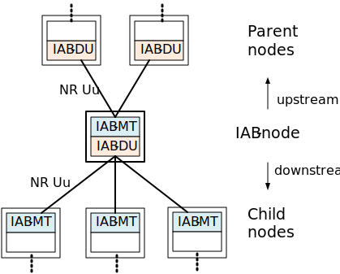
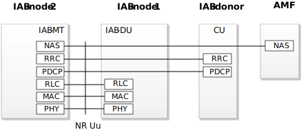
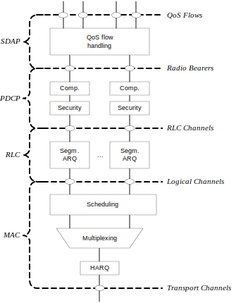
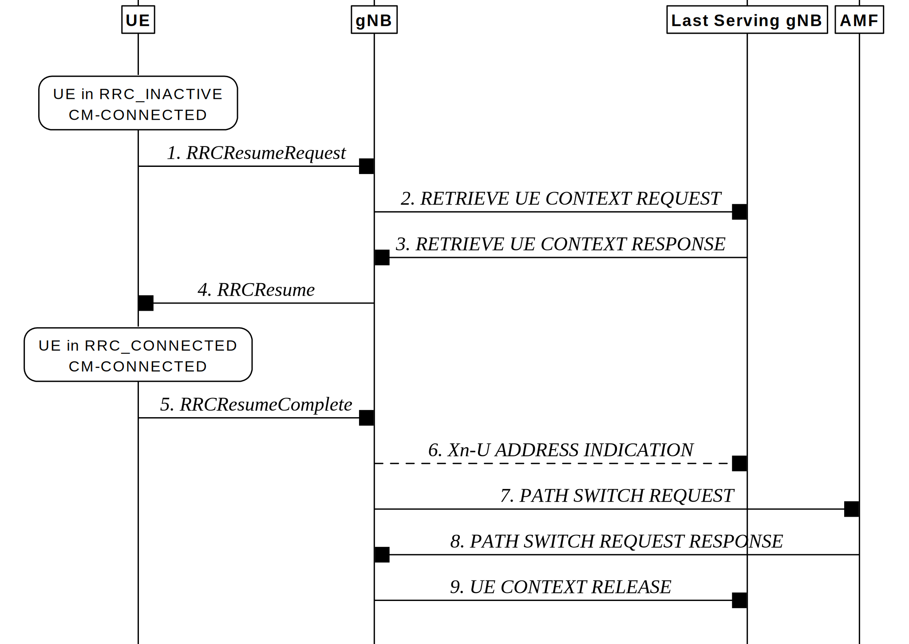
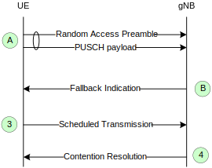
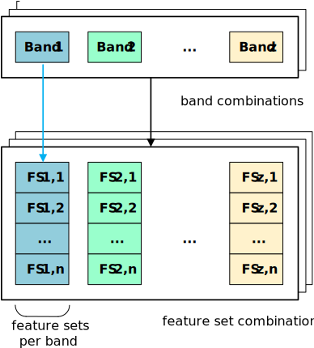
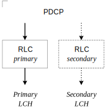

3GPP TS 38.300 V17.9.0 (2024-06)
Technical Specification
3rd Generation Partnership Project;
Technical Specification Group Radio Access Network;
NR; NR and NG-RAN Overall Description;
Stage 2
(Release 17)
The present document has been developed within the 3rd Generation
Partnership Project (3GPP TM) and may be further elaborated
for the purposes of 3GPP.
The present document has not been subject to any approval process by the
3GPP Organizational Partners and shall not be implemented.
This Specification is provided for future development work within 3GPP
only. The Organizational Partners accept no liability for any use of
this Specification.
Specifications and Reports for implementation of the 3GPP TM
system should be obtained via the 3GPP Organizational Partners'
Publications Offices.
3GPP
Postal address
3GPP support office address
650 Route des Lucioles - Sophia Antipolis
Valbonne - FRANCE
Tel.: +33 4 92 94 42 00 Fax: +33 4 93 65 47 16
Internet
http://www.3gpp.org
Copyright Notification
No part may be reproduced except as authorized by written
permission.
The copyright and the foregoing restriction extend to reproduction in
all media.
2024, 3GPP Organizational Partners (ARIB, ATIS, CCSA, ETSI, TSDSI, TTA, TTC).
All rights reserved.
UMTS is a Trade Mark of ETSI registered for the benefit of its members
3GPP is a Trade Mark of ETSI registered for the benefit of its Members and of the 3GPP Organizational Partners
LTE is a Trade Mark of ETSI registered for the benefit of its Members and of the 3GPP Organizational Partners
GSM and the GSM logo are registered and owned by the GSM Association
Foreword 11
1 Scope 12
2 References 12
3 Abbreviations and Definitions 14
3.1 Abbreviations 14
3.2 Definitions 17
4 Overall Architecture and Functional Split 20
4.1 Overall Architecture 20
4.2 Functional Split 21
4.3 Network Interfaces 23
4.3.1 NG Interface 23
4.3.1.1 NG User Plane 23
4.3.1.2 NG Control Plane 24
4.3.2 Xn Interface 24
4.3.2.1 Xn User Plane 24
4.3.2.2 Xn Control Plane 25
4.4 Radio Protocol Architecture 26
4.4.1 User Plane 26
4.4.2 Control Plane 26
4.5 Multi-Radio Dual Connectivity 26
4.6 Radio Access Network Sharing 27
4.7 Integrated Access and Backhaul 27
4.7.1 Architecture 27
4.7.2 Protocol Stacks 28
4.7.3 User-plane Aspects 29
4.7.3.1 Backhaul transport 29
4.7.3.2 Flow and Congestion Control 30
4.7.3.3 Uplink Scheduling Latency 30
4.7.4 Signalling procedures 30
4.7.4.1 IAB-node Integration 30
4.7.4.2 IAB-node Migration 31
4.7.4.3 Topological Redundancy 31
4.7.4.4 Backhaul RLF Recovery 31
4.7.4.5 OTA timing synchronization 31
4.7.4.6 Inter node discovery 32
4.8 Non-Public Networks 32
5 Physical Layer 32
5.1 Waveform, numerology and frame structure 32
5.2 Downlink 33
5.2.1 Downlink transmission scheme 33
5.2.2 Physical-layer processing for physical downlink shared channel 33
5.2.3 Physical downlink control channels 34
5.2.4 Synchronization signal and PBCH block 35
5.2.5 Physical layer procedures 36
5.2.5.1 Link adaptation 36
5.2.5.2 Power Control 36
5.2.5.3 Cell search 36
5.2.5.4 HARQ 36
5.2.5.5 Reception of SIB1 36
5.2.6 Downlink Reference Signals and Measurements for Positioning 36
5.3 Uplink 37
5.3.1 Uplink transmission scheme 37
5.3.2 Physical-layer processing for physical uplink shared channel 37
5.3.3 Physical uplink control channel 38
5.3.4 Random access 39
5.3.5 Physical layer procedures 39
5.3.5.1 Link adaptation 39
5.3.5.2 Uplink Power control 40
5.3.5.3 Uplink timing control 40
5.3.5.4 HARQ 40
5.3.5.5 Prioritization of overlapping transmissions 40
5.3.6 Uplink Reference Signals and Measurements for Positioning 40
5.4 Carrier aggregation 41
5.4.1 Carrier aggregation 41
5.4.2 Supplementary Uplink 41
5.4.3 Uplink Tx switching 41
5.5 Transport Channels 41
5.6 Access to Shared Spectrum 42
5.6.1 Overview 42
5.6.2 Channel Access Priority Classes 43
5.7 Sidelink 43
5.7.1 General 43
5.7.2 Sidelink resource allocation modes 44
5.7.3 Physical sidelink channels and signals 44
5.7.4 Physical layer procedures for sidelink 44
5.7.4.1 HARQ feedback 44
5.7.4.2 Power Control 44
5.7.4.3 CSI report 44
5.7.5 Physical layer measurement definition 44
6 Layer 2 45
6.1 Overview 45
6.2 MAC Sublayer 48
6.2.1 Services and Functions 48
6.2.2 Logical Channels 49
6.2.3 Mapping to Transport Channels 49
6.2.4 HARQ 49
6.3 RLC Sublayer 49
6.3.1 Transmission Modes 49
6.3.2 Services and Functions 50
6.3.3 ARQ 50
6.4 PDCP Sublayer 50
6.4.1 Services and Functions 50
6.5 SDAP Sublayer 51
6.6 L2 Data Flow 51
6.7 Carrier Aggregation 51
6.8 Dual Connectivity 53
6.9 Supplementary Uplink 53
6.10 Bandwidth Adaptation 53
6.11 Backhaul Adaptation Protocol Sublayer 54
6.11.1 Services and Functions 54
6.11.2 Traffic Mapping from Upper Layers to Layer-2 54
6.11.3 Routing, BAP Header Rewriting and BH-RLC-channel Mapping on BAP sublayer 55
6.12 Multiple Transmit/Receive Point Operation 57
7 RRC 57
7.1 Services and Functions 57
7.2 Protocol States 58
7.3 System Information Handling 59
7.3.1 Overview 59
7.3.2 Scheduling 61
7.3.3 SI Modification 61
7.4 Access Control 61
7.5 UE Capability Retrieval framework 62
7.6 Transport of NAS Messages 62
7.7 Carrier Aggregation 62
7.8 Bandwidth Adaptation 62
7.9 UE Assistance Information 63
7.10 Segmentation of RRC messages 63
8 NG Identities 63
8.1 UE Identities 63
8.2 Network Identities 65
8.3 User Data Transport on the CN-RAN Interface 65
8.4 NR sidelink communication and V2X sidelink communication related identities 65
9 Mobility and State Transitions 66
9.1 Overview 66
9.2 Intra-NR 67
9.2.1 Mobility in RRC_IDLE 67
9.2.1.1 Cell Selection 67
9.2.1.2 Cell Reselection 67
9.2.1.3 State Transitions 68
9.2.2 Mobility in RRC_INACTIVE 70
9.2.2.1 Overview 70
9.2.2.2 Cell Reselection 71
9.2.2.3 RAN-Based Notification Area 71
9.2.2.4 State Transitions 72
9.2.2.4.1 UE triggered transition from RRC_INACTIVE to RRC_CONNECTED 72
9.2.2.4.2 Network triggered transition from RRC_INACTIVE to RRC_CONNECTED 73
9.2.2.5 RNA update 74
9.2.2.6 Resume request responded with Release with Redirect, with UE context relocation 76
9.2.3 Mobility in RRC_CONNECTED 77
9.2.3.1 Overview 77
9.2.3.2 Handover 79
9.2.3.2.1 C-Plane Handling 79
9.2.3.2.2 U-Plane Handling 83
9.2.3.2.3 Data Forwarding 85
9.2.3.3 Re-establishment procedure 86
9.2.3.4 Conditional Handover 87
9.2.3.4.1 General 87
9.2.3.4.2 C-plane handling 88
9.2.3.4.3 U-plane handling 90
9.2.3.4.4 Data Forwarding 90
9.2.4 Measurements 90
9.2.5 Paging 93
9.2.6 Random Access Procedure 96
9.2.7 Radio Link Failure 98
9.2.8 Beam failure detection and recovery 100
9.2.9 Timing Advance 101
9.2.10 Extended DRX for RRC_IDLE and RRC_INACTIVE 101
9.3 Inter RAT 102
9.3.1 NR-E-UTRA mobility: Intra 5GC 102
9.3.1.1 Cell Reselection 102
9.3.1.2 Handover 102
9.3.1.3 Measurements 102
9.3.2 NR-E-UTRA mobility: From 5GC to EPC 103
9.3.2.1 Cell Reselection 103
9.3.2.2 Handover and redirection 103
9.3.2.3 Measurements 103
9.3.2.4 Data Forwarding for the Control Plane 103
9.3.2.5 Data Forwarding for the User Plane 104
9.3.3 NR-E-UTRA mobility: From EPC to 5GC 104
9.3.3.1 Data Forwarding for the Control Plane 104
9.3.3.2 Data Forwarding for the User Plane 105
9.3.4 NR-UTRA mobility 105
9.3.4.1 Handover with SRVCC operation 105
9.3.4.2 Measurements 106
9.4 Roaming and Access Restrictions 106
10 Scheduling 107
10.1 Basic Scheduler Operation 107
10.2 Downlink Scheduling 107
10.3 Uplink Scheduling 108
10.4 Measurements to Support Scheduler Operation 109
10.5 Rate Control 109
10.5.1 Downlink 109
10.5.2 Uplink 109
10.6 Activation/Deactivation Mechanism 110
10.7 E-UTRA-NR Cell Resource Coordination 110
10.8 Cross Carrier Scheduling 110
10.9 IAB Resource Configuration 111
11 UE Power Saving 112
12 QoS 113
12.1 Overview 113
12.2 Explicit Congestion Notification 116
13 Security 116
13.1 Overview and Principles 116
13.2 Security Termination Points 118
13.3 State Transitions and Mobility 118
14 UE Capabilities 119
15 Self-Configuration and Self-Optimisation 120
15.1 Definitions 120
15.2 Void 120
15.3 Self-configuration 120
15.3.1 Dynamic configuration of the NG-C interface 120
15.3.1.1 Prerequisites 120
15.3.1.2 SCTP initialization 120
15.3.1.3 Application layer initialization 120
15.3.2 Dynamic Configuration of the Xn interface 121
15.3.2.1 Prerequisites 121
15.3.2.2 SCTP initialization 121
15.3.2.3 Application layer initialization 121
15.3.3 Automatic Neighbour Cell Relation Function 121
15.3.3.1 General 121
15.3.3.2 Intra-system Automatic Neighbour Cell Relation Function 122
15.3.3.3 Void 123
15.3.3.4 Void 123
15.3.3.5 Inter-system Automatic Neighbour Cell Relation Function 123
15.3.4 Xn-C TNL address discovery 124
15.4 Support for Energy Saving 125
15.4.1 General 125
15.4.2 Solution description 125
15.4.2.1 Intra-system energy saving 125
15.4.2.2 Inter-system energy saving 125
15.4.3 O&M requirements 125
15.5 Self-optimisation 126
15.5.1 Support for Mobility Load Balancing 126
15.5.1.1 General 126
15.5.1.2 Load reporting for intra-RAT and intra-system inter-RAT load balancing 126
15.5.1.4 Adapting handover and/or reselection configuration 127
15.5.1.5 Load reporting for inter-system load balancing 127
15.5.2 Support for Mobility Robustness Optimization 127
15.5.2.1 General 127
15.5.2.2 Connection failure 128
15.5.2.2.1 General 128
15.5.2.2.2 Connection failure due to intra-system mobility 128
15.5.2.2.3 Connection failure due to inter-system mobility 129
15.5.2.3 Inter-system Unnecessary HO 130
15.5.2.4 Inter-system Ping-pong 131
15.5.2.5 O&M Requirements 131
15.5.2.6 PSCell change failure 131
15.5.2.7 Successful HO 131
15.5.3 Support for RACH Optimization 132
15.5.4 UE History Information from the UE 132
15.5.5 Support for Coverage and Capacity Optimisation 132
15.5.5.1 General 132
15.5.5.2 OAM requirements 133
15.5.5.3 Dynamic coverage configuration changes 133
15.5.6 Support for PCI Optimisation 133
15.5.6.1 Centralized PCI Assignment 133
15.5.6.2 Distributed PCI Assignment 133
16 Verticals Support 133
16.1 URLLC 133
16.1.1 Overview 133
16.1.2 LCP Restrictions 133
16.1.3 Packet Duplication 134
16.1.4 CQI and MCS 135
16.1.5 DCI formats 135
16.1.6 Higher layer multi-connectivity 135
16.1.6.1 Redundant user plane paths based on dual connectivity 135
16.1.6.2 Redundant data transmission via single UPF and single RAN node 135
16.1.7 URLLC in Unlicensed Controlled Environment 135
16.1.8 PUCCH cell switching for TDD cells 135
16.2 IMS Voice 136
16.2.0 Support for IMS voice 136
16.2.1 Support for MMTEL IMS voice and video enhancements 136
16.2.1.1 RAN-assisted codec adaptation 136
16.2.1.2 MMTEL voice quality/coverage enhancements 137
16.3 Network Slicing 137
16.3.1 General Principles and Requirements 137
16.3.2 AMF and NW Slice Selection 139
16.3.2.1 CN-RAN interaction and internal RAN aspects 139
16.3.2.2 Radio Interface Aspects 139
16.3.3 Resource Isolation and Management 139
16.3.3.1 General 139
16.3.3.2 Handling of Slice Resources 139
16.3.3a Slice-based cell reselection 140
16.3.4 Signalling Aspects 140
16.3.4.1 General 140
16.3.4.2 AMF and NW Slice Selection 140
16.3.4.3 UE Context Handling 141
16.3.4.4 PDU Session Setup Handling 141
16.3.4.5 Mobility 141
16.4 Public Warning System 143
16.5 Emergency Services 143
16.5.1 Overview 143
16.5.2 IMS Emergency call 143
16.5.3 eCall over IMS 143
16.5.4 Fallback 143
16.6 Stand-Alone NPN 144
16.6.1 General 144
16.6.2 Mobility 144
16.6.2.1 General 144
16.6.2.2 Inactive Mode 144
16.6.2.3 Connected Mode 144
16.7 Public Network Integrated NPN 145
16.7.1 General 145
16.7.2 Mobility 146
16.7.2.1 General 146
16.7.2.2 Inactive Mode 146
16.7.2.3 Connected Mode 146
16.7.3 Self-Configuration for PNI-NPN 146
16.7.4 Access Control 146
16.7.5 Paging 147
16.8 Support for Time Sensitive Communications 147
16.9 Sidelink 148
16.9.1 General 148
16.9.2 Radio Protocol Architecture for NR sidelink communication 149
16.9.2.1 Overview 149
16.9.2.2 MAC 151
16.9.2.3 RLC 152
16.9.2.4 PDCP 152
16.9.2.5 SDAP 152
16.9.2.6 RRC 152
16.9.3 Radio Resource Allocation 152
16.9.3.1 General 152
16.9.3.2 Scheduled Resource Allocation 153
16.9.3.3 UE Autonomous Resource Selection 153
16.9.4 Uu Control 153
16.9.4.1 General 153
16.9.4.2 Control of connected UEs 154
16.9.4.3 Control of idle/inactive UEs 154
16.9.5 Sidelink Discovery 155
16.9.6 SL DRX 155
16.9.6.1 General 155
16.9.6.2 Unicast 155
16.9.6.3 Groupcast/Broadcast 156
16.9.6.4 Alignment between Uu DRX and SL DRX 156
16.9.7 Power Savings Resource Allocation 156
16.9.8 Inter-UE Coordination (IUC) 157
16.10 Multicast and Broadcast Services 157
16.10.1 General 157
16.10.2 Network Architecture 158
16.10.3 Protocol Architecture 158
16.10.4 Group Scheduling 160
16.10.5 Multicast Handling 160
16.10.5.1 Session Management 160
16.10.5.2 Configuration 161
16.10.5.3 Service Continuity 162
16.10.5.3.1 General 162
16.10.5.3.2 Handover between Multicast supporting cells 162
16.10.5.3.3 Handover between Multicast-supporting cell and Multicast non-supporting cell 162
16.10.5.3.4 MRB reconfiguration 163
16.10.5.4 Reception of MBS Multicast data 163
16.10.5.5 Support of CA 163
16.10.5.6 DRX 163
16.10.5.7 Physical Layer 164
16.10.6 Broadcast Handling 164
16.10.6.1 Session Management 164
16.10.6.2 Configuration 164
16.10.6.3 Support of CA 164
16.10.6.4 DRX 165
16.10.6.5 Service Continuity 165
16.10.6.5.0 General 165
16.10.6.5.1 Service Continuity in RRC_IDLE or RRC_INACTIVE 165
16.10.6.5.2 Service Continuity in RRC_CONNECTED 165
16.10.6.5A Reception of MBS Broadcast data 166
16.10.6.6 Physical Layer 166
16.11 Minimization of Service Interruption 166
16.12 Sidelink Relay 166
16.12.1 General 166
16.12.2 Protocol Architecture 167
16.12.2.1 L2 UE-to-Network Relay 167
16.12.3 Relay Discovery 169
16.12.4 Relay Selection/Reselection 170
16.12.5 Control plane procedures for L2 U2N Relay 170
16.12.5.1 RRC Connection Management 170
16.12.5.2 Radio Link Failure 172
16.12.5.3 RRC Connection Re-establishment 172
16.12.5.4 RRC Connection Resume 172
16.12.5.5 System Information 172
16.12.5.6 Paging 173
16.12.5.7 Access Control 173
16.12.5.8 Mobility Registration Update and RAN Area Update 173
16.12.6 Service Continuity for L2 U2N relay 173
16.12.6.0 General 173
16.12.6.1 Switching from indirect to direct path 173
16.12.6.2 Switching from direct to indirect path 175
16.13 Support of Reduced Capability (RedCap) NR devices 176
16.13.1 Introduction 176
16.13.2 Capabilities 176
16.13.3 Identification, access and camping restrictions 176
16.13.4 RRM measurement relaxations 176
16.13.5 BWP operation 176
16.14 Non-Terrestrial Networks 177
16.14.1 Overview 177
16.14.2 Timing and Synchronization 178
16.14.2.1 Scheduling and Timing 178
16.14.2.2 Timing Advance and Frequency Pre-compensation 179
16.14.3 Mobility and State transition 180
16.14.3.1 Mobility in RRC_IDLE and RRC_INACTIVE 180
16.14.3.2 Mobility in RRC_CONNECTED 180
16.14.3.2.1 Handover 180
16.14.3.2.2 Conditional Handover 180
16.14.3.3 Measurements 181
16.14.4 Switchover 181
16.14.4.1 Definitions 181
16.14.4.2 Assumptions 181
16.14.4.3 Procedures 181
16.14.5 NG-RAN signalling 182
16.14.6 AMF (Re-)Selection 182
16.14.7 O&M Requirements 182
16.14.8 Coarse UE location reporting 183
17 Interference Management 183
17.1 Remote Interference Management 183
17.2 Cross-Link Interference Management 184
18 Small Data Transmission 184
18.0 General 184
18.1 Support of SDT procedure over RACH 185
18.2 SDT with UE context relocation 186
18.3 SDT without UE context relocation 187
19 Support for NR coverage enhancements 188
20 Support for Multi-USIM devices 189
20.1 General 189
20.2 Paging Collision Avoidance 189
20.3 UE notification on Network Switching 189
21 Application Layer Measurement Collection 189
21.1 Overview 189
21.2 QoE Measurement Configuration 190
21.2.1 QoE Measurement Collection Activation and Reporting 190
21.2.2 QoE Measurement Collection Deactivation 190
21.2.3 Handling of QMC during RAN Overload 190
21.2.4 QoE Measurement Handling in RRC_IDLE and RRC_INACTIVE States 191
21.2.5 Per-slice QoE Measurement 191
21.3 QoE Measurement Continuity for Mobility 191
21.4 RAN Visible QoE Measurements 191
21.5 Alignment of MDT and QoE Measurements 192
Annex A (informative): QoS Handling in RAN 193
A.1 PDU Session Establishment 193
A.2 New QoS Flow with RQoS 193
A.3 New QoS Flow with Explicit RRC Signalling 194
A.4 New QoS Flow with Explicit NAS Signalling 195
A.5 Release of QoS Flow with Explicit Signalling 196
A.6 UE Initiated UL QoS Flow 196
Annex B (informative): Deployment Scenarios 198
B.1 Supplementary Uplink 198
B.2 Multiple SSBs in a carrier 198
B.3 NR Operation with Shared Spectrum 199
B.4 Example implementation of Non-Terrestrial Networks 199
Annex C (informative): I-RNTI Reference Profiles 202
Annex D (informative): SPID ranges and mapping of SPID values to cell reselection and inter-RAT/inter frequency handover priorities 203
Annex E (informative): NG-RAN Architecture for Radio Access Network Sharing with multiple cell ID broadcast 204
Annex F (normative): Use and structure of the I-RNTI 204
Annex G (informative): Change history 205
This Technical Specification has been produced by the 3rd Generation Partnership Project (3GPP).
The contents of the present document are subject to continuing work within the TSG and may change following formal TSG approval. Should the TSG modify the contents of the present document, it will be re-released by the TSG with an identifying change of release date and an increase in version number as follows:
Version x.y.z
where:
x the first digit:
1 presented to TSG for information;
2 presented to TSG for approval;
3 or greater indicates TSG approved document under change control.
y the second digit is incremented for all changes of substance, i.e. technical enhancements, corrections, updates, etc.
z the third digit is incremented when editorial only changes have been incorporated in the document.
The present document provides an overview and overall description of the NG-RAN and focuses on the radio interface protocol architecture of NR connected to 5GC (E-UTRA connected to 5GC is covered in the 36 series). Details of the radio interface protocols are specified in companion specifications of the 38 series.
The following documents contain provisions which, through reference in this text, constitute provisions of the present document.
- References are either specific (identified by date of publication, edition number, version number, etc.) or nonspecific.
- For a specific reference, subsequent revisions do not apply.
- For a non-specific reference, the latest version applies. In the case of a reference to a 3GPP document (including a GSM document), a non-specific reference implicitly refers to the latest version of that document in the same Release as the present document.
[1] 3GPP TR 21.905: "Vocabulary for 3GPP Specifications".
[2] 3GPP TS 36.300: "Evolved Universal Terrestrial Radio Access (E-UTRA) and Evolved Universal Terrestrial Radio Access Network (E-UTRAN); Overall description; Stage 2".
[3] 3GPP TS 23.501: "System Architecture for the 5G System; Stage 2".
[4] 3GPP TS 38.401: "NG-RAN; Architecture description".
[5] 3GPP TS 33.501: "Security Architecture and Procedures for 5G System".
[6] 3GPP TS 38.321: "NR; Medium Access Control (MAC) protocol specification".
[7] 3GPP TS 38.322: "NR; Radio Link Control (RLC) protocol specification".
[8] 3GPP TS 38.323: "NR; Packet Data Convergence Protocol (PDCP) specification".
[9] 3GPP TS 37.324: " E-UTRA and NR; Service Data Protocol (SDAP) specification".
[10] 3GPP TS 38.304: "NR; User Equipment (UE) procedures in Idle mode and RRC Inactive state".
[11] 3GPP TS 38.306: "NR; User Equipment (UE) radio access capabilities".
[12] 3GPP TS 38.331: "NR; Radio Resource Control (RRC); Protocol specification".
[13] 3GPP TS 38.133: "NR; Requirements for support of radio resource management".
[14] 3GPP TS 22.168: "Earthquake and Tsunami Warning System (ETWS) requirements; Stage 1".
[15] 3GPP TS 22.268: "Public Warning System (PWS) Requirements".
[16] 3GPP TS 38.410: "NG-RAN; NG general aspects and principles".
[17] 3GPP TS 38.420: "NG-RAN; Xn general aspects and principles".
[18] 3GPP TS 38.101-1: "NR; User Equipment (UE) radio transmission and reception; Part 1: Range 1 Standalone".
[19] 3GPP TS 22.261: "Service requirements for next generation new services and markets".
[20] 3GPP TS 38.202: "NR; Physical layer services provided by the physical layer"
[21] 3GPP TS 37.340: "NR; Multi-connectivity; Overall description; Stage-2".
[22] 3GPP TS 23.502: "Procedures for the 5G System; Stage 2".
[23] IETF RFC 4960 (2007-09): "Stream Control Transmission Protocol".
[24] 3GPP TS 26.114: "Technical Specification Group Services and System Aspects; IP Multimedia Subsystem (IMS); Multimedia Telephony; Media handling and interaction".
[25] Void.
[26] 3GPP TS 38.413: "NG-RAN; NG Application Protocol (NGAP)".
[27] IETF RFC 3168 (09/2001): "The Addition of Explicit Congestion Notification (ECN) to IP".
[28] 3GPP TS 24.501: "NR; Non-Access-Stratum (NAS) protocol for 5G System (5GS)".
[29] 3GPP TS 36.331: "Evolved Universal Terrestrial Radio Access (E-UTRA); Radio Resource Control (RRC); Protocol specification".
[30] 3GPP TS 38.415: "NG-RAN; PDU Session User Plane Protocol".
[31] 3GPP TS 38.340: "NR; Backhaul Adaptation Protocol (BAP) specification".
[32] 3GPP TS 38.470: "NG-RAN; F1 application protocol (F1AP) ".
[33] 3GPP TS 38.425: "NG-RAN; NR user plane protocol".
[34] 3GPP TS 23.216: "Single Radio Voice Call Continuity (SRVCC); Stage 2".
[35] 3GPP TS 38.101-2: "User Equipment (UE) radio transmission and reception; Part 2: Range 2 Standalone".
[36] 3GPP TS 38.101-3: "User Equipment (UE) radio transmission and reception; Part 3: Range 1 and Range 2 Interworking operation with other radios".
[37] 3GPP TS 37.213: "Physical layer procedures for shared spectrum channel access".
[38] 3GPP TS 38.213: "NR; Physical layer procedures for control".
[39] 3GPP TS 22.104 "Service requirements for cyber-physical control applications in vertical domains".
[40] 3GPP TS 23.287: "Architecture enhancements for 5G System (5GS) to support Vehicle-to-Everything (V2X) services".
[41] 3GPP TS 23.285: "Technical Specification Group Services and System Aspects; Architecture enhancements for V2X services".
[42] 3GPP TS 38.305: "NG Radio Access Network (NG-RAN); Stage 2 functional specification of User Equipment (UE) positioning in NG-RAN".
[43] 3GPP TS 37.355: "LTE Positioning Protocol (LPP)".
[44] 3GPP TS 29.002: "Mobile Application Part (MAP) specification".
[45] 3GPP TS 23.247: "Architectural enhancements for 5G multicast-broadcast services; Stage 2".
[46] 3GPP TS 26.517: "5G Multicast-Broadcast User Services; Protocols and Formats".
[47] 3GPP TS 23.122: "Non-Access-Stratum (NAS) functions related to Mobile Station (MS) in idle mode".
[48] 3GPP TS 23.304: "Proximity based Services (ProSe) in the 5G System (5GS)".
[49] 3GPP TS 28.541: "5G Network Resource Model (NRM)".
[50] 3GPP TS 38.423: "NG-RAN; Xn Application Protocol (XnAP)".
[51] NIMA TR 8350.2, Third Edition, Amendment 1, 3 January 2000: "DEPARTMENT OF DEFENSE WORLD GEODETIC SYSTEM 1984".
[52] 3GPP TS 38.211: "NR; Physical channels and modulation".
[53] 3GPP TS 24.587: "Vehicle-to-Everything (V2X) services in 5G System (5GS)".
[54] 3GPP TS 23.041: "Technical realization of Cell Broadcast Service (CBS)".
[55] 3GPP TS 24.554: "Technical Specification Group Core Network and Terminals; Proximity-services (ProSe) in 5G System (5GS) protocol".
For the purposes of the present document, the abbreviations given in TR21.905 [1], in TS 36.300 [2] and the following apply. An abbreviation defined in the present document takes precedence over the definition of the same abbreviation, if any, in TR21.905[1] and TS 36.300 [2].
5GC 5G Core Network
5GS 5G System
5QI 5G QoS Identifier
A-CSI Aperiodic CSI
AGC Automatic Gain Control
AKA Authentication and Key Agreement
AMBR Aggregate Maximum Bit Rate
AMC Adaptive Modulation and Coding
AMF Access and Mobility Management Function
ARP Allocation and Retention Priority
BA Bandwidth Adaptation
BCCH Broadcast Control Channel
BCH Broadcast Channel
BFD Beam Failure Detection
BH Backhaul
BL Bandwidth reduced Low complexity
BPSK Binary Phase Shift Keying
C-RNTI Cell RNTI
CAG Closed Access Group
CAPC Channel Access Priority Class
CBRA Contention Based Random Access
CCE Control Channel Element
CD-SSB Cell Defining SSB
CFR Common Frequency Resource
CFRA Contention Free Random Access
CG Configured Grant
CHO Conditional Handover
CIoT Cellular Internet of Things
CLI Cross Link interference
CMAS Commercial Mobile Alert Service
CORESET Control Resource Set
CP Cyclic Prefix
CPA Conditional PSCell Addition
CPC Conditional PSCell Change
DAG Directed Acyclic Graph
DAPS Dual Active Protocol Stack
DFT Discrete Fourier Transform
DCI Downlink Control Information
DCP DCI with CRC scrambled by PS-RNTI
DL-AoD Downlink Angle-of-Departure
DL-SCH Downlink Shared Channel
DL-TDOA Downlink Time Difference Of Arrival
DMRS Demodulation Reference Signal
DRX Discontinuous Reception
E-CID Enhanced Cell-ID (positioning method)
EHC Ethernet Header Compression
ePWS enhancements of Public Warning System
ETWS Earthquake and Tsunami Warning System
FS Feature Set
FSA ID Frequency Selection Area Identity
G-CS-RNTI Group Configured Scheduling RNTI
G-RNTI Group RNTI
GFBR Guaranteed Flow Bit Rate
GIN Group ID for Network selection
GNSS Global Navigation Satellite System
GSO Geosynchronous Orbit
H-SFN Hyper System Frame Number
HAPS High Altitude Platform Station
HRNN Human-Readable Network Name
IAB Integrated Access and Backhaul
IFRI Intra Frequency Reselection Indication
I-RNTI Inactive RNTI
INT-RNTI Interruption RNTI
KPAS Korean Public Alarm System
L2 Layer-2
L3 Layer-3
LDPC Low Density Parity Check
LEO Low Earth Orbit
MBS Multicast/Broadcast Services
MCE Measurement Collection Entity
MCCH MBS Control Channel
MDBV Maximum Data Burst Volume
MEO Medium Earth Orbit
MIB Master Information Block
MICO Mobile Initiated Connection Only
MFBR Maximum Flow Bit Rate
MMTEL Multimedia telephony
MNO Mobile Network Operator
MPE Maximum Permissible Exposure
MRB MBS Radio Bearer
MT Mobile Termination
MTCH MBS Traffic Channel
MTSI Multimedia Telephony Service for IMS
MU-MIMO Multi User MIMO
Multi-RTT Multi-Round Trip Time
MUSIM Multi-Universal Subscriber Identity Module
NB-IoT Narrow Band Internet of Things
NCD-SSB Non Cell Defining SSB
NCGI NR Cell Global Identifier
NCL Neighbour Cell List
NCR Neighbour Cell Relation
NCRT Neighbour Cell Relation Table
NGAP NG Application Protocol
NGSO Non-Geosynchronous Orbit
NID Network Identifier
NPN Non-Public Network
NR NR Radio Access
NSAG Network Slice AS Group
NTN Non-Terrestrial Network
P-MPR Power Management Maximum Power Reduction
P-RNTI Paging RNTI
PCH Paging Channel
PCI Physical Cell Identifier
PDC Propagation Delay Compensation
PDCCH Physical Downlink Control Channel
PDSCH Physical Downlink Shared Channel
PEI Paging Early Indication
PH Paging Hyperframe
PLMN Public Land Mobile Network
PNI-NPN Public Network Integrated NPN
PO Paging Occasion
PRACH Physical Random Access Channel
PRB Physical Resource Block
PRG Precoding Resource block Group
PRS Positioning Reference Signal
PS-RNTI Power Saving RNTI
PSS Primary Synchronisation Signal
PTM Point to Multipoint
PTP Point to Point
PTW Paging Time Window
PUCCH Physical Uplink Control Channel
PUSCH Physical Uplink Shared Channel
PWS Public Warning System
QAM Quadrature Amplitude Modulation
QFI QoS Flow ID
QMC QoE Measurement Collection
QoE Quality of Experience
QPSK Quadrature Phase Shift Keying
RA Random Access
RA-RNTI Random Access RNTI
RACH Random Access Channel
RANAC RAN-based Notification Area Code
REG Resource Element Group
RIM Remote Interference Management
RLM Radio Link Monitoring
RMSI Remaining Minimum SI
RNA RAN-based Notification Area
RNAU RAN-based Notification Area Update
RNTI Radio Network Temporary Identifier
RQA Reflective QoS Attribute
RQoS Reflective Quality of Service
RS Reference Signal
RSRP Reference Signal Received Power
RSRQ Reference Signal Received Quality
RSSI Received Signal Strength Indicator
RSTD Reference Signal Time Difference
RTT Round Trip Time
SCS SubCarrier Spacing
SD Slice Differentiator
SDAP Service Data Adaptation Protocol
SDT Small Data Transmission
SD-RSRP Sidelink Discovery RSRP
SFI-RNTI Slot Format Indication RNTI
SHR Successful Handover Report
SIB System Information Block
SI-RNTI System Information RNTI
SLA Service Level Agreement
SL-RSRP Sidelink RSRP
SMC Security Mode Command
SMF Session Management Function
SMTC SS/PBCH block Measurement Timing Configuration
S-NSSAI Single Network Slice Selection Assistance Information
SNPN Stand-alone Non-Public Network
SNPN ID Stand-alone Non-Public Network Identity
SPS Semi-Persistent Scheduling
SR Scheduling Request
SRAP Sidelink Relay Adaptation Protocol
SRS Sounding Reference Signal
SRVCC Single Radio Voice Call Continuity
SS Synchronization Signal
SSB SS/PBCH block
SSS Secondary Synchronisation Signal
SSSG Search Space Set Group
SST Slice/Service Type
SU-MIMO Single User MIMO
SUL Supplementary Uplink
TA Timing Advance
TB Transport Block
TCE Trace Collection Entity
TNL Transport Network Layer
TPC Transmit Power Control
TRP Transmit/Receive Point
TRS Tracking Reference Signal
U2N UE-to-Network
UCI Uplink Control Information
UDC Uplink Data Compression
UE-Slice-MBR UE Slice Maximum Bit Rate
UL-AoA Uplink Angles of Arrival
UL-RTOA Uplink Relative Time of Arrival
UL-SCH Uplink Shared Channel
UPF User Plane Function
URLLC Ultra-Reliable and Low Latency Communications
VR Virtual Reality
V2X Vehicle-to-Everything
Xn-C Xn-Control plane
Xn-U Xn-User plane
XnAP Xn Application Protocol
For the purposes of the present document, the terms and definitions given in TR21.905[1], in TS 36.300 [2] and the following apply. A term defined in the present document takes precedence over the definition of the same term, if any, in TR21.905[1] and TS 36.300 [2].
BH RLC channel: an RLC channel between two nodes, which is used to transport backhaul packets.
Boundary IAB-node: as defined in TS 38.401 [4].
Broadcast MRB: A radio bearer configured for MBS broadcast delivery.
CAG Cell: a PLMN cell broadcasting at least one Closed Access Group identity.
CAG Member Cell: for a UE, a CAG cell broadcasting the identity of the selected PLMN, registered PLMN or equivalent PLMN, and for that PLMN, a CAG identifier belonging to the Allowed CAG list of the UE for that PLMN.
CAG-only cell: a CAG cell that is only available for normal service for CAG UEs.
Cell-Defining SSB: an SSB with an RMSI associated.
Child node: IAB-DU's and IAB-donor-DU's next hop neighbour node; the child node is also an IAB-node.
Conditional Handover (CHO): a handover procedure that is executed only when execution condition(s) are met.
CORESET#0: the control resource set for at least SIB1 scheduling, can be configured either via MIB or via dedicated RRC signalling.
DAPS Handover: a handover procedure that maintains the source gNB connection after reception of RRC message for handover and until releasing the source cell after successful random access to the target gNB.
Direct Path: a type of UE-to-Network transmission path, where data is transmitted between a UE and the network without sidelink relaying.
Downstream: direction toward child node or UE in IAB-topology.
Early Data Forwarding: data forwarding that is initiated before the UE executes the handover.
Earth-centered, earth-fixed: a global geodetic reference system for the Earth intended for practical applications of mapping, charting, geopositioning and navigation, as specified in NIMA TR 8350.2 [51].
Feeder link: wireless link between the NTN Gateway and the NTN payload.
Geosynchronous Orbit: earth-centered orbit at approximately 35786 kilometres above Earth's surface and synchronised with Earth's rotation. A geostationary orbit is a non-inclined geosynchronous orbit, i.e. in the Earth's equator plane.
Group ID for Network Selection: an identifier used during SNPN selection to enhance the likelihood of selecting a preferred SNPN that supports a Default Credentials Server or a Credentials Holder, as specified in TS 23.501 [3].
gNB: node providing NR user plane and control plane protocol terminations towards the UE, and connected via the NG interface to the 5GC.
High Altitude Platform Station: airborne vehicle embarking the NTN payload placed at an altitude between 8 and 50 km.
IAB-donor: gNB that provides network access to UEs via a network of backhaul and access links.
IAB-donor-CU: as defined in TS 38.401 [4].
IAB-donor-DU: as defined in TS 38.401 [4].
IAB-DU: gNB-DU functionality supported by the IAB-node to terminate the NR access interface to UEs and next-hop IAB-nodes, and to terminate the F1 protocol to the gNB-CU functionality, as defined in TS 38.401 [4], on the IAB-donor.
IAB-MT: IAB-node function that terminates the Uu interface to the parent node using the procedures and behaviours specified for UEs unless stated otherwise. IAB-MT function used in 38-series of 3GPP Specifications corresponds to IAB-UE function defined in TS 23.501 [3].
IAB-node: RAN node that supports NR access links to UEs and NR backhaul links to parent nodes and child nodes. The IAB-node does not support backhauling via LTE.
IAB topology: the unison of all IAB-nodes and IAB-donor-DUs whose F1 and/or RRC connections are terminated at the same IAB-donor-CU.
Indirect Path: a type of UE-to-Network transmission path, where data is forwarded via a U2N Relay UE between a U2N Remote UE and the network.
Inter-donor partial migration: migration of an IAB-MT to a parent node underneath a different IAB-donor-CU while the collocated IAB-DU and its descendant IAB-node(s), if any, are terminated at the initial IAB-donor-CU. The procedure renders the said IAB-node as a boundary IAB-node.
Intra-system Handover: handover that does not involve a CN change (EPC or 5GC).
Inter-system Handover: handover that involves a CN change (EPC or 5GC).
Late Data Forwarding: data forwarding that is initiated after the source NG-RAN node knows that the UE has successfully accessed a target NG-RAN node.
Mapped Cell ID: in NTN, it corresponds to a fixed geographical area.
MBS Radio Bearer: A radio bearer configured for MBS delivery.
MSG1: preamble transmission of the random access procedure for 4-step random access (RA) type.
MSG3: first scheduled transmission of the random access procedure.
MSGA: preamble and payload transmissions of the random access procedure for 2-step RA type.
MSGB: response to MSGA in the 2-step random access procedure. MSGB may consist of response(s) for contention resolution, fallback indication(s), and backoff indication.
Multicast/Broadcast Service: A point-to-multipoint service as defined in TS 23.247 [45].
Multicast MRB: A radio bearer configured for MBS multicast delivery.
Multi-hop backhauling: using a chain of NR backhaul links between an IAB-node and an IAB-donor.
ng-eNB: node providing E-UTRA user plane and control plane protocol terminations towards the UE, and connected via the NG interface to the 5GC.
NG-C: control plane interface between NG-RAN and 5GC.
NG-U: user plane interface between NG-RAN and 5GC.
NG-RAN node: either a gNB or an ng-eNB.
Non-CAG Cell: a PLMN cell which does not broadcast any Closed Access Group identity.
Non-Geosynchronous orbit: earth-centered orbit with an orbital period that does not match Earth's rotation on its axis. This includes Low and Medium Earth Orbit (LEO and MEO). LEO operates at altitudes between 300 km and 1500 km and MEO at altitudes between 7000 km and 25000 km, approximately.
Non-terrestrial network: an NG-RAN consisting of gNBs, which provide non-terrestrial NR access to UEs by means of an NTN payload embarked on an airborne or space-borne NTN vehicle and an NTN Gateway.
NR backhaul link: NR link used for backhauling between an IAB-node and an IAB-donor, and between IAB-nodes in case of a multi-hop backhauling.
NR sidelink communication: AS functionality enabling at least V2X communication as defined in TS 23.287 [40] and the ProSe communication (including ProSe non-Relay and UE-to-Network Relay communication) as defined in TS 23.304 [48], between two or more nearby UEs, using NR technology but not traversing any network node.
NR sidelink discovery: AS functionality enabling ProSe non-Relay Discovery and ProSe UE-to-Network Relay discovery for Proximity based Services as defined in TS 23.304 [48] between two or more nearby UEs, using NR technology but not traversing any network node.
NTN Gateway: an earth station located at the surface of the earth, providing connectivity to the NTN payload using the feeder link. An NTN Gateway is a TNL node.
NTN payload: a network node, embarked on board a satellite or high altitude platform station, providing connectivity functions, between the service link and the feeder link. In the current version of this specification, the NTN payload is a TNL node.
Numerology: corresponds to one subcarrier spacing in the frequency domain. By scaling a reference subcarrier spacing by an integer N, different numerologies can be defined.
Parent node: IAB-MT's next hop neighbour node; the parent node can be IAB-node or IAB-donor-DU
PC5 Relay RLC channel: an RLC channel between L2 U2N Remote UE and L2 U2N Relay UE, which is used to transport packets over PC5 for L2 UE-to-Network Relay.
PLMN Cell: a cell of the PLMN.
RedCap UE: a UE with reduced capabilities as specified in clause 4.2.21.1 in TS 38.306 [11].
Relay discovery: AS functionality enabling 5G ProSe UE-to-Network Relay Discovery as defined in TS 23.304 [48], using NR technology but not traversing any network node.
Satellite: a space-borne vehicle orbiting the Earth embarking the NTN payload.
Service link: wireless link between the NTN payload and UE.
Sidelink Discovery RSRP: RSRP measurements on PC5 link related to NR sidelink discovery.
Sidelink RSRP: RSRP measurements on PC5 link related to NR sidelink communication.
SNPN Access Mode: mode of operation whereby a UE only accesses SNPNs.
SNPN-only cell: a cell that is only available for normal service for SNPN subscribers.
SNPN Identity: the identity of Stand-alone NPN defined by the pair (PLMN ID, NID).
Transmit/Receive Point: part of the gNB transmitting and receiving radio signals to/from UE according to physical layer properties and parameters inherent to that element.
U2N Relay UE: a UE that provides functionality to support connectivity to the network for U2N Remote UE(s).
U2N Remote UE: a UE that communicates with the network via a U2N Relay UE.
Upstream: direction toward parent node in IAB-topology.
Uu Relay RLC channel: an RLC channel between L2 U2N Relay UE and gNB, which is used to transport packets over Uu for L2 UE-to-Network Relay.
V2X sidelink communication: AS functionality enabling V2X communication as defined in TS 23.285 [41], between nearby UEs, using E-UTRA technology but not traversing any network node.
Xn: network interface between NG-RAN nodes.
An NG-RAN node is either:
- a gNB, providing NR user plane and control plane protocol terminations towards the UE; or
- an ng-eNB, providing E-UTRA user plane and control plane protocol terminations towards the UE.
The gNBs and ng-eNBs are interconnected with each other by means of the Xn interface. The gNBs and ng-eNBs are also connected by means of the NG interfaces to the 5GC, more specifically to the AMF (Access and Mobility Management Function) by means of the NG-C interface and to the UPF (User Plane Function) by means of the NG-U interface (see TS 23.501 [3]).
NOTE: The architecture and the F1 interface for a functional split are defined in TS 38.401 [4].
The NG-RAN architecture is illustrated in Figure 4.1-1 below.

Figure 4.1-1: Overall Architecture
The gNB and ng-eNB host the following functions:
- Functions for Radio Resource Management: Radio Bearer Control, Radio Admission Control, Connection Mobility Control, Dynamic allocation of resources to UEs in uplink, downlink and sidelink (scheduling);
- IP and Ethernet header compression, uplink data decompression, encryption and integrity protection of data;
- Selection of an AMF at UE attachment when no routing to an AMF can be determined from the information provided by the UE;
- Routing of User Plane data towards UPF(s);
- Routing of Control Plane information towards AMF;
- Connection setup and release;
- Scheduling and transmission of paging messages;
- Scheduling and transmission of system broadcast information (originated from the AMF or OAM);
- Measurement and measurement reporting configuration for mobility and scheduling;
- Transport level packet marking in the uplink;
- Session Management;
- Support of Network Slicing;
- QoS Flow management and mapping to data radio bearers;
- Support of UEs in RRC_INACTIVE state;
- Distribution function for NAS messages;
- Radio access network sharing;
- Dual Connectivity;
- Tight interworking between NR and E-UTRA;
- Maintain security and radio configuration for User Plane CIoT 5GS Optimisation, as defined in TS 23.501 [3] (ng-eNB only).
NOTE 1: BL UE or UE in enhanced coverage is only supported by ng-eNB, see TS 36.300 [2].
NOTE 2: NB-IoT UE is only supported by ng-eNB, see TS 36.300 [2].
The AMF hosts the following main functions (see TS 23.501 [3]):
- NAS signalling termination;
- NAS signalling security;
- AS Security control;
- Inter CN node signalling for mobility between 3GPP access networks;
- Idle mode UE Reachability (including control and execution of paging retransmission);
- Registration Area management;
- Support of intra-system and inter-system mobility;
- Access Authentication;
- Access Authorization including check of roaming rights;
- Mobility management control (subscription and policies);
- Support of Network Slicing;
- SMF selection.
- Selection of CIoT 5GS optimisations;
The UPF hosts the following main functions (see TS 23.501 [3]):
- Anchor point for Intra-/Inter-RAT mobility (when applicable);
- External PDU session point of interconnect to Data Network;
- Packet routing & forwarding;
- Packet inspection and User plane part of Policy rule enforcement;
- Traffic usage reporting;
- Uplink classifier to support routing traffic flows to a data network;
- Branching point to support multi-homed PDU session;
- QoS handling for user plane, e.g. packet filtering, gating, UL/DL rate enforcement;
- Uplink Traffic verification (SDF to QoS flow mapping);
- Downlink packet buffering and downlink data notification triggering.
The Session Management function (SMF) hosts the following main functions (see TS 23.501 [3]):
- Session Management;
- UE IP address allocation and management;
- Selection and control of UP function;
- Configures traffic steering at UPF to route traffic to proper destination;
- Control part of policy enforcement and QoS;
- Downlink Data Notification.
This is summarized on the figure below where yellow boxes depict the logical nodes and white boxes depict the main functions.
Figure 4.2-1: Functional Split between NG-RAN and 5GC
The NG user plane interface (NG-U) is defined between the NG-RAN node and the UPF. The user plane protocol stack of the NG interface is shown on Figure 4.3.1.1-1. The transport network layer is built on IP transport and GTP-U is used on top of UDP/IP to carry the user plane PDUs between the NG-RAN node and the UPF.

Figure 4.3.1.1-1: NG-U Protocol Stack
NG-U provides non-guaranteed delivery of user plane PDUs between the NG-RAN node and the UPF.
Further details of NG-U can be found in TS 38.410 [16].
The NG control plane interface (NG-C) is defined between the NG-RAN node and the AMF. The control plane protocol stack of the NG interface is shown on Figure 4.3.1.2-1. The transport network layer is built on IP transport. For the reliable transport of signalling messages, SCTP is added on top of IP. The application layer signalling protocol is referred to as NGAP (NG Application Protocol). The SCTP layer provides guaranteed delivery of application layer messages. In the transport, IP layer point-to-point transmission is used to deliver the signalling PDUs.
Figure 4.3.1.2-1: NG-C Protocol Stack
NG-C provides the following functions:
- NG interface management;
- UE context management;
- UE mobility management;
- Transport of NAS messages;
- Paging;
- PDU Session Management;
- Configuration Transfer;
- Warning Message Transmission.
Further details of NG-C can be found in TS 38.410 [16].
The Xn User plane (Xn-U) interface is defined between two NG-RAN nodes. The user plane protocol stack on the Xn interface is shown in Figure 4.3.2.1-1. The transport network layer is built on IP transport and GTP-U is used on top of UDP/IP to carry the user plane PDUs.
Figure 4.3.2.1-1: Xn-U Protocol Stack
Xn-U provides non-guaranteed delivery of user plane PDUs and supports the following functions:
- Data forwarding;
- Flow control.
Further details of Xn-U can be found in TS 38.420 [17].
The Xn control plane interface (Xn-C) is defined between two NG-RAN nodes. The control plane protocol stack of the Xn interface is shown on Figure 4.3.2.2-1. The transport network layer is built on SCTP on top of IP. The application layer signalling protocol is referred to as XnAP (Xn Application Protocol). The SCTP layer provides the guaranteed delivery of application layer messages. In the transport IP layer point-to-point transmission is used to deliver the signalling PDUs.
Figure 4.3.2.2-1: Xn-C Protocol Stack
The Xn-C interface supports the following functions:
- Xn interface management;
- UE mobility management, including context transfer and RAN paging;
- Dual connectivity.
Further details of Xn-C can be found in TS 38.420 [17].
The figure below shows the protocol stack for the user plane, where SDAP, PDCP, RLC and MAC sublayers (terminated in gNB on the network side) perform the functions listed in clause 6.
Figure 4.4.1-1: User Plane Protocol Stack
The figure below shows the protocol stack for the control plane, where:
- PDCP, RLC and MAC sublayers (terminated in gNB on the network side) perform the functions listed in clause 6;
- RRC (terminated in gNB on the network side) performs the functions listed in clause 7;
- NAS control protocol (terminated in AMF on the network side) performs the functions listed in TS 23.501 [3]), for instance: authentication, mobility management, security control
Figure 4.4.2-1: Control Plane Protocol Stack
NG-RAN supports Multi-Radio Dual Connectivity (MR-DC) operation whereby a UE in RRC_CONNECTED is configured to utilise radio resources provided by two distinct schedulers, located in two different NG-RAN nodes connected via a non-ideal backhaul, one providing NR access and the other one providing either E-UTRA or NR access. Further details of MR-DC operation, including Conditional PSCell Addition (CPA) and Conditional PSCell Change (CPC), can be found in TS 37.340 [21].
NG-RAN supports radio access network sharing as defined in TS 23.501 [3].
If NR access is shared, system information broadcast in a shared cell indicates a TAC and a Cell Identity for each subset of PLMNs, PNI-NPNs and SNPNs. NR access provides only one TAC and one Cell Identity per cell per PLMN, SNPN or PNI-NPN. In this version of the specification, a Cell Identity can only belong to one network type among PLMN, PNI-NPN or SNPN as defined in TS 23.501 [3].
Each Cell Identity associated with a subset of PLMNs, SNPNs or PNI-NPNs identifies its serving NG-RAN node.
Integrated access and backhaul (IAB) enables wireless relaying in NG-RAN. The relaying node, referred to as IAB-node, supports access and backhauling via NR. The terminating node of NR backhauling on network side is referred to as the IAB-donor, which represents a gNB with additional functionality to support IAB. Backhauling can occur via a single or via multiple hops. The IAB architecture is shown in Figure 4.7.1-1.
The IAB-node supports the gNB-DU functionality, as defined in TS 38.401 [4], to terminate the NR access interface to UEs and next-hop IAB-nodes, and to terminate the F1 protocol to the gNB-CU functionality, as defined in TS 38.401 [4], on the IAB-donor. The gNB-DU functionality on the IAB-node is also referred to as IAB-DU.
In addition to the gNB-DU functionality, the IAB-node also supports a subset of the UE functionality referred to as IAB-MT, which includes, e.g., physical layer, layer-2, RRC and NAS functionality to connect to the gNB-DU of another IAB-node or the IAB-donor, to connect to the gNB-CU on the IAB-donor, and to the core network.
The IAB-node can access the network using either SA mode or EN-DC. In EN-DC, the IAB-node connects via E-UTRA to a MeNB, and the IAB-donor terminates X2-C as SgNB (TS 37.340 [21]).
Figure 4.7.1-1: IAB architecture; a) IAB-node using SA mode with 5GC; b) IAB-node using EN-DC
All IAB-nodes that are connected to an IAB-donor via one or multiple backhaul hops and controlled by this IAB-donor via F1AP and/or RRC form an IAB topology with the IAB-donor as its root (Fig. 4.7.1-2). In this IAB topology, the neighbour node of the IAB-DU or the IAB-donor-DU is referred to as the child node and the neighbour node of the IAB-MT is referred to as the parent node. The direction toward the child node is referred to as downstream while the direction toward the parent node is referred to as upstream. The IAB-donor performs centralized resource, topology and route management for its IAB topology.

Figure 4.7.1-2: Parent- and child-node relationship for IAB-node
Fig. 4.7.2-1 shows the protocol stack for F1-U and Fig. 4.7.2-2 shows the protocol stack for F1-C between IAB-DU and IAB-donor-CU. In these figures, F1-U and F1-C are carried over two backhaul hops.
F1-U and F1-C use an IP transport layer between IAB-DU and IAB-donor-CU as defined in TS 38.470 [32]. F1-U and F1-C need to be security-protected as described in TS 33.501 [5] (the security layer is not shown in the Figures 4.7.2-1/2).
On the wireless backhaul, the IP layer is carried over the Backhaul Adaptation Protocol (BAP) sublayer, which enables routing over multiple hops. The IP layer can also be used for non-F1 traffic, such as OAM traffic as defined in TS 38.401 [4].
On each backhaul link, the BAP PDUs are carried by BH RLC channels. Multiple BH RLC channels can be configured on each BH link to allow traffic prioritization and QoS enforcement. The BH-RLC-channel mapping for BAP PDUs is performed by the BAP entities on each IAB-node and the IAB-donor-DU.
Protocol stacks for an IAB-donor with split gNB architecture are specified in TS 38.401 [4].
Fig. 4.7.2-1: Protocol stack for the support of F1-U protocol
Fig. 4.7.2-2: Protocol stack for the support of F1-C protocol
The IAB-MT further establishes SRBs (carrying RRC and NAS) with the IAB-donor-CU. For IAB-nodes operating in EN-DC, the IAB-MT establishes one or more DRBs with the eNB and one or more DRBs with the IAB-donor-CU, which can be used, e.g., to carry OAM traffic. For SA mode, the establishment of DRBs is optional. These SRBs and DRBs are transported between the IAB-MT and its parent node over Uu access channel(s). The protocol stacks for the SRB is shown in Fig. 4.7.2-3.

Figure 4.7.2-3: Protocol stack for the support of IAB-MT's RRC and NAS connections
The IAB-DU's IP traffic is routed over the wireless backhaul via the BAP sublayer. The BAP sublayer is specified in TS 38.340 [31]. In downstream direction, upper layer packets are encapsulated by the BAP sublayer at the IAB-donor-DU and de-encapsulated at the destination IAB-node. In upstream direction, upper layer packets are encapsulated at the IAB-node and de-encapsulated at the IAB-donor-DU. IAB-specific transport between IAB-donor-CU and IAB-donor-DU is specified in TS 38.401 [4].
On the BAP sublayer, packets are routed based on the BAP routing ID, which is carried in the BAP header. The BAP header is added to the packet when it arrives from upper layers, and the BAP header is stripped off when the packet has reached its destination node. The selection of the packet's BAP routing ID is configured by the IAB-donor-CU. The BAP routing ID consists of BAP address and BAP path ID, where the BAP address indicates the destination node of the packet on the BAP sublayer, and the BAP path ID indicates the routing path the packet should follow to this destination. For the purpose of routing, each IAB-node and IAB-donor-DU is further configured with a designated BAP address.
On each hop of the packet's path, the IAB-node inspects the packet's BAP address in the BAP routing ID carried in the BAP header to determine if the packet has reached its destination, i.e., matches the IAB-node's BAP address. In case the packet has not reached the destination, the IAB-node determines the next hop backhaul link, referred to as egress link, based on the BAP routing ID carried in the BAP header and a routing configuration it received from the IAB-donor-CU.
For each packet, the IAB-node further determines the egress BH RLC channel on the designated egress link. For packets arriving from upper layers, the designated egress BH RLC channel is configured by the IAB-donor-CU, and it is based on upper layer traffic specifiers. Since each BH RLC channel is configured with QoS information or priority level, BH-RLC-channel selection facilitates traffic-specific prioritization and QoS enforcement on the BH. For F1-U traffic, it is possible to map each GTP-U tunnel to a dedicated BH RLC channel or to aggregate multiple GTP-U tunnels into one common BH RLC channel. For traffic other than F1-U traffic, it is possible to map UE-associated F1AP messages, non-UE-associated F1AP messages and non-F1 traffic onto the same or separate BH RLC channels.
When packets are routed from one BH link to another, the egress BH RLC channel on the egress BH link is determined based on the mapping configuration between ingress BH RLC channels and egress BH RLC channels provided by the IAB-donor-CU.
Flow and congestion control can be supported in both upstream and downstream directions in order to avoid congestion-related packet drops on IAB-nodes and IAB-donor-DU:
- In upstream direction, UL scheduling on MAC layer can support flow control on each hop;
- In downstream direction, the NR user plane protocol (TS 38.425 [33]) supports flow and congestion control between the IAB-node and the IAB-donor-CU for UE bearers that terminate at this IAB-node. Further, flow control is supported on BAP sublayer, where the IAB-node can send feedback information on the available buffer size for an ingress BH RLC channel or BAP routing ID to its parent node. The feedback can be sent proactively, e.g., when the buffer load exceeds a certain threshold, or based on polling by the parent node.
The IAB-node can reduce UL scheduling latency through signalling of a Pre-emptive BSR to its parent node. The IAB-node can send the Pre-emptive BSR based on UL grants it has provided to child nodes and/or UEs, or based on BSRs it has received from child nodes or UEs (Figure 4.7.3.3-1). The Pre-emptive BSR conveys the data expected rather than the data buffered.
Figure 4.7.3.3-1: Scheduling of BSR in IAB:
a) regular BSR based on buffered data,
b) Pre-emptive BSR based on UL grant,
c) Pre-emptive BSR based on reception of regular BSR
The IAB-node integration procedure is captured in TS 38.401 [4].
The IAB-node can migrate to a different parent node underneath the same IAB-donor-CU. The IAB-node continues providing access and backhaul service when migrating to a different parent node.
The IAB-MT can also migrate to a different parent node underneath another IAB-donor-CU. In this case, the collocated IAB-DU and the IAB-DU(s) of its descendant node(s) retain F1 connectivity with the initial IAB-donor-CU. The IAB-MT of each descendant node and all the served UEs retain the RRC connectivity with the initial IAB-donor-CU. This migration is referred to as inter-donor partial migration. The IAB-node, whose IAB-MT migrates to the new IAB-donor-CU, is referred to as a boundary IAB-node. After inter-donor partial migration, the F1 traffic of the IAB-DU and its descendant nodes is routed via the BAP layer of the IAB topology to which the IAB-MT has migrated.
Inter-donor partial migration is only supported for SA-mode.
The intra-donor IAB-node migration procedure and inter-donor partial migration procedures are captured in TS 38.401 [4].
The IAB-node may have redundant routes to the IAB-donor-CU(s).
For IAB-nodes operating in SA-mode, NR DC can be used to enable route redundancy in the BH by allowing the IAB-MT to have concurrent BH links with two parent nodes. The parent nodes may be connected to the same or to different IAB-donor-CUs, which control the establishment and release of redundant routes via these two parent nodes. Either parent node's gNB-DU functionality together with the respective IAB-donor-CU assumes the role of the IAB-MT's master node or secondary node. The NR DC framework (e.g., MCG/SCG-related procedures) is used to configure the dual radio links with the parent nodes (TS 37.340 [21]).
The procedure for establishment of topological redundancy for IAB-nodes operating in SA-mode is captured in TS 38.401 [4].
An IAB-node operating in NR-DC may also use one of its links for BH connectivity with an IAB-donor and the other link for access-only connectivity with a separate gNB that does not assume IAB-donor role. The IAB-donor can assume the MN or the SN role. The IAB-node may exchange F1-C traffic with the IAB-donor via the backhaul link and/or via the access link with the gNB. In the latter case, the F1-C messages are carried over NR RRC between the IAB-node and the gNB, and via XnAP between the gNB and the IAB-donor.
IAB-nodes operating in EN-DC can exchange F1-C traffic with the IAB-donor via the MeNB. The F1-C message is carried over LTE RRC using SRB2 between IAB-node and MeNB and via X2AP between the MeNB and the IAB-donor.
The procedures for establishment of redundant transport of F1-C for IAB-nodes using NR-DC and EN-DC are captured in TS 37.340 [21] and TS 38.401 [4].
When the IAB-node using SA-mode declares RLF on the backhaul link, it can perform RLF recovery at another parent node underneath the same or underneath a different IAB-donor-CU. In the latter case, the collocated IAB-DU and the IAB-DU(s) of its descendant node(s) may retain the F1 connectivity with the initial IAB-donor-CU, while the IAB-MT(s) of the descendant node(s) and all the served UEs retain the RRC connectivity with the initial IAB-donor-CU, in the same manner as for inter-donor partial migration.
The BH RLF recovery procedure for the IAB-node is captured in TS 38.401 [4]. BH RLF declaration for IAB-node and the aspects of RLF recovery by the IAB-MT are handled in clause 9.2.7 of the present document.
An IAB-DU is subject to the same downlink timing alignment of a gNB. The IAB-DU may use the received downlink signal from a parent as a reference to control its downlink timing using TA in conjunction with an additional Tdelta parameter received by the collocated IAB-MT from the parent via MAC-CE.
Inter node discovery is supported via SSB-based and/or CSI-RS-based measurements. An IAB-node can be configured to transmit and receive off synchronization raster SSB signals to discover neighbouring IAB-nodes. The configuration is not expected to create a conflict between IAB-DU SSB transmission and IAB-MT SSB measurement windows.
A Non-Public Network (NPN) is a network for non-public use (see TS 22.261 [19]), which can be deployed as (see TS 23.501 [3]):
- a Stand-alone Non-Public Network (SNPN) when not relying on network functions provided by a PLMN; or
- a Public Network Integrated (PNI) NPN when relying on the support of a PLMN.
NOTE: As described in clause 5.30.3.1 of TS 23.501 [3], there are several approaches in which PNI-NPNs can be made available via PLMNs. The only approach visible to AS, and hence the only approach that is addressed in AS specifications is the approach of using CAGs.
The downlink transmission waveform is conventional OFDM using a Cyclic Prefix. The uplink transmission waveform is conventional OFDM using a CP with a transform precoding function performing DFT spreading that can be disabled or enabled. For operation with shared spectrum channel access in FR1, the uplink transmission waveform subcarrier mapping can map to subcarriers in one or more PRB interlaces.
Figure 5.1-1: Transmitter block diagram for CP-OFDM with optional DFT-spreading
The numerology is based on exponentially scalable sub-carrier spacing f = 2 15 kHz with ={0,1,3,4,5,6} for PSS, SSS and PBCH and ={0,1,2,3,5,6} for other channels. Normal CP is supported for all sub-carrier spacings, Extended CP is supported for =2. 12 consecutive sub-carriers form a Physical Resource Block (PRB). Up to 275 PRBs are supported on a carrier.
Table 5.1-1: Supported transmission numerologies.
 |
CP | Supported for data | Supported for synch | |
|---|---|---|---|---|
| 0 | 15 | Normal | Yes | Yes |
| 1 | 30 | Normal | Yes | Yes |
| 2 | 60 | Normal, Extended | Yes | No |
| 3 | 120 | Normal | Yes | Yes |
| 4 | 240 | Normal | No | Yes |
| 5 | 480 | Normal | Yes | Yes |
| 6 | 960 | Normal | Yes | Yes |
The UE may be configured with one or more bandwidth parts on a given component carrier, of which only one can be active at a time, as described in clauses 7.8 and 6.10 respectively. The active bandwidth part defines the UE's operating bandwidth within the cell's operating bandwidth. For initial access, and until the UE's configuration in a cell is received, initial bandwidth part detected from system information is used.
Downlink and uplink transmissions are organized into frames with 10 ms duration, consisting of ten 1 ms subframes. Each frame is divided into two equally-sized half-frames of five subframes each. The slot duration is 14 symbols with Normal CP and 12 symbols with Extended CP, and scales in time as a function of the used sub-carrier spacing so that there is always an integer number of slots in a subframe.
Timing Advance TA is used to adjust the uplink frame timing relative to the downlink frame timing.
Figure 5.1-2: Uplink-downlink timing relation
Operation on both paired and unpaired spectrum is supported.
A closed loop Demodulation Reference Signal (DMRS) based spatial multiplexing is supported for Physical Downlink Shared Channel (PDSCH). Up to 8 and 12 orthogonal DL DMRS ports are supported for type 1 and type 2 DMRS respectively. Up to 8 orthogonal DL DMRS ports per UE are supported for SU-MIMO and up to 4 orthogonal DL DMRS ports per UE are supported for MU-MIMO. The number of SU-MIMO code words is one for 1-4 layer transmissions and two for 5-8 layer transmissions.
The DMRS and corresponding PDSCH are transmitted using the same precoding matrix and the UE does not need to know the precoding matrix to demodulate the transmission. The transmitter may use different precoder matrix for different parts of the transmission bandwidth, resulting in frequency selective precoding. The UE may also assume that the same precoding matrix is used across a set of Physical Resource Blocks (PRBs) denoted Precoding Resource Block Group (PRG).
Transmission durations from 2 to 14 symbols in a slot is supported.
Aggregation of multiple slots with Transport Block (TB) repetition is supported.
The downlink physical-layer processing of transport channels consists of the following steps:
- Transport block CRC attachment;
- Code block segmentation and code block CRC attachment;
- Channel coding: LDPC coding;
- Physical-layer hybrid-ARQ processing;
- Rate matching;
- Scrambling;
- Modulation: QPSK, 16QAM, 64QAM, 256QAM, and 1024QAM;
- Layer mapping;
- Mapping to assigned resources and antenna ports.
The UE may assume that at least one symbol with demodulation reference signal is present on each layer in which PDSCH is transmitted to a UE, and up to 3 additional DMRS can be configured by higher layers.
Phase Tracking RS may be transmitted on additional symbols to aid receiver phase tracking.
The DL-SCH physical layer model is described in TS 38.202 [20].
The Physical Downlink Control Channel (PDCCH) can be used to schedule DL transmissions on PDSCH and UL transmissions on PUSCH, where the Downlink Control Information (DCI) on PDCCH includes:
- Downlink assignments containing at least modulation and coding format, resource allocation, and hybrid-ARQ information related to DL-SCH;
- Uplink scheduling grants containing at least modulation and coding format, resource allocation, and hybrid-ARQ information related to UL-SCH.
In addition to scheduling, PDCCH can be used to for:
- Activation and deactivation of configured PUSCH transmission with configured grant;
- Activation and deactivation of PDSCH semi-persistent transmission;
- Notifying one or more UEs of the slot format;
- Notifying one or more UEs of the PRB(s) and OFDM symbol(s) where the UE may assume no transmission is intended for the UE;
- Transmission of TPC commands for PUCCH and PUSCH;
- Transmission of one or more TPC commands for SRS transmissions by one or more UEs;
- Switching a UE's active bandwidth part;
- Initiating a random access procedure;
- Indicating the UE(s) to monitor the PDCCH during the next occurrence of the DRX on-duration;
- In IAB context, indicating the availability for soft symbols of an IAB-DU;
- Triggering one shot HARQ-ACK codebook feedback;
- For operation with shared spectrum channel access:
- Triggering search space set group switching;
- Indicating one or more UEs about the available RB sets and channel occupancy time duration;
- Indicating downlink feedback information for configured grant PUSCH (CG-DFI).
A UE monitors a set of PDCCH candidates in the configured monitoring occasions in one or more configured COntrol REsource SETs (CORESETs) according to the corresponding search space configurations.
A CORESET consists of a set of PRBs with a time duration of 1 to 3 OFDM symbols. The resource units Resource Element Groups (REGs) and Control Channel Elements (CCEs) are defined within a CORESET with each CCE consisting a set of REGs. Control channels are formed by aggregation of CCE. Different code rates for the control channels are realized by aggregating different number of CCE. Interleaved and non-interleaved CCE-to-REG mapping are supported in a CORESET.
The PDCCH repetition is operated by using two search spaces which are explicitly linked by configuration provided by the RRC layer, and are associated with corresponding CORESETs. For PDCCH repetition, two linked search spaces are configured with the same number of candidates, and two PDCCH candidates in two search spaces are linked with the same candidate index. When PDCCH repetition is scheduled to a UE, an intra-slot repetition is allowed and each repetition has the same number of CCEs and coded bits, and corresponds to the same DCI payload.
Polar coding is used for PDCCH.
Each resource element group carrying PDCCH carries its own DMRS.
QPSK modulation is used for PDCCH.
The Synchronization Signal and PBCH block (SSB) consists of primary and secondary synchronization signals (PSS, SSS), each occupying 1 symbol and 127 subcarriers, and PBCH spanning across 3 OFDM symbols and 240 subcarriers, but on one symbol leaving an unused part in the middle for SSS as show in Figure 5.2.4-1. The possible time locations of SSBs within a half-frame are determined by sub-carrier spacing and the periodicity of the half-frames where SSBs are transmitted is configured by the network. During a half-frame, different SSBs may be transmitted in different spatial directions (i.e. using different beams, spanning the coverage area of a cell).
Within the frequency span of a carrier, multiple SSBs can be transmitted. The PCIs of SSBs transmitted in different frequency locations do not have to be unique, i.e. different SSBs in the frequency domain can have different PCIs. However, when an SSB is associated with an RMSI, the SSB is referred to as a Cell-Defining SSB (CD-SSB). A PCell is always associated to a CD-SSB located on the synchronization raster.
Figure 5.2.4-1: Time-frequency structure of SSB
Polar coding is used for PBCH.
The UE may assume a band-specific sub-carrier spacing for the SSB unless a network has configured the UE to assume a different sub-carrier spacing.
PBCH symbols carry its own frequency-multiplexed DMRS.
QPSK modulation is used for PBCH.
The PBCH physical layer model is described in TS 38.202 [20].
Link adaptation (AMC: adaptive modulation and coding) with various modulation schemes and channel coding rates is applied to the PDSCH. The same coding and modulation is applied to all groups of resource blocks belonging to the same L2 PDU scheduled to one user within one transmission duration and within a MIMO codeword.
For channel state estimation purposes, the UE may be configured to measure CSI-RS and estimate the downlink channel state based on the CSI-RS measurements. The UE feeds the estimated channel state back to the gNB to be used in link adaptation.
Downlink power control can be used.
Cell search is the procedure by which a UE acquires time and frequency synchronization with a cell and detects the Cell ID of that cell. NR cell search is based on the primary and secondary synchronization signals, and PBCH DMRS, located on the synchronization raster.
Asynchronous Incremental Redundancy Hybrid ARQ is supported. The gNB provides the UE with the HARQ-ACK feedback timing either dynamically in the DCI or semi-statically in an RRC configuration. Retransmission of HARQ-ACK feedback is supported by using enhanced dynamic codebook and/or one-shot triggering of HARQ-ACK transmission for (i) all configured CCs and HARQ processes in the PUCCH group, (ii) a configured subset of CCs and/or HARQ processes in the PUCCH group, or (iii) a dynamically indicated HARQ-ACK feedback instance. For HARQ-ACK of SPS PDSCH without associated PDCCH, in case of HARQ-ACK dropping due to TDD specific collisions, the HARQ-ACK feedback can be deferred to a next available PUCCH transmission occasion.
The UE may be configured to receive code block group based transmissions where retransmissions may be scheduled to carry a sub-set of all the code blocks of a TB.
The Master Information Block (MIB) on PBCH provides the UE with parameters (e.g. CORESET#0 configuration) for monitoring of PDCCH for scheduling PDSCH that carries the System Information Block 1 (SIB1). PBCH may also indicate that there is no associated SIB1, in which case the UE may be pointed to another frequency from where to search for an SSB that is associated with a SIB1 as well as a frequency range where the UE may assume no SSB associated with SIB1 is present. The indicated frequency range is confined within a contiguous spectrum allocation of the same operator in which SSB is detected.
The DL Positioning Reference Signals (DL PRS) are defined to facilitate support of different positioning methods such as DL-TDOA, DL-AoD, multi-RTT through the following set of UE measurements DL RSTD, DL PRS-RSRP, and UE Rx-Tx time difference respectively as described in TS 38.305 [42].
Besides DL PRS signals, UE can use SSB and CSI-RS for RRM (RSRP and RSRQ) measurements for E-CID type of positioning.
Two transmission schemes are supported for PUSCH: codebook based transmission and non-codebook based transmission.
For codebook based transmission, the gNB provides the UE with a transmit precoding matrix indication in the DCI. The UE uses the indication to select the PUSCH transmit precoder from the codebook. For non-codebook based transmission, the UE determines its PUSCH precoder based on wideband SRI field from the DCI.
A closed loop DMRS based spatial multiplexing is supported for PUSCH. For a given UE, up to 4 layer transmissions are supported. The number of code words is one. When transform precoding is used, only a single MIMO layer transmission is supported.
Transmission durations from 1 to 14 symbols in a slot is supported.
Aggregation of multiple slots with TB repetition is supported.
Two types of frequency hopping are supported, intra-slot frequency hopping, and in case of slot aggregation, inter-slot frequency hopping. Intra-slot and inter-slot frequency hopping are not supported when PRB interlace uplink transmission waveform is used.
PUSCH may be scheduled with DCI on PDCCH, or a semi-static configured grant may be provided over RRC, where two types of operation are supported:
- The first PUSCH is triggered with a DCI, with subsequent PUSCH transmissions following the RRC configuration and scheduling received on the DCI, or
- The PUSCH is triggered by data arrival to the UE's transmit buffer and the PUSCH transmissions follow the RRC configuration.
The uplink physical-layer processing of transport channels consists of the following steps:
- Transport Block CRC attachment;
- Code block segmentation and Code Block CRC attachment;
- Channel coding: LDPC coding;
- Physical-layer hybrid-ARQ processing;
- Rate matching;
- Scrambling;
- Modulation: /2 BPSK (with transform precoding only), QPSK, 16QAM, 64QAM and 256QAM;
- Layer mapping, transform precoding (enabled/disabled by configuration), and pre-coding;
- Mapping to assigned resources and antenna ports.
The UE transmits at least one symbol with demodulation reference signal on each layer on each frequency hop in which the PUSCH is transmitted, and up to 3 additional DMRS can be configured by higher layers.
Phase Tracking RS may be transmitted on additional symbols to aid receiver phase tracking.
The UL-SCH physical layer model is described in TS 38.202 [20].
For configured grants operation with shared spectrum channel access, described in clause 10.3, a CG-UCI (Configured Grant Uplink Control Information) can be transmitted in PUSCH scheduled by configured uplink grant.
Physical uplink control channel (PUCCH) carries the Uplink Control Information (UCI) from the UE to the gNB. Five formats of PUCCH exist, depending on the duration of PUCCH and the UCI payload size:
- Format #0: Short PUCCH of 1 or 2 symbols with small UCI payloads of up to two bits with UE multiplexing capacity of up to 6 UEs with 1-bit payload in the same PRB;
- Format #1: Long PUCCH of 4-14 symbols with small UCI payloads of up to two bits with UE multiplexing capacity of up to 84 UEs without frequency hopping and 36 UEs with frequency hopping in the same PRB;
- Format #2: Short PUCCH of 1 or 2 symbols with large UCI payloads of more than two bits with no UE multiplexing capability in the same PRBs;
- Format #3: Long PUCCH of 4-14 symbols with large UCI payloads with no UE multiplexing capability in the same PRBs;
- Format #4: Long PUCCH of 4-14 symbols with moderate UCI payloads with multiplexing capacity of up to 4 UEs in the same PRBs.
The short PUCCH format of up to two UCI bits is based on sequence selection, while the short PUCCH format of more than two UCI bits frequency multiplexes UCI and DMRS. The long PUCCH formats time-multiplex the UCI and DMRS. Frequency hopping is supported for long PUCCH formats and for short PUCCH formats of duration of 2 symbols. Short and long PUCCH formats can be repeated over multiple slots or sub-slots, where the repetition factor is either indicated dynamically in the DCI or semi-statically in an RRC configuration.
For operation with shared spectrum channel access in FR1, PUCCH Format #0, #1, #2, #3 are extended to use resource in one PRB interlace (up to two interlaces for Format #2 and Format #3) in one RB Set. PUCCH Format #2 and #3 are enhanced to support multiplexing capacity of up to 4 UEs in the same PRB interlace when one interlace is used.
For operation in FR2-2, PUCCH Format #0, #1, #4 are extended to use resource in configurable number of continuous PRBs, up to 16 PRBs.
Up to two PUCCH configurations can be configured for a UE per PUCCH group (see TS 38.331 [12]), where the first PUCCH configuration is associated with a PUCCH of priority index 0 (low) and the second PUCCH configuration is associated with a PUCCH of priority index 1 (high).
UCI multiplexing in PUCCH is supported when PUCCH transmissions of UCIs coincide in time, and are associated with the same priority (high/low). In addition, multiplexing of HARQ-ACK of priority index 0 (low) and UCI of priority index 1 (high) in PUCCH of priority index 1 (high) is supported when PUCCH transmissions of HARQ-ACK of priority index 0 and UCI of priority index 1 (high) coincide in time.
UCI multiplexing in PUSCH is supported when UCI and PUSCH transmissions coincide in time, either due to transmission of a UL-SCH transport block or due to triggering of A-CSI transmission without UL-SCH transport block, and are associated with the same priority (high/low). In addition, HARQ-ACK multiplexing of a certain priority in PUSCH of a different priority is supported when HARQ-ACK and PUSCH transmissions coincide in time, either due to transmission of a UL-SCH transport block or due to triggering of A-CSI transmission without UL-SCH transport block:
- UCI carrying HARQ-ACK feedback with 1 or 2 bits is multiplexed by puncturing PUSCH;
- In all other cases UCI is multiplexed by rate matching PUSCH.
UCI consists of the following information:
- CSI;
- ACK/NAK;
- Scheduling request.
Simultaneous transmission of PUCCH and PUSCH associated with different priorities on cells of different bands in a PUCCH group is supported, where UCI multiplexing in the PUCCH associated with a priority in combination of UCI multiplexing in a PUSCH associated with a different priority is supported if the UCI multiplexed on PUSCH is of same priority as the PUSCH.
Simultaneous transmission of PUCCH and PUSCH associated with same priority on cells of different bands in a PUCCH group is supported (see clause 9 of TS 38.213 [38]).
For operation with shared spectrum channel access, multiplexing of CG-UCI and PUCCH carrying HARQ-ACK feedback can be configured by the gNB. If not configured, when PUCCH overlaps with PUSCH scheduled by a configured grant within a PUCCH group and PUCCH carries HARQ ACK feedback, PUSCH scheduled by configured grant is skipped.
QPSK and /2 BPSK modulation can be used for long PUCCH with more than 2 bits of information, QPSK is used for short PUCCH with more than 2 bits of information and BPSK and QPSK modulation can be used for long PUCCH with up to 2 information bits.
Transform precoding is applied to PUCCH Format #3 and Format #4.
Channel coding used for uplink control information is described in table 5.3.3-1.
Table 5.3.3-1: Channel coding for uplink control information
| Uplink Control Information size including CRC, if present | Channel code |
|---|---|
| 1 | Repetition code |
| 2 | Simplex code |
| 3-11 | Reed Muller code |
| >11 | Polar code |
Random access preamble sequences, of four different lengths are supported. Sequence length 839 is applied with subcarrier spacings of 1.25 and 5 kHz, sequence length 139 is applied with subcarrier spacings of 15, 30, 60, 120, 480, and 960 kHz, sequence length of 571 is applied with subcarrier spacings of 30, 120, and 480 kHz, and sequence length 1151 is applied with subcarrier spacings of 15 and 120 kHz. Sequence length 839 supports unrestricted sets and restricted sets of Type A and Type B, while sequence lengths 139, 571, and 1151 support unrestricted sets only. Sequence length 839 is only used for operation with licensed channel access while sequence length 139 can be used for operation with either licensed or shared spectrum channel access. For FR1, sequence lengths of 571 and 1151 can be used only for operation with shared spectrum channel access. For FR2-2, sequence lengths of 571 can be used for operation with either licensed or shared spectrum channel access only with subcarrier spacings of 120 kHz and 480 kHz and sequence lengths of 1151 can be used for operation with either licensed or shared spectrum channel access only with subcarrier spacings of 120 kHz.
Multiple PRACH preamble formats are defined with one or more PRACH OFDM symbols, and different CP and guard time. The PRACH preamble configuration to use is provided to the UE in the system information.
For IAB additional random access configurations are defined. These configurations are obtained by extending the random access configurations defined for UEs via scaling the periodicity and/or offsetting the time domain position of the RACH occasions.
IAB-MTs can be provided with random access configurations (as defined for UEs or after applying the aforementioned scaling/offsetting) different from random access configurations provided to UEs.
The UE calculates the PRACH transmit power for the retransmission of the preamble based on the most recent estimate pathloss and power ramping counter.
The system information provides information for the UE to determine the association between the SSB and the RACH resources. The RSRP threshold for SSB selection for RACH resource association is configurable by network.
Four types of link adaptation are supported as follows:
- Adaptive transmission bandwidth;
- Adaptive transmission duration;
- Transmission power control;
- Adaptive modulation and channel coding rate.
For channel state estimation purposes, the UE may be configured to transmit SRS that the gNB may use to estimate the uplink channel state and use the estimate in link adaptation.
The gNB determines the desired uplink transmit power and provides uplink transmit power control commands to the UE. The UE uses the provided uplink transmit power control commands to adjust its transmit power.
The gNB (including IAB-DU and IAB-donor-DU) determines the desired Timing Advance setting and provides that to the UE (or IAB-MT). The UE/IAB-MT uses the provided TA to determine its uplink transmit timing relative to the UE's/IAB-MTs observed downlink receive timing.
An IAB-node may support additional modes for uplink timing:
- The IAB-MT uses the provided TA plus a provided additional offset to determine its uplink transmission timing, to facilitate parent node's IAB-MT Rx / IAB-DU Rx multiplexing;
- The IAB-MT aligns its uplink transmission timing to that of the collocated IAB-DU downlink transmission timing, to facilitate IAB-MT Tx / IAB-DU Tx multiplexing of this IAB-node.
The IAB-node uplink timing mode is indicated by the parent node via MAC-CE.
Asynchronous Incremental Redundancy Hybrid ARQ is supported. The gNB schedules each uplink transmission and retransmission using the uplink grant on DCI. For operation with shared spectrum channel access, UE can also retransmit on configured grants if configured.
The UE may be configured to transmit code block group based transmissions where retransmissions may be scheduled to carry a sub-set of all the code blocks of a transport block.
Up to two HARQ-ACK codebooks corresponding to a priority (high/low) can be constructed simultaneously. For each HARQ-ACK codebook, more than one PUCCH for HARQ-ACK transmission within a slot is supported. Each PUCCH is limited within one sub-slot, and the sub-slot pattern is configured per HARQ-ACK codebook.
PUSCH and PUCCH can be associated with a priority (high/low) by RRC or L1 signalling. If a PUCCH transmission overlaps in time with a transmission of a PUSCH or another PUCCH, only the PUCCH or PUSCH associated with a high priority can be transmitted.
The periodic, semipersistent and aperiodic transmission of Rel-15 SRS is defined for gNB UL RTOA, UL SRS-RSRP, UL-AoA measurements to facilitate support of UL TDOA and UL AoA positioning methods as described in TS 38.305 [42].
The periodic, semipersistent and aperiodic transmission of SRS for positioning is defined for gNB UL RTOA, UL SRS-RSRP, UL-AoA, gNB Rx-Tx time difference measurements to facilitate support of UL TDOA, UL AoA and multi-RTT positioning methods as described in TS 38.305 [42].
In Carrier Aggregation (CA), two or more Component Carriers (CCs) are aggregated. A UE may simultaneously receive or transmit on one or multiple CCs depending on its capabilities:
- A UE with single timing advance capability for CA can simultaneously receive and/or transmit on multiple CCs corresponding to multiple serving cells sharing the same timing advance (multiple serving cells grouped in one TAG);
- A UE with multiple timing advance capability for CA can simultaneously receive and/or transmit on multiple CCs corresponding to multiple serving cells with different timing advances (multiple serving cells grouped in multiple TAGs). NG-RAN ensures that each TAG contains at least one serving cell;
- A non-CA capable UE can receive on a single CC and transmit on a single CC corresponding to one serving cell only (one serving cell in one TAG).
CA is supported for both contiguous and non-contiguous CCs. When CA is deployed frame timing and SFN are aligned across cells that can be aggregated, or an offset in multiples of slots between the PCell/PSCell and an SCell is configured to the UE. The maximum number of configured CCs for a UE is 16 for DL and 16 for UL.
In conjunction with a UL/DL carrier pair (FDD band) or a bidirectional carrier (TDD band), a UE may be configured with additional, Supplementary Uplink (SUL). SUL differs from the aggregated uplink in that the UE may be scheduled to transmit either on the supplementary uplink or on the uplink of the carrier being supplemented, but not on both at the same time.
In uplink CA or SUL, a UE configured with uplink Tx switching can have Tx dynamically switched from one uplink carrier to another uplink carrier for enabling 2Tx UL transmission on that carrier.
The physical layer offers information transfer services to MAC and higher layers. The physical layer transport services are described by how and with what characteristics data are transferred over the radio interface. An adequate term for this is "Transport Channel". This should be clearly separated from the classification of what is transported, which relates to the concept of logical channels at MAC sublayer.
Downlink transport channel types are:
1. Broadcast Channel (BCH) characterised by:
- fixed, pre-defined transport format;
- requirement to be broadcast in the entire coverage area of the cell, either as a single message or by beamforming different BCH instances.
2. Downlink Shared Channel (DL-SCH) characterised by:
- support for HARQ;
- support for dynamic link adaptation by varying the modulation, coding and transmit power;
- possibility to be broadcast in the entire cell;
- possibility to use beamforming;
- support for both dynamic and semi-static resource allocation;
- support for UE discontinuous reception (DRX) to enable UE power saving.
3. Paging Channel (PCH) characterised by:
- support for UE discontinuous reception (DRX) to enable UE power saving (DRX cycle is indicated by the network to the UE);
- requirement to be broadcast in the entire coverage area of the cell, either as a single message or by beamforming different BCH instances;
- mapped to physical resources which can be used dynamically also for traffic/other control channels.
Uplink transport channel types are:
1. Uplink Shared Channel (UL-SCH) characterised by:
- possibility to use beamforming;
- support for dynamic link adaptation by varying the transmit power and potentially modulation and coding;
- support for HARQ;
- support for both dynamic and semi-static resource allocation.
2. Random Access Channel(s) (RACH) characterised by:
- limited control information;
- collision risk.
Sidelink transport channel types are:
1. Sidelink broadcast channel (SL-BCH) characterised by:
- pre-defined transport format.
2. Sidelink shared channel (SL-SCH) characterised by:
- support for unicast transmission, groupcast transmission and broadcast transmission;
- support for both UE autonomous resource selection and scheduled resource allocation by NG-RAN;
- support for both dynamic and semi-static resource allocation when UE is allocated resources by the NG-RAN;
- support for HARQ;
- support for dynamic link adaptation by varying the transmit power, modulation and coding;
- support for SL discontinuous reception (SL DRX) to enable UE power saving.
Association of transport channels to physical channels is described in TS 38.202 [20].
NR Radio Access operating with shared spectrum channel access can operate in different modes where either PCell, PSCell, or SCells can be in shared spectrum and an SCell may or may not be configured with uplink. The applicable deployment scenarios are described in Annex B.3.
The gNB performs channel access mode procedures as described in TS 37.213 [37]. The gNB and the UE may apply Listen-Before-Talk (LBT) before performing a transmission on a cell configured with shared spectrum channel access. When LBT is applied, the transmitter listens to/senses the channel to determine whether the channel is free or busy and performs transmission only if the channel is sensed free.
When the UE detects consistent uplink LBT failures, it takes actions as specified in TS 38.321 [6]. The detection is per Bandwidth Part (BWP) and based on all uplink transmissions within this BWP. When consistent uplink LBT failures are detected on SCell(s), the UE reports this to the corresponding gNB (MN for MCG, SN for SCG) via MAC CE on a different serving cell than the SCell(s) where the failures were detected. If no resources are available to transmit the MAC CE, a Scheduling Request (SR) can be transmitted by the UE. When consistent uplink LBT failures are detected on SpCell, the UE switches to another UL BWP with configured RACH resources on that cell, initiates RACH, and reports the failure via MAC CE. When multiple UL BWPs are available for switching, it is up to the UE implementation which one to select. For PSCell, if consistent uplink LBT failures are detected on all the UL BWPs with configured RACH resources, the UE declares SCG RLF and reports the failure to the MN via SCGFailureInformation. For PCell, if the uplink LBT failures are detected on all the UL BWP(s) with configured RACH resources, the UE declares RLF.
The Channel Access Priority Classes (CAPC) of radio bearers and MAC CEs are either fixed or configurable for operation in FR1:
- Fixed to the lowest priority for the padding BSR and recommended bit rate MAC CEs;
- Fixed to the highest priority for SRB0, SRB1, SRB3 and other MAC CEs;
- Configured by the gNB for SRB2 and DRB.
When choosing the CAPC of a DRB, the gNB takes into account the 5QIs of all the QoS flows multiplexed in that DRB while considering fairness between different traffic types and transmissions. Table 5.6.2-1 below shows which CAPC should be used for which standardized 5QIs i.e. which CAPC to use for a given QoS flow.
NOTE: A QoS flow corresponding to a non-standardized 5QI (i.e. operator specific 5QI) should use the CAPC of the standardized 5QI which best matches the QoS characteristics of the non-standardized 5QI.
Table 5.6.2-1: Mapping between Channel Access Priority Classes and 5QI
| CAPC | 5QI |
|---|---|
| 1 | 1, 3, 5, 65, 66, 67, 69, 70, 79, 80, 82, 83, 84, 85 |
| 2 | 2, 7, 71 |
| 3 | 4, 6, 8, 9, 72, 73, 74, 76 |
| 4 | - |
NOTE: lower CAPC value means higher priority - |
|
When performing Type 1 LBT for the transmission of an uplink TB (see TS 37.213 [37], clause 4.2.1.1) and when the CAPC is not indicated in the DCI, the UE shall select the CAPC as follows:
- If only MAC CE(s) are included in the TB, the highest priority CAPC of those MAC CE(s) is used; or
- If CCCH SDU(s) are included in the TB, the highest priority CAPC is used; or
- If DCCH SDU(s) are included in the TB, the highest priority CAPC of the DCCH(s) is used; or
- The lowest priority CAPC of the logical channel(s) with MAC SDU multiplexed in the TB is used otherwise.
Sidelink supports UE-to-UE direct communication using the sidelink resource allocation modes, physical-layer signals/channels, and physical layer procedures below.
Two sidelink resource allocation modes are supported: mode 1 and mode 2. In mode 1, the sidelink resource allocation is provided by the network. In mode 2, UE decides the SL transmission resources in the resource pool(s).
Physical Sidelink Control Channel (PSCCH) indicates resource and other transmission parameters used by a UE for PSSCH. PSCCH transmission is associated with a DM-RS.
Physical Sidelink Shared Channel (PSSCH) transmits the TBs of data themselves, and control information for HARQ procedures and CSI feedback triggers, etc. At least 6 OFDM symbols within a slot are used for PSSCH transmission. PSSCH transmission is associated with a DM-RS and may be associated with a PT-RS.
Physical Sidelink Feedback Channel (PSFCH) carries HARQ feedback over the sidelink from a UE which is an intended recipient of a PSSCH transmission to the UE which performed the transmission. PSFCH sequence is transmitted in one PRB repeated over two OFDM symbols near the end of the sidelink resource in a slot.
The Sidelink synchronization signal consists of sidelink primary and sidelink secondary synchronization signals (S-PSS, S-SSS), each occupying 2 symbols and 127 subcarriers. Physical Sidelink Broadcast Channel (PSBCH) occupies 9 and 7 symbols for normal and extended CP cases respectively, including the associated DM-RS.
Sidelink HARQ feedback uses PSFCH and can be operated in one of two options. In one option, which can be configured for unicast and groupcast, PSFCH transmits either ACK or NACK using a resource dedicated to a single PSFCH transmitting UE. In another option, which can be configured for groupcast, PSFCH transmits NACK, or no PSFCH signal is transmitted, on a resource that can be shared by multiple PSFCH transmitting UEs.
In sidelink resource allocation mode 1, a UE which received PSFCH can report sidelink HARQ feedback to gNB via PUCCH or PUSCH.
For in-coverage operation, the power spectral density of the sidelink transmissions can be adjusted based on the pathloss from the gNB.
For unicast, the power spectral density of some sidelink transmissions can be adjusted based on the pathloss between the two communicating UEs.
For unicast, channel state information reference signal (CSI-RS) is supported for CSI measurement and reporting in sidelink. A CSI report is carried in a sidelink MAC CE.
For measurement on the sidelink, the following UE measurement quantities are supported:
- PSBCH reference signal received power (PSBCH RSRP);
- PSSCH reference signal received power (PSSCH-RSRP);
- PSCH reference signal received power (PSCCH-RSRP);
- Sidelink received signal strength indicator (SL RSSI);
- Sidelink channel occupancy ratio (SL CR);
- Sidelink channel busy ratio (SL CBR).
The layer 2 of NR is split into the following sublayers: Medium Access Control (MAC), Radio Link Control (RLC), Packet Data Convergence Protocol (PDCP) and Service Data Adaptation Protocol (SDAP). The two figures below depict the Layer 2 architecture for downlink and uplink, where:
- The physical layer offers to the MAC sublayer transport channels;
- The MAC sublayer offers to the RLC sublayer logical channels;
- The RLC sublayer offers to the PDCP sublayer RLC channels;
- The PDCP sublayer offers to the SDAP sublayer radio bearers;
- The SDAP sublayer offers to 5GC QoS flows;
- Comp. refers to header compression or uplink data compression;
- Segm. refers to segmentation;
- Control channels (BCCH, PCCH are not depicted for clarity).
NOTE: The gNB may not be able to guarantee that a L2 buffer overflow will never occur. If such overflow occurs, the UE may discard packets in the L2 buffer.
Figure 6.1-1: Downlink Layer 2 Structure

Figure 6.1-2: Uplink Layer 2 Structure
Radio bearers are categorized into two groups: data radio bearers (DRB) for user plane data and signalling radio bearers (SRB) for control plane data.
For IAB, the Layer 2 of NR includes: MAC, RLC, Backhaul Adaptation Protocol (BAP), PDCP and optionally SDAP. The BAP sublayer supports routing across the IAB topology and traffic mapping to BH RLC channels for enforcement of traffic prioritization and QoS.
Figures 6.1-3 below depicts the Layer-2 architecture for downlink on the IAB-donor. Figure 6.1-4 and 6.1-5 depict the Layer-2 architecture for downlink and uplink on the IAB-node, where the BAP sublayer offers routing functionality and mapping to BH RLC channels.
Figure 6.1-3: DL L2-structure for user plane at IAB-donor
Figure 6.1-4: DL L2-structure at IAB-node
Figure 6.1-5: UL L2-structure at IAB-node
The main services and functions of the MAC sublayer include:
- Mapping between logical channels and transport channels;
- Multiplexing/demultiplexing of MAC SDUs belonging to one or different logical channels into/from transport blocks (TB) delivered to/from the physical layer on transport channels;
- Scheduling information reporting;
- Error correction through HARQ (one HARQ entity per cell in case of CA);
- Priority handling between UEs by means of dynamic scheduling;
- Priority handling between logical channels of one UE by means of logical channel prioritisation;
- Priority handling between overlapping resources of one UE;
- Padding.
A single MAC entity can support multiple numerologies, transmission timings and cells. Mapping restrictions in logical channel prioritisation control which numerology(ies), cell(s), and transmission timing(s) a logical channel can use (see clause 16.1.2).
Different kinds of data transfer services as offered by MAC. Each logical channel type is defined by what type of information is transferred. Logical channels are classified into two groups: Control Channels and Traffic Channels. Control channels are used for the transfer of control plane information only:
- Broadcast Control Channel (BCCH): a downlink channel for broadcasting system control information.
- Paging Control Channel (PCCH): a downlink channel that carries paging messages.
- Common Control Channel (CCCH): channel for transmitting control information between UEs and network. This channel is used for UEs having no RRC connection with the network.
- Dedicated Control Channel (DCCH): a point-to-point bi-directional channel that transmits dedicated control information between a UE and the network. Used by UEs having an RRC connection.
Traffic channels are used for the transfer of user plane information only:
- Dedicated Traffic Channel (DTCH): point-to-point channel, dedicated to one UE, for the transfer of user information. A DTCH can exist in both uplink and downlink.
In Downlink, the following connections between logical channels and transport channels exist:
- BCCH can be mapped to BCH;
- BCCH can be mapped to DL-SCH;
- PCCH can be mapped to PCH;
- CCCH can be mapped to DL-SCH;
- DCCH can be mapped to DL-SCH;
- DTCH can be mapped to DL-SCH.
In Uplink, the following connections between logical channels and transport channels exist:
- CCCH can be mapped to UL-SCH;
- DCCH can be mapped to UL- SCH;
- DTCH can be mapped to UL-SCH.
The HARQ functionality ensures delivery between peer entities at Layer 1. A single HARQ process supports one TB when the physical layer is not configured for downlink/uplink spatial multiplexing, and when the physical layer is configured for downlink/uplink spatial multiplexing, a single HARQ process supports one or multiple TBs.
The RLC sublayer supports three transmission modes:
- Transparent Mode (TM);
- Unacknowledged Mode (UM);
- Acknowledged Mode (AM).
The RLC configuration is per logical channel with no dependency on numerologies and/or transmission durations, and ARQ can operate on any of the numerologies and/or transmission durations the logical channel is configured with.
For SRB0, paging and broadcast system information, TM mode is used. For other SRBs AM mode used. For DRBs, either UM or AM mode are used.
The main services and functions of the RLC sublayer depend on the transmission mode and include:
- Transfer of upper layer PDUs;
- Sequence numbering independent of the one in PDCP (UM and AM);
- Error Correction through ARQ (AM only);
- Segmentation (AM and UM) and re-segmentation (AM only) of RLC SDUs;
- Reassembly of SDU (AM and UM);
- Duplicate Detection (AM only);
- RLC SDU discard (AM and UM);
- RLC re-establishment;
- Protocol error detection (AM only).
The ARQ within the RLC sublayer has the following characteristics:
- ARQ retransmits RLC SDUs or RLC SDU segments based on RLC status reports;
- Polling for RLC status report is used when needed by RLC;
- RLC receiver can also trigger RLC status report after detecting a missing RLC SDU or RLC SDU segment.
The main services and functions of the PDCP sublayer include:
- Transfer of data (user plane or control plane);
- Maintenance of PDCP SNs;
- Header compression and decompression using the ROHC protocol;
- Header compression and decompression using EHC protocol;
- Compression and decompression of uplink PDCP SDUs: DEFLATE based UDC only;
- Ciphering and deciphering;
- Integrity protection and integrity verification;
- Timer based SDU discard;
- For split bearers, routing;
- Duplication;
- Reordering and in-order delivery;
- Out-of-order delivery;
- Duplicate discarding.
Since PDCP does not allow COUNT to wrap around in DL and UL, it is up to the network to prevent it from happening (e.g. by using a release and add of the corresponding radio bearer or a full configuration).
The main services and functions of SDAP include:
- Mapping between a QoS flow and a data radio bearer;
- Marking QoS flow ID (QFI) in both DL and UL packets.
A single protocol entity of SDAP is configured for each individual PDU session.
An example of the Layer 2 Data Flow is depicted on Figure 6.6-1, where a transport block is generated by MAC by concatenating two RLC PDUs from RBx and one RLC PDU from RBy. The two RLC PDUs from RBx each corresponds to one IP packet (n and n+1) while the RLC PDU from RBy is a segment of an IP packet (m).
NOTE: H depicts the headers and subheaders.
Figure 6.6-1: Data Flow Example
In case of CA, the multi-carrier nature of the physical layer is only exposed to the MAC layer for which one HARQ entity is required per serving cell as depicted on Figures 6.7-1 and 6.7-2 below:
- In both uplink and downlink, there is one independent hybrid-ARQ entity per serving cell and one transport block is generated per assignment/grant per serving cell in the absence of spatial multiplexing. Each transport block and its potential HARQ retransmissions are mapped to a single serving cell.
Figure 6.7-1: Layer 2 Structure for DL with CA configured
Figure 6.7-2: Layer 2 Structure for UL with CA configured
When the UE is configured with SCG, the UE is configured with two MAC entities: one MAC entity for the MCG and one MAC entity for the SCG. Further details of DC operation can be found in TS 37.340 [21].
In case of Supplementary Uplink (SUL, see TS 38.101-1 [18]), the UE is configured with 2 ULs for one DL of the same cell, and uplink transmissions on those two ULs are controlled by the network to avoid overlapping PUSCH/PUCCH transmissions in time. Overlapping transmissions on PUSCH are avoided through scheduling while overlapping transmissions on PUCCH are avoided through configuration (PUCCH can only be configured for only one of the 2 ULs of the cell). In addition, initial access is supported in each of the uplink (see clause 9.2.6). An example of SUL is given in Annex B.
With Bandwidth Adaptation (BA), the receive and transmit bandwidth of a UE need not be as large as the bandwidth of the cell and can be adjusted: the width can be ordered to change (e.g. to shrink during period of low activity to save power); the location can move in the frequency domain (e.g. to increase scheduling flexibility); and the subcarrier spacing can be ordered to change (e.g. to allow different services). A subset of the total cell bandwidth of a cell is referred to as a Bandwidth Part (BWP) and BA is achieved by configuring the UE with BWP(s) and telling the UE which of the configured BWPs is currently the active one.
Figure 6.10-1 below describes a scenario where 3 different BWPs are configured:
- BWP1 with a width of 40 MHz and subcarrier spacing of 15 kHz;
- BWP2 with a width of 10 MHz and subcarrier spacing of 15 kHz;
- BWP3 with a width of 20 MHz and subcarrier spacing of 60 kHz.
Figure 6.10-1: BA Example
The main service and functions of the BAP sublayer include:
- Transfer of data;
- Routing of packets to next hop;
- Determination of BAP destination and BAP path for packets from upper layers;
- Determination of egress BH RLC channels for packets routed to next hop;
- Differentiating traffic to be delivered to upper layers from traffic to be delivered to egress link;
- Flow control feedback and polling signalling;
- BH RLF detection indication, BH RLF recovery indication, and BH RLF indication;
- BAP header rewriting.
In upstream direction, the IAB-donor-CU configures the IAB-node with mappings between upstream F1 and non-F1 traffic originated at the IAB-node, and the appropriate BAP routing ID, next-hop BAP address and BH RLC channel. A specific mapping is configured:
- for each F1-U GTP-U tunnel;
- for non-UE associated F1AP messages;
- for UE-associated F1AP messages;
- for non-F1 traffic.
Multiple mappings can contain the same BH RLC channel and/or next-hop BAP address and/or BAP routing ID. In case the IAB-MT is NR-dual-connected (SA mode only), the mapping may include two separate BH RLC channels, where the two BH RLC channels are established toward different parent nodes.
In case the IAB-node is configured with multiple IP addresses for F1-C on the NR leg, multiple mappings can be configured for non-UE-associated F1AP messages or UE-associated F1AP messages. The appropriate mapping is selected based on the IAB-node's implementation.
These traffic mapping configurations are performed via F1AP. For a boundary IAB-node, the traffic mapping configuration includes information that allows the boundary IAB-node to determine the IAB topology the mapping applies to.
During IAB-node integration, a default BH RLC channel and a default BAP routing ID may be configured via RRC, which can be used for non-F1-U traffic. These default configurations may be updated during topology adaptation scenarios as discussed in TS 38.401 [4].
In downstream direction, traffic mapping occurs internal to the IAB-donor. Transport for IAB-donors that use split-gNB architecture is handled in TS 38.401 [4].
Figure 6.11.3-1: Routing and BH RLC channel selection on BAP sublayer
Routing on BAP sublayer uses the BAP routing ID, which is configured by the IAB-donor-CU. The BAP routing ID consists of BAP address and BAP path ID. The BAP address is used for the following purposes:
1. Determination if a packet has reached the destination node, i.e. IAB-node or IAB-donor-DU, on BAP sublayer. This is the case if the BAP address in the packet's BAP header matches the BAP address configured via RRC on the IAB-node, or via F1AP on the IAB-donor-DU. For a dual-connected boundary IAB-node that is configured with two BAP addresses, the BAP address in the packet's BAP header is matched with the BAP address configured by the CU of the IAB topology, where the packet has been received.
2. Determination of the next-hop node for packets that have not reached their destination. This applies to packets arriving from a prior hop on BAP sublayer or that have been received from IP layer.
For packets arriving from a prior hop or from upper layers, the determination of the next-hop node is based on a routing configuration provided by the IAB-donor-CU via F1AP signalling or a default configuration provided by the IAB-donor-CU via RRC signalling. This F1AP configuration contains the mapping between the BAP routing ID carried in the packet's BAP header and the next-hop node's BAP address.
Table 6.11.3-1: Routing configuration
| BAP routing ID | Next-hop BAP address |
|---|---|
| Derived from BAP packet's BAP header | Egress BH link to forward packet |
The IAB-node resolves the next-hop BAP address to a physical backhaul link. For this purpose, the IAB-donor-CU provides the IAB-node/IAB-donor-DU with its child-node's BAP address via F1AP, and it provides the IAB-node with its parent-node's BAP address via RRC. For a boundary IAB-node, the routing configuration also indicates the IAB topology it applies to. The BH link to the next-hop node and the next-hop BAP address belong to the IAB topology of the CU that provided the RRC configuration of the BH link to that next-hop node.
The IAB-node can receive multiple routing configurations with the same destination BAP address but different BAP path IDs. These routing configurations may resolve to the same or different egress BH links.
In case the BH link resolved from the routing entry is considered unavailable for this packet, the IAB-node may perform local rerouting as defined in TS38.340 [31], i.e., select another BH link by considering only the packet's BAP address or, in some cases, by header rewriting. In this manner, the packet can be delivered via an alternative path as defined in TS 38.340 [31].
A BH link may be considered unavailable in case the BH link has RLF. A parent link may be considered unavailable after a BH RLF detection indication has been received on this parent link and before a subsequent BH RLF recovery indication has been received on the same parent link. For DL traffic, a BH link may be considered unavailable for BAP PDUs carrying a certain BAP routing ID due to congestion derived from flow-control feedback information related to this BAP routing ID, as defined in TS 38.340 [31].
For a boundary IAB-node, the routing configuration may carry information on the IAB topology the configuration applies to.
The IAB-node may rewrite the BAP routing ID in the packet's BAP header under the following circumstances:
- A packet is routed between two IAB topologies via a boundary IAB-node as defined in TS 38.401[31]. In this case, the BAP routing ID carried by the received BAP PDU is allocated by the IAB-donor-CU of the ingress IAB topology, while the BAP routing ID carried by the BAP PDU after header rewriting is allocated by the IAB-donor-CU of the egress IAB topology.
- An upstream packet is locally re-routed to a different IAB-donor-DU than indicated by the BAP address in the BAP header of the received packet. The rewritten BAP header carries the BAP address of the alternative IAB-donor-DU and the BAP path ID for a path to this alternative IAB-donor-DU. BAP header rewriting for upstream inter-IAB-donor-DU local rerouting is only applied if neither routing nor local re-routing without header rewriting resolve to an available egress BH link.
For packets that are routed between two IAB topologies via a boundary node, the BAP header rewriting configuration is provided via F1AP, and it includes the ingress BAP routing ID, the egress BAP routing ID, and it indicates the egress IAB topology:
Table 6.11.3-2a: BAP header rewriting configuration
| Ingress BAP routing ID | Egress BAP routing ID | Egress topology indicator |
|---|---|---|
| BAP routing ID carried in the BAP header of the received BAP PDU | BAP routing ID carried in the BAP header of the transmitted BAP PDU | Indicates the egress IAB topology. |
For upstream packets that are locally re-routed to a different IAB-donor-DU, the BAP header is rewritten with a BAP routing ID contained in the routing entry that was selected for re-routing.
Details of BAP header rewriting are defined in TS 38.340 [31].
When routing a packet from an ingress to an egress BH link, the IAB-node derives the egress BH RLC channel on the egress BH link through an F1AP-configured mapping from the BH RLC channel used on the ingress BH link. The BH RLC channel IDs used for ingress and egress BH RLC channels are generated by the IAB-donor-CU. Since the BH RLC channel ID only has link-local scope, the mapping configurations also include the BAP addresses of prior and next hop:
Table 6.11.3-2: BH RLC channel mapping configuration
| Next-hop BAP address | Prior-hop BAP address | Ingress RLC channel ID | Egress RLC channel ID |
|---|---|---|---|
| Derived from routing configuration | Derived from packet's ingress BH link | Derived from packet's ingress BH RLC channel | BH RLC channel on egress BH link to forward packet |
For a boundary IAB-node, the BH RLC channel mapping configuration may also include indicators for the IAB topology of the ingress and of the egress BH link.
The IAB-node resolves the BH RLC channel IDs from logical channel IDs based on the configuration by the IAB-donor-CU. The IAB-MT obtains the BH RLC channel ID in the RRC configuration of the corresponding logical channel. The IAB-DU obtains the BH RLC channel ID in the F1AP configuration of the BH RLC channel.
In Multiple Transmit/Receive Point (multi-TRP) operation, a serving cell can schedule the UE from two TRPs, providing better coverage, reliability and/or data rates for PDSCH, PDCCH, PUSCH, and PUCCH.
There are two different operation modes to schedule multi-TRP PDSCH transmissions: single-DCI and multi-DCI. For both modes, control of uplink and downlink operation can be done by physical layer and MAC layer, within the configuration provided by the RRC layer. In single-DCI mode, the UE is scheduled by the same DCI for both TRPs and in multi-DCI mode, the UE is scheduled by independent DCIs from each TRP.
There are two different operation modes for multi-TRP PDCCH: PDCCH repetition as in Clause 5.2.3 and SFN based PDCCH transmission. In both modes, the UE can receive two PDCCH transmissions, one from each TRP, carrying the same DCI. In PDCCH repetition mode, the UE can receive the two PDCCH transmissions carrying the same DCI from two linked search spaces each associated with a different CORESET. In SFN based PDCCH transmission mode, the UE can receive the two PDCCH transmissions carrying the same DCI from a single search space/CORESET using different TCI states.
For multi-TRP PUSCH repetition, according to indications in a single DCI or in a semi-static configured grant provided over RRC, the UE performs PUSCH transmission of the same contents toward two TRPs with corresponding beam directions associated with different spatial relations. For multi-TRP PUCCH repetition, the UE performs PUCCH transmission of the same contents toward two TRPs with corresponding beam directions associated with different spatial relations.
For inter-cell multi-TRP operation, for multi-DCI PDSCH transmission, one or more TCI states can be associated with SSB with a PCI different from the serving cell PCI. The activated TCI states can be associated with at most one PCI different from the serving cell PCI at a time.
The main services and functions of the RRC sublayer over the Uu interface include:
- Broadcast of System Information related to AS and NAS;
- Paging initiated by 5GC or NG-RAN;
- Establishment, maintenance and release of an RRC connection between the UE and NG-RAN including:
- Addition, modification and release of carrier aggregation;
- Addition, modification and release of Dual Connectivity in NR or between E-UTRA and NR.
- Security functions including key management;
- Establishment, configuration, maintenance and release of Signalling Radio Bearers (SRBs) and Data Radio Bearers (DRBs);
- Mobility functions including:
- Handover and context transfer;
- UE cell selection and reselection and control of cell selection and reselection;
- Inter-RAT mobility.
- QoS management functions;
- UE measurement reporting and control of the reporting;
- Detection of and recovery from radio link failure;
- NAS message transfer to/from NAS from/to UE.
The sidelink specific services and functions of the RRC sublayer over the Uu interface include:
- Configuration of sidelink resource allocation via system information or dedicated signalling;
- Reporting of UE sidelink information;
- Measurement configuration and reporting related to sidelink;
- Reporting of UE assistance information for SL traffic pattern(s).
RRC supports the following states which can be characterised as follows:
- RRC_IDLE:
- PLMN selection;
- Broadcast of system information;
- Cell re-selection mobility;
- Paging for mobile terminated data is initiated by 5GC;
- Transfer of MBS broadcast data to the UE over MRB(s);
- DRX for CN paging configured by NAS.
- RRC_INACTIVE:
- PLMN selection;
- Broadcast of system information;
- Cell re-selection mobility;
- Paging is initiated by NG-RAN (RAN paging);
- RAN-based notification area (RNA) is managed by NG- RAN;
- DRX for RAN paging configured by NG-RAN;
- 5GC - NG-RAN connection (both C/U-planes) is established for UE;
- The UE Inactive AS context is stored in NG-RAN and the UE;
- NG-RAN knows the RNA which the UE belongs to;
- Transfer of MBS broadcast data to the UE over MRB(s);
- Transfer of unicast data and/or signalling to/from the UE over radio bearers configured for SDT.
- RRC_CONNECTED:
- 5GC - NG-RAN connection (both C/U-planes) is established for UE;
- The UE AS context is stored in NG-RAN and the UE;
- NG-RAN knows the cell which the UE belongs to;
- Transfer of unicast data to/from the UE;
- Transfer of MBS multicast/broadcast data to the UE over MRB(s);
- Network controlled mobility including measurements.
System Information (SI) consists of a MIB and a number of SIBs, which are divided into Minimum SI and Other SI:
- Minimum SI comprises basic information required for initial access and information for acquiring any other SI. Minimum SI consists of:
- MIB contains cell barred status information and essential physical layer information of the cell required to receive further system information, e.g. CORESET#0 configuration. MIB is periodically broadcast on BCH.
- SIB1 defines the scheduling of other system information blocks and contains information required for initial access. SIB1 is also referred to as Remaining Minimum SI (RMSI) and is periodically broadcast on DL-SCH or sent in a dedicated manner on DL-SCH to UEs in RRC_CONNECTED.
- Other SI encompasses all SIBs not broadcast in the Minimum SI. Those SIBs can either be periodically broadcast on DL-SCH, broadcast on-demand on DL-SCH (i.e. upon request from UEs in RRC_IDLE, RRC_INACTIVE, or RRC_CONNECTED), or sent in a dedicated manner on DL-SCH to UEs in RRC_CONNECTED (i.e., upon request, if configured by the network, from UEs in RRC_CONNECTED or when the UE has an active BWP with no common search space configured or when the UE configured with inter cell beam management is receiving DL-SCH from a TRP with PCI different from serving cell's PCI). Other SI consists of:
- SIB2 contains cell re-selection information, mainly related to the serving cell;
- SIB3 contains information about the serving frequency and intra-frequency neighbouring cells relevant for cell re-selection (including cell re-selection parameters common for a frequency as well as cell specific re-selection parameters);
- SIB4 contains information about other NR frequencies and inter-frequency neighbouring cells relevant for cell re-selection (including cell re-selection parameters common for a frequency as well as cell specific re-selection parameters), which can also be used for NR idle/inactive measurements;
- SIB5 contains information about E-UTRA frequencies and E-UTRA neighbouring cells relevant for cell re-selection (including cell re-selection parameters common for a frequency as well as cell specific re-selection parameters);
- SIB6 contains an ETWS primary notification;
- SIB7 contains an ETWS secondary notification;
- SIB8 contains a CMAS warning notification;
- SIB9 contains information related to GPS time and Coordinated Universal Time (UTC);
- SIB10 contains the Human-Readable Network Names (HRNN) of the NPNs listed in SIB1;
- SIB11 contains information related to idle/inactive measurements;
- SIB15 contains information related to disaster roaming;
- SIB16 contains slice-based cell reselection information;
- SIB17 contains information related to TRS configuration for UEs in RRC_IDLE/RRC_INACTIVE;
- SIBpos contains positioning assistance data as defined in TS 37.355 [43] and TS 38.331 [12];
- SIB18 contains information related to the Group IDs for Network selection (GINs) associated with SNPNs listed in SIB1.
For sidelink, Other SI also includes:
- SIB12 contains information related to NR sidelink communication;
- SIB13 contains information related to SystemInformationBlockType21 for V2X sidelink communication as specified in TS 36.331 clause 5.2.2.28 [29];
- SIB14 contains information related to SystemInformationBlockType26 for V2X sidelink communication as specified in TS 36.331 clause 5.2.2.33 [29].
For non-terrestrial network, Other SI also includes:
- SIB19 contains NTN-specific parameters for serving cell and optionally NTN-specific parameters for neighbour cells as defined in TS 38.331 [12].
For MBS broadcast, Other SI also includes:
- SIB20 contains MCCH configuration;
- SIB21 contains information related to service continuity for MBS broadcast reception.
Figure 7.3.1-1 below summarises System Information provisioning.
Figure 7.3.1-1: System Information Provisioning
For a cell/frequency that is considered for camping by the UE, the UE is not required to acquire the contents of the minimum SI of that cell/frequency from another cell/frequency layer. This does not preclude the case that the UE applies stored SI from previously visited cell(s).
If the UE cannot determine the full contents of the minimum SI of a cell by receiving from that cell, the UE shall consider that cell as barred.
In case of BA, the UE only acquires SI on the active BWP.
If the UE is configured with inter cell beam management:
- the UE is not required to acquire the SI from the serving cell while it is receiving DL-SCH from a TRP with PCI different from serving cell's PCI.
The MIB is mapped on the BCCH and carried on BCH while all other SI messages are mapped on the BCCH, where they are dynamically carried on DL-SCH. The scheduling of SI messages part of Other SI is indicated by SIB1.
For UEs in RRC_IDLE and RRC_INACTIVE while SDT procedure is not ongoing (see clause 18), a request for Other SI triggers a random access procedure (see clause 9.2.6) where MSG3 includes the SI request message unless the requested SI is associated to a subset of the PRACH resources, in which case MSG1 is used for indication of the requested Other SI. When MSG1 is used, the minimum granularity of the request is one SI message (i.e. a set of SIBs), one RACH preamble and/or PRACH resource can be used to request multiple SI messages and the gNB acknowledges the request in MSG2. When MSG 3 is used, the gNB acknowledges the request in MSG4.
For UEs in RRC_CONNECTED, a request for Other SI may be sent to the network, if configured by the network, in a dedicated manner (i.e., via UL-DCCH) and the granularity of the request is one SIB. The gNB may respond with an RRCReconfiguration including the requested SIB(s). It is a network choice to decide which requested SIBs are delivered in a dedicated or broadcasted manner.
The Other SI may be broadcast at a configurable periodicity and for a certain duration. The Other SI may also be broadcast when it is requested by UE in RRC_IDLE/RRC_INACTIVE/RRC_CONNECTED.
For a UE to be allowed to camp on a cell it must have acquired the contents of the Minimum SI from that cell. There may be cells in the system that do not broadcast the Minimum SI and where the UE therefore cannot camp.
Change of system information (other than for ETWS/CMAS, see clause 16.4) only occurs at specific radio frames, i.e. the concept of a modification period is used. System information may be transmitted a number of times with the same content within a modification period, as defined by its scheduling. The modification period is configured by system information.
When the network changes (some of the) system information, it first notifies the UEs about this change, i.e. this may be done throughout a modification period. In the next modification period, the network transmits the updated system information. Upon receiving a change notification, the UE acquires the new system information from the start of the next modification period. The UE applies the previously acquired system information until the UE acquires the new system information.
NG-RAN supports overload and access control functionality such as RACH back off, RRC Connection Reject, RRC Connection Release and UE based access barring mechanisms.
One unified access control framework as specified in TS 22.261 [19] applies to all UE states (RRC_IDLE, RRC_INACTIVE and RRC_CONNECTED) for NR. NG-RAN broadcasts barring control information associated with Access Categories and Access Identities (in case of network sharing, the barring control information can be set individually for each PLMN). The UE determines whether an access attempt is authorized based on the barring information broadcast for the selected PLMN, and the selected Access Category and Access Identity(ies) for the access attempt:
- For NAS triggered requests, NAS determines the Access Category and Access Identity(ies);
- For AS triggered requests, RRC determines the Access Category while NAS determines the Access Identity(ies).
The gNB handles access attempts with establishment causes "emergency", "mps-PriorityAccess" and "mcs-PriorityAccess" (i.e. Emergency calls, MPS, MCS subscribers) with high priority and responds with RRC Reject to these access attempts only in extreme network load conditions that may threaten the gNB stability.
Unified access control does not apply to IAB-MTs.
The UE reports its UE radio access capabilities which are static at least when the network requests. The gNB can request what capabilities for the UE to report based on band information. The UE capability can be represented by a capability ID, which may be exchanged in NAS signalling over the air and in network signalling instead of the UE capability structure.
In IAB, it is optional for an IAB-MT to support UE capability Retrieval framework and the related signalling. In case IAB-MT does not support UE capability Retrieval framework, IAB-MT capabilities are assumed to be known to the network by other means, e.g. OAM.
NR provides reliable in-sequence delivery of NAS messages over SRBs in RRC, except at handover where losses or duplication can occur when PDCP is re-established. In RRC, NAS messages are sent in transparent containers. Piggybacking of NAS messages can occur in the following scenarios:
- At bearer establishment/modification/release in the DL;
- For transferring the initial NAS message during connection setup and connection resume in the UL.
NOTE: In addition to the integrity protection and ciphering performed by NAS, NAS messages can also be integrity protected and ciphered by PDCP.
Multiple NAS messages can be sent in a single downlink RRC message during PDU Session Resource establishment or modification. In this case, the order of the NAS messages contained in the RRC message shall be in the same order as that in the corresponding NG-AP message in order to ensure the in-sequence delivery of NAS messages.
NG-RAN node may trigger the NAS Non Delivery Indication procedure to report the non-delivery of the non PDU Session related NAS PDU received from the AMF as specified in TS 38.413 [26].
When CA is configured, the UE only has one RRC connection with the network. At RRC connection establishment/re-establishment/handover, one serving cell provides the NAS mobility information, and at RRC connection re-establishment/handover, one serving cell provides the security input. This cell is referred to as the Primary Cell (PCell). Depending on UE capabilities, Secondary Cells (SCells) can be configured to form together with the PCell a set of serving cells. The configured set of serving cells for a UE therefore always consists of one PCell and one or more SCells.
The reconfiguration, addition and removal of SCells can be performed by RRC. At intra-NR handover and during connection resume from RRC_INACTIVE, the network can also add, remove, keep, or reconfigure SCells for usage with the target PCell. When adding a new SCell, dedicated RRC signalling is used for sending all required system information of the SCell i.e. while in connected mode, UEs need not acquire broadcast system information directly from the SCells.
To enable BA on the PCell, the gNB configures the UE with UL and DL BWP(s). To enable BA on SCells in case of CA, the gNB configures the UE with DL BWP(s) at least (i.e. there may be none in the UL). For the PCell, the BWP used for initial access is configured via system information. For the SCell(s), the BWP used after initial activation is configured via dedicated RRC signalling.
In paired spectrum, DL and UL can switch BWP independently. In unpaired spectrum, DL and UL switch BWP simultaneously. Switching between configured BWPs happens by means of RRC signalling, DCI, inactivity timer or upon initiation of random access. When an inactivity timer is configured for a serving cell, the expiry of the inactivity timer associated to that cell switches the active BWP to a default BWP configured by the network. There can be at most one active BWP per cell, except when the serving cell is configured with SUL, in which case there can be at most one on each UL carrier.
When configured to do so, the UE can signal the network through UEAssistanceInformation:
- If it prefers an adjustment in the connected mode DRX cycle length, for the purpose of delay budget reporting;
- If it is experiencing internal overheating;
- If it prefers certain DRX parameter values, and/or a reduced maximum number of secondary component carriers, and/or a reduced maximum aggregated bandwidth and/or a reduced maximum number of MIMO layers and/or minimum scheduling offsets K0 and K2 for power saving purpose;
- If it expects not to send or receive any more data in the near future, and in this case, it can provide its preference to transition out of RRC_CONNECTED where this indication may express its preferred RRC state, or alternately, it may cancel an earlier indicated preference to transition out of RRC_CONNECTED;
- If it prefers (not) to be provisioned with reference time information;
- If it prefers to transition out of RRC_CONNECTED state for MUSIM operation and its preferred RRC state after transition;
- If it wants to include assistance information for setup or release of gaps for MUSIM operation;
- The list of frequencies affected by IDC problems (see clause 23.4 of TS 36.300 [2]);
- Its RRM measurement relaxation status indicating whether RRM measurement relaxation criteria are met or not;
- Its RLM measurement relaxation status indicating whether the UE is applying RLM measurements relaxation;
- Its BFD measurement relaxation status indicating whether the UE is applying BFD measurements relaxation.
NOTE: Only the Frequency Division Multiplexing (FDM) solution as defined for E-UTRA in clause 23.4 of TS 36.300 [2] is used in NR. The requirements on RRM/RLM/CSI measurements in different phases of IDC interference defined in TS 36.300 [2] are applicable except that for NR serving cell, the requirements in TS 38.133 [13] and TS 38.101-1 [18], TS 38.101-2 [35], TS 38.101-3 [36] apply.
In the second case, the UE can express a preference for temporarily reducing the number of maximum secondary component carriers, the maximum aggregated bandwidth and the number of maximum MIMO layers. In all cases, it is up to the gNB whether to accommodate the request.
For sidelink, the UE can report SL traffic pattern(s) to NG-RAN, for periodic traffic.
An RRC message may be segmented in case the size of the encoded RRC message PDU exceeds the maximum PDCP SDU size. Segmentation is performed in the RRC layer using a separate RRC PDU to carry each segment. The receiver reassembles the segments to form the complete RRC message. All segments of an RRC message are transmitted before sending another RRC message. Segmentation is supported in both uplink and downlink as specified in TS 38.331 [12].
In this clause, the identities used by NR connected to 5GC are listed. For scheduling at cell level, the following identities are used:
- C-RNTI: unique UE identification used as an identifier of the RRC Connection and for scheduling;
- CG-SDT-CS-RNTI: unique UE identification used for Configured Grant-based SDT in the uplink;
- CI-RNTI: identification of cancellation in the uplink;
- CS-RNTI: unique UE identification used for Semi-Persistent Scheduling in the downlink or configured grant in the uplink;
- INT-RNTI: identification of pre-emption in the downlink;
- MCS-C-RNTI: unique UE identification used for indicating an alternative MCS table for PDSCH and PUSCH;
- P-RNTI: identification of Paging and System Information change notification in the downlink;
- SI-RNTI: identification of Broadcast and System Information in the downlink;
- SP-CSI-RNTI: unique UE identification used for semi-persistent CSI reporting on PUSCH.
For power and slot format control, the following identities are used:
- SFI-RNTI: identification of slot format;
- TPC-PUCCH-RNTI: unique UE identification to control the power of PUCCH;
- TPC-PUSCH-RNTI: unique UE identification to control the power of PUSCH;
- TPC-SRS-RNTI: unique UE identification to control the power of SRS.
During the random access procedure, the following identities are also used:
- RA-RNTI: identification of the Random Access Response in the downlink;
- MSGB-RNTI: identification of the Random Access Response for 2-step RA type in the downlink;
- Temporary C-RNTI: UE identification temporarily used for scheduling during the random access procedure;
- Random value for contention resolution: UE identification temporarily used for contention resolution purposes during the random access procedure.
For NR connected to 5GC, the following UE identity is used at NG-RAN level:
- I-RNTI: used to identify the UE context in RRC_INACTIVE.
For UE power saving purpose, the following identities are used:
- PS-RNTI: used to determine if the UE needs to monitor PDCCH on the next occurrence of the connected mode DRX on-duration;
- PEI-RNTI: used to determine if the UE needs to monitor the associated PO.
For IAB the following identity is used:
- AI-RNTI: identification of the DCI carrying availability indication for soft symbols of an IAB-DU.
For MBS, the following identities are used:
- G-RNTI: Identifies dynamically scheduled PTM transmissions of MTCH(s);
- G-CS-RNTI: Identifies configured scheduled PTM transmissions of MTCH(s) scheduled with configured grant;
- MCCH-RNTI: Identifies transmissions of MCCH and MCCH change notification.
For sidelink, the following identities are used:
- SL-RNTI: unique UE identification used for NR sidelink communication scheduling;
- SL-CS-RNTI: unique UE identification used for configured sidelink grant for NR sidelink communication;
- SL Semi-Persistent Scheduling V-RNTI: unique UE identification used for semi-persistent scheduling for V2X sidelink communication.
The following identities are used in NG-RAN for identifying a specific network entity:
- AMF Name: used to identify an AMF.
- NR Cell Global Identifier (NCGI): used to identify NR cells globally. The NCGI is constructed from the PLMN identity the cell belongs to and the NR Cell Identity (NCI) of the cell. The PLMN ID included in the NCGI should be the first PLMN ID within the set of PLMN IDs associated to the NR Cell Identity in SIB1, following the order of broadcast.
NOTE 1: How to manage the scenario where a different PLMN ID has been allocated by the operator for an NCGI is left to OAM and/or implementation.
- gNB Identifier (gNB ID): used to identify gNBs within a PLMN. The gNB ID is contained within the NCI of its cells.
- Global gNB ID: used to identify gNBs globally. The Global gNB ID is constructed from the PLMN identity the gNB belongs to and the gNB ID. The MCC and MNC are the same as included in the NCGI.
NOTE 2: It is not precluded that a cell served by a gNB does not broadcast the PLMN ID included in the Global gNB ID.
- Tracking Area identity (TAI): used to identify tracking areas. The TAI is constructed from the PLMN identity the tracking area belongs to and the TAC (Tracking Area Code) of the Tracking Area.
- Single Network Slice Selection Assistance information (S-NSSAI): identifies a network slice.
- Network Slice AS Group (NSAG): identifies an association to a slice or a set of slices. An NSAG is defined within a TA, used for slice-based cell reselection and/or slice-based RACH configuration. Values of NSAG IDs associated with different slice or set of slices shall be unique within a TA, also when slice-based cell reselection and slice-based RACH configuration are both supported in the TA.
- Network Identifier (NID): identifies an SNPN in combination with a PLMN ID.
- Closed Access Group Identifier: identifies a CAG within a PLMN.
- Local NG-RAN Node Identifier: used as reference to the NG-RAN node in the I-RNTI.
The core network may provide two transport layer addresses of different versions to enable that a NG-RAN node can select either IPv4 or IPv6.
The following identities are used for NR sidelink communication:
- Source Layer-2 ID: Identifies the sender of the data in NR sidelink communication. The Source Layer-2 ID is 24 bits long and is split in the MAC layer into two bit strings:
- One bit string is the LSB part (8 bits) of Source Layer-2 ID and forwarded to physical layer of the sender. This identifies the source of the intended data in sidelink control information and is used for filtering of packets at the physical layer of the receiver;
- Second bit string is the MSB part (16 bits) of the Source Layer-2 ID and is carried within the MAC header. This is used for filtering of packets at the MAC layer of the receiver.
- Destination Layer-2 ID: Identifies the target of the data in NR sidelink communication. For NR sidelink communication, the Destination Layer-2 ID is 24 bits long and is split in the MAC layer into two bit strings:
- One bit string is the LSB part (16 bits) of Destination Layer-2 ID and forwarded to physical layer of the sender. This identifies the target of the intended data in sidelink control information and is used for filtering of packets at the physical layer of the receiver;
- Second bit string is the MSB part (8 bits) of the Destination Layer-2 ID and is carried within the MAC header. This is used for filtering of packets at the MAC layer of the receiver.
- PC5 Link Identifier: Uniquely identifies the PC5 unicast link in a UE for the lifetime of the PC5 unicast link as specified in TS 23.287 [40]. The PC5 Link Identifier is used to indicate to upper layers the PC5 unicast link in which sidelink RLF was declared and corresponding PC5-RRC connection was released.
V2X sidelink communication related identities are specified in clause 8.3 of TS 36.300 [2].
Load balancing is achieved in NR with handover, redirection mechanisms upon RRC release and through the usage of inter-frequency and inter-RAT absolute priorities and inter-frequency Qoffset parameters.
Measurements to be performed by a UE for connected mode mobility are classified in at least four measurement types:
- Intra-frequency NR measurements;
- Inter-frequency NR measurements;
- Inter-RAT measurements for E-UTRA;
- Inter-RAT measurements for UTRA.
For each measurement type one or several measurement objects can be defined (a measurement object defines e.g. the carrier frequency to be monitored).
For each measurement object one or several reporting configurations can be defined (a reporting configuration defines the reporting criteria). Three reporting criteria are used: event triggered reporting, periodic reporting and event triggered periodic reporting.
The association between a measurement object and a reporting configuration is created by a measurement identity (a measurement identity links together one measurement object and one reporting configuration of the same RAT). By using several measurement identities (one for each measurement object, reporting configuration pair) it is then possible to:
- Associate several reporting configurations to one measurement object and;
- Associate one reporting configuration to several measurement objects.
The measurements identity is used as well when reporting results of the measurements.
Measurement quantities are considered separately for each RAT.
Measurement commands are used by NG-RAN to order the UE to start, modify or stop measurements.
Handover can be performed within the same RAT and/or CN, or it can involve a change of the RAT and/or CN.
Inter system fallback towards E-UTRAN is performed when 5GC does not support emergency services, voice services, for load balancing etc. Depending on factors such as CN interface availability, network configuration and radio conditions, the fallback procedure results in either RRC_CONNECTED state mobility (handover procedure) or RRC_IDLE state mobility (redirection), see TS 23.501 [3] and TS 38.331 [12].
SRVCC from 5G to UTRAN, if supported by both the UE and the network, may be performed to handover a UE with an ongoing voice call from NR to UTRAN. The overall procedure is described in TS 23.216 [34]. See also TS 38.331 [12] and TS 38.413 [26].
In the NG-C signalling procedure, the AMF based on support for emergency services, voice service, any other services or for load balancing etc, may indicate the target CN type as EPC or 5GC to the gNB node. When the target CN type is received by gNB, the target CN type is also conveyed to the UE in RRCRelease Message.
Inter-gNB CSI-RS based mobility, i.e. handover, is supported between two neighbour gNBs by enabling that neighbour gNBs can exchange and forward their own CSI-RS configurations and on/off status.
The principles of PLMN selection in NR are based on the 3GPP PLMN selection principles. Cell selection is required on transition from RM-DEREGISTERED to RM-REGISTERED, from CM-IDLE to CM-CONNECTED and from CM-CONNECTED to CM-IDLE and is based on the following principles:
- The UE NAS layer identifies a selected PLMN and equivalent PLMNs;
- Cell selection is always based on CD-SSBs located on the synchronization raster (see clause 5.2.4):
- The UE searches the NR frequency bands and for each carrier frequency identifies the strongest cell as per the CD-SSB. It then reads cell system information broadcast to identify its PLMN(s):
- The UE may search each carrier in turn ("initial cell selection") or make use of stored information to shorten the search ("stored information cell selection").
- The UE seeks to identify a suitable cell; if it is not able to identify a suitable cell it seeks to identify an acceptable cell. When a suitable cell is found or if only an acceptable cell is found it camps on that cell and commence the cell reselection procedure:
- A suitable cell is one for which the measured cell attributes satisfy the cell selection criteria; the cell PLMN is the selected PLMN, registered or an equivalent PLMN; the cell is not barred or reserved and the cell is not part of a tracking area which is in the list of "forbidden tracking areas for roaming";
- An acceptable cell is one for which the measured cell attributes satisfy the cell selection criteria and the cell is not barred.
- The IAB-MT applies the cell selection procedure as described for the UE with the following differences:
- The IAB-MT ignores cell-barring or cell-reservation indications contained in cell system information broadcast;
- The IAB-MT only considers a cell as a candidate for cell selection if the cell system information broadcast indicates IAB support for the selected PLMN or the selected SNPN.
Transition to RRC_IDLE:
On transition from RRC_CONNECTED or RRC_INACTIVE to RRC_IDLE, a UE should camp on a cell as result of cell selection according to the frequency be assigned by RRC in the state transition message if any.
Recovery from out of coverage:
The UE should attempt to find a suitable cell in the manner described for stored information or initial cell selection above. If no suitable cell is found on any frequency or RAT, the UE should attempt to find an acceptable cell.
In multi-beam operations, the cell quality is derived amongst the beams corresponding to the same cell (see clause 9.2.4).
A UE in RRC_IDLE performs cell reselection. The principles of the procedure are the following:
- Cell reselection is always based on CD-SSBs located on the synchronization raster (see clause 5.2.4).
- The UE makes measurements of attributes of the serving and neighbour cells to enable the reselection process:
- For the search and measurement of inter-frequency neighbouring cells, only the carrier frequencies need to be indicated.
- Cell reselection identifies the cell that the UE should camp on. It is based on cell reselection criteria which involves measurements of the serving and neighbour cells:
- Intra-frequency reselection is based on ranking of cells;
- Inter-frequency reselection is based on absolute priorities where a UE tries to camp on the highest priority frequency available;
- A Neighbour Cell List (NCL) can be provided by the serving cell to handle specific cases for intra- and inter-frequency neighbouring cells;
- Exclude-lists can be provided to prevent the UE from reselecting to specific intra- and inter-frequency neighbouring cells;
- Allow-lists can be provided to request the UE to reselect to only specific intra- and inter-frequency neighbouring cells;
- Cell reselection can be speed dependent;
- Service specific prioritisation;
- Slice-based cell reselection information can be provided to facilitate the UE to reselect a cell that supports specific slices.
In multi-beam operations, the cell quality is derived amongst the beams corresponding to the same cell (see clause 9.2.4).
The following figure describes the UE triggered transition from RRC_IDLE to RRC_CONNECTED (for the NAS part, see TS 23.502 [22]):

Figure 9.2.1.3-1: UE triggered transition from RRC_IDLE to RRC_CONNECTED
1. The UE requests to setup a new connection from RRC_IDLE.
2/2a. The gNB completes the RRC setup procedure.
NOTE: The scenario where the gNB rejects the request is described below.
3. The first NAS message from the UE, piggybacked in RRCSetupComplete, is sent to AMF.
4/4a/5/5a. Additional NAS messages may be exchanged between UE and AMF, see TS 23.502 [22].
6. The AMF prepares the UE context data (including PDU session context, the Security Key, UE Radio Capability and UE Security Capabilities, etc.) and sends it to the gNB.
7/7a. The gNB activates the AS security with the UE.
8/8a. The gNB performs the reconfiguration to setup SRB2 and DRBs for UE, or SRB2 and optionally DRBs for IAB-MT.
9. The gNB informs the AMF that the setup procedure is completed.
NOTE 1: RRC messages in step 1 and 2 use SRB0, all the subsequent messages use SRB1. Messages in steps 7/7a are integrity protected. From step 8 on, all the messages are integrity protected and ciphered.
NOTE 2: For signalling only connection, step 8 is skipped since SRB2 and DRBs are not setup.
The following figure describes the rejection from the network when the UE attempts to setup a connection from RRC_IDLE:
Figure 9.2.1.3-2: Rejection of UE triggered transition from RRC_IDLE
1. UE attempts to setup a new connection from RRC_IDLE.
2. The gNB is not able to handle the procedure, for instance due to congestion.
3. The gNB sends RRCReject (with a wait time) to keep the UE in RRC_IDLE.
RRC_INACTIVE is a state where a UE remains in CM-CONNECTED and can move within an area configured by NG-RAN (the RNA) without notifying NG-RAN. In RRC_INACTIVE, the last serving gNB node keeps the UE context and the UE-associated NG connection with the serving AMF and UPF.
If the last serving gNB receives DL data from the UPF or DL UE-associated signalling from the AMF (except the UE Context Release Command message) while the UE is in RRC_INACTIVE, it pages in the cells corresponding to the RNA and may send XnAP RAN Paging to neighbour gNB(s) if the RNA includes cells of neighbour gNB(s).
Upon receiving the UE Context Release Command message while the UE is in RRC_INACTIVE, the last serving gNB may page in the cells corresponding to the RNA and may send XnAP RAN Paging to neighbour gNB(s) if the RNA includes cells of neighbour gNB(s), in order to release UE explicitly.
Upon receiving the NG RESET message while the UE is in RRC_INACTIVE, the last serving gNB may page involved UEs in the cells corresponding to the RNA and may send XnAP RAN Paging to neighbour gNB(s) if the RNA includes cells of neighbour gNB(s) in order to explicitly release involved UEs.
Upon RAN paging failure, the gNB behaves according to TS 23.501 [3].
The AMF provides to the NG-RAN node the Core Network Assistance Information to assist the NG-RAN node's decision whether the UE can be sent to RRC_INACTIVE, and to assist UE configuration and paging in RRC_INACTIVE. The Core Network Assistance Information includes the registration area configured for the UE, the Periodic Registration Update timer, and the UE Identity Index value, and may include the UE specific DRX, an indication if the UE is configured with Mobile Initiated Connection Only (MICO) mode by the AMF, the Expected UE Behaviour, the UE Radio Capability for Paging, the PEI with Paging Subgrouping assistance information, the NR Paging eDRX Information, the Paging Cause Indication for Voice Service and the Hashed UE Identity Index Value. The UE registration area is taken into account by the NG-RAN node when configuring the RNA. The UE specific DRX and UE Identity Index value are used by the NG-RAN node for RAN paging. The Periodic Registration Update timer is taken into account by the NG-RAN node to configure Periodic RNA Update timer. The NG-RAN node takes into account the Expected UE Behaviour to assist the UE RRC state transition decision. The NG-RAN node may use the UE Radio Capability for Paging during RAN Paging. The NG-RAN node takes into account the PEI with Paging Subgrouping assistance information for subgroup paging in RRC_INACTIVE except when the UE context contains an emergency PDU session in which case the PEI with Paging Subgrouping assistance information shall not be used according to TS 24.501 [28]. When sending the XnAP RAN Paging to neighbour NG-RAN node(s), the PEI with Paging Subgrouping assistance information may be included. The NG-RAN node takes into account the NR Paging eDRX Information to configure the RAN Paging when the NR UE is in RRC_INACTIVE. When sending XnAP RAN Paging to neighbour NG-RAN node(s), the NR Paging eDRX Information for RRC_IDLE and for RRC_INACTIVE may be included. The NG-RAN node takes into consideration the Paging Cause Indication for Voice Service to include the Paging Cause in RAN Paging for a UE in RRC_INACTIVE state. When sending XnAP RAN Paging to neighbour NG-RAN node(s), the Paging Cause may be included. When sending XnAP RAN Paging to neighbour NG-RAN node(s), the Hashed UE Identity Index Value may be included to determine the start point of PTW.
At transition to RRC_INACTIVE the NG-RAN node may configure the UE with a periodic RNA Update timer value. At periodic RNA Update timer expiry without notification from the UE, the gNB behaves as specified in TS 23.501 [3].
If the UE accesses a gNB other than the last serving gNB, the receiving gNB triggers the XnAP Retrieve UE Context procedure to get the UE context from the last serving gNB and may also trigger an Xn-U Address Indication procedure including tunnel information for potential recovery of data from the last serving gNB. Upon successful UE context retrieval, the receiving gNB shall perform the slice-aware admission control in case of receiving slice information and becomes the serving gNB and it further triggers the NGAP Path Switch Request and applicable RRC procedures. After the path switch procedure, the serving gNB triggers release of the UE context at the last serving gNB by means of the XnAP UE Context Release procedure.
In case the UE is not reachable at the last serving gNB, the gNB shall fail any AMF initiated UE-associated class 1 procedure which allows the signalling of unsuccessful operation in the respective response message. It may trigger the NAS Non Delivery Indication procedure to report the non-delivery of any non PDU Session related NAS PDU received from the AMF as specified in TS 38.413 [26].
If the UE accesses a gNB other than the last serving gNB and the receiving gNB does not find a valid UE Context, the receiving gNB can perform establishment of a new RRC connection instead of resumption of the previous RRC connection. UE context retrieval will also fail and hence a new RRC connection needs to be established if the serving AMF changes.
A UE in the RRC_INACTIVE state is required to initiate RNA update procedure when it moves out of the configured RNA. When receiving RNA update request from the UE, the receiving gNB triggers the XnAP Retrieve UE Context procedure to get the UE context from the last serving gNB and may decide to send the UE back to RRC_INACTIVE state, move the UE into RRC_CONNECTED state, or send the UE to RRC_IDLE. In case of periodic RNA update, if the last serving gNB decides not to relocate the UE context, it fails the Retrieve UE Context procedure and sends the UE back to RRC_INACTIVE, or to RRC_IDLE directly by an encapsulated RRCRelease message.
A UE in RRC_INACTIVE performs cell reselection. The principles of the procedure are as for the RRC_IDLE state (see clause 9.2.1.2).
A UE in the RRC_INACTIVE state can be configured by the last serving NG-RAN node with an RNA, where:
- the RNA can cover a single or multiple cells, and shall be contained within the CN registration area; in this release Xn connectivity should be available within the RNA;
- a RAN-based notification area update (RNAU) is periodically sent by the UE and is also sent when the cell reselection procedure of the UE selects a cell that does not belong to the configured RNA.
There are several different alternatives on how the RNA can be configured:
- List of cells:
- A UE is provided an explicit list of cells (one or more) that constitute the RNA.
- List of RAN areas:
- A UE is provided (at least one) RAN area ID, where a RAN area is a subset of a CN Tracking Area or equal to a CN Tracking Area. A RAN area is specified by one RAN area ID, which consists of a TAC and optionally a RAN area Code;
- A cell broadcasts one or, in case of network sharing with multiple cell ID broadcast, more RAN area IDs in the system information.
NG-RAN may provide different RNA definitions to different UEs but not mix different definitions to the same UE at the same time. UE shall support all RNA configuration options listed above.
The following figure describes the UE triggered transition from RRC_INACTIVE to RRC_CONNECTED in case of UE context retrieval success:

Figure 9.2.2.4.1-1: UE triggered transition from RRC_INACTIVE to
RRC_CONNECTED
(UE context retrieval success)
1. The UE resumes from RRC_INACTIVE, providing the I-RNTI, allocated by the last serving gNB.
2. The gNB, if able to resolve the gNB identity contained in the I-RNTI, requests the last serving gNB to provide UE Context data.
3. The last serving gNB provides UE context data.
4/5. The gNB and UE completes the resumption of the RRC connection.
NOTE: User Data can also be sent in step 5 if the grant allows.
6. If loss of DL user data buffered in the last serving gNB shall be prevented, the gNB provides forwarding addresses.
7/8. The gNB performs path switch.
9. The gNB triggers the release of the UE resources at the last serving gNB.
After step 1 above, when the gNB decides to use a single RRC message to reject the Resume Request right away and keep the UE in RRC_INACTIVE without any reconfiguration (e.g. as described in the two examples below), or when the gNB decides to setup a new RRC connection, SRB0 (without security) is used. Conversely, when the gNB decides to reconfigure the UE (e.g. with a new DRX cycle or RNA) or when the gNB decides to push the UE to RRC_IDLE, SRB1 (with integrity protection and ciphering as previously configured for that SRB) shall be used.
NOTE: SRB1 can only be used once the UE Context is retrieved i.e. after step 3.
The following figure describes the UE triggered transition from RRC_INACTIVE to RRC_CONNECTED in case of UE context retrieval failure:
Figure 9.2.2.4.1-2: UE triggered transition from RRC_INACTIVE to
RRC_CONNECTED
(UE context retrieval failure)
1. The UE resumes from RRC_INACTIVE, providing the I-RNTI, allocated by the last serving gNB.
2. The gNB, if able to resolve the gNB identity contained in the I-RNTI, requests the last serving gNB to provide UE Context data.
3. The last serving gNB cannot retrieve or verify the UE context data.
4. The last serving gNB indicates the failure to the gNB.
5. The gNB performs a fallback to establish a new RRC connection by sending RRCSetup.
6. A new connection is setup as described in clause 9.2.1.3.
The following figure describes the rejection form the network when the UE attempts to resume a connection from RRC_INACTIVE:

Figure 9.2.2.4.1-3: Reject from the network, UE attempts to resume a connection
1. UE attempts to resume the connection from RRC_INACTIVE.
2. The gNB is not able to handle the procedure, for instance due to congestion.
3. The gNB sends RRCReject (with a wait time) to keep the UE in RRC_INACTIVE.
The following figure describes the network triggered transition from RRC_INACTIVE to RRC_CONNECTED:
Figure 9.2.2.4.2-1: Network triggered transition from RRC_INACTIVE to RRC_CONNECTED
1. A RAN paging trigger event occurs (incoming DL user plane, DL signalling from 5GC, etc.).
2. RAN paging is triggered; either only in the cells controlled by the last serving gNB or also by means of Xn RAN Paging in cells controlled by other gNBs, configured to the UE in the RAN-based Notification Area (RNA).
3. The UE is paged with the I-RNTI.
4. If the UE has been successfully reached, it attempts to resume from RRC_INACTIVE, as described in clause 9.2.2.4.1.
The following figure describes the UE triggered RNA update procedure involving context retrieval over Xn. The procedure may be triggered when the UE moves out of the configured RNA, or periodically.
Figure 9.2.2.5-1: RNA update procedure with UE context relocation
1. The UE resumes from RRC_INACTIVE, providing the I-RNTI allocated by the last serving gNB and appropriate cause value, e.g., RAN notification area update.
2. The gNB, if able to resolve the gNB identity contained in the I-RNTI, requests the last serving gNB to provide UE Context, providing the cause value received in step 1.
3. The last serving gNB may provide the UE context (as assumed in the following). Alternatively, the last serving gNB may decide to move the UE to RRC_IDLE (and the procedure follows steps 3 and later of figure 9.2.2.5-3) or, if the UE is still within the previously configured RNA, to keep the UE context in the last serving gNB and to keep the UE in RRC_INACTIVE (and the procedure follows steps 3 and later of figure 9.2.2.5-2).
4. The gNB may move the UE to RRC_CONNECTED (and the procedure follows step 4 of Figure 9.2.2.4.1-1), or send the UE back to RRC_IDLE (in which case an RRCRelease message is sent by the gNB), or send the UE back to RRC_INACTIVE as assumed in the following.
5. If loss of DL user data buffered in the last serving gNB shall be prevented, the gNB provides forwarding addresses.
6./7. The gNB performs path switch.
8. The gNB keeps the UE in RRC_INACTIVE state by sending RRCRelease with suspend indication.
9. The gNB triggers the release of the UE resources at the last serving gNB.
The following figure describes the RNA update procedure for the case when the UE is still within the configured RNA and the last serving gNB decides not to relocate the UE context and to keep the UE in RRC_INACTIVE:
Figure 9.2.2.5-2: Periodic RNA update procedure without UE context relocation
1. The UE resumes from RRC_INACTIVE, providing the I-RNTI allocated by the last serving gNB and appropriate cause value, e.g., RAN notification area update.
2. The gNB, if able to resolve the gNB identity contained in the I-RNTI, requests the last serving gNB to provide UE Context, providing the cause value received in step 1.
3. The last serving gNB stores received information to be used in the next resume attempt (e.g. C-RNTI and PCI related to the resumption cell), and responds to the gNB with the RETRIEVE UE CONTEXT FAILURE message including an encapsulated RRCRelease message. The RRCRelease message includes Suspend Indication.
4. The gNB forwards the RRCRelease message to the UE.
The following figure describes the RNA update procedure for the case when the last serving gNB decides to move the UE to RRC_IDLE:
Figure 9.2.2.5-3: RNA update procedure with transition to RRC_IDLE
1. The UE resumes from RRC_INACTIVE, providing the I-RNTI allocated by the last serving gNB and appropriate cause value, e.g., RAN notification area update.
2. The gNB, if able to resolve the gNB identity contained in the I-RNTI, requests the last serving gNB to provide UE Context, providing the cause value received in step 1.
3. Instead of providing the UE context, the last serving gNB provides an RRCRelease message to move the UE to RRC_IDLE.
4. The last serving gNB deletes the UE context.
5. The gNB sends the RRCRelease which triggers the UE to move to RRC_IDLE.
The following figure describes a UE triggered NAS procedure responded by the network with a release with redirect, with UE context relocation.
Figure 9.2.2.6-1: Resume request responded with Release with Redirect, with UE Context relocation
1. The UE resumes from RRC_INACTIVE, providing the I-RNTI allocated by the last serving gNB.
2. The gNB, if able to resolve the gNB identity contained in the I-RNTI, requests the last serving gNB to provide UE Context data.
3. The last serving gNB provides the UE context.
4. The gNB may move the UE to RRC_CONNECTED (and the procedure follows step 4 of Figure 9.2.2.4.1-1), or send the UE back to RRC_IDLE (in which case an RRCRelease message is sent by the gNB), or send the UE back to RRC_INACTIVE, including a release with redirect indication (as assumed in the following).
5. If loss of DL user data buffered in the last serving gNB shall be prevented, the gNB provides forwarding addresses.
6./7. The gNB performs path switch.
8. The gNB keeps the UE in RRC_INACTIVE state by sending RRCRelease with suspend indication, including redirection information (frequency layer the UE performs cell selection upon entering RRC_INACTIVE).
9. The gNB triggers the release of the UE resources at the last serving gNB.
NOTE1: Upon receiving the release with redirect, the higher layers trigger a pending procedure so the UE tries to resume again after cell selection.
Network controlled mobility applies to UEs in RRC_CONNECTED and is categorized into two types of mobility: cell level mobility and beam level mobility. Beam level mobility includes intra-cell beam level mobility and inter-cell beam level mobility.
Cell Level Mobility requires explicit RRC signalling to be triggered, i.e. handover. For inter-gNB handover, the signalling procedures consist of at least the following elemental components illustrated in Figure 9.2.3.1-1:
Figure 9.2.3.1-1: Inter-gNB handover procedures
1. The source gNB initiates handover and issues a HANDOVER REQUEST over the Xn interface.
2. The target gNB performs admission control and provides the new RRC configuration as part of the HANDOVER REQUEST ACKNOWLEDGE.
3. The source gNB provides the RRC configuration to the UE by forwarding the RRCReconfiguration message received in the HANDOVER REQUEST ACKNOWLEDGE. The RRCReconfiguration message includes at least cell ID and all information required to access the target cell so that the UE can access the target cell without reading system information. For some cases, the information required for contention-based and contention-free random access can be included in the RRCReconfiguration message. The access information to the target cell may include beam specific information, if any.
4. The UE moves the RRC connection to the target gNB and replies with the RRCReconfigurationComplete.
NOTE 1: User Data can also be sent in step 4 if the grant allows.
In case of DAPS handover, the UE continues the downlink user data reception from the source gNB until releasing the source cell and continues the uplink user data transmission to the source gNB until successful random access procedure to the target gNB.
Only source and target PCell are used during DAPS handover. CA, DC, SUL, multi-TRP, EHC, CHO, UDC, NR sidelink configurations and V2X sidelink configurations are released by the source gNB before the handover command is sent to the UE and are not configured by the target gNB until the DAPS handover has completed (i.e. at earliest in the same message that releases the source PCell).
The handover mechanism triggered by RRC requires the UE at least to reset the MAC entity and re-establish RLC, except for DAPS handover, where upon reception of the handover command, the UE:
- Creates a MAC entity for target;
- Establishes the RLC entity and an associated DTCH logical channel for target for each DRB configured with DAPS;
- For each DRB configured with DAPS, reconfigures the PDCP entity with separate security and ROHC functions for source and target and associates them with the RLC entities configured by source and target respectively;
- Retains the rest of the source configurations until release of the source.
NOTE 2: Void.
NOTE 3: Void.
RRC managed handovers with and without PDCP entity re-establishment are both supported. For DRBs using RLC AM mode, PDCP can either be re-established together with a security key change or initiate a data recovery procedure without a key change. For DRBs using RLC UM mode, PDCP can either be re-established together with a security key change or remain as it is without a key change. For SRBs, PDCP can either remain as it is, discard its stored PDCP PDUs/SDUs without a key change or be re-established together with a security key change.
Data forwarding, in-sequence delivery and duplication avoidance at handover can be guaranteed when the target gNB uses the same DRB configuration as the source gNB.
Timer based handover failure procedure is supported in NR. RRC connection re-establishment procedure is used for recovering from handover failure except in certain CHO or DAPS handover scenarios:
- When DAPS handover fails, the UE falls back to the source cell configuration, resumes the connection with the source cell, and reports DAPS handover failure via the source without triggering RRC connection re-establishment if the source link has not been released.
- When initial CHO execution attempt fails or HO fails, the UE performs cell selection, and if the selected cell is a CHO candidate and if network configured the UE to try CHO after handover/CHO failure, then the UE attempts CHO execution once, otherwise re-establishment is performed.
DAPS handover for FR2 to FR2 case is not supported in this release of the specification.
The handover of the IAB-MT in SA mode follows the same procedure as described for the UE. After the backhaul has been established, the handover of the IAB-MT is part of the intra-CU topology adaptation procedure defined in TS 38.401 [4]. Modifications to the configuration of BAP sublayer and higher protocol layers above the BAP sublayer are described in TS 38.401 [4].
Beam Level Mobility does not require explicit RRC signalling to be triggered. Beam level mobility can be within a cell, or between cells, the latter is referred to as inter-cell beam management (ICBM). For ICBM, a UE can receive or transmit UE dedicated channels/signals via a TRP associated with a PCI different from the PCI of a serving cell, while non-UE-dedicated channels/signals can only be received via a TRP associated with a PCI of the serving cell. The gNB provides via RRC signalling the UE with measurement configuration containing configurations of SSB/CSI resources and resource sets, reports and trigger states for triggering channel and interference measurements and reports. In case of ICBM, a measurement configuration includes SSB resources associated with PCIs different from the PCI of a serving cell. Beam Level Mobility is then dealt with at lower layers by means of physical layer and MAC layer control signalling, and RRC is not required to know which beam is being used at a given point in time.
SSB-based Beam Level Mobility is based onthe SSB associated to the initial DL BWP and can only beconfigured forthe initial DL BWPs and forDL BWPscontaining the SSB associated to the initial DL BWP. Forother DL BWPs, Beam Level Mobility can only be performed based on CSI-RS.
The intra-NR RAN handover performs the preparation and execution phase of the handover procedure performed without involvement of the 5GC, i.e. preparation messages are directly exchanged between the gNBs. The release of the resources at the source gNB during the handover completion phase is triggered by the target gNB. The figure below depicts the basic handover scenario where neither the AMF nor the UPF changes:
Figure 9.2.3.2.1-1: Intra-AMF/UPF Handover
0. The UE context within the source gNB contains information regarding roaming and access restrictions which were provided either at connection establishment or at the last TA update.
1. The source gNB configures the UE measurement procedures and the UE reports according to the measurement configuration.
2. The source gNB decides to handover the UE, based on MeasurementReport and RRM information.
3. The source gNB issues a Handover Request message to the target gNB passing a transparent RRC container with necessary information to prepare the handover at the target side. The information includes at least the target cell ID, KgNB*, the C-RNTI of the UE in the source gNB, RRM-configuration including UE inactive time, basic AS-configuration including antenna Info and DL Carrier Frequency, the current QoS flow to DRB mapping rules applied to the UE, the SIB1 information from source gNB, the UE capabilities for different RATs, PDU session related information, and can include the UE reported measurement information including beam-related information if available. The PDU session related information includes the slice information and QoS flow level QoS profile(s). The source gNB may also request a DAPS handover for one or more DRBs.
NOTE 1: After issuing a Handover Request, the source gNB should not reconfigure the UE, including performing Reflective QoS flow to DRB mapping.
4. Admission Control may be performed by the target gNB. Slice-aware admission control shall be performed if the slice information is sent to the target gNB. If the PDU sessions are associated with non-supported slices the target gNB shall reject such PDU Sessions.
5. The target gNB prepares the handover with L1/L2 and sends the HANDOVER REQUEST ACKNOWLEDGE to the source gNB, which includes a transparent container to be sent to the UE as an RRC message to perform the handover. The target gNB also indicates if a DAPS handover is accepted.
NOTE 2: As soon as the source gNB receives the HANDOVER REQUEST ACKNOWLEDGE, or as soon as the transmission of the handover command is initiated in the downlink, data forwarding may be initiated.
NOTE 3: For DRBs configured with DAPS, downlink PDCP SDUs are forwarded with SN assigned by the source gNB, until SN assignment is handed over to the target gNB in step 8b, for which the normal data forwarding follows as defined in 9.2.3.2.3.
6. The source gNB triggers the Uu handover by sending an RRCReconfiguration message to the UE, containing the information required to access the target cell: at least the target cell ID, the new C-RNTI, the target gNB security algorithm identifiers for the selected security algorithms. It can also include a set of dedicated RACH resources, the association between RACH resources and SSB(s), the association between RACH resources and UE-specific CSI-RS configuration(s), common RACH resources, and system information of the target cell, etc.
NOTE 4: For DRBs configured with DAPS, the source gNB does not stop transmitting downlink packets until it receives the HANDOVER SUCCESS message from the target gNB in step 8a.
NOTE 4a: CHO cannot be configured simultaneously with DAPS handover.
7a. For DRBs configured with DAPS, the source gNB sends the EARLY STATUS TRANSFER message. The DL COUNT value conveyed in the EARLY STATUS TRANSFER message indicates PDCP SN and HFN of the first PDCP SDU that the source gNB forwards to the target gNB. The source gNB does not stop assigning SNs to downlink PDCP SDUs until it sends the SN STATUS TRANSFER message to the target gNB in step 8b.
7. For DRBs not configured with DAPS, the source gNB sends the SN STATUS TRANSFER message to the target gNB to convey the uplink PDCP SN receiver status and the downlink PDCP SN transmitter status of DRBs for which PDCP status preservation applies (i.e. for RLC AM). The uplink PDCP SN receiver status includes at least the PDCP SN of the first missing UL PDCP SDU and may include a bit map of the receive status of the out of sequence UL PDCP SDUs that the UE needs to retransmit in the target cell, if any. The downlink PDCP SN transmitter status indicates the next PDCP SN that the target gNB shall assign to new PDCP SDUs, not having a PDCP SN yet.
NOTE 5: In case of DAPS handover, the uplink PDCP SN receiver status and the downlink PDCP SN transmitter status for a DRB with RLC-AM and not configured with DAPS may be transferred by the SN STATUS TRANSFER message in step 8b instead of step 7.
NOTE 6: For DRBs configured with DAPS, the source gNB may additionally send the EARLY STATUS TRANSFER message(s) between step 7 and step 8b, to inform discarding of already forwarded PDCP SDUs. The target gNB does not transmit forwarded downlink PDCP SDUs to the UE, whose COUNT is less than the conveyed DL COUNT value and discards them if transmission has not been attempted already.
8. The UE synchronises to the target cell and completes the RRC handover procedure by sending RRCReconfigurationComplete message to target gNB. In case of DAPS handover, the UE does not detach from the source cell upon receiving the RRCReconfiguration message. The UE releases the source resources and configurations and stops DL/UL reception/transmission with the source upon receiving an explicit release from the target node.
NOTE 6a: From RAN point of view, the DAPS handover is considered to only be completed after the UE has released the source cell as explicitly requested from the target node. RRC suspend, a subsequent handover or inter-RAT handover cannot be initiated until the source cell has been released.
8a/b In case of DAPS handover, the target gNB sends the HANDOVER SUCCESS message to the source gNB to inform that the UE has successfully accessed the target cell. In return, the source gNB sends the SN STATUS TRANSFER message for DRBs configured with DAPS for which the description in step 7 applies, and the normal data forwarding follows as defined in 9.2.3.2.3.
NOTE 7: The uplink PDCP SN receiver status and the downlink PDCP SN transmitter status are also conveyed for DRBs with RLC-UM in the SN STATUS TRANSFER message in step 8b, if configured with DAPS.
NOTE 8: For DRBs configured with DAPS, the source gNB does not stop delivering uplink QoS flows to the UPF until it sends the SN STATUS TRANSFER message in step 8b. The target gNB does not forward QoS flows of the uplink PDCP SDUs successfully received in-sequence to the UPF until it receives the SN STATUS TRANSFER message, in which UL HFN and the first missing SN in the uplink PDCP SN receiver status indicates the start of uplink PDCP SDUs to be delivered to the UPF. The target gNB does not deliver any uplink PDCP SDUs which has an UL COUNT lower than the provided.
NOTE 9: Void.
9. The target gNB sends a PATH SWITCH REQUEST message to AMF to trigger 5GC to switch the DL data path towards the target gNB and to establish an NG-C interface instance towards the target gNB.
10. 5GC switches the DL data path towards the target gNB. The UPF sends one or more "end marker" packets on the old path to the source gNB per PDU session/tunnel and then can release any U-plane/TNL resources towards the source gNB.
11. The AMF confirms the PATH SWITCH REQUEST message with the PATH SWITCH REQUEST ACKNOWLEDGE message.
12. Upon reception of the PATH SWITCH REQUEST ACKNOWLEDGE message from the AMF, the target gNB sends the UE CONTEXT RELEASE to inform the source gNB about the success of the handover. The source gNB can then release radio and C-plane related resources associated to the UE context. Any ongoing data forwarding may continue.
The RRM configuration can include both beam measurement information (for layer 3 mobility) associated to SSB(s) and CSI-RS(s) for the reported cell(s) if both types of measurements are available. Also, if CA is configured, the RRM configuration can include the list of best cells on each frequency for which measurement information is available. And the RRM measurement information can also include the beam measurement for the listed cells that belong to the target gNB.
The common RACH configuration for beams in the target cell is only associated to the SSB(s). The network can have dedicated RACH configurations associated to the SSB(s) and/or have dedicated RACH configurations associated to CSI-RS(s) within a cell. The target gNB can only include one of the following RACH configurations in the Handover Command to enable the UE to access the target cell:
i) Common RACH configuration;
ii) Common RACH configuration + Dedicated RACH configuration associated with SSB;
iii) Common RACH configuration + Dedicated RACH configuration associated with CSI-RS.
The dedicated RACH configuration allocates RACH resource(s) together with a quality threshold to use them. When dedicated RACH resources are provided, they are prioritized by the UE and the UE shall not switch to contention-based RACH resources as long as the quality threshold of those dedicated resources is met. The order to access the dedicated RACH resources is up to UE implementation.
Upon receiving a handover command requesting DAPS handover, the UE suspends source cell SRBs, stops sending and receiving any RRC control plane signalling toward the source cell, and establishes SRBs for the target cell. The UE releases the source cell SRBs configuration upon receiving source cell release indication from the target cell after successful DAPS handover execution. When DAPS handover to the target cell fails and if the source cell link is available, then the UE reverts back to the source cell configuration and resumes source cell SRBs for control plane signalling transmission.
The U-plane handling during the Intra-NR-Access mobility activity for UEs in RRC_CONNECTED takes the following principles into account to avoid data loss during HO:
- During HO preparation, U-plane tunnels can be established between the source gNB and the target gNB;
- During HO execution, user data can be forwarded from the source gNB to the target gNB;
- Forwarding should take place in order as long as packets are received at the source gNB from the UPF or the source gNB buffer has not been emptied.
- During HO completion:
- The target gNB sends a path switch request message to the AMF to inform that the UE has gained access and the AMF then triggers path switch related 5GC internal signalling and actual path switch of the source gNB to the target gNB in UPF;
- The source gNB should continue forwarding data as long as packets are received at the source gNB from the UPF or the source gNB buffer has not been emptied.
For RLC-AM bearers:
- For in-sequence delivery and duplication avoidance, PDCP SN is maintained on a per DRB basis and the source gNB informs the target gNB about the next DL PDCP SN to allocate to a packet which does not have a PDCP sequence number yet (either from source gNB or from the UPF).
- For security synchronisation, HFN is also maintained and the source gNB provides to the target one reference HFN for the UL and one for the DL i.e. HFN and corresponding SN.
- In both the UE and the target gNB, a window-based mechanism is used for duplication detection and reordering.
- The occurrence of duplicates over the air interface in the target gNB is minimised by means of PDCP SN based reporting at the target gNB by the UE. In uplink, the reporting is optionally configured on a per DRB basis by the gNB and the UE should first start by transmitting those reports when granted resources are in the target gNB. In downlink, the gNB is free to decide when and for which bearers a report is sent and the UE does not wait for the report to resume uplink transmission.
- The target gNB re-transmits and prioritizes all downlink data forwarded by the source gNB (i.e. the target gNB should first send all forwarded PDCP SDUs with PDCP SNs, then all forwarded downlink PDCP SDUs without SNs before sending new data from 5GC), excluding PDCP SDUs for which the reception was acknowledged through PDCP SN based reporting by the UE.
NOTE 1: Lossless delivery when a QoS flow is mapped to a different DRB at handover, requires the old DRB to be configured in the target cell. For in-order delivery in the DL, the target gNB should first transmit the forwarded PDCP SDUs on the old DRB before transmitting new data from 5GC on the new DRB. In the UL, the target gNB should not deliver data of the QoS flow from the new DRB to 5GC before receiving the end marker on the old DRB from the UE.
- The UE re-transmits in the target gNB all uplink PDCP SDUs starting from the oldest PDCP SDU that has not been acknowledged at RLC in the source, excluding PDCP SDUs for which the reception was acknowledged through PDCP SN based reporting by the target.
- In case of handovers involving Full Configuration, the following description below for RLC-UM bearers applies for RLC-AM bearers instead. Data loss may happen.
For RLC-UM bearers:
- The PDCP SN and HFN are reset in the target gNB, unless the bearer is configured with DAPS handover;
- No PDCP SDUs are retransmitted in the target gNB;
- The target gNB prioritises all downlink SDAP SDUs forwarded by the source gNB over the data from the core network;
NOTE 2: To minimise losses when a QoS flow is mapped to a different DRB at handover, the old DRB needs to be configured in the target cell. For in-order delivery in the DL, the target gNB should first transmit the forwarded PDCP SDUs on the old DRB before transmitting new data from 5GC on the new DRB. In the UL, the target gNB should not deliver data of the QoS flow from the new DRB to 5GC before receiving the end marker on the old DRB from the UE.
- The UE does not retransmit any PDCP SDU in the target cell for which transmission had been completed in the source cell.
For DAPS handover:
A DAPS handover can be used for an RLC-AM or RLC-UM bearer. For a DRB configured with DAPS, the following principles are additionally applied.
Downlink:
- During HO preparation, a forwarding tunnel is always established.
- The source gNB is responsible for allocating downlink PDCP SNs until the SN assignment is handed over to the target gNB and data forwarding in 9.2.3.2.3 takes place. That is, the source gNB does not stop assigning PDCP SNs to downlink packets until it receives the HANDOVER SUCCESS message and sends the SN STATUS TRANSFER message to the target gNB.
- Upon allocation of downlink PDCP SNs by the source gNB, it starts scheduling downlink data on the source radio link and also starts forwarding downlink PDCP SDUs along with assigned PDCP SNs to the target gNB.
- For security synchronisation, HFN is maintained for the forwarded downlink SDUs with PDCP SNs assigned by the source gNB. The source gNB sends the EARLY STATUS TRANSFER message to convey the DL COUNT value, indicating PDCP SN and HFN of the first PDCP SDU that the source gNB forwards to the target gNB.
- HFN and PDCP SN are maintained after the SN assignment is handed over to the target gNB. The SN STATUS TRANSFER message indicates the next DL PDCP SN to allocate to a packet which does not have a PDCP sequence number yet, even for RLC-UM.
- During handover execution period, the source and target gNBs separately perform ROHC header compression, ciphering, and adding PDCP header.
- During handover execution period, the UE continues to receive downlink data from both source and target gNBs until the source gNB connection is released by an explicit release command from the target gNB.
- During handover execution period, the UE PDCP entity configured with DAPS maintains separate security and ROHC header decompression functions associated with each gNB, while maintaining common functions for reordering, duplicate detection and discard, and PDCP SDUs in-sequence delivery to upper layers. PDCP SN continuity is supported for both RLC AM and UM DRBs configured with DAPS.
Uplink:
- The UE transmits UL data to the source gNB until the random access procedure toward the target gNB has been successfully completed. Afterwards the UE switches its UL data transmission to the target gNB.
- Even after switching its UL data transmissions towards the target gNB, the UE continues to send UL layer 1 CSI feedback, HARQ feedback, layer 2 RLC feedback, ROHC feedback, HARQ data (re-)transmissions, and RLC data (re-)transmissions to the source gNB.
- During handover execution period, the UE maintains separate security context and ROHC header compressor context for uplink transmissions towards the source and target gNBs. The UE maintains common UL PDCP SN allocation. PDCP SN continuity is supported for both RLC AM and UM DRBs configured with DAPS.
- During handover execution period, the source and target gNBs maintain their own security and ROHC header decompressor contexts to process UL data received from the UE.
- The establishment of a forwarding tunnel is optional.
- HFN and PDCP SN are maintained in the target gNB. The SN STATUS TRANSFER message indicates the COUNT of the first missing PDCP SDU that the target should start delivering to the 5GC, even for RLC-UM.
The following description depicts the data forwarding principles for intra-system handover.
The source NG-RAN node may suggest downlink data forwarding per QoS flow established for a PDU session and may provide information how it maps QoS flows to DRBs. The target NG-RAN node decides data forwarding per QoS flow established for a PDU Session.
If "lossless handover" is required and the QoS flows to DRB mapping applied at the target NG-RAN node allows applying for data forwarding the same QoS flows to DRB mapping as applied at the source NG-RAN node for a DRB and if all QoS flows mapped to that DRB are accepted for data forwarding, the target NG-RAN node establishes a downlink forwarding tunnel for that DRB.
For a DRB for which preservation of SN status applies, the target NG-RAN node may decide to establish an UL data forwarding tunnel.
The target NG-RAN node may also decide to establish a downlink forwarding tunnel for each PDU session. In this case the target NG-RAN node provides information for which QoS flows data forwarding has been accepted and corresponding UP TNL information for data forwarding tunnels to be established between the source NG-RAN node and the target NG-RAN node.
If QoS flows have been re-mapped at the source NG-RAN node and user packets along the old source mapping are still being processed at handover preparation, and if the source NG-RAN node has not yet received the SDAP end marker for certain QoS flows when providing the SN status to the target NG-RAN node, the source NG-RAN node provides the old side QoS mapping information for UL QoS flows to the target NG-RAN node for which no SDAP end marker was yet received. The target NG-RAN will receive for those QoS flows the end marker when the UE finalises to send UL user data according to the old source side mapping.
The source NG-RAN node may also propose to establish uplink forwarding tunnels for some PDU sessions in order to transfer SDAP SDUs corresponding to QoS flows for which flow re-mapping happened before the handover and the SDAP end marker has not yet been received, and for which user data was received at the source NG-RAN node via the DRB to which the QoS flow was remapped. If accepted the target NG-RAN node shall provide the corresponding UP TNL information for data forwarding tunnels to be established between the source NG-RAN node and the target NG-RAN node.
As long as data forwarding of DL user data packets takes place, the source NG-RAN node shall forward user data in the same forwarding tunnel, i.e.
- for any QoS flow accepted for data forwarding by the target NG-RAN node and for which a DRB DL forwarding tunnel was established for a DRB to which this QoS flow was mapped at the source NG-RAN node, any fresh packets of this QoS flow shall be forwarded as PDCP SDUs via the mapped DRB DL forwarding tunnel.
- for DRBs for which preservation of SN status applies, the source NG-RAN node may forward in order to the target NG-RAN node via the DRB DL forwarding tunnel all downlink PDCP SDUs with their SN corresponding to PDCP PDUs which have not been acknowledged by the UE.
NOTE: The SN of forwarded PDCP SDUs is carried in the "PDCP PDU number" field of the GTP-U extension header.
- for any QoS flow accepted for data forwarding by the target NG-RAN node for which a DL PDU session forwarding tunnel was established, the source NG-RAN node forwards SDAP SDUs as received on NG-U from the UPF.
For handovers involving Full Configuration, the source NG-RAN node behaviour is unchanged from the description above. In case a DRB DL forwarding tunnel was established, the target NG-RAN node may identify the PDCP SDUs for which delivery was attempted by the source NG-RAN node, by the presence of the PDCP SN in the forwarded GTP-U packet and may discard them.
As long as data forwarding of UL user data packets takes place for DRBs for which preservation of SN status applies the source NG-RAN node either:
- discards the uplink PDCP PDUs received out of sequence if the source NG-RAN node has not accepted the request from the target NG-RAN node for uplink forwarding or if the target NG-RAN node has not requested uplink forwarding for the bearer during the Handover Preparation procedure; or
- forwards to the target NG-RAN node via the corresponding DRB UL forwarding tunnel, the uplink PDCP SDUs with their SN corresponding to PDCP PDUs received out of sequence if the source NG-RAN node has accepted the request from the target NG-RAN node for uplink forwarding for the bearer during the Handover Preparation procedure, including PDCP SDUs corresponding to user data of those QoS flows, for which re-mapping happened for a QoS flow before the handover and the SDAP end marker has not yet been received at the source NG-RAN node.
As long as data forwarding of UL user data packets takes place for a PDU session, the source NG-RAN node forwards via the corresponding PDU session UL forwarding tunnel, the uplink SDAP SDUs corresponding to QoS flows for which flow re-mapping happened before the handover and the SDAP end marker has not yet been received at the source NG-RAN node, and which were received at the source NG-RAN node via the DRB to which the QoS flow was remapped.
For DRBs configured with DAPS handover, data forwarding after the source gNB receives the HANDOVER SUCCESS message from the target gNB follows the same behaviors as described above.
For DRBs configured with DAPS handover, before the source gNB receives the HANDOVER SUCCESS message:
- The source gNB may forward to the target gNB downlink PDCP SDUs with SNs assigned by the source gNB. No downlink PDCP SDU without a SN assigned or SDAP SDU is forwarded. No uplink PDCP SDU or SDAP SDU is forwarded.
- The source gNB sends the EARLY STATUS TRANSFER message to maintain HFN continuity by indicating PDCP SN and HFN of the first PDCP SDU that the source gNB forwards to the target gNB. The subsequent messages may be sent for discarding of already forwarded downlink PDCP SDUs in the target gNB.
- The source gNB does not stop transmitting downlink packets to the UE. The source gNB keeps forwarding to the 5GC the uplink SDAP SDUs successfully received in-sequence from the UE.
Handling of end marker packets:
- The source NG-RAN node receives one or several GTP-U end marker packets per PDU session from the UPF and replicates the end marker packets into each data forwarding tunnel when no more user data packets are to be forwarded over that tunnel.
- End marker packets sent via a data forwarding tunnel are applicable to all QoS flows forwarded via that tunnel. After end marker packets have been received over a forwarding tunnel, the target NG-RAN node can start taking into account the packets of QoS flows associated with that forwarding tunnel received at the target NG-RAN node from the NG-U PDU session tunnel.
A UE in RRC_CONNECTED may initiate the re-establishment procedure to continue the RRC connection when a failure condition occurs (e.g. radio link failure, reconfiguration failure, integrity check failure).
The following figure describes the re-establishment procedure started by the UE:
Figure 9.2.3.3-1: Re-establishment procedure
1. The UE re-establishes the connection, providing the UE Identity (PCI+C-RNTI) to the gNB where the trigger for the re-establishment occurred.
2. If the UE Context is not locally available, the gNB, requests the last serving gNB to provide UE Context data.
3. The last serving gNB provides UE context data.
4/4a. The gNB continues the re-establishment of the RRC connection. The message is sent on SRB1.
5/5a. The gNB may perform the reconfiguration to re-establish SRB2 and DRBs when the re-establishment procedure is ongoing.
6/7. If loss of user data buffered in the last serving gNB shall be prevented, the gNB provides forwarding addresses, and the last serving gNB provides the SN status to the gNB.
8/9. The gNB performs path switch.
10. The gNB triggers the release of the UE resources at the last serving gNB.
The IAB-MT in SA mode follows the same re-establishment procedure as described for the UE. After the backhaul has been established, the re-establishment procedure of the IAB-MT is part of the intra-CU backhaul RLF recovery procedure for IAB-nodes defined in TS 38.401 [4]. Modifications to the configuration of BAP sublayer and higher protocol layers above the BAP sublayer are described in TS 38.401 [4].
A Conditional Handover (CHO) is defined as a handover that is executed by the UE when one or more handover execution conditions are met. The UE starts evaluating the execution condition(s) upon receiving the CHO configuration, and stops evaluating the execution condition(s) once a handover is executed.
The following principles apply to CHO:
- The CHO configuration contains the configuration of CHO candidate cell(s) generated by the candidate gNB(s) and execution condition(s) generated by the source gNB.
- An execution condition may consist of one or two trigger condition(s) (CHO events A3/A5, as defined in [12]). Only single RS type is supported and at most two different trigger quantities (e.g. RSRP and RSRQ, RSRP and SINR, etc.) can be configured simultaneously for the evalution of CHO execution condition of a single candidate cell.
- Before any CHO execution condition is satisfied, upon reception of HO command (without CHO configuration), the UE executes the HO procedure as described in clause 9.2.3.2, regardless of any previously received CHO configuration.
- While executing CHO, i.e. from the time when the UE starts synchronization with target cell, UE does not monitor source cell.
CHO is also supported for the IAB-MT in context of intra- and inter-donor IAB-node migration and BH RLF recovery.
CHO is not supported for NG-C based handover in this release of the specification.
As in intra-NR RAN handover, in intra-NR RAN CHO, the preparation and execution phase of the conditional handover procedure is performed without involvement of the 5GC; i.e. preparation messages are directly exchanged between gNBs. The release of the resources at the source gNB during the conditional handover completion phase is triggered by the target gNB. The figure below depicts the basic conditional handover scenario where neither the AMF nor the UPF changes:
Figure 9.2.3.4.2-1: Intra-AMF/UPF Conditional Handover
0/1. Same as step 0, 1 in Figure 9.2.3.2.1-1 of clause 9.2.3.2.1.
2. The source gNB decides to use CHO.
3. The source gNB requests CHO for one or more candidate cells belonging to one or more candidate gNBs. A CHO request message is sent for each candidate cell.
4. Same as step 4 in Figure 9.2.3.2.1-1 of clause 9.2.3.2.1.
5. The candidate gNB(s) sends CHO response (HO REQUEST ACKNOWLEDGE) including configuration of CHO candidate cell(s) to the source gNB. The CHO response message is sent for each candidate cell.
6. The source gNB sends an RRCReconfiguration message to the UE, containing the configuration of CHO candidate cell(s) and CHO execution condition(s).
NOTE 1: CHO configuration of candidate cells can be followed by other reconfiguration from the source gNB.
NOTE 1a: A configuration of a CHO candidate cell cannot contain a DAPS handover configuration.
7. The UE sends an RRCReconfigurationComplete message to the source gNB.
7a If early data forwarding is applied, the source gNB sends the EARLY STATUS TRANSFER message.
8. The UE maintains connection with the source gNB after receiving CHO configuration, and starts evaluating the CHO execution conditions for the candidate cell(s). If at least one CHO candidate cell satisfies the corresponding CHO execution condition, the UE detaches from the source gNB, applies the stored corresponding configuration for that selected candidate cell, synchronises to that candidate cell and completes the RRC handover procedure by sending RRCReconfigurationComplete message to the target gNB. The UE releases stored CHO configurations after successful completion of RRC handover procedure.
8a/b The target gNB sends the HANDOVER SUCCESS message to the source gNB to inform that the UE has successfully accessed the target cell. In return, the source gNB sends the SN STATUS TRANSFER message following the principles described in step 7 of Intra-AMF/UPF Handover in clause 9.2.3.2.1.
NOTE 2: Late data forwarding may be initiated as soon as the source gNB receives the HANDOVER SUCCESS message.
8c. The source gNB sends the HANDOVER CANCEL message toward the other signalling connections or other candidate target gNBs, if any, to cancel CHO for the UE.
The U-plane handling for Conditional Handover follows the same principles for DAPS handover in 9.2.3.2.2, if early data forwarding is applied, except that, in case of Full Configuration, HFN and PDCP SN are reset in the target gNB after the SN assignment is handed over to the target gNB. If late data forwarding is applied, the U-plane handling follows the RLC-AM or RLC-UM bearer principles defined in 9.2.3.2.2.
If late data forwarding is applied, the source NG-RAN node initiates data forwarding once it knows which target NG-RAN node the UE has successfully accessed. In that case the behavior of the Conditional Handover data forwarding follows the same behavior as defined in 9.2.3.2.3 for the intra-system handover data forwarding, except the behavior for DRBs configured with DAPS handover.
If early data forwarding is applied instead, the source NG-RAN node initiates data forwarding before the UE executes the handover, to a candidate target node of interest. The behavior of early data forwarding for the Conditional Handover follows the same principles for DRBs configured with DAPS handover in the intra-system handover as defined in 9.2.3.2.3.
In RRC_CONNECTED, the UE measures multiple beams (at least one) of a cell and the measurements results (power values) are averaged to derive the cell quality. In doing so, the UE is configured to consider a subset of the detected beams. Filtering takes place at two different levels: at the physical layer to derive beam quality and then at RRC level to derive cell quality from multiple beams. Cell quality from beam measurements is derived in the same way for the serving cell(s) and for the non-serving cell(s). Measurement reports may contain the measurement results of the X best beams if the UE is configured to do so by the gNB.
The corresponding high-level measurement model is described below:
Figure 9.2.4-1: Measurement Model
NOTE 1: K beams correspond to the measurements on SSB or CSI-RS resources configured for L3 mobility by gNB and detected by UE at L1.
- A: measurements (beam specific samples) internal to the physical layer.
- Layer 1 filtering: internal layer 1 filtering of the inputs measured at point A. Exact filtering is implementation dependent. How the measurements are actually executed in the physical layer by an implementation (inputs A and Layer 1 filtering) is not constrained by the standard.
- A1: measurements (i.e. beam specific measurements) reported by layer 1 to layer 3 after layer 1 filtering.
- Beam Consolidation/Selection: beam specific measurements are consolidated to derive cell quality. The behaviour of the Beam consolidation/selection is standardised and the configuration of this module is provided by RRC signalling. Reporting period at B equals one measurement period at A1.
- B: a measurement (i.e. cell quality) derived from beam-specific measurements reported to layer 3 after beam consolidation/selection.
- Layer 3 filtering for cell quality: filtering performed on the measurements provided at point B. The behaviour of the Layer 3 filters is standardised and the configuration of the layer 3 filters is provided by RRC signalling. Filtering reporting period at C equals one measurement period at B.
- C: a measurement after processing in the layer 3 filter. The reporting rate is identical to the reporting rate at point B. This measurement is used as input for one or more evaluation of reporting criteria.
- Evaluation of reporting criteria: checks whether actual measurement reporting is necessary at point D. The evaluation can be based on more than one flow of measurements at reference point C e.g. to compare between different measurements. This is illustrated by input C and C1. The UE shall evaluate the reporting criteria at least every time a new measurement result is reported at point C, C1. The reporting criteria are standardised and the configuration is provided by RRC signalling (UE measurements).
- D: measurement report information (message) sent on the radio interface.
- L3 Beam filtering: filtering performed on the measurements (i.e. beam specific measurements) provided at point A1. The behaviour of the beam filters is standardised and the configuration of the beam filters is provided by RRC signalling. Filtering reporting period at E equals one measurement period at A1.
- E: a measurement (i.e. beam-specific measurement) after processing in the beam filter. The reporting rate is identical to the reporting rate at point A1. This measurement is used as input for selecting the X measurements to be reported.
- Beam Selection for beam reporting: selects the X measurements from the measurements provided at point E. The behaviour of the beam selection is standardised and the configuration of this module is provided by RRC signalling.
- F: beam measurement information included in measurement report (sent) on the radio interface.
Layer 1 filtering introduces a certain level of measurement averaging. How and when the UE exactly performs the required measurements is implementation specific to the point that the output at B fulfils the performance requirements set in TS 38.133 [13]. Layer 3 filtering for cell quality and related parameters used are specified in TS 38.331 [12] and do not introduce any delay in the sample availability between B and C. Measurement at point C, C1 is the input used in the event evaluation. L3 Beam filtering and related parameters used are specified in TS 38.331 [12] and do not introduce any delay in the sample availability between E and F.
Measurement reports are characterized by the following:
- Measurement reports include the measurement identity of the associated measurement configuration that triggered the reporting;
- Cell and beam measurement quantities to be included in measurement reports are configured by the network;
- The number of non-serving cells to be reported can be limited through configuration by the network;
- Cells belonging to an exclude-list configured by the network are not used in event evaluation and reporting, and conversely when an allow-list is configured by the network, only the cells belonging to the allow-list are used in event evaluation and reporting;
- Beam measurements to be included in measurement reports are configured by the network (beam identifier only, measurement result and beam identifier, or no beam reporting).
Intra-frequency neighbour (cell) measurements and inter-frequency neighbour (cell) measurements are defined as follows:
- SSB based intra-frequency measurement: a measurement is defined as an SSB based intra-frequency measurement provided the center frequency of the SSB of the serving cell and the center frequency of the SSB of the neighbour cell are the same, and the subcarrier spacing of the two SSBs is also the same.
- SSB based inter-frequency measurement: a measurement is defined as an SSB based inter-frequency measurement provided the center frequency of the SSB of the serving cell and the center frequency of the SSB of the neighbour cell are different, or the subcarrier spacing of the two SSBs is different.
NOTE 2: For SSB based measurements, one measurement object corresponds to one SSB and the UE considers different SSBs as different cells.
NOTE 2a: If a RedCap UE is configured to perform serving cell measurements based on an NCD-SSB configured in its active BWP, this NCD-SSB is considered as the SSB of the serving cell in the definition of intra-frequency and inter-frequency measurements as above.
- CSI-RS based intra-frequency measurement: a measurement is defined as a CSI-RS based intra-frequency measurement provided that:
- The subcarrier spacing of CSI-RS resources on the neighbour cell configured for measurement is the same as the SCS of CSI-RS resources on the serving cell indicated for measurement; and
- For 60kHz subcarrier spacing, the CP type of CSI-RS resources on the neighbour cell configured for measurement is the same as the CP type of CSI-RS resources on the serving cell indicated for measurement; and
- The centre frequency of CSI-RS resources on the neighbour cell configured for measurement is the same as the centre frequency of CSI-RS resource on the serving cell indicated for measurement.
- CSI-RS based inter-frequency measurement: a measurement is defined as a CSI-RS based inter-frequency measurement if it is not a CSI-RS based intra-frequency measurement.
NOTE 3: Extended CP for CSI-RS based measurement is not supported in this release.
Whether a measurement is non-gap-assisted or gap-assisted depends on the capability of the UE, the active BWP of the UE and the current operating frequency:
- For SSB based inter-frequency measurement, if the measurement gap requirement information is reported by the UE, a measurement gap configuration may be provided according to the information. Otherwise, a measurement gap configuration is always provided in the following cases:
- If the UE only supports per-UE measurement gaps;
- If the UE supports per-FR measurement gaps and any of the serving cells are in the same frequency range of the measurement object.
- For SSB based intra-frequency measurement, if the measurement gap requirement information is reported by the UE, a measurement gap configuration may be provided according to the information. Otherwise, a measurement gap configuration is always provided in the following case:
- Other than the initial BWP, if any of the UE or RedCap UE configured BWPs do not contain the frequency domain resources of the SSB associated to the initial DL BWP, and for RedCap UE, are not configured with NCD-SSB for serving cell measurement.
In non-gap-assisted scenarios, the UE shall be able to carry out such measurements without measurement gaps. In gap-assisted scenarios, the UE cannot be assumed to be able to carry out such measurements without measurement gaps.
Network may request the UE to measure NR and/or E-UTRA carriers in RRC_IDLE or RRC_INACTIVE via system information or via dedicated measurement configuration in RRCRelease. If the UE was configured to perform measurements of NR and/or E-UTRA carriers while in RRC_IDLE or in RRC_INACTIVE, it may provide an indication of the availability of corresponding measurement results to the gNB in the RRCSetupComplete message. The network may request the UE to report those measurements after security activation. The request for the measurements can be sent by the network immediately after transmitting the Security Mode Command (i.e. before the reception of the Security Mode Complete from the UE).
If the UE was configured to perform measurements of NR and/or E-UTRA carriers while in RRC_INACTIVE, the gNB can request the UE to provide corresponding measurement results in the RRCResume message and then the UE can include the available measurement results in the RRCResumeComplete message. Alternatively, the UE may provide an indication of the availability of the measurement results to the gNB in the RRCResumeComplete message and the gNB can then request the UE to provide these measurement results.
Paging allows the network to reach UEs in RRC_IDLE and in RRC_INACTIVE state through Paging messages, and to notify UEs in RRC_IDLE, RRC_INACTIVE and RRC_CONNECTED state of system information change (see clause 7.3.3) and ETWS/CMAS indications (see clause 16.4) through Short Messages. Both Paging messages and Short Messages are addressed with P-RNTI on PDCCH, but while the former is sent on PCCH, the latter is sent over PDCCH directly (see clause 6.5 of TS 38.331 [12]).
While in RRC_IDLE the UE monitors the paging channels for CN-initiated paging. While in RRC_INACTIVE with no ongoing SDT procedure (see clause 18.0) the UE monitors paging channels for RAN-initiated paging and CN-initiated paging. A UE need not monitor paging channels continuously though; Paging DRX is defined where the UE in RRC_IDLE or RRC_INACTIVE is only required to monitor paging channels during one Paging Occasion (PO) per DRX cycle (see TS 38.304 [10]). The Paging DRX cycles are configured by the network:
1) For CN-initiated paging, a default cycle is broadcast in system information;
2) For CN-initiated paging, a UE specific cycle can be configured via NAS signalling;
3) For RAN-initiated paging, a UE-specific cycle is configured via RRC signalling;
- The UE uses the shortest of the DRX cycles applicable i.e. a UE in RRC_IDLE uses the shortest of the first two cycles above, while a UE in RRC_INACTIVE uses the shortest of the three.
The POs of a UE for CN-initiated and RAN-initiated paging are based on the same UE ID, resulting in overlapping POs for both. The number of different POs in a DRX cycle is configurable via system information and a network may distribute UEs to those POs based on their IDs.
While in RRC_CONNECTED and while in RRC_INACTIVE with ongoing SDT procedure, the UE monitors the paging channels in any PO signalled in system information for SI change indication and PWS notification. In case of BA, a UE in RRC_CONNECTED only monitors paging channels on the active BWP with common search space configured.
For operation with shared spectrum channel access, a UE can be configured for an additional number of PDCCH monitoring occasions in its PO to monitor for paging. However, when the UE detects a PDCCH transmission within the UE's PO addressed with P-RNTI, the UE is not required to monitor the subsequent PDCCH monitoring occasions within this PO.
If Paging Cause is included in the Paging message, a UE in RRC_IDLE or RRC_INACTIVE state may use the Paging Cause as per TS 23.501[3].
Paging optimization for UEs in CM_IDLE: at UE context release, the NG-RAN node may provide the AMF with a list of recommended cells and NG-RAN nodes as assistance info for subsequent paging. The AMF may also provide Paging Attempt Information consisting of a Paging Attempt Count and the Intended Number of Paging Attempts and may include the Next Paging Area Scope. If Paging Attempt Information is included in the Paging message, each paged NG-RAN node receives the same information during a paging attempt. The Paging Attempt Count shall be increased by one at each new paging attempt. The Next Paging Area Scope, when present, indicates whether the AMF plans to modify the paging area currently selected at next paging attempt. If the UE has changed its state to CM CONNECTED the Paging Attempt Count is reset.
Paging optimization for UEs in RRC_INACTIVE: at RAN Paging, the serving NG-RAN node provides RAN Paging area information. The serving NG-RAN node may also provide RAN Paging attempt information. Each paged NG-RAN node receives the same RAN Paging attempt information during a paging attempt with the following content: Paging Attempt Count, the intended number of paging attempts and the Next Paging Area Scope. The Paging Attempt Count shall be increased by one at each new paging attempt. The Next Paging Area Scope, when present, indicates whether the serving NG_RAN node plans to modify the RAN Paging Area currently selected at next paging attempt. If the UE leaves RRC_INACTIVE state the Paging Attempt Count is reset.
UE power saving for paging monitoring: in order to reduce UE power consumption due to false paging alarms, the group of UEs monitoring the same PO can be further divided into multiple subgroups. With subgrouping, a UE shall monitor PDCCH in its PO for paging if the subgroup to which the UE belongs is paged as indicated via associated PEI. If a UE cannot find its subgroup ID with the PEI configurations in a cell or if the UE is unable to monitor the associated PEI occasion corresponding to its PO, it shall monitor the paging in its PO.
These subgroups have the following characteristics:
- They are formed based on either CN controlled subgrouping or UE ID based subgrouping;
- If CN controlled subgroup ID is not provided from AMF, UE ID based subgrouping is used if supported by the UE and network;
- The RRC state (RRC_IDLE or RRC_INACTIVE state) does not impact which subgroup the UE belongs to;
- Subgrouping support for a cell is broadcast in the system information as one of the following: Only CN controlled subgrouping supported, only UE ID based subgrouping supported, or both CN controlled subgrouping and UE ID based subgrouping supported;
- Total number of subgroups allowed in a cell is up to 8 and represents the sum of CN controlled and UE ID based subgrouping configured by the network;
- A UE configured with CN controlled subgroup ID applies CN controlled subgroup ID if the cell supports CN controlled subgrouping; otherwise, it derives UE ID based subgroup ID if the cell supports only UE ID based subgrouping.
PEI associated with subgroups has the following characteristics:
- If the PEI is supported by the UE, it shall at least support UE ID based subgrouping method;
- PEI monitoring can be limited via system information to the last used cell (i.e., the cell in which the UE most recently received RRCRelease without indicating that the last used cell for PEI shall not be updated);
- A PEI-capable UE shall store its last used cell information;
- gNBs supporting the PEI monitoring to the last used cell function provide the UE's last used cell information to the AMF in the NG-AP UE Context Release Complete message for PEI capable UEs, as described in TS 38.413 [26];
- UE that expects MBS group notification shall ignore the PEI and shall monitor paging in its PO.
CN controlled subgrouping: For CN controlled subgrouping, AMF is responsible for assigning subgroup ID to the UE. The total number of subgroups for CN controlled subgrouping which can be configured, e.g. by OAM is up to 8. It is assumed that CN controlled subgrouping support is homogeneous within an RNA.
The following figure describes the procedure for CN controlled subgrouping:
Figure 9.2.5-1: Procedure for CN controlled subgrouping
1. The UE indicates its support of CN controlled subgrouping via NAS signalling.
2. If the UE supports CN controlled subgrouping, the AMF determines the subgroup ID assignment for the UE.
3. The AMF sends subgroup ID to the UE via NAS signalling.
4. The AMF informs the gNB about the CN assigned subgroup ID for paging the UE in RRC_IDLE/ RRC_INACTIVE state.
5. When the paging message for the UE is received from the CN or is generated by the gNB, the gNB determines the PO and the associated PEI occasion for the UE.
6. Before the UE is paged in the PO, the gNB transmits the associated PEI and indicates the corresponding CN controlled subgroup of the UE that is to be paged in the PEI.
UE ID based subgrouping: For UE ID based subgrouping, the gNB and UE can determine the subgroup ID based on the UE ID and the total number of subgroups for UE ID based subgrouping in the cell. The total number of subgroups for UE ID based subgrouping is decided by the gNB for each cell and can be different in different cells. The following figure describes the procedure for UE ID based subgrouping:
Figure 9.2.5-2: Procedure for UE ID based subgrouping
1. The gNB determines the total number of subgroups for UE ID based subgrouping in a cell.
2. The gNB broadcasts the total number of subgroups for UE ID based subgrouping in a cell.
3. UE determines its subgroup in a cell.
4. When paging message for the PEI capable UE is received from the CN at the gNB or is generated by the gNB, the gNB determines the PO and the associated PEI occasion for the UE.
5. Before the UE is paged in the PO, the gNB transmits the associated PEI and indicates the corresponding subgroup derived based on UE ID of the UE that is paged in the PEI.
The random access procedure is triggered by a number of events:
- Initial access from RRC_IDLE;
- RRC Connection Re-establishment procedure;
- DL or UL data arrival, during RRC_CONNECTED or during RRC_INACTIVE while SDT procedure (see clause 18.0) is ongoing, when UL synchronisation status is "non-synchronised";
- UL data arrival, during RRC_CONNECTED or during RRC_INACTIVE while SDT procedure is ongoing, when there are no PUCCH resources for SR available;
- Handover;
- SR failure;
- Explicit request by RRC upon synchronous reconfiguration;
- RRC Connection Resume procedure from RRC_INACTIVE;
- To establish time alignment for a secondary TAG;
- Request for Other SI (see clause 7.3);
- Beam failure recovery;
- Consistent UL LBT failure on SpCell;
- SDT in RRC_INACTIVE (see clause 18);
- Positioning purpose during RRC_CONNECTED requiring random access procedure, e.g., when timing advance is needed for UE positioning.
Two types of random access procedure are supported: 4-step RA type with MSG1 and 2-step RA type with MSGA. Both types of RA procedure support contention-based random access (CBRA) and contention-free random access (CFRA) as shown on Figure 9.2.6-1 below.
The UE selects the type of random access at initiation of the random access procedure based on network configuration:
- when CFRA resources are not configured, an RSRP threshold is used by the UE to select between 2-step RA type and 4-step RA type;
- when CFRA resources for 4-step RA type are configured, UE performs random access with 4-step RA type;
- when CFRA resources for 2-step RA type are configured, UE performs random access with 2-step RA type.
The network does not configure CFRA resources for 4-step and 2-step RA types at the same time for a Bandwidth Part (BWP). CFRA with 2-step RA type is only supported for handover.
The MSG1 of the 4-step RA type consists of a preamble on PRACH. After MSG1 transmission, the UE monitors for a response from the network within a configured window. For CFRA, dedicated preamble for MSG1 transmission is assigned by the network and upon receiving random access response from the network, the UE ends the random access procedure as shown in Figure 9.2.6-1(c). For CBRA, upon reception of the random access response, the UE sends MSG3 using the UL grant scheduled in the response and monitors contention resolution as shown in Figure 9.2.6-1(a). If contention resolution is not successful after MSG3 (re)transmission(s), the UE goes back to MSG1 transmission.
The MSGA of the 2-step RA type includes a preamble on PRACH and a payload on PUSCH. After MSGA transmission, the UE monitors for a response from the network within a configured window. For CFRA, dedicated preamble and PUSCH resource are configured for MSGA transmission and upon receiving the network response, the UE ends the random access procedure as shown in Figure 9.2.6-1(d). For CBRA, if contention resolution is successful upon receiving the network response, the UE ends the random access procedure as shown in Figure 9.2.6-1(b); while if fallback indication is received in MSGB, the UE performs MSG3 transmission using the UL grant scheduled in the fallback indication and monitors contention resolution as shown in Figure 9.2.6-2. If contention resolution is not successful after MSG3 (re)transmission(s), the UE goes back to MSGA transmission.
If the random access procedure with 2-step RA type is not completed after a number of MSGA transmissions, the UE can be configured to switch to CBRA with 4-step RA type.

(a) CBRA with 4-step RA type (b) CBRA with 2-step RA type
(c) CFRA with 4-step RA type (d) CFRA with 2-step RA type
Figure 9.2.6-1: Random Access Procedures

Figure 9.2.6-2: Fallback for CBRA with 2-step RA type
For random access in a cell configured with SUL, the network can explicitly signal which carrier to use (UL or SUL). Otherwise, the UE selects the SUL carrier if and only if the measured quality of the DL is lower than a broadcast threshold. UE performs carrier selection before selecting between 2-step and 4-step RA type. The RSRP threshold for selecting between 2-step and 4-step RA type can be configured separately for UL and SUL. Once started, all uplink transmissions of the random access procedure remain on the selected carrier.
The network can associate a set of RACH resources with feature(s) applicable to a Random Access procedure: Network Slicing (see clause 16.3), RedCap (see clause 16.13), SDT (see clause 18), and NR coverage enhancement (see clause 19). A set of RACH resources associated with a feature is only valid for random access procedures applicable to at least that feature; and a set of RACH resources associated with several features is only valid for random access procedures having at least all of these features. The UE selects the set(s) of applicable RACH resources, after uplink carrier (i.e. NUL or SUL) and BWP selection and before selecting the RA type.
When CA is configured, random access procedure with 2-step RA type is only performed on PCell while contention resolution can be cross-scheduled by the PCell.
When CA is configured, for random access procedure with 4-step RA type, the first three steps of CBRA always occur on the PCell while contention resolution (step 4) can be cross-scheduled by the PCell. The three steps of a CFRA started on the PCell remain on the PCell. CFRA on SCell can only be initiated by the gNB to establish timing advance for a secondary TAG: the procedure is initiated by the gNB with a PDCCH order (step 0) that is sent on an activated SCell of the secondary TAG, preamble transmission (step 1) takes place on the SCell, and Random Access Response (step 2) takes place on PCell.
In RRC_CONNECTED, the UE performs Radio Link Monitoring (RLM) in the active BWP based on reference signals (SSB/CSI-RS) and signal quality thresholds configured by the network. SSB-based RLM is based on the SSB associated to the initial DL BWP and can be configured for the initial DL BWP and for DL BWPs containing the SSB associated to the initial DL BWP. Besides, SSB-based RLM can be also performed based on the non-cell defining SSB, if configured for RedCap UEs. For other DL BWPs, RLM can only be performed based on CSI-RS. In case of DAPS handover, the UE continues the detection of radio link failure at the source cell until the successful completion of the random access procedure to the target cell.
The UE declares Radio Link Failure (RLF) when one of the following criteria are met:
- Expiry of a radio problem timer started after indication of radio problems from the physical layer (if radio problems are recovered before the timer is expired, the UE stops the timer); or
- Expiry of a timer started upon triggering a measurement report for a measurement identity for which the timer has been configured while another radio problem timer is running; or
- Random access procedure failure; or
- RLC failure; or
- Detection of consistent uplink LBT failures for operation with shared spectrum channel access as described in 5.6.1; or
- For IAB-MT, the reception of a BH RLF indication received from its parent node.
After RLF is declared, the UE:
- stays in RRC_CONNECTED;
- in case of DAPS handover, for RLF in the source cell:
- stops any data transmission or reception via the source link and releases the source link, but maintains the source RRC configuration;
- if handover failure is then declared at the target cell, the UE:
- selects a suitable cell and then initiates RRC re-establishment;
- enters RRC_IDLE if a suitable cell was not found within a certain time after handover failure was declared.
- in case of CHO, for RLF in the source cell:
- selects a suitable cell and if the selected cell is a CHO candidate and if network configured the UE to try CHO after RLF then the UE attempts CHO execution once, otherwise re-establishment is performed;
- enters RRC_IDLE if a suitable cell was not found within a certain time after RLF was declared.
- otherwise, for RLF in the serving cell or in case of DAPS handover, for RLF in the target cell before releasing the source cell:
- selects a suitable cell and then initiates RRC re-establishment;
- enters RRC_IDLE if a suitable cell was not found within a certain time after RLF was declared.
When RLF occurs at the IAB BH link, the same mechanisms and procedures are applied as for the access link. This includes BH RLF detection and RLF recovery.
The IAB-DU can transmit a BH RLF detection indication to its child nodes in the following cases:
- The collocated IAB-MT initiates RRC re-establishment;
- The collocated IAB-MT is dual-connected, detects BH RLF on a BH link, and cannot perform UL re-routing for any traffic. This includes the scenario of an IAB-node operating in EN-DC or NR-DC, which uses only one link for backhauling and has BH RLF on this BH link;
- The collocated IAB-MT has received a BH RLF detection indication from a parent node, and there is no remaining backhaul link that is unaffected by the BH RLF condition indicated.
Upon reception of the BH RLF detection indication, the child node may perform local rerouting for upstream traffic, if possible, over an available BH link.
If the IAB-DU has transmitted a BH RLF detection indication to a child node due to an RLF condition on the collocated IAB-MT's parent link, and the collocated IAB-MT's subsequent RLF recovery is successful, the IAB-DU may transmit a BH RLF recovery indication to this child node.
If the IAB-DU has transmitted a BH RLF detection indication to a child node due to the reception of a BH RLF detection indication by the collocated IAB-MT, and the collocated IAB-MT receives a BH RLF recovery indication, the IAB-DU may also transmit a BH RLF recovery indication to this child node.
Upon reception of the BH RLF recovery indication, the child node reverts the actions triggered by the reception of the previous BH RLF detection indication.
In case the RRC re-establishment procedure fails, the IAB-node may transmit a BH RLF indication to its child nodes. The BH RLF detection indication, BH RLF recovery indication and BH RLF indication are transmitted as BAP Control PDUs.
For beam failure detection, the gNB configures the UE with beam failure detection reference signals (SSB or CSI-RS) and the UE declares beam failure when the number of beam failure instance indications from the physical layer reaches a configured threshold before a configured timer expires. For beam failure detection in multi-TRP operation, the gNB configures the UE with two sets of beam failure detection reference signals, and the UE declares beam failure for a TRP / BFD-RS set when the number of beam failure instance indications associated with the corresponding set of beam failure detection reference signals from the physical layer reaches a configured threshold before a configured timer expires.
SSB-based Beam Failure Detection is based on the SSB associated to the initial DL BWP and can be configured for the initial DL BWPs and for DL BWPs containing the SSB associated to the initial DL BWP. Besides, SSB-based Beam Failure Detection can be also performed based on the non-cell defining SSB, if configured for RedCap UEs. For other DL BWPs, Beam Failure Detection can only be performed based on CSI-RS.
After beam failure is detected on PCell, the UE:
- triggers beam failure recovery by initiating a Random Access procedure on the PCell;
- selects a suitable beam to perform beam failure recovery (if the gNB has provided dedicated Random Access resources for certain beams, those will be prioritized by the UE).
- includes an indication of a beam failure on PCell in a BFR MAC CE if the Random Access procedure involves contention-based random access.
Upon completion of the Random Access procedure, beam failure recovery for PCell is considered complete.
After beam failure is detected on an SCell, the UE:
- triggers beam failure recovery by initiating a transmission of a BFR MAC CE for this SCell;
- selects a suitable beam for this SCell (if available) and indicates it along with the information about the beam failure in the BFR MAC CE.
Upon reception of a PDCCH indicating an uplink grant for a new transmission for the HARQ process used for the transmission of the BFR MAC CE, beam failure recovery for this SCell is considered complete.
After beam failure is detected for a BFD-RS set of a Serving Cell, the UE:
- triggers beam failure recovery by initiating a transmission of a BFR MAC CE for this BFD-RS set;
- selects a suitable beam for this BFD-RS set (if available) and indicates whether the suitable (new) beam is found or not along with the information about the beam failure in the BFR MAC CE for this BFD-RS set.
Upon reception of a PDCCH indicating an uplink grant for a new transmission for the HARQ process used for the transmission of the BFR MAC CE for this BFD-RS set, beam failure recovery for this BFD-RS set is considered complete.
After beam failure is detected for both BFD-RS sets of PCell concurrently, the UE:
- triggers beam failure recovery by initiating a Random Access procedure on the PCell;
- selects a suitable beam for each failed BFD-RS set (if available) and indicates whether the suitable (new) beam is found or not along with the information about the beam failure in the BFR MAC CE for each failed BFD-RS set;
- upon completion of the Random Access procedure, beam failure recovery for both BFD-RS sets of PCell is considered complete.
In RRC_CONNECTED, the gNB is responsible for maintaining the timing advance to keep the L1 synchronised. Serving cells having UL to which the same timing advance applies and using the same timing reference cell are grouped in a TAG. Each TAG contains at least one serving cell with configured uplink, and the mapping of each serving cell to a TAG is configured by RRC.
For the primary TAG the UE uses the PCell as timing reference, except with shared spectrum channel access where an SCell can also be used in certain cases (see clause 7.1, TS 38.133 [13]). In a secondary TAG, the UE may use any of the activated SCells of this TAG as a timing reference cell, but should not change it unless necessary.
Timing advance updates are signalled by the gNB to the UE via MAC CE commands. Such commands restart a TAG-specific timer which indicates whether the L1 can be synchronised or not: when the timer is running, the L1 is considered synchronised, otherwise, the L1 is considered non-synchronised (in which case uplink transmission can only take place through MSG1/MSGA).
When extended DRX (eDRX) is used, the following applies:
- For RRC_INACTIVE, eDRX configuration for RAN paging is decided and configured by NG-RAN. In RRC_INACTIVE the UE monitors both RAN and CN paging;
- For RRC_IDLE, eDRX for CN paging is configured by upper layers. In RRC_IDLE the UE monitors only CN paging;
- Information on whether eDRX for CN paging and RAN paging is allowed on the cell is provided separately in system information;
- The maximum value of the eDRX cycle is 10485.76 seconds (2.91 hours) for RRC_IDLE and 10.24 seconds for RRC_INACTIVE, while the minimum value of the eDRX cycle is 2.56 seconds for both RRC_IDLE and RRC_INACTIVE;
- The hyper SFN (H-SFN) is broadcast by the cell and increments by one when the SFN wraps around;
- Paging Hyperframe (PH) refers to the H-SFN in which the UE starts monitoring paging according to DRX during a Paging Time Window (PTW) used in RRC_IDLE. The PH and PTW are determined based on a formula (see TS 38.304 [10]) that is known by the AMF, UE and NG-RAN;
- H-SFN, PH and PTW are used if the eDRX cycle is greater than 10.24 seconds;
- When the RRC_IDLE eDRX cycle is longer than the system information modification period, the UE verifies that stored system information remains valid before resuming/establishing an RRC connection.
Cell reselection is characterised by the following:
- Cell reselection between NR RRC_IDLE and E-UTRA RRC_IDLE is supported;
- Cell reselection from NR RRC_INACTIVE to E-UTRA RRC_IDLE is supported.
Inter RAT mobility is characterised by the following:
- The Source RAT configures Target RAT measurement and reporting.
- The source RAT decides on the preparation initiation and provides the necessary information to the target RAT in the format required by the target RAT:
- For handover preparation from E-UTRA to NR, the source RAT issues a handover preparation request message to the target RAT passing a transparent RRC container with necessary information to prepare the handover at the target side. The information for the target RAT is the same type as specified in clause 9.2.3.2.1 including the current QoS flow to DRB mapping applied to the UE and RRM configuration.
- The details of RRM configuration are the same type as specified for NR in clause 9.2.3.2.1 including beam measurement information for the listed cells if the measurements are available.
- Radio resources are prepared in the target RAT before the handover.
- The RRC reconfiguration message from the target RAT is delivered to the source RAT via a transparent container, and is passed to the UE by the source RAT in the handover command:
- The inter-RAT handover command message carries the same type of information required to access the target cell as specified for NR baseline handover in clause 9.2.3.2.1.
- The in-sequence and lossless handover is supported for the handover between gNB and ng-eNB.
- Both Xn and NG based inter-RAT handover between NG-RAN nodes is supported. Whether the handover is over Xn or CN is transparent to the UE.
- In order to keep the SDAP and PDCP configurations for in-sequence and lossless inter-RAT handover, delta-configuration for the radio bearer configuration is used.
Inter RAT measurements in NR for this use case are limited to E-UTRA.
Whether a measurement is non-gap-assisted or gap-assisted depends on the capability of the UE and the current operating frequency:
- For E-UTRA Inter RAT measurement, if the measurement gap requirement information is reported by the UE, a measurement gap configuration may be provided according to the information. Otherwise, a measurement gap configuration is always provided when:
- The UE only supports per-UE measurement gaps; or
- The UE supports per-FR measurement gaps and at least one of the NR serving cells is in FR1.
Cell reselection is characterised by the following:
- Cell reselection between NR RRC_IDLE and E-UTRA RRC_IDLE is supported;
- Cell reselection from NR RRC_INACTIVE to E-UTRA RRC_IDLE is supported.
The source NG-RAN node decides between handover or redirection to EPS based on radio criteria and availability of the N26 interface.
NOTE: Information about the availability of the N26 interface may be configured by OAM at the NG-RAN.
Inter RAT handover is characterised by the following:
- The Source RAT configures Target RAT measurement and reporting.
- The source RAT decides on the preparation initiation and provides the necessary information to the target RAT in the format required by the target RAT.
- Radio resources are prepared in the target RAT before the handover.
- The RRC reconfiguration message from the target RAT is delivered to the source RAT via a transparent container, and is passed to the UE by the source RAT in the handover command.
- In-sequence and lossless handovers are not supported.
- Security procedures for handover to E-UTRA/EPC should follow E-UTRA handover procedures.
Inter RAT measurements in NR for this use case are limited to E-UTRA.
Whether a measurement is non-gap-assisted or gap-assisted depends on the capability of the UE and the current operating frequency:
- For E-UTRA Inter RAT measurement, if the measurement gap requirement information is reported by the UE, a measurement gap configuration may be provided according to the information. Otherwise, a measurement gap configuration is always provided when:
- The UE only supports per-UE measurement gaps; or
- The UE supports per-FR measurement gaps and at least one of the NR serving cells is in FR1.
Control plane handling for inter-System data forwarding from 5GS to EPS follows the following key principles:
- Only forwarding of downlink data is supported.
- PDU session information at the serving NG-RAN node contains mapping information per QoS Flow to a corresponding E-RAB.
- At handover preparation, the source NG-RAN node shall decide which mapped E-RABs are proposed to be subject to data forwarding and provide this information in the source-to-target container to the target eNB. Based on availability of direct data forwarding path the source NG-RAN node may request to apply direct data forwarding by indicating direct data forwarding path availability to the 5GC.
- The target eNB assigns forwarding TEID/TNL address(es) for the E-RAB(s) for which it accepts data forwarding.
- In case of indirect data forwarding, a single data forwarding tunnel is established between the source NG-RAN node and UPF per PDU session for which at least data for a single QoS Flow is subject to data forwarding.
- In case of direct data forwarding, the source NG-RAN node receives a TEID/TNL address for each E-RAB accepted for data forwarding as assigned by the target eNB.
In case of indirect data forwarding, user plane handling for inter-System data forwarding from 5GS to EPS follows the following key principles:
- For the QoS flows accepted for data forwarding, the NG-RAN node initiates data forwarding to the UPF by the corresponding PDU session data forwarding tunnel(s).
- The UPF maps forwarded data received from the per PDU session data forwarding tunnel(s) to the mapped EPS bearer(s) removing the QFI.
- Handling of end marker packets:
- The source NG-RAN node receives one or several end marker packets per PDU session from the UPF. When there are no more data packets to be forwarded for QoS flows mapped to an E-RAB, the source NG-RAN node sends one or several end markers including one QFI (by means of the PDU Session User Plane protocol TS 38.415 [30]) of those QoS flows mapped to that E-RAB and sends the end marker packets to the UPF over the PDU session tunnel. From the included QFI in the end markers and its mapping to an EPS bearer ID, the UPF knows which EPS bearer tunnel it needs to forward the end-markers to the SGW. The QFI is removed in the end marker packets sent to the SGW.
In case of direct data forwarding, user plane handling for inter-System data forwarding from 5GS to EPS follows the following key principles:
- For the QoS flows accepted for data forwarding, the source NG-RAN node maps data received from the NG-U PDU session tunnel to the respective E-RAB data forwarding tunnel and forwards each user packet as PDCP SDU without PDCP SN and QFI information.
- The source NG-RAN node receives one or several GTP-U end marker packets per PDU session from the UPF and replicates the end marker packets into each E-RAB data forwarding tunnel when no more user data packets are to be forwarded over that tunnel.
Control plane handling for inter-System data forwarding from EPS to 5GS follows the following key principles:
- Only forwarding of downlink data is supported.
- The target NG-RAN node receives in the Handover Request message the mapping between E-RAB ID(s) and QoS Flow ID(s). It decides whether to accept the data forwarding for E-RAB IDs proposed for forwarding within the Source NG-RAN Node to Target NG-RAN Node Transparent Container. Based on availability of direct data forwarding path the source eNB may request to apply direct data forwarding by indicating direct data forwarding availability to the CN.
- In case of indirect data forwarding:
- The target NG-RAN node assigns a TEID/TNL address for each PDU session for which at least one QoS flow is involved in the accepted data forwarding.
- The target NG-RAN node sends the Handover Request Acknowledge message in which it indicates the list of PDU sessions and QoS flows for which it has accepted the data forwarding.
- A single data forwarding tunnel is established between the UPF and the target NG-RAN node per PDU session for which at least data for a single QoS Flow is subject to data forwarding.
- The source eNB receives in the Handover Command message the list of E-RAB IDs for which the target NG-RAN node has accepted data forwarding of corresponding PDU sessions and QoS flows.
- In case of direct data forwarding:
- The source eNB indicates direct path availability to the CN. The source eNB's decision is indicated by the CN to the target NG-RAN node.
- The target NG-RAN node assigns a TEID/TNL address for each E-RAB it accepted for data forwarding.
- The source eNB receives in the Handover Command message the list of E-RAB IDs for which the target NG-RAN node has accepted data forwarding.
In case of indirect data forwarding, user plane handling for inter-System data forwarding from EPS to 5GS follows the following key principles:
- For each E-RAB accepted for data forwarding, the source eNB forwards data to the SGW in the corresponding E-RAB tunnel and the SGW forwards the received data to the UPF in the E-RAB tunnel.
- The UPF maps the forwarded data received from an E-RAB tunnel to the corresponding mapped PDU session tunnel, adding a QFI value (by means of the PDU Session User Plane protocol TS 38.415 [30]).
- The target NG-RAN node maps a forwarded packet to the corresponding DRB based on the received QFI value. It prioritizes the forwarded packets over the fresh packets for those QoS flows.
- Handling of end marker packets:
- The UPF/PGW-U sends one or several end marker packets to the SGW per EPS bearer. The SGW forwards the received end markers per EPS bearer to the source eNB. When there are no more data packets to be forwarded for an E-RAB, the source eNB forwards the received end markers in the EPS bearer tunnel to the SGW and the SGW forwards them to the UPF. The UPF adds one QFI (by means of the PDU Session User Plane protocol TS 38.415 [30]) among the QoS flows mapped to that E-RAB to the end markers and sends those end markers to the target NG-RAN node in the per PDU session tunnel. When the target NG-RAN node receives an end marker with a QFI added, the target NG-RAN node starts to transmit the data packets of all QoS flows mapped to the corresponding E-RAB received from the core network towards the UE.
In case of direct data forwarding, user plane handling for inter-System data forwarding from EPS to 5GS follows the following key principles:
- For each E-RAB accepted for data forwarding, the source node forwards data to the target NG-RAN node in the corresponding E-RAB data forwarding tunnel.
- Until a GTP-U end marker packet is received, the target NG-RAN node prioritizes the forwarded packets over the fresh packets for those QoS flows which are involved in the accepted data forwarding.
NOTE: The target NG-RAN node should remove the forwarded PDCP SNs if received in the forwarded GTP-U packets, and deliver the forwarded PDCP SDUs to the UE.
The source NR node decides to handover the UE with ongoing IMS voice from NR to UTRAN according the following principles:
- The source NR node determines that the UE supports UTRA and requests the UE to send its UTRA radio access capabilities to the NG-RAN;
- The source NR node configures target RAT measurement and reporting;
- The source NR node determines based on the radio conditions and the indication that SRVCC operation is possible that handover to UTRAN should be initiated;
- The source NR node initiates the handover preparation only for the ongoing IMS voice and provides the indication to AMF that the handover is towards UTRAN together with the target UTRAN Node ID. The source NR node also provides an indication to the target UTRAN that the incoming handover originates from 5G. The SRVCC proceeds as specified in TS 23.216 [34];
- The source NR node ensures that the size of the source-to-target container does not exceed the limits that can be handled by the interfaces involved in the handover;
NOTE: For SRVCC handover, the size limit of the inter-node source-to-target container is 2560 octets (see AN-APDU in TS 29.002 [44]).
- Radio resources are prepared in the target RAT before the handover;
- The RRC reconfiguration message from the target RAT is delivered to the source NR node via a transparent container and is passed to the UE by the source NR node in the handover command;
- In-sequence and lossless handovers are not supported;
- Only voice bearer is handed over to target RAT;
- Security procedures for handover to UTRA follows the procedures as specified in TS 33.501 [5];
- Only handover to UTRA-FDD is supported.
Inter RAT measurements are performed for UTRA.
The roaming and access restriction information for a UE includes information on restrictions to be applied for subsequent mobility action during CM-CONNECTED state. It may be provided by the AMF and also may be updated by the AMF later.
It includes the forbidden RAT, the forbidden area and the service area restrictions as specified in TS 23.501 [3]. It also includes serving PLMN/SNPN and may include a list of equivalent PLMNs. It may also include PNI-NPN mobility restrictions (i.e. list of CAGs allowed for the UE and whether the UE can also access non-CAG cells). The gNB shall consider that roaming or access to CAG cells is only allowed if PNI-NPN mobility information is available for the UE.
Upon receiving the roaming and access restriction information for a UE, if applicable, the gNB should use it to determine whether to apply restriction handling for subsequent mobility action, e.g., handover, redirection.
If the roaming and access restriction information is not available for a UE at the gNB, the gNB shall consider that there is no restriction for subsequent mobility actions except for the PNI-NPN mobility as described in TS 23.501 [3].
Only if received over NG or Xn signalling, the roaming and access restriction information shall be propagated over Xn by the source gNB during Xn handover. If the Xn handover results in a change of serving PLMN (to an equivalent PLMN), the source gNB shall replace the serving PLMN with the identity of the target PLMN and move the serving PLMN to the equivalent PLMN list, before propagating the roaming and access restriction information.
If NG-RAN nodes with different versions of the XnAP or NGAP protocol are deployed, information provided by the 5GC within the NGAP Mobility Restriction List may be lost in the course of Xn mobility. In order to avoid such loss of information at Xn handover or UE context retrieval due to a source NG-RAN node or an old NG-RAN node not able to recognise the entire content, the source NG-RAN node or the old NG-RAN node may provide an 5GC Mobility Restriction List Container to the target NG-RAN node or the new NG-RAN node, containing the Mobility Restriction List as received from the 5GC. The target NG-RAN node or the new NG-RAN node shall use the information contained in the 5GC Mobility Restriction List Container as the Mobility Restriction List, except for the Serving PLMN and the Equivalent PLMNs, which the NG-RAN node shall use from the XnAP Mobility Restriction List. The 5GC Mobility Restriction List Container may be propagated at future Xn handover and UE context retrieval.
In order to utilise radio resources efficiently, MAC in gNB includes dynamic resource schedulers that allocate physical layer resources for the downlink and the uplink. In this clause, an overview of the scheduler is given in terms of scheduler operation, signalling of scheduler decisions, and measurements.
Scheduler Operation:
- Taking into account the UE buffer status and the QoS requirements of each UE and associated radio bearers, schedulers assign resources between UEs;
- Schedulers may assign resources taking account the radio conditions at the UE identified through measurements made at the gNB and/or reported by the UE;
- Resource assignment consists of radio resources (resource blocks).
Signalling of Scheduler Decisions:
- UEs identify the resources by receiving a scheduling (resource assignment) channel.
Measurements to Support Scheduler Operation:
- Uplink buffer status reports (measuring the data that is buffered in the logical channel queues in the UE) are used to provide support for QoS-aware packet scheduling;
- Power headroom reports (measuring the difference between the nominal UE maximum transmit power and the estimated power for uplink transmission) are used to provide support for power aware packet scheduling.
In the downlink, the gNB can dynamically allocate resources to UEs via the C-RNTI on PDCCH(s). A UE always monitors the PDCCH(s) in order to find possible assignments when its downlink reception is enabled (activity governed by DRX when configured). When CA is configured, the same C-RNTI applies to all serving cells.
The gNB may pre-empt an ongoing PDSCH transmission to one UE with a latency-critical transmission to another UE. The gNB can configure UEs to monitor interrupted transmission indications using INT-RNTI on a PDCCH. If a UE receives the interrupted transmission indication, the UE may assume that no useful information to that UE was carried by the resource elements included in the indication, even if some of those resource elements were already scheduled to this UE.
In addition, with Semi-Persistent Scheduling (SPS), the gNB can allocate downlink resources for the initial HARQ transmissions to UEs: RRC defines the periodicity of the configured downlink assignments while PDCCH addressed to CS-RNTI can either signal and activate the configured downlink assignment, or deactivate it; i.e. a PDCCH addressed to CS-RNTI indicates that the downlink assignment can be implicitly reused according to the periodicity defined by RRC, until deactivated.
NOTE: When required, retransmissions are explicitly scheduled on PDCCH(s).
The dynamically allocated downlink reception overrides the configured downlink assignment in the same serving cell, if they overlap in time. Otherwise a downlink reception according to the configured downlink assignment is assumed, if activated.
The UE may be configured with up to 8 active configured downlink assignments for a given BWP of a serving cell. When more than one is configured:
- The network decides which of these configured downlink assignments are active at a time (including all of them); and
- Each configured downlink assignment is activated separately using a DCI command and deactivation of configured downlink assignments is done using a DCI command, which can either deactivate a single configured downlink assignment or multiple configured downlink assignments jointly.
In the uplink, the gNB can dynamically allocate resources to UEs via the C-RNTI on PDCCH(s). A UE always monitors the PDCCH(s) in order to find possible grants for uplink transmission when its downlink reception is enabled (activity governed by DRX when configured). When CA is configured, the same C-RNTI applies to all serving cells.
The gNB may cancel a PUSCH transmission, or a repetition of a PUSCH transmission, or an SRS transmission of a UE for another UE with a latency-critical transmission. The gNB can configure UEs to monitor cancelled transmission indications using CI-RNTI on a PDCCH. If a UE receives the cancelled transmission indication, the UE shall cancel the PUSCH transmission from the earliest symbol overlapped with the resource or the SRS transmission overlapped with the resource indicated by cancellation (see clause 11.2A of TS 38.213 [38]).
In addition, with Configured Grants, the gNB can allocate uplink resources for the initial HARQ transmissions and HARQ retransmissions to UEs. Two types of configured uplink grants are defined:
- With Type 1, RRC directly provides the configured uplink grant (including the periodicity).
- With Type 2, RRC defines the periodicity of the configured uplink grant while PDCCH addressed to CS-RNTI can either signal and activate the configured uplink grant, or deactivate it; i.e. a PDCCH addressed to CS-RNTI indicates that the uplink grant can be implicitly reused according to the periodicity defined by RRC, until deactivated.
If the UE is not configured with enhanced intra-UE overlapping resources prioritization, the dynamically allocated uplink transmission overrides the configured uplink grant in the same serving cell, if they overlap in time. Otherwise an uplink transmission according to the configured uplink grant is assumed, if activated.
If the UE is configured with enhanced intra-UE overlapping resources prioritization, in case a configured uplink grant transmission overlaps in time with dynamically allocated uplink transmission or with another configured uplink grant transmission in the same serving cell, the UE prioritizes the transmission based on the comparison between the highest priority of the logical channels that have data to be transmitted and which are multiplexed or can be multiplexed in MAC PDUs associated with the overlapping resources. Similarly, in case a configured uplink grant transmissions or a dynamically allocated uplink transmission overlaps in time with a scheduling request transmission, the UE prioritizes the transmission based on the comparison between the priority of the logical channel which triggered the scheduling request and the highest priority of the logical channels that have data to be transmitted and which are multiplexed or can be multiplexed in MAC PDU associated with the overlapping resource. In case the MAC PDU associated with a deprioritized transmission has already been generated, the UE keeps it stored to allow the gNB to schedule a retransmission. The UE may also be configured by the gNB to transmit the stored MAC PDU as a new transmission using a subsequent resource of the same configured uplink grant configuration when an explicit retransmission grant is not provided by the gNB.
Retransmissions other than repetitions are explicitly allocated via PDCCH(s) or via configuration of a retransmission timer.
The UE may be configured with up to 12 active configured uplink grants for a given BWP of a serving cell. When more than one is configured, the network decides which of these configured uplink grants are active at a time (including all of them). Each configured uplink grant can either be of Type 1 or Type 2. For Type 2, activation and deactivation of configured uplink grants are independent among the serving cells. When more than one Type 2 configured grant is configured, each configured grant is activated separately using a DCI command and deactivation of Type 2 configured grants is done using a DCI command, which can either deactivate a single configured grant configuration or multiple configured grant configurations jointly.
When SUL is configured, the network should ensure that an active configured uplink grant on SUL does not overlap in time with another active configured uplink grant on the other UL configuration.
For both dynamic grant and configured grant, for a transport block, two or more repetitions can be in one slot, or across slot boundary in consecutive available slots with each repetition in one slot. For both dynamic grant and configured grant Type 2, the number of repetitions can be also dynamically indicated in the L1 signalling. The dynamically indicated number of repetitions shall override the RRC configured number of repetitions, if both are present.
Measurement reports are required to enable the scheduler to operate in both uplink and downlink. These include transport volume and measurements of a UEs radio environment.
Uplink buffer status reports (BSR) are needed to provide support for QoS-aware packet scheduling. In NR, uplink buffer status reports refer to the data that is buffered in for a group of logical channels (LCG) in the UE. Four formats are used for reporting in uplink:
- A short format to report only one BSR (of one LCG);
- A flexible long format to report several BSRs (up to all eight LCGs);
- An extended short format to report one BSR (of one LCG);
- An extended long format to report several BSRs (up to all 256 LCGs).
NOTE: The Extended versions of the BSR formats can only be used by IAB nodes.
Uplink buffer status reports are transmitted using MAC signalling. When a BSR is triggered (e.g. when new data arrives in the transmission buffers of the UE), a Scheduling Request (SR) can be transmitted by the UE (e.g. when no resources are available to transmit the BSR).
For IAB, the Pre-emptive BSR can be configured on the backhaul links. The Pre-emptive BSR is sent based on expected data rather than buffered data, as described in clause 4.7.3.3.
Power headroom reports (PHR) are needed to provide support for power-aware packet scheduling. In NR, three types of reporting are supported: a first one for PUSCH transmission, a second one for PUSCH and PUCCH transmission in an LTE Cell Group in EN-DC (see TS 37.340 [21]) and a third one for SRS transmission on SCells configured with SRS only. In case of CA, when no transmission takes place on an activated SCell, a reference power is used to provide a virtual report. To allow network to detect UL power reduction, the PHR reports may also contain Power Management Maximum Power Reduction (P-MPR, see TS 38.101-2 [35]) information that UE uses to ensure UE compliance with the Maximum Permissible Exposure (MPE) exposure regulation for FR2, which is set for limiting RF exposure on human body. Power headroom reports are transmitted using MAC signalling.
In downlink, for GBR flows, the gNB guarantees the GFBR and ensures that the MFBR is not exceeded while for non-GBR flows, it ensures that the UE-AMBR is not exceeded (see clause 12). When configured for a GBR flow, the gNB also ensures that the MDBV is not exceeded. When received and supported, the gNB in addition ensures that the UE-Slice-MBR is not exceeded as specified in TS 23.501 [3].
The UE has an uplink rate control function which manages the sharing of uplink resources between logical channels. RRC controls the uplink rate control function by giving each logical channel a priority, a prioritised bit rate (PBR), and a buffer size duration (BSD). The values signalled need not be related to the ones signalled via NG to the gNB. In addition, mapping restrictions can be configured (see clause 16.1.2).
The uplink rate control function ensures that the UE serves the logical channel(s) in the following sequence:
1. All relevant logical channels in decreasing priority order up to their PBR;
2. All relevant logical channels in decreasing priority order for the remaining resources assigned by the grant.
NOTE 1: In case the PBRs are all set to zero, the first step is skipped and the logical channels are served in strict priority order: the UE maximises the transmission of higher priority data.
NOTE 2: The mapping restrictions tell the UE which logical channels are relevant for the grant received. If no mapping restrictions are configured, all logical channels are considered.
NOTE 3: Through radio protocol configuration and scheduling, the gNB can guarantee the GFBR(s) and ensure that any of the MFBR(s), the UE-AMBR and, when supported and feasible, the UE-Slice-MBR is not exceeded in uplink (see clause 12).
NOTE 4: The mapping restrictions allows the gNB to fulfil the MDBV requirements through scheduling at least for the case where logical channels are mapped to separate serving cells.
If more than one logical channel have the same priority, the UE shall serve them equally.
To enable reasonable UE battery consumption when CA is configured, an activation/deactivation mechanism of Cells is supported. When an SCell is deactivated, the UE does not need to receive the corresponding PDCCH or PDSCH, cannot transmit in the corresponding uplink, nor is it required to perform CQI measurements. Conversely, when an SCell is active, the UE shall receive PDSCH and PDCCH (if the UE is configured to monitor PDCCH from this SCell) and is expected to be able to perform CQI measurements. NG-RAN ensures that while PUCCH SCell (a Secondary Cell configured with PUCCH) is deactivated, SCells of secondary PUCCH group (a group of SCells whose PUCCH signalling is associated with the PUCCH on the PUCCH SCell) should not be activated. NG-RAN ensures that SCells mapped to PUCCH SCell are deactivated before the PUCCH SCell is changed or removed.
When reconfiguring the set of serving cells:
- SCells added to the set are initially activated or deactivated;
- SCells which remain in the set (either unchanged or reconfigured) do not change their activation status (activated or deactivated).
At handover or connection resume from RRC_INACTIVE:
- SCells are activated or deactivated.
To enable reasonable UE battery consumption when BA is configured, only one UL BWP for each uplink carrier and one DL BWP or only one DL/UL BWP pair can be active at a time in an active serving cell, all other BWPs that the UE is configured with being deactivated. On deactivated BWPs, the UE does not monitor the PDCCH, does not transmit on PUCCH, PRACH and UL-SCH.
To enable fast SCell activation when CA is configured, one dormant BWP can be configured for an SCell. If the active BWP of the activated SCell is a dormant BWP, the UE stops monitoring PDCCH and transmitting SRS/PUSCH/PUCCH on the SCell but continues performing CSI measurements, AGC and beam management, if configured. A DCI is used to control entering/leaving the dormant BWP for one or more SCell(s) or one or more SCell group(s).
The dormant BWP is one of the UE's dedicated BWPs configured by network via dedicated RRC signalling. The SpCell and PUCCH SCell cannot be configured with a dormant BWP.
To enable fast SCell activation when CA is configured, aperiodic CSI-RS for tracking for fast SCell activation can be configured for an SCell to assist AGC and time/frequency synchronization. A MAC CE is used to trigger activation of one or more SCell(s) and trigger the aperiodic CSI-RS for tracking for fast SCell activation for a (set of) deactivated SCell(s).
An NR cell may use spectrum that overlaps or is adjacent to spectrum in use for E-UTRA cells. In this case network signalling enables coordination of TDM and FDM cell resources between MAC in the gNB and the corresponding entity in the ng-eNB. Both the gNB and the ng-eNB can trigger the E-UTRA - NR Cell Resource Coordination procedure over Xn to its peer node.
Cross-carrier scheduling with the Carrier Indicator Field (CIF) allows the PDCCH of a serving cell to schedule resources on another serving cell but with the following restrictions:
- When cross-carrier scheduling from an SCell to PCell is not configured, PCell can only be scheduled via its PDCCH;
- When cross-carrier scheduling from an SCell to PCell is configured:
- PDCCH on that SCell can schedule PCell's PDSCH and PUSCH;
- PDCCH on the PCell can schedule PCell's PDSCH and PUSCH but cannot schedule PDSCH and PUSCH on any other cell;
- Only one SCell can be configured to be used for cross-carrier scheduling to PCell.
- When an SCell is configured with a PDCCH, that cell's PDSCH and PUSCH are always scheduled by the PDCCH on this SCell;
- When an SCell is not configured with a PDCCH, that SCell's PDSCH and PUSCH are always scheduled by a PDCCH on another serving cell;
- The scheduling PDCCH and the scheduled PDSCH/PUSCH can use the same or different numerologies.
If the IAB-DU and the IAB-MT of an IAB-node are subject to a half-duplex constraint, correct transmission/reception by one cannot be guaranteed during transmission/reception by the other and vice versa, e.g., when collocated and operating in the same frequency. If an IAB-node supports enhanced frequency or spatial multiplexing capabilities, additional multiplexing modes can be supported, i.e., simultaneous operation of IAB-MT Rx / IAB-DU Rx, IAB-MT Tx / IAB-DU Tx, IAB-MT Rx / IAB-DU Tx, IAB-MT Tx / IAB-DU Rx. An IAB-node can report its duplexing constraints between the IAB-MT and the collocated IAB-DU via F1AP. An IAB-node can indicate via F1AP whether or not FDM is required for an enhanced multiplexing operation.
The scheduler on an IAB-DU or IAB-donor-DU complies with the gNB-DU resource configuration received via F1AP, which defines the usage of scheduling resources to account for the aforementioned duplexing constraint.
The resource configuration assigns an attribute of hard, soft or unavailable to each symbol of each DU cell. Transmission/reception can occur for symbols configured as hard, whereas scheduling cannot occur, except for some special cases, for symbols configures as unavailable. For symbols configured as soft, scheduling can occur conditionally on an explicit indication of availability by the parent node via DCI format 2_5, or on an implicit determination of availability by the IAB-node. The implicit determination of availability is determined by the IAB-node depending on whether or not the operation of the IAB-DU would have an impact on the collocated IAB-MT.
The resource configuration can be shared among neighbouring IAB-nodes and IAB-donors to facilitate interference management, dual connectivity, and enhanced multiplexing.
To facilitate transitioning from IAB-MT to IAB-DU operation and vice versa, guard symbols can be used to overcome potentially misaligned symbol boundaries between the IAB-MT operation and the IAB-DU operation (e.g., IAB-MT Rx boundaries are not aligned with the IAB-DU Tx boundaries). Specifically, an IAB-node can indicate to a parent node a number of desired guard symbols, while the parent node can indicate to the IAB-node the number of actually provided guard symbols for specific transitions.
An IAB-node supporting enhanced multiplexing capabilities, i.e., IAB-MT Rx / IAB-DU Rx, IAB-MT Tx / IAB-DU Tx, IAB-MT Rx / IAB-DU Tx, IAB-MT Tx / IAB-DU Rx, can provide via MAC-CE to a parent node information to facilitate scheduling for enhanced multiplexing operation by the IAB-node, specifically:
- recommended IAB-MT's Tx/Rx beams;
- desired IAB-MT Tx PSD range;
- desired parent node's IAB-DU Tx power adjustment;
- required IAB-MT's uplink transmission timing mode.
Correspondingly, the parent node can provide information via MAC-CE to the IAB-node to facilitate enhanced multiplexing at the IAB-node and/or at the parent node:
- restricted IAB-DU Tx beams;
- actual parent node's IAB-DU Tx power adjustment;
- IAB-MT's uplink transmission timing mode.
The PDCCH monitoring activity of the UE in RRC connected mode is governed by DRX, BA, and DCP.
When DRX is configured, the UE does not have to continuously monitor PDCCH. DRX is characterized by the following:
- on-duration: duration that the UE waits for, after waking up, to receive PDCCHs. If the UE successfully decodes a PDCCH, the UE stays awake and starts the inactivity timer;
- inactivity-timer: duration that the UE waits to successfully decode a PDCCH, from the last successful decoding of a PDCCH, failing which it can go back to sleep. The UE shall restart the inactivity timer following a single successful decoding of a PDCCH for a first transmission only (i.e. not for retransmissions);
- retransmission-timer: duration until a retransmission can be expected;
- cycle: specifies the periodic repetition of the on-duration followed by a possible period of inactivity (see figure 11-1 below);
- active-time: total duration that the UE monitors PDCCH. This includes the "on-duration" of the DRX cycle, the time UE is performing continuous reception while the inactivity timer has not expired, and the time when the UE is performing continuous reception while waiting for a retransmission opportunity.
Figure 11-1: DRX Cycle
A SL UE can be configured with DRX, in which case, PDCCH providing SL grants can be send to the UE only during its active time.
When BA is configured, the UE only has to monitor PDCCH on the one active BWP i.e. it does not have to monitor PDCCH on the entire DL frequency of the cell. A BWP inactivity timer (independent from the DRX inactivity-timer described above) is used to switch the active BWP to the default one: the timer is restarted upon successful PDCCH decoding and the switch to the default BWP takes place when it expires.
In addition, the UE may be indicated, when configured accordingly, whether it is required to monitor or not the PDCCH during the next occurrence of the on-duration by a DCP monitored on the active BWP. If the UE does not detect a DCP on the active BWP, it does not monitor the PDCCH during the next occurrence of the on-duration, unless it is explicitly configured to do so in that case.
A UE can only be configured to monitor DCP when connected mode DRX is configured, and at occasion(s) at a configured offset before the on-duration. More than one monitoring occasion can be configured before the on-duration. The UE does not monitor DCP on occasions occurring during active-time, measurement gaps, BWP switching, or when it monitors response for a CFRA preamble transmission for beam failure recovery (see clause 9.2.6), in which case it monitors the PDCCH during the next on-duration. If no DCP is configured in the active BWP, UE follows normal DRX operation.
When CA is configured, DCP is only configured on the PCell.
One DCP can be configured to control PDCCH monitoring during on-duration for one or more UEs independently.
Power saving in RRC_IDLE and RRC_INACTIVE can also be achieved by UE relaxing neighbour cells RRM measurements when it meets the criteria determining it is in low mobility and/or not at cell edge. When UE is configured with both high speed measurements and RRM measurement relaxation as specified in TS 38.331 [12], it is up to UE implementation whether to apply the FR1 high speed RRM requirements or the relaxed RRM requirements when the low mobility related criterion is configured and fulfilled as specified in TS 38.133 [13].
UE power saving may be enabled by adapting the DL maximum number of MIMO layers by BWP switching.
Power saving is also enabled during active-time via cross-slot scheduling, which facilitates UE to achieve power saving with the assumption that it won't be scheduled to receive PDSCH, triggered to receive A-CSI or transmit a PUSCH scheduled by the PDCCH until the minimum scheduling offsets K0 and K2. Dynamic adaptation of the minimum scheduling offsets K0 and K2 is controlled by PDCCH.
Serving Cells of a MAC entity may be configured by RRC in two DRX groups with separate DRX parameters. When RRC does not configure a secondary DRX group, there is only one DRX group and all Serving Cells belong to that one DRX group. When two DRX groups are configured, each Serving Cell is uniquely assigned to either of the two groups. The DRX parameters that are separately configured for each DRX group are on-duration and inactivity-timer.
UE power saving in RRC_IDLE/RRC_INACTIVE may be achieved by providing the configuration for TRS with CSI-RS for tracking in TRS occasions. The TRS in TRS occasions may allow UEs in RRC_IDLE/RRC_INACTIVE to sleep longer before waking-up for its paging occasion. The TRS occasions configuration is provided in SIB17. The availability of TRS in the TRS occasions is indicated by L1 availability indication. These TRSs may also be used by the UEs configured with eDRX.
UE power saving may be achieved by UE relaxing measurements for RLM/BFD. When configured, UE determines whether it is in low mobility state and/or whether its serving cell radio link quality is better than a threshold. The configuration for low mobility and good serving cell quality criterion is provided through dedicated RRC signalling.
RLM and BFD relaxation may be enabled/disabled separately through RRC Configuration. Additionally, RLM relaxation may be enabled/disabled on per Cell Group basis while BFD relaxation may be enabled/disabled on per serving cell basis.
The UE is only allowed to perform RLM and/or BFD relaxation when relaxed measurement criterion for low mobility and/or for good serving cell quality is met. If configured to do so, the UE shall trigger reporting of its RLM and/or BFD relaxation status through UE assistance information if the UE changes its respective RLM and/or BFD relaxation status while meeting the UE minimum requirements specified in TS 38.133 [13].
UE power saving may also be achieved through PDCCH monitoring adaptation mechanisms when configured by the network, including skipping of PDCCH monitoring and Search space set group (SSSG) switching. In this case UE does not monitor PDCCH during the PDCCH skipping duration except for the cases as specified in TS 38.213 [38], or monitors PDCCH according to the search space sets applied in SSSG.
The 5G QoS model is based on QoS Flows (see TS 23.501 [3]) and supports both QoS Flows that require guaranteed flow bit rate (GBR QoS Flows) and QoS Flows that do not require guaranteed flow bit rate (non-GBR QoS Flows). At NAS level (see TS 23.501 [3]), the QoS flow is thus the finest granularity of QoS differentiation in a PDU session. A QoS flow is identified within a PDU session by a QoS Flow ID (QFI) carried in an encapsulation header over NG-U.
The QoS architecture in NG-RAN, both for NR connected to 5GC and for E-UTRA connected to 5GC, is depicted in the Figure 12-1 and described in the following:
- For each UE, 5GC establishes one or more PDU Sessions;
- Except for NB-IoT and IAB-MT in SA mode, for each UE, the NG-RAN establishes at least one Data Radio Bearers (DRB) together with the PDU Session and additional DRB(s) for QoS flow(s) of that PDU session can be subsequently configured (it is up to NG-RAN when to do so);
- If NB-IoT UE supports NG-U data transfer, the NG-RAN may establish Data Radio Bearers (DRB) together with the PDU Session and one PDU session maps to only one DRB;
- The NG-RAN maps packets belonging to different PDU sessions to different DRBs;
- NAS level packet filters in the UE and in the 5GC associate UL and DL packets with QoS Flows;
- AS-level mapping rules in the UE and in the NG-RAN associate UL and DL QoS Flows with DRBs.
Figure 12-1: QoS architecture
NG-RAN and 5GC ensure quality of service (e.g. reliability and target delay) by mapping packets to appropriate QoS Flows and DRBs. Hence there is a 2-step mapping of IP-flows to QoS flows (NAS) and from QoS flows to DRBs (Access Stratum).
At NAS level, a QoS flow is characterised by a QoS profile provided by 5GC to NG-RAN and QoS rule(s) provided by 5GC to the UE. The QoS profile is used by NG-RAN to determine the treatment on the radio interface while the QoS rules dictates the mapping between uplink User Plane traffic and QoS flows to the UE. A QoS flow may either be GBR or Non-GBR depending on its profile. The QoS profile of a QoS flow contains QoS parameters, for instance (see TS 23.501 [3]):
- For each QoS flow:
- A 5G QoS Identifier (5QI);
- An Allocation and Retention Priority (ARP).
- In case of a GBR QoS flow only:
- Guaranteed Flow Bit Rate (GFBR) for both uplink and downlink;
- Maximum Flow Bit Rate (MFBR) for both uplink and downlink;
- Maximum Packet Loss Rate for both uplink and downlink;
- Delay Critical Resource Type;
- Notification Control.
NOTE: The Maximum Packet Loss Rate (UL, DL) is only provided for a GBR QoS flow belonging to voice media.
- In case of Non-GBR QoS only:
- Reflective QoS Attribute (RQA): the RQA, when included, indicates that some (not necessarily all) traffic carried on this QoS flow is subject to reflective quality of service (RQoS) at NAS;
- Additional QoS Flow Information.
The QoS parameter Notification Control indicates whether notifications are requested from the RAN when the GFBR can no longer (or again) be fulfilled for a QoS Flow. If, for a given GBR QoS Flow, notification control is enabled and the RAN determines that the GFBR cannot be guaranteed, RAN shall send a notification towards SMF and keep the QoS Flow (i.e. while the NG-RAN is not delivering the requested GFBR for this QoS Flow), unless specific conditions at the NG-RAN require the release of the NG-RAN resources for this GBR QoS Flow, e.g. due to Radio link failure or RAN internal congestion. When applicable, NG-RAN sends a new notification, informing SMF that the GFBR can be guaranteed again.
If Alternative QoS parameters Sets are received with the Notification Control parameter, the NG-RAN may also include in the notification a reference corresponding to the QoS Parameter Set which it can currently fulfil as specified in TS 23.501 [3]. The target NG-RAN node may include in the notification control indication the reference to the QoS Parameter Set which it can currently fulfil over Xn to the source NG-RAN node during handover.
In addition, an Aggregate Maximum Bit Rate is associated to each PDU session (Session-AMBR), to each UE (UE-AMBR) and to each slice per UE (UE-Slice-MBR). The Session-AMBR limits the aggregate bit rate that can be expected to be provided across all Non-GBR QoS Flows for a specific PDU Session and is ensured by the UPF. The UE-AMBR limits the aggregate bit rate that can be expected to be provided across all Non-GBR QoS Flows of a UE and is ensured by the RAN (see clause 10.5.1). The UE-Slice-MBR limits the aggregate bit rate that can be expected to be provided across all GBR and Non-GBR QoS Flows corresponding to PDU Sessions of the UE for the same slice (S-NSSAI) as specified in TS 23.501 [3] and is ensured by the RAN (see clause 10.5.1).
The 5QI is associated to QoS characteristics giving guidelines for setting node specific parameters for each QoS Flow. Standardized or pre-configured 5G QoS characteristics are derived from the 5QI value and are not explicitly signalled. Signalled QoS characteristics are included as part of the QoS profile. The QoS characteristics consist for instance of (see TS 23.501 [3]):
- Priority level;
- Packet Delay Budget (including Core Network Packet Delay Budget);
- Packet Error Rate;
- Averaging window;
- Maximum Data Burst Volume.
At Access Stratum level, the data radio bearer (DRB) defines the packet treatment on the radio interface (Uu). A DRB serves packets with the same packet forwarding treatment. The QoS flow to DRB mapping by NG-RAN is based on QFI and the associated QoS profiles (i.e. QoS parameters and QoS characteristics). Separate DRBs may be established for QoS flows requiring different packet forwarding treatment, or several QoS Flows belonging to the same PDU session can be multiplexed in the same DRB.
In the uplink, the mapping of QoS Flows to DRBs is controlled by mapping rules which are signalled in two different ways:
- Reflective mapping: for each DRB, the UE monitors the QFI(s) of the downlink packets and applies the same mapping in the uplink; that is, for a DRB, the UE maps the uplink packets belonging to the QoS flows(s) corresponding to the QFI(s) and PDU Session observed in the downlink packets for that DRB. To enable this reflective mapping, the NG-RAN marks downlink packets over Uu with QFI.
- Explicit Configuration: QoS flow to DRB mapping rules can be explicitly signalled by RRC.
The UE always applies the latest update of the mapping rules regardless of whether it is performed via reflecting mapping or explicit configuration.
When a QoS flow to DRB mapping rule is updated, the UE sends an end marker on the old bearer.
In the downlink, the QFI is signalled by NG-RAN over Uu for the purpose of RQoS and if neither NG-RAN, nor the NAS (as indicated by the RQA) intend to use reflective mapping for the QoS flow(s) carried in a DRB, no QFI is signalled for that DRB over Uu. In the uplink, NG-RAN can configure the UE to signal QFI over Uu.
For each PDU session, a default DRB may be configured: if an incoming UL packet matches neither an RRC configured nor a reflective mapping rule, the UE then maps that packet to the default DRB of the PDU session. For non-GBR QoS flows, the 5GC may send to the NG-RAN the Additional QoS Flow Information parameter associated with certain QoS flows to indicate that traffic is likely to appear more often on them compared to other non-GBR QoS flows established on the same PDU session.
Within each PDU session, it is up to NG-RAN how to map multiple QoS flows to a DRB. The NG-RAN may map a GBR flow and a non-GBR flow, or more than one GBR flow to the same DRB, but mechanisms to optimise these cases are not within the scope of standardization.
The gNB and the UE support of the Explicit Congestion Notification (ECN) is specified in clause 5 of [27].
The following principles apply to NR connected to 5GC security, see TS 33.501 [5]:
- For user data (DRBs), ciphering provides user data confidentiality and integrity protection provides user data integrity;
- For RRC signalling (SRBs), ciphering provides signalling data confidentiality and integrity protection signalling data integrity;
NOTE: Ciphering and integrity protections are optionally configured except for RRC signalling for which integrity protection is always configured. Ciphering and integrity protection can be configured per DRB but all DRBs belonging to a PDU session for which the User Plane Security Enforcement information indicates that UP integrity protection is required (see TS 23.502 [22]), are configured with integrity protection.
- For key management and data handling, any entity processing cleartext shall be protected from physical attacks and located in a secure environment;
- The gNB (AS) keys are cryptographically separated from the 5GC (NAS) keys;
- Separate AS and NAS level Security Mode Command (SMC) procedures are used;
- A sequence number (COUNT) is used as input to the ciphering and integrity protection and a given sequence number must only be used once for a given key (except for identical re-transmission) on the same radio bearer in the same direction.
The keys are organised and derived as follows:
- Key for AMF:
- KAMF is a key derived by ME and SEAF from KSEAF.
- Keys for NAS signalling:
- KNASint is a key derived by ME and AMF from KAMF, which shall only be used for the protection of NAS signalling with a particular integrity algorithm;
- KNASenc is a key derived by ME and AMF from KAMF, which shall only be used for the protection of NAS signalling with a particular encryption algorithm.
Key for gNB:
- KgNB is a key derived by ME and AMF from KAMF. KgNB is further derived by ME and source gNB when performing horizontal or vertical key derivation.
Keys for UP traffic:
- KUPenc is a key derived by ME and gNB from KgNB, which shall only be used for the protection of UP traffic between ME and gNB with a particular encryption algorithm;
- KUPint is a key derived by ME and gNB from KgNB, which shall only be used for the protection of UP traffic between ME and gNB with a particular integrity algorithm.
Keys for RRC signalling:
- KRRCint is a key derived by ME and gNB from KgNB, which shall only be used for the protection of RRC signalling with a particular integrity algorithm;
- KRRCenc is a key derived by ME and gNB from KgNB, which shall only be used for the protection of RRC signalling with a particular encryption algorithm.
Intermediate keys:
- NH is a key derived by ME and AMF to provide forward security.
- KgNB* is a key derived by ME and gNB when performing a horizontal or vertical key derivation.
The primary authentication enables mutual authentication between the UE and the network and provide an anchor key called KSEAF. From KSEAF, KAMF is created during e.g. primary authentication or NAS key re-keying and key refresh events. Based on KAMF, KNASint and KNASenc are then derived when running a successful NAS SMC procedure.
Whenever an initial AS security context needs to be established between UE and gNB, AMF and the UE derive a KgNB and a Next Hop parameter (NH). The KgNB and the NH are derived from the KAMF. A NH Chaining Counter (NCC) is associated with each KgNB and NH parameter. Every KgNB is associated with the NCC corresponding to the NH value from which it was derived. At initial setup, the KgNB is derived directly from KAMF, and is then considered to be associated with a virtual NH parameter with NCC value equal to zero. At initial setup, the derived NH value is associated with the NCC value one. On handovers, the basis for the KgNB that will be used between the UE and the target gNB, called KgNB*, is derived from either the currently active KgNB or from the NH parameter. If KgNB* is derived from the currently active KgNB, this is referred to as a horizontal key derivation and is indicated to UE with an NCC that does not increase. If the KgNB* is derived from the NH parameter, the derivation is referred to as a vertical key derivation and is indicated to UE with an NCC increase. Finally, KRRCint, KRRCenc, KUPint and KUPenc are derived based on KgNB after a new KgNB is derived. This is depicted on Figure 13.1-1 below:
Figure 13.1-1: 5G Key Derivation
With such key derivation, a gNB with knowledge of a KgNB, shared with a UE, is unable to compute any previous KgNB that has been used between the same UE and a previous gNB, therefore providing backward security. Similarly, a gNB with knowledge of a KgNB, shared with a UE, is unable to predict any future KgNB that will be used between the same UE and another gNB after n or more handovers (since NH parameters are only computable by the UE and the AMF).
The AS SMC procedure is for RRC and UP security algorithms negotiation and RRC security activation. When AS security context is to be established in the gNB, the AMF sends the complete UE 5G security capabilities to the gNB (i.e., all bits for every capability defined in TS 24.501 [28] and received in NAS signalling). At handover (or at UE Context retrieval), the complete UE 5G security capabilities are also sent by the source gNB to the target gNB (or by the last serving gNB to the receiving gNB respectively). The gNB chooses the ciphering algorithm which has the highest priority from its configured list and is also present in the UE 5G security capabilities. The gNB also chooses the integrity algorithm which has the highest priority from its configured list and is also present in the UE 5G security capabilities. The chosen algorithms are indicated to the UE in the AS SMC and this message is integrity protected. RRC downlink ciphering (encryption) at the gNB starts after sending the AS SMC message. RRC uplink deciphering (decryption) at the gNB starts after receiving and successful verification of the integrity protected AS security mode complete message from the UE. The UE verifies the validity of the AS SMC message from the gNB by verifying the integrity of the received message. RRC uplink ciphering (encryption) at the UE starts after sending the AS security mode complete message. RRC downlink deciphering (decryption) at the UE shall start after receiving and successful verification of the AS SMC message. The RRC Connection Reconfiguration procedure used to add DRBs shall be performed only after RRC security has been activated as part of the AS SMC procedure.
A UE connected to 5GC, shall support integrity protected DRBs at any data rate, up to and including the highest data rate supported by the UE for both UL and DL. In case of failed integrity check (i.e. faulty or missing MAC-I), the concerned PDU shall be discarded by the receiving PDCP entity.
Key refresh is possible for KgNB, KRRC-enc, KRRC-int, KUP-enc, and KUP-int and can be initiated by the gNB when a PDCP COUNTs are about to be re-used with the same Radio Bearer identity and with the same KgNB. Key re-keying is also possible for the KgNB, KRRC-enc, KRRC-int, KUP-enc, and KUP-int and can be initiated by the AMF when a 5G AS security context different from the currently active one shall be activated.
The table below describes the security termination points.
Table 13.2-1 Security Termination Points
|
|
|
|
|
|
|
|
|
|
|
|
As a general principle, on RRC_IDLE to RRC_CONNECTED transitions, RRC protection keys and UP protection keys are generated while keys for NAS protection as well as higher layer keys are assumed to be already available. These higher layer keys may have been established as a result of an AKA run, or as a result of a transfer from another AMF during handover or idle mode mobility see TS 23.502 [22]).
On RRC_CONNECTED to RRC_IDLE transitions, the gNBs deletes the keys it stores for that UE such that state information for idle mode UEs only has to be maintained in AMF. It is also assumed that gNB does no longer store state information about the corresponding UE and deletes the current keys from its memory. In particular, on connected to idle transitions:
- The gNB and UE delete NH, KgNB, KRRCint, KRRCenc, KUPint and KUPenc and related NCC;
- AMF and UE keeps KAMF, KNASint and KNASenc stored.
On mobility with vertical key derivation the NH is further bound to the target PCI and its frequency ARFCN-DL before it is taken into use as the KgNB in the target gNB. On mobility with horizontal key derivation the currently active KgNB is further bound to the target PCI and its frequency ARFCN-DL before it is taken into use as the KgNB in the target gNB (see clause 13.1). In both cases, ARFCN-DL is the absolute frequency of SSB of the target PCell.
It is not required to change the AS security algorithms during intra-gNB-CU handover. If the UE does not receive an indication of new AS security algorithms during an intra-gNB-CU handover, the UE shall continue to use the same algorithms as before the handover (see TS 38.331 [12]).
The UE capabilities in NR rely on a hierarchical structure where each capability parameter is defined per UE, per duplex mode (FDD/TDD), per frequency range (FR1/FR2), per band, per band combinations, as the UE may support different functionalities depending on those (see TS 38.306 [11]).
NOTE 1: Some capability parameters are always defined per UE (e.g. SDAP, PDCP and RLC parameters) while some other not always (e.g. MAC and Physical Layer Parameters).
The UE capabilities in NR do not rely on UE categories: UE categories associated to fixed peak data rates are only defined for marketing purposes and not signalled to the network. Instead, the peak data rate for a given set of aggregated carriers in a band or band combination is the sum of the peak data rates of each individual carrier in that band or band combination, where the peak data rate of each individual carrier is computed according to the capabilities supported for that carrier in the corresponding band or band combination.
For each block of contiguous serving cells in a band, the set of features supported thereon is defined in a Feature Set (FS). The UE may indicate several Feature Sets for a band (also known as feature sets per band) to advertise different alternative features for the associated block of contiguous serving cells in that band. The two-dimensional matrix of feature sets for all the bands of a band combination (i.e. all the feature sets per band) is referred to as a feature set combination. In a feature set combination, the number of feature sets per band is equal to the number of band entries in the corresponding band combination, and all feature sets per band have the same number of feature sets. Each band combination is linked to one feature set combination. This is depicted on Figure 14-1 below:

Figure 14-1: Feature Set Combinations
In addition, for some features in intra-band contiguous CA, the UE reports its capabilities individually per carrier. Those capability parameters are sent in feature set per component carrier and they are signalled in the corresponding FSs (per Band) i.e. for the corresponding block of contiguous serving cells in a band. The capability applied to each individual carrier in a block is agnostic to the order in which they are signalled in the corresponding FS.
NOTE 2: For intra-band non-contiguous CA, there are as many feature sets per band signalled as the number of (groups of contiguous)carriers that the UE is able to aggregate non-contiguously in the corresponding band.
To limit signalling overhead, the gNB can request the UE to provide NR capabilities for a restricted set of bands. When responding, the UE can skip a subset of the requested band combinations according to the UE capability fallback behaviour as specified in TS 38.306 [11] and in TS 38.331 [12].
If supported by the UE and the network, the UE may provide an ID in NAS signalling that represents its radio capabilities for one or more RATs in order to reduce signalling overhead. The ID may be assigned either by the manufacturer or by the serving PLMN. The manufacturer-assigned ID corresponds to a pre-provisioned set of capabilities. In the case of the PLMN-assigned ID, assignment takes place in NAS signalling.
The AMF stores the UE Radio Capability uploaded by the gNB as specified in TS 23.501 [3].
The gNB can request the UE capabilities for RAT-Types NR, EUTRA, UTRA-FDD. The UTRAN capabilities, i.e. the INTER RAT HANDOVER INFO, include START-CS, START-PS and "predefined configurations", which are "dynamic" IEs. In order to avoid the START values desynchronisation and the key replaying issue, the gNB always requests the UE UTRA-FDD capabilities before handover to UTRA-FDD. The gNB does not upload the UE UTRA-FDD capabilities to the AMF.
Void.
The following prerequisites are assumed:
- An initial remote IP end point to be used for SCTP initialisation is provided to the NG-RAN node for each AMF the NG-RAN node is supposed to connect to.
NG-RAN establishes the first SCTP (IETF RFC 4960 [23]) using a configured IP address.
NOTE: The NG-RAN node may use different source and/or destination IP end point(s) if the SCTP establishment towards one IP end point fails. How the NG-RAN node gets the remote IP end point(s) and its own IP address are outside the scope of this specification.
Once SCTP connectivity has been established, the NG-RAN node and the AMF shall exchange application level configuration data over NGAP with the NG Setup procedure, which is needed for these two nodes to interwork correctly on the NG interface:
- The NG-RAN node provides the relevant configuration information to the AMF, which includes list of supported TA(s), etc.;
- The AMF provides the relevant configuration information to the NG-RAN node, which includes PLMN ID, etc.;
- When the application layer initialization is successfully concluded, the dynamic configuration procedure is completed and the NG-C interface is operational.
After the application layer initialization is successfully completed, the AMF may add or update or remove SCTP endpoints to be used for NG-C signalling between the AMF and the NG-RAN node pair as specified in TS 23.501 [3].
The following prerequisites are necessary:
- An initial remote IP end point to be used for SCTP initialisation is provided to the NG-RAN node.
NG-RAN establishes the first SCTP (IETF RFC 4960 [23]) using a configured IP address.
NOTE: The NG-RAN node may use different source and/or destination IP end point(s) if the SCTP establishment towards one IP end point fails.
Once SCTP connectivity has been established, the NG-RAN node and its candidate peer NG-RAN node are in a position to exchange application level configuration data over XnAP needed for the two nodes to interwork correctly on the Xn interface:
- The NG-RAN node provides the relevant configuration information to the candidate NG-RAN node, which includes served cell information;
- The candidate NG-RAN node provides the relevant configuration information to the initiating NG-RAN node, which includes served cell information;
- When the application layer initialization is successfully concluded, the dynamic configuration procedure is completed and the Xn interface is operational;
- The NG-RAN node shall keep neighbouring NG-RAN nodes updated with the complete list of served cells, or, if requested by the peer NG-RAN node, by a limited list of served cells, while the Xn interface is operational.
The purpose of ANR function is to relieve the operator from the burden of manually managing NCRs. Figure 15.3.3.1-1 shows ANR and its environment:
Figure 15.3.3.1-1: Interaction between gNB and OAM due to ANR
The ANR function resides in the gNB and manages the Neighbour Cell Relation Table (NCRT). Located within ANR, the Neighbour Detection Function finds new neighbours and adds them to the NCRT. ANR also contains the Neighbour Removal Function which removes outdated NCRs. The Neighbour Detection Function and the Neighbour Removal Function are implementation specific.
An existing NCR from a source cell to a target cell means that gNB controlling the source cell:
a) Knows the global and physical IDs (e.g. NR CGI/NR PCI, ECGI/PCI) of the target cell; and
b) Has an entry in the NCRT for the source cell identifying the target cell; and
c) Has the attributes in this NCRT entry defined, either by OAM or set to default values.
NCRs are cell-to-cell relations, while an Xn link is set up between two gNBs. Neighbour Cell Relations are unidirectional, while an Xn link is bidirectional.
NOTE: The neighbour information exchange, which occurs during the Xn Setup procedure or in the gNB Configuration Update procedure, may be used for ANR purpose.
The ANR function also allows OAM to manage the NCRT. OAM can add and delete NCRs. It can also change the attributes of the NCRT. The OAM system is informed about changes in the NCRT.
ANR relies on NCGI (see clause 8.2) and ANR reporting of E-UTRA cells as specified in TS 36.300 [2].
Figure 15.3.3.2-1: Automatic Neighbour Relation Function
Figure 15.3.3.2-1 depicts an example where the NG-RAN node serving cell A has an ANR function. In RRC_CONNECTED, the NG-RAN node instructs each UE to perform measurements on neighbour cells. The NG-RAN node may use different policies for instructing the UE to do measurements, and when to report them to the NG-RAN node. This measurement procedure is as specified in TS 38.331[12] and TS 36.331 [29].
1. The UE sends a measurement report regarding cell B. This report contains Cell B's PCI, but not its NCGI/ECGI.
When the NG-RAN node receives a UE measurement report containing the PCI, the following sequence may be used.
2. The NG-RAN node instructs the UE, using the newly discovered PCI as parameter, to read all the broadcast NCGI(s) /ECGI(s), TAC(s), RANAC(s), PLMN ID(s) and, for neighbour NR cells, NR frequency band(s) and the gNB ID length(s). To do so, the NG-RAN node may need to schedule appropriate idle periods to allow the UE to read the NCGI/ECGI from the broadcast channel of the detected neighbour cell. How the UE reads the NCGI/ECGI is specified in TS 38.331 [12] and TS 36.331 [29].
3. When the UE has found out the new cell's NCGI(s) /ECGI(s), the UE reports all the broadcast NCGI(s)/ECGI(s) to the serving cell NG-RAN node. In addition, the UE reports all the tracking area code(s), RANAC(s), PLMN IDs and, for neighbour NR cells, NR frequency band(s), and the gNB ID length(s) that have been read by the UE. In case the detected NR cell does not broadcast SIB1, the UE may report noSIB1 indication as specified in TS 38.331 [12].
4. The NG-RAN node decides to add this neighbour relation, and can use PCI and NCGI(s)/ECGI(s) to:
a. Lookup a transport layer address to the new NG-RAN node;
b. Update the Neighbour Cell Relation List;
c. If needed, setup a new Xn interface towards this NG-RAN node.
For Inter-system ANR, each cell contains an Inter Frequency Search list. This list contains all frequencies that shall be searched. Figure 15.3.3.5-1 depicts an example where the NG-RAN node serving cell A has an ANR function.
Figure 15.3.3.5-1: Automatic Neighbour Relation Function in case of E-UTRAN detected cell
In RRC_CONNECTED, the NG-RAN node instructs a UE to perform measurements and detect E-UTRA cells connected to EPC.:
1 The NG-RAN node instructs a UE to look for neighbour cells in the target system. To do so the NG-RAN node may need to schedule appropriate idle periods to allow the UE to scan all cells in the target system.
2 The UE reports the PCI and carrier frequency of the detected cells in the target system.
NOTE: The NG-RAN node may use different policies for instructing the UE to do measurements, and when to report them to the NG-RAN node.
When the NG-RAN node receives the UE reports containing PCIs of cell(s), the following sequence may be used:
3 The NG-RAN node instructs the UE, using the newly discovered PCI as parameter, to read the ECGI, the TAC and all available PLMN ID(s) of the newly detected cell in case of E-UTRA detected cells. The UE ignores transmissions from the serving cell while finding the requested information transmitted in the broadcast channel of the detected inter-system/inter-frequency neighbour cell. To do so, the NG-RAN node may need to schedule appropriate idle periods to allow the UE to read the requested information from the broadcast channel of the detected inter-system neighbour cell.
4 After the UE has read the requested information in the new cell, it reports the detected ECGI, TAC, and available PLMN ID(s) to the serving cell NG-RAN node.
5 The NG-RAN node updates its inter-system NCRT.
If the NG-RAN node is aware of the RAN node ID of the candidate NG-RAN node (e.g. via the ANR function) but not of a TNL address suitable for SCTP connectivity, then the NG-RAN node can utilize the 5GC (an AMF it is connected to) to determine the TNL address as follows:
- The NG-RAN node sends the UPLINK RAN CONFIGURATION TRANSFER message to the AMF to request the TNL address of the candidate NG-RAN node, and includes relevant information such as the source and target RAN node ID;
- The AMF relays the request by sending the DOWNLINK RAN CONFIGURATION TRANSFER message to the candidate NG-RAN node identified by the target RAN node ID;
- The candidate NG-RAN node responds by sending the UPLINK RAN CONFIGURATION TRANSFER message containing one or more TNL addresses to be used for SCTP connectivity with the initiating NG-RAN node, and includes other relevant information such as the source and target RAN node ID;
- The AMF relays the response by sending the DOWNLINK CONFIGURATION TRANSFER message to the initiating NG-RAN node identified by the target RAN node ID.
NOTE: Void.
The NG-RAN node may determine the gNB ID length of the candidate gNB based on, e.g.OAM configuration or UE reporting in ANR function. If the NG-RAN node is not able to make this determination, it may include the NR cell identifier in the UPLINK RAN CONFIGURATION TRANSFER message to the AMF. The AMF may, if supported, determine the target gNB ID by matching the NR cell identifier with a gNB ID of a gNB it connects to.
The aim of this function is to reduce operational expenses through energy savings.
The function allows, for example in a deployment where capacity boosters can be distinguished from cells providing basic coverage, to optimize energy consumption enabling the possibility for an E-UTRA or NR cell providing additional capacity via single or dual connectivity, to be switched off when its capacity is no longer needed and to be re-activated on a need basis.
The solution builds upon the possibility for the NG-RAN node owning a capacity booster cell to autonomously decide to switch-off such cell to lower energy consumption (inactive state). The decision is typically based on cell load information, consistently with configured information. The switch-off decision may also be taken by O&M.
The NG-RAN node may initiate handover actions in order to off-load the cell being switched off and may indicate the reason for handover with an appropriate cause value to support the target node in taking subsequent actions, e.g. when selecting the target cell for subsequent handovers.
All neighbour NG-RAN nodes are informed by the NG-RAN node owning the concerned cell about the switch-off actions over the Xn interface, by means of the NG-RAN node Configuration Update procedure.
All informed nodes maintain the cell configuration data, e.g., neighbour relationship configuration, also when a certain cell is inactive. If basic coverage is ensured by NG-RAN node cells, NG-RAN node owning non-capacity boosting cells may request a re-activation over the Xn interface if capacity needs in such cells demand to do so. This is achieved via the Cell Activation procedure. During switch off time period of the boost cell, the NG-RAN node may prevent idle mode UEs from camping on this cell and may prevent incoming handovers to the same cell.
The NG-RAN node receiving a request should act accordingly. The switch-on decision may also be taken by O&M. All peer NG-RAN nodes are informed by the NG-RAN node owning the concerned cell about the re-activation by an indication on the Xn interface.
The solution builds upon the possibility for the NG-RAN node owning a capacity booster cell to autonomously decide to switch-off such cell to dormant state. The decision is typically based on cell load information, consistently with configured information. The switch-off decision may also be taken by O&M. The NG-RAN node indicates the switch-off action to the eNB over NG interface and S1 interface. The NG-RAN node could also indicate the switch-on action to the eNB over NG interface and S1 interface.
The eNB providing basic coverage may request a NG-RAN node's cell re-activation based on its own cell load information or neighbour cell load information, the switch-on decision may also be taken by O&M. The eNB requests a NG-RAN node's cell re-activation and receives the NG-RAN node's cell re-activation reply from the NG-RAN node over the S1 interface and NG interface. Upon reception of the re-activation request, the NG-RAN node's cell should remain switched on at least until expiration of the minimum activation time. The minimum activation time may be configured by O&M or be left to the NG-RAN node's implementation.
Operators should be able to configure the energy saving function.
The configured information should include:
- The ability of an NG-RAN node to perform autonomous cell switch-off;
- The ability of an NG-RAN node to request the re-activation of a configured list of inactive cells owned by a peer NG-RAN node.
O&M may also configure:
- policies used by the NG-RAN node for cell switch-off decision;
- policies used by peer NG-RAN nodes for requesting the re-activation of an inactive cell;
- The minimum time an NG-RAN node's cell should remain activated upon reception of a re-activation request from an eNB.
The objective of mobility load balancing is to distribute load evenly among cells and among areas of cells, or to transfer part of the traffic from congested cell or from congested areas of cells, or to offload users from one cell, cell area, carrier or RAT to achieve network energy saving. This can be done by means of optimization of cell reselection/handover parameters and handover actions. The automation of such optimisation can provide high quality user experience, while simultaneously improving the system capacity and also to minimize human intervention in the network management and optimization tasks.
Intra-RAT, intra-system inter-RAT and inter-system load balancing scenarios are supported.
In general, support for mobility load balancing consists of one or more of following functions:
- Load reporting for intra-RAT and intra-system inter-RAT load balancing;
- Load balancing action based on handovers;
- Adapting handover and/or reselection configuration;
- Load reporting for inter-system load balancing.
The load reporting function is executed by exchanging load information over the Xn/X2/F1/E1 interfaces.
The following load related information should be supported which consists of:
- Radio resource usage (per-cell and per SSB area PRB usage: DL/UL GBR PRB usage, DL/UL non-GBR PRB usage, DL/UL total PRB usage, and DL/UL scheduling PDCCH CCE usage; PRB usage for slice(s): DL/UL GBR PRB usage, DL/UL non-GBR PRB usage, and DL/UL Total PRB allocation);
- TNL capacity indicator (UL/DL TNL offered capacity and available capacity);
- Cell Capacity Class value (UL/DL relative capacity indicator);
- Capacity value (per cell, per SSB area and per slice: UL/DL available capacity);
- HW capacity indicator (offered throughput and available throughput over E1, percentage utilisation over F1);
- RRC connections (number of RRC connections, and available RRC Connection Capacity);
- Number of active UEs.
To achieve load reporting function, Resource Status Reporting Initiation & Resource Status Reporting procedures are used.
15.5.1.3 Load balancing action based on handovers
The source cell may initiate handover due to load. The target cell performs admission control for the load balancing handovers. A handover preparation related to a mobility load balancing action is distinguishable from other handovers, so that the target cell is able to apply appropriate admission control.
This function enables requesting of a change of handover and/or reselection parameters at target cell. The source cell that initialized the load balancing estimates if it is needed to change mobility configuration in the source and/or target cell. If the amendment is needed, the source cell initializes mobility negotiation procedure toward the target cell.
The source cell informs the target cell about the new mobility setting and provides cause for the change (e.g. load balancing related request). The proposed change is expressed by the means of the difference (delta) between the current and the new values of the handover trigger. The handover trigger is the cell specific offset that corresponds to the threshold at which a cell initialises the handover preparation procedure. Cell reselection configuration may be amended to reflect changes in the HO setting. The target cell responds to the information from the source cell. The allowed delta range for HO trigger parameter may be carried in the failure response message. The source cell should consider the responses before executing the planned change of its mobility setting.
All automatic changes on the HO and/or reselection parameters must be within the range allowed by OAM.
The load reporting function for inter-system load balancing is executed by exchanging load information between NG-RAN and E-UTRAN. Both event-triggered and periodic inter-system load reporting are supported. Event-triggered inter-system load reports are sent when the reporting node detects crossing of cell load thresholds.
The following load related information should be supported:
- Cell Capacity Class value (UL/DL relative capacity indicator);
- Capacity value (per cell: UL/DL available capacity);
- RRC connections (number of RRC connections, and available RRC Connection Capacity);
- Number of active UEs;
- Radio Resource Status (per cell PRB usage: UL/DL GBR PRB usage for MIMO, DL/UL non-GBR PRB usage for MIMO, DL/UL total PRB usage for MIMO).
NGAP procedures used for inter-system load balancing are Uplink RAN Configuration Transfer and Downlink RAN Configuration Transfer.
S1AP procedures used for inter-system load balancing are eNB Configuration Transfer and MME Configuration Transfer.
Mobility Robustness Optimisation aims at detecting and enabling correction of following problems:
- Connection failure due to intra-system or inter-system mobility;
- Inter-system Unnecessary HO (too early inter-system HO from NR to E-UTRAN with no radio link failure);
- Inter-system HO ping-pong;
- PSCell change failure.
MRO provides means to distinguish the above problems from NR coverage related problems and other problems, not related to mobility.
For detection of a sub-optimal successful handovers, MRO additionally enables observability of:
- Successful HO due to intra-NR mobility.
For analysis of connection failures, the UE makes the RLF Report available to the network.
The UE stores the latest RLF Report, including both LTE and NR RLF report until the RLF report is fetched by the network or for 48 hours after the connection failure is detected.
The UE only indicates RLF report availability and only provides the RLF report to the network if the current RPLMN is a PLMN that was present in the UE's EPLMN List or was the RPLMN at the time the connection failure was detected. In case RLF happens in an E-UTRA cell, the UE makes the LTE RLF Report available to NG-RAN nodes and eNB(s), and in case RLF happens in an NR cell the UE makes the NR RLF Report available to gNB(s).
If the LTE RLF Report is reported to a NG-RAN node, and the last serving node is an E-UTRAN node, the NG-RAN node may transfer it to the E-UTRAN node by triggering the Uplink RAN configuration transfer procedure over NG and the E-UTRAN node can take this into account as defined in TS 36.300 [2].
One of the functions of Mobility Robustness Optimization is to detect connection failures that occur due to Too Early or Too Late Handovers, or Handover to Wrong Cell. These problems are defined as follows:
- Intra-system Too Late Handover: an RLF occurs after the UE has stayed for a long period of time in the cell; the UE attempts to re-establish the radio link connection in a different cell.
- Intra-system Too Early Handover: an RLF occurs shortly after a successful handover from a source cell to a target cell or a handover failure occurs during the handover procedure; the UE attempts to re-establish the radio link connection in the source cell.
- Intra-system Handover to Wrong Cell: an RLF occurs shortly after a successful handover from a source cell to a target cell or a handover failure occurs during the handover procedure; the UE attempts to re-establish the radio link connection in a cell other than the source cell and the target cell.
In the definition above, the "successful handover" refers to the UE state, namely the successful completion of the RA procedure.
In case of CHO, the Too Late Handover, Too Early Handover and Handover to Wrong Cell in the definition above means Too Late CHO Execution, Too Early CHO Execution and CHO Execution to Wrong Cell.
Detection mechanism
A failure indication may be initiated after a UE attempts to re-establish the radio link connection at NG-RAN node B after a failure at NG-RAN node A. NG-RAN node B may initiate the Failure Indication procedure towards multiple NG-RAN nodes if they control cells which use the PCI signalled by the UE during the re-establishment procedure. The NG-RAN node receiving this selects the UE context that matches the received Failure Cell ID and C-RNTI, and, if available, uses the shortMAC-I to confirm this identification, by calculating the shortMAC-I and comparing it to the received IE.
A failure indication may also be sent to the node last serving the UE when the NG-RAN node fetches the RLF REPORT from UE by triggering:
- The Failure Indication procedure over Xn;
- The Uplink RAN configuration transfer procedure and Downlink RAN configuration transfer procedure over NG.
The detailed detection mechanisms for too late handover, too early handover and handover to wrong cell are carried out through the following in the NG-RAN node that served the UE before the reported connection failure:
- Intra-system Too Late Handover: there is no recent handover for the UE prior to the connection failure e.g. the UE reported timer is absent or larger than the configured threshold (e.g. Tstore_UE_cntxt), or if CHO is configured but the CHO execution is not initiated for the UE prior to the connection failure, e.g. the UE reported timer is absent or larger than the configured threshold (e.g. Tstore_UE_cntxt).
- Intra-system Too Early Handover: there is a recent handover for the UE prior to the connection failure e.g. the UE reported timer is smaller than the configured threshold (e.g. Tstore_UE_cntxt), and the first re-establishment attempt cell/the successful re-connect cell is the cell that served the UE at the last handover initialisation or fall back to the source cell configuration in case of DAPS HO.
- Intra-system Handover to Wrong Cell: there is a recent handover for the UE prior to the connection failure e.g. the UE reported timer is smaller than the configured threshold (e.g. Tstore_UE_cntxt), and the first re-establishment attempt cell/ the cell UE attempts to re-connect/the cell UE attempts CHO recovery is neither the cell that served the UE at the last handover initialisation nor the cell that served the UE where the RLF happened or the cell that the handover was initialized toward.
The "UE reported timer" above indicates the time elapsed since the last handover initialisation until connection failure or the time elapsed since the CHO execution until connection failure.
In case of Too Early Handover or Handover to Wrong Cell, the NG-RAN node receiving the failure indication may inform the NG-RAN node controlling the cell where the mobility configuration caused the failure by means of the Handover Report procedure over Xn or the Uplink RAN Configuration Transfer procedure over NG. This may include the RLF report.
Retrieval of information needed for problem analysis
In order to retrieve relevant information collected at the network side as part of the UE context, the UE provides C-RNTI used in the last serving cell. If the cause for the failure is identified as a "Too Early HO" or a "HO to Wrong Cell", the NG-RAN node controlling the last serving cell shall, include in the HANDOVER REPORT message the C-RNTI used in the source cell of the last completed handover before the failure. If the NG RAN node controlling that source cell provided the Mobility Information, it is also included in the HANDOVER REPORT message. If used, the Mobility Information is prepared at the source NG RAN node of a handover and may refer to or identify any handover-related data at this NG RAN node.
Handling multiple reports from a single failure event
In case the RRC re-establishment fails and the RRC connection setup succeeds, MRO evaluation of intra-RAT mobility connection failures may be triggered twice for the same failure event. In this case, only one failure event should be counted.
One of the functions of Mobility Robustness Optimization is to detect connection failures that occurred due to Too Early or Too Late inter-system handovers. These problems are defined as follows:
- Inter-system/ Too Late Handover: an RLF occurs after the UE has stayed in a cell belonging to an NG-RAN node for a long period of time; the UE attempts to re-connect to a cell belonging to an E-UTRAN node.
- Inter-system/ Too Early Handover: an RLF occurs shortly after a successful handover from a cell belonging to an E-UTRAN node to a target cell belonging to an NG-RAN node; the UE attempts to re-connect to the source cell or to another cell belonging to an E-UTRAN node.
Detection mechanism
A failure indication may be sent to the node last serving the UE when the NG-RAN node fetches the RLF REPORT from UE by triggering:
- The Failure Indication procedure over Xn;
- The Uplink RAN configuration transfer procedure and Downlink RAN configuration transfer procedure over NG.
In case the last serving node is an E-UTRAN node, the detection mechanism proceed as deined in TS 36.300 [2].
In case the last serving node is an NG-RAN node, the detection mechanisms for Too Late Inter-system Handover and Too Early Inter-system Handover are carried out through the following:
- Too Late Inter-system Handover: the connection failure occurs while being connected to a NG-RAN node, and there is no recent handover for the UE prior to the connection failure i.e., the UE reported timer is absent or larger than the configured threshold, e.g., Tstore_UE_cntxt, and the first node where the UE attempts to re-connect is a E-UTRAN node.
- Too Early Inter-system Handover: the connection failure occurs while being connected to a NG-RAN node, and there is a recent inter-system handover for the UE prior to the connection failure i.e., the UE reported timer is smaller than the configured threshold, e.g., Tstore_UE_cntxt, and the first cell where the UE attempts to re-connect and the node that served the UE at the last handover initialisation are both E-UTRAN node.
The "UE reported timer" above indicates the time elapsed since the last handover initialisation until connection failure. The UE may make the RLF Report available to an NG-RAN node. The NG-RAN node may forward the information using the FAILURE INDICATION message over Xn or by means of the Uplink RAN configuration transfer procedure and Downlink RAN configuration transfer over NG to the node that served the UE before the reported connection failure.
In case the failure is a Too Early Inter-system Handover, the NG-RAN node receiving the failure indication may inform the E-UTRAN node by means of the Uplink RAN Configuration Transfer procedure over NG. This may include the RLF report.
One of the purposes of inter-system Mobility Robustness Optimisation is the detection of a non-optimal use of network resources. In particular, in case of inter-system operations and when NR is considered, the case known as Unnecessary HO to another system is identified. The problem is defined as follows:
- UE is handed over from NR to E-UTRAN even though quality of the NR coverage was sufficient for the service used by the UE. The handover may therefore be considered as unnecessary HO to another system (i.e. EPS) (too early inter-system HO without connection failure).
In inter-system HO, if the serving cell threshold (NR cell) is set too high, and cell in another system (i.e. EPS) with good signal strength is available, a handover to another system may be triggered unnecessarily, resulting in an inefficient use of the networks. With a lower threshold the UE could have continued in the source system (5GS).
To be able to detect the Unnecessary HO to another system, a gNB node may choose to put additional coverage and quality condition information into the HANDOVER REQUIRED message in the Handover Preparation procedure when an inter-system HO from gNB to another system occurs. The RAN node in the other system, upon receiving this additional coverage and quality information, may instruct the UE to continue measuring the cell(s) in source system during a period of time, while being connected to another system, and send periodic or single measurement reports to the node in other system. When the period of time indicated by the node in source system expires, the RAN node in the other system, may evaluate the received measurement reports with the coverage/quality condition received during the inter-system HO procedure and decide if an inter-system unnecessary HO report should be sent to the gNB in the source system.
The inter-system unnecessary HO report shall only be sent in cases where, in all UE measurement reports collected during the measurement period, any cells in the source system exceed the radio coverage and/or quality threshold (the radio threshold RSRP, RSRQ or/and SINR and the measurement period are indicated in the additional coverage and quality information in the Handover Preparation procedure). If an inter-system handover towards 5GS is executed from EPS within the indicated measurement period, the measurement period expires. In this case, the eNB in EPS may also send the HO Report. No HO Report shall be sent in case no NR cell could be included, or if the indicated period of time is interrupted by an inter-system handover to a system different than 5GS.
The RAN node in the source system (5GS) upon receiving of the report, can decide if/how its parameters (e.g., threshold to trigger Inter-system HO) should be adjusted.
One of the functions of Mobility Robustness Optimization is to detect ping-pongs that occur in inter-system environment. The problem is defined as follows:
- A UE is handed over from a cell in a source system (e.g. 5GS) to a cell in a target system different from the source system (e.g. EPS), then within a predefined limited time the UE is handed over back to a cell in the source system, while the coverage of the source system was sufficient for the service used by the UE. The event may occur more than once.
The solution for the problem may consist of the following steps:
1) Statistics regarding inter-system ping-pong occurrences are collected by the responsible node;
2) Coverage verification is performed to check if the mobility to other system was inevitable.
The statistics regarding ping-pong occurrence may be based on evaluation of the UE History Information IE in the HANDOVER REQUIRED message. If the evaluation indicates a potential ping-pong case and the source NG_RAN node of the 1st inter-system handover is different than the target NG-RAN node of the 2nd inter-system handover, the target NG-RAN node may use the HANDOVER REPORT message or the UPLINK RAN CONFIGURATION TRANSFER message to indicate the occurrence of potential ping-pong cases to the source NG-RAN node.
If NG-RAN coverage during the potential ping-pong event needs to be verified for the purpose of determining corrective measures, the Unnecessary HO to another system procedure may be used
All automatic changes of the HO and/or reselection parameters for mobility robustness optimisation shall be within the ranges allowed by OAM and specified below.
The following control parameters shall be provided by OAM to control MRO behaviour:
- Maximum deviation of Handover Trigger: this parameter defines the maximum allowed absolute deviation of the Handover Trigger, from the default point of operation defined by the parameter values assigned by OAM.
- Minimum time between Handover Trigger changes: this parameter defines the minimum allowed time interval between two Handover Trigger change performed by MRO. This is used to control the stability and convergence of the algorithm.
Furthermore, in order to support the solutions for detection of mobility optimisation, the parameter Tstore_UE_cntxt shall be configurable by the OAM system.
For analysis of PSCell change failures, the UE makes the SCG Failure Information available to the MN. If the MN can perform an initial analysis, it transfers the SCG Failure Information together with the analysis results to the relevant SN which is responsible for the PSCell change failures. Otherwise, the MN transfers the SCG Failure Information to the last serving SN, which may respond using the SCG Failure Transfer procedure to inform the MN it is not responsible for the SCG failure. If needed, the MN transfer the SCG Failure Information to the source SN.
One of the functions of Mobility Robustness Optimization is to detect a sub-optimal successful handover event. The aim is to identify underlying conditions during successful ordinary handovers, successful DAPS handovers, or successful Conditional handovers.
For analysis of successful handover, the UE supports Successful Handover Report based on configuration by network, if received, and makes the Successful Handover Report available to the network as specified in TS 38.331 [12].
The UE stores the Successful Handover Report until the Successful Handover Report is fetched by the network or for 48 hours after the Successful Handover Report is recorded.
When the target NR node fetches the Successful HO Report from UE, it may forward the information to the source node, i.e the node handling the cell reported as source cell in this Successful HO Report, by using the ACCESS AND MOBILITY INDICATION message over Xn or by means of the Uplink RAN configuration transfer procedure and Downlink RAN configuration transfer over NG.
In case of failure shortly after successful Handover, the same mobility event may generate both a SHR and a RLF report. In this case, the node(s), which configured the SHR trigger causing the SHR, may take the duplication into account e.g. ignore the SHR.
Upon retrieval of a Successful Handover Report, the receiving node may analyse whether its mobility configuration needs adjustment.
The SHR report can be used to detect one case of Intra-system Too Late Handover, namely when DAPS HO is configured but an RLF is detected in the source cell during a successful DAPS HO.
RACH optimization is supported by UE reported information made available at the NG RAN node as specified in TS 38.331 [12] and by PRACH parameters exchange between NG RAN nodes.
The contents of the RACH information report comprise of the following:
- Contention detection indication per RACH attempt;
- Indexes of the SSBs and number of RACH preambles sent on each tried SSB listed in chronological order of attempts;
- Indication whether the selected SSB is above or below the configured RSRP threshold per RACH attempt;
- 2-step RACH information as specified in clause 5.7.10.4 of TS 38.331 [12].
The UE operating in NR-DC, may also support SgNB RACH information report.
The source NG-RAN node collects and stores the UE History Information for as long as the UE stays in one of its cells.
The UE may report the UE history information when connecting to a cell of the NG-RAN node, consisting of PCell and PSCell mobility history information, as specified in TS 38.331 [12].
When information needs to be discarded because the list is full, such information will be discarded in order of its position in the list, starting with the oldest cell record. If the list is full, and the UE history information from the UE is available, the UE history information from the UE should also be discarded.
The resulting information is then used in subsequent handover preparations by means of the Handover Preparation procedures over the NG and XN interfaces, which provide the target NG-RAN node with a list of previously visited cells and associated (per-cell) information elements. The Handover Preparation procedures also trigger the target NG-RAN node to start collection and storage of UE history Information and thus to propagate the collected information.
In case of CHO, the target NG-RAN node updates the time UE stayed in cell of the latest PCell entry (i.e. the source cell) when the UE successfully accesses a candidate cell of the target NG-RAN node. The updated value of the time UE stayed in the source cell is equal to the value received from the source NG-RAN node during the Handover Preparation plus the time from receiving the Handover Request message from the source NG-RAN node to receiving the RRC Reconfiguration Complete message from the UE. When the target NG-RAN node receives the SCG UHI from the source NG-RAN node via the Handover Request message, the target NG-RAN node also updates the time UE stayed in cell of the latest PSCell entry (i.e. the source PSCell) as specified in TS 37.340 [21].
The objective of NR Coverage and Capacity Optimization (CCO) function is to detect and resolve or mitigate CCO issues, e.g. coverage and cell edge interference issues.
Each NG-RAN node may be configured with alternative coverage configurations by OAM. The alternative coverage configurations contain relevant radio parameters and may also include a range for how each parameter is allowed to be adjusted.
An NG-RAN node may autonomously adjust within and switch between coverage configurations. When a change is executed, a NG-RAN node may notify its neighbour NG-RAN nodes using the NG-RAN NODE CONFIGURATION UPDATE message with the list of cells and SSBs with modified coverage included. The list contains the CGI of each modified cell with its coverage state indicator and optionally the SSB index of each modified SSB with its coverage state indicator.
The coverage state indicator may be used at the receiving NG-RAN node to adjust the functions of the Mobility Robustness Optimisation, e.g. by using the coverage state indicator to retrieve a previously stored Mobility Robustness Optimisation state. The coverage state indicator may also be used at the receiving NG-RAN node to adopt coverage configurations matching with neighbouring cells coverage configurations.
If the list includes indication about planned reconfiguration and possibly a list of replacing cells, the receiving NG-RAN node may use this to avoid connection or re-establishment failures during the reconfiguration. Also, if the sending NG-RAN node adds cells in inactive state, the receiving NG-RAN node may use this information to avoid connection or re-establishment failures. The receiving NG-RAN node may also use the notification to reduce the impact on mobility. The receiving NG-RAN node should avoid triggering handovers towards cell(s) that are indicated to be inactive.
The PCI Optimization Function in split gNB case is specified in TS 38.401 [4].
For centralized PCI assignment in gNB, the OAM assigns a single PCI for each NR cell in the gNB, and the gNB selects this value as the PCI of the NR cell.
For distributed PCI assignment in gNB, the OAM assigns a list of PCIs for each NR cell in the gNB, and the gNB selects a PCI value from the list of PCIs. The gNB may restrict this list by removing some PCIs that are reported by UEs, reported over the Xn interface by neighboring gNBs, and/or acquired through other methods, e.g. detected over the air using a downlink receiver.
The support of Ultra-Reliable and Low Latency Communications (URLLC) services is facilitated by the introduction of the mechanisms described in the following clauses. Please note however that those mechanisms need not be limited to the provision of URLLC services. Furthermore, RRC can associate logical channels with different SR configurations, for instance, to provide more frequent SR opportunities to URLLC services.
With LCP restrictions in MAC, RRC can restrict the mapping of a logical channel to a subset of the configured cells, numerologies, PUSCH transmission durations, configured grant configurations and control whether a logical channel can utilise the resources allocated by a Type 1 Configured Grant (see clause 10.3) or whether a logical channel can utilise dynamic grants indicating a certain physical priority level. With such restrictions, it then becomes possible to reserve, for instance, the numerology with the largest subcarrier spacing and/or shortest PUSCH transmission duration for URLLC services. Furthermore, RRC can associate logical channels with different SR configurations, for instance, to provide more frequent SR opportunities to URLLC services.
When duplication is configured for a radio bearer by RRC, at least one secondary RLC entity is added to the radio bearer to handle the duplicated PDCP PDUs as depicted on Figure 16.1.3-1, where the logical channel corresponding to the primary RLC entity is referred to as the primary logical channel, and the logical channel corresponding to the secondary RLC entity(ies), the secondary logical channel(s). All RLC entities have the same RLC mode. Duplication at PDCP therefore consists in submitting the same PDCP PDUs multiple times: once to each activated RLC entity for the radio bearer. With multiple independent transmission paths, packet duplication therefore increases reliability and reduces latency and is especially beneficial for URLLC services.

Figure 16.1.3-1: Packet Duplication
NOTE: PDCP control PDUs are not duplicated and always submitted to the primary RLC entity.
When configuring duplication for a DRB, RRC also sets the state of PDCP duplication (either activated or deactivated) at the time of (re-)configuration. After the configuration, the PDCP duplication state can then be dynamically controlled by means of a MAC control element and in DC, the UE applies the MAC CE commands regardless of their origin (MCG or SCG). When duplication is configured for an SRB the state is always active and cannot be dynamically controlled. When configuring duplication for a DRB with more than one secondary RLC entity, RRC also sets the state of each of them (i.e. either activated or deactivated). Subsequently, a MAC CE can be used to dynamically control whether each of the configured secondary RLC entities for a DRB should be activated or deactivated, i.e. which of the RLC entities shall be used for duplicate transmission. Primary RLC entity cannot be deactivated. When duplication is deactivated for a DRB, all secondary RLC entities associated to this DRB are deactivated. When a secondary RLC entity is deactivated, it is not re-established, the HARQ buffers are not flushed, and the transmitting PDCP entity should indicate to the secondary RLC entity to discard all duplicated PDCP PDUs.
When activating duplication for a DRB, NG-RAN should ensure that at least one serving cell is activated for each logical channel associated with an activated RLC entity of the DRB; and when the deactivation of SCells leaves no serving cells activated for a logical channel of the DRB, NG-RAN should ensure that duplication is also deactivated for the RLC entity associated with the logical channel.
When duplication is activated, the original PDCP PDU and the corresponding duplicate(s) shall not be transmitted on the same carrier. The logical channels of a radio bearer configured with duplication can either belong to the same MAC entity (referred to as CA duplication) or to different ones (referred to as DC duplication). CA duplication can also be configured in either or both of the MAC entities together with DC duplication when duplication over more than two RLC entities is configured for the radio bearer. In CA duplication, logical channel mapping restrictions are used in a MAC entity to ensure that the different logical channels of a radio bearer in the MAC entity are not sent on the same carrier. When CA duplication is configured for an SRB, one of the logical channels associated to the SRB is mapped to SpCell.
When CA duplication is deactivated for a DRB in a MAC entity (i.e. none or only one of RLC entities of the DRB in the MAC entity remains activated), the logical channel mapping restrictions of the logical channels of the DRB are lifted for as long as CA duplication remains deactivated for the DRB in the MAC entity.
When an RLC entity acknowledges the transmission of a PDCP PDU, the PDCP entity shall indicate to the other RLC entity(ies) to discard it. In addition, in case of CA duplication, when an RLC entity restricted to only SCell(s) reaches the maximum number of retransmissions for a PDCP PDU, the UE informs the gNB but does not trigger RLF.
For channel state reporting, a CQI table for target block error rate 10-5 is introduced.
For scheduling data packets with higher reliability, 64QAM MCS tables containing entries with lower spectral efficiency are introduced for both downlink and uplink. The tables are different for CP-OFDM and DFT-s-OFDM. The MCS tables can be configured semi-statically or dynamically. The dynamic signalling of MCS table is supported by configuring UE with MCS-C-RNTI, where the scrambling of DCI CRC by MCS-C-RNTI indicates the 64QAM MCS tables with entries of lower spectral efficiency.
For PDCCH transmission with higher reliability, two DCI formats are introduced for uplink and downlink scheduling respectively.
The redundant transmission may be applied on the user plane path between the UE and the network for URLLC service as specified in TS 23.501 [3].
UE may initiate two redundant PDU Sessions over the 5G network. The 5GS sets up the user plane paths of the two redundant PDU sessions to be disjoint. When PDU session setup or modification is initiated, the RAN can configure dual connectivity in one NG-RAN node or two NG-RAN nodes for the two redundant PDU sessions to ensure the disjoint user plane paths according to the redundancy information received from the 5GC. The RAN shall ensure that the resources of the data radio bearers for the two redundant PDU sessions are isolated. If the RAN cannot satisfy the disjoint user plane requirement, the redundant PDU sessions may be kept or not kept according to the RAN local configuration. The redundancy information is transferred to the target NG-RAN node in case of handover.
Two NG-U tunnels are setup between single UPF and single NG-RAN node for redundant transmission of the QoS flows when PDU session setup or modification is initiated. The two NG-U tunnels are transferred via disjointed transport layer paths. The 5GC provides the indicator per QoS flow to the NG-RAN for the redundant transmission. For downlink, the NG-RAN node eliminates the duplicated packets per QoS flow. For uplink, the NG-RAN node replicates the packets and transmits them via the two NG-U tunnels. The indicator per QoS flow for redundant transmission is transferred to the target NG-RAN node in case of handover.
URLLC services can be supported in shared spectrum where LBT failures are assumed to be not frequent. In this case, a channel access procedure for semi-static channel occupancy can be initiated by the gNB or the UE, or the gNB operates in dynamic channel access mode, as described in TS 37.213 [37]. To handle potential LBT failures on configured grants (CG), the CG retransmission timer can be optionally configured to enable autonomous retransmissions, and it may be configured simultaneously with enhanced intra-UE overlapping resource prioritization mechanisms. When the CG retransmission timer is configured, the UE shall select the HARQ process for each CG resource by itself. If the enhanced intra-UE overlapping resource prioritization mechanisms is also configured, the UE may be further configured to select the HARQ process for a CG resource based on logical channel priority.
To reduce the delay for HARQ-ACK feedback for TDD operation with URLLC services, PUCCH cell switching for TDD cells is supported. The UE can be provided in each PUCCH group with a PUCCH switching SCell (PUCCH sSCell) that can be used for PUCCH transmission in addition to PCell / PSCell / PUCCH SCell. The applicable cell for PUCCH transmission to be either on PCell /PSCell / PUCCH SCell or the PUCCH sSCell at a time is either defined by:
- a higher layer configured semi-static time-domain pattern of the applicable cell for PUCCH transmission; or
- dynamic indication of the cell for PUCCH transmission through a PDCCH scheduling a PUCCH transmission.
The PUCCH cell switching is applicable to all UCI types when using the higher layer configured time-domain pattern, but is only applicable to HARQ feedback for the dynamic indication of the cell for PUCCH transmission through a PDCCH scheduling PUCCH.
For IMS voice support in NG-RAN, the following is assumed:
- Network ability to support IMS voice sessions, i.e. ability to support QoS flows with 5QI for voice and IMS signalling (see clause 12 and TS 23.501 [3]), or through EPC System fallback;
- UE capability to support "IMS voice over PS", see TS 24.501 [28].
The capabilities indications check is handled at NAS layer. To maintain the voice service in NG-RAN, the UE provides additional capabilities over RRC (see TS 38.331 [12]), that are used to determine accurate NR voice support options.
Further MMTEL IMS voice and video enhancements are facilitated by the mechanisms described in the following clauses.
RAN-assisted codec adaptation provides a means for the gNB to send codec adaptation indication with recommended bit rate to assist the UE to select or adapt to a codec rate for MMTEL voice or MMTEL video. The RAN-assisted codec adaptation mechanism supports the uplink/downlink bit rate increase or decrease. For a bearer associated with configuration of MBR greater than GBR, the recommended uplink/downlink bit rate is within boundaries set by the MBR and GBR of the concerned bearer.
For uplink or downlink bit rate adaptation, gNB may send a recommended bit rate to the UE to inform the UE on the currently recommended transport bit rate on the local uplink or downlink, which the UE may use in combination with other information to adapt the bit rate, e.g. the UE may send a bit rate request to the peer UE via application layer messages as specified in TS 26.114 [24], which the peer UE may use in combination with other information to adapt the codec bit rate. The recommended bit rate is in kbps at the physical layer at the time when the decision is made.
The recommended bit rate for UL and DL is conveyed as a MAC Control Element (CE) from the gNB to the UE as outlined in Figure 16.2.1.1-1.

Figure 16.2.1.1-1: UL or DL bit rate recommendation
Based on the recommended bit rate from the gNB, a UE may initiate an end-to-end bit rate adaptation with its peer (UE or MGW). The UE may also send a query message to its local gNB to check if a bit rate recommended by its peer can be provided by the gNB. The UE is not expected to go beyond the recommended bit rate from the gNB.
The recommended bit rate query message is conveyed as a MAC CE from the UE to the gNB as outlined in Figure 16.2.1.1-2.
Figure 16.2.1.1-2: UL or DL bit rate recommendation query
A prohibit timer can be configured per logical channel by the network to limit UEs sending frequent query MAC CEs. Independent prohibit timers are used for each direction (uplink and downlink) to prohibit the UE from retransmitting exactly the same query MAC CE to the gNB during the configured time.
The air interface delay budget can be relaxed to increase the robustness of the transmission for coverage enhancement. Such relaxation may be achieved when a UE in good coverage indicates a preference to the gNB to reduce the local air interface delay by sending a DelayBudgetReport message to decrease the DRX cycle length, so that the E2E delay and jitter can be reduced. When the UE detects changes such as end-to-end MMTEL voice quality or local radio quality, the UE may inform the gNB its new preference by sending DelayBudgetReport messages with updated contents.
In this clause, the general principles and requirements related to the realization of network slicing in the NG-RAN for NR connected to 5GC and for E-UTRA connected to 5GC are given.
A network slice always consists of a RAN part and a CN part. The support of network slicing relies on the principle that traffic for different slices is handled by different PDU sessions. Network can realise the different network slices by scheduling and also by providing different L1/L2 configurations.
Each network slice is uniquely identified by a S-NSSAI, as defined in TS 23.501 [3]. NSSAI (Network Slice Selection Assistance Information) includes one or a list of S-NSSAIs (Single NSSAI) where a S-NSSAI is a combination of:
- mandatory SST (Slice/Service Type) field, which identifies the slice type and consists of 8 bits (with range is 0-255);
- optional SD (Slice Differentiator) field, which differentiates among Slices with same SST field and consist of 24 bits.
The list includes at most 8 S-NSSAI(s).
The UE provides NSSAI (Network Slice Selection Assistance Information) for network slice selection in RRCSetupComplete, if it has been provided by NAS (see clause 9.2.1.3). While the network can support large number of slices (hundreds), the UE need not support more than 8 slices simultaneously. A BL UE or a NB-IoT UE supports a maximum of 8 slices simultaneously.
Network Slicing is a concept to allow differentiated treatment depending on each customer requirements. With slicing, it is possible for Mobile Network Operators (MNO) to consider customers as belonging to different tenant types with each having different service requirements that govern in terms of what slice types each tenant is eligible to use based on Service Level Agreement (SLA) and subscriptions.
The following key principles apply for support of Network Slicing in NG-RAN:
RAN awareness of slices
- NG-RAN supports a differentiated handling of traffic for different network slices which have been pre-configured. How NG-RAN supports the slice enabling in terms of NG-RAN functions (i.e. the set of network functions that comprise each slice) is implementation dependent.
Selection of RAN part of the network slice
- NG-RAN supports the selection of the RAN part of the network slice, by NSSAI provided by the UE or the 5GC which unambiguously identifies one or more of the pre-configured network slices in the PLMN.
Resource management between slices
- NG-RAN supports policy enforcement between slices as per service level agreements. It should be possible for a single NG-RAN node to support multiple slices. The NG-RAN should be free to apply the best RRM policy for the SLA in place to each supported slice.
Support of QoS
- NG-RAN supports QoS differentiation within a slice, and per Slice-Maximum Bit Rate may be enforced per UE, if feasible. How NG-RAN enables UE-Slice-MBR enforcement and rate limitation (see TS 23.501 [3]) is up to network implementation.
RAN selection of CN entity
- For initial attach, the UE may provide NSSAI to support the selection of an AMF. If available, NG-RAN uses this information for routing the initial NAS to an AMF. If the NG-RAN is unable to select an AMF using this information or the UE does not provide any such information the NG-RAN sends the NAS signalling to one of the default AMFs.
- For subsequent accesses, the UE provides a Temp ID, which is assigned to the UE by the 5GC, to enable the NG-RAN to route the NAS message to the appropriate AMF as long as the Temp ID is valid (NG-RAN is aware of and can reach the AMF which is associated with the Temp ID). Otherwise, the methods for initial attach applies.
Resource isolation between slices
- The NG-RAN supports resource isolation between slices. NG-RAN resource isolation may be achieved by means of RRM policies and protection mechanisms that should avoid that shortage of shared resources in one slice breaks the service level agreement for another slice. It should be possible to fully dedicate NG-RAN resources to a certain slice. Some RACH resources can be associated to specific NSAG(s). Other aspects how NG-RAN supports resource isolation is implementation dependent.
Access control
- By means of the unified access control (see clause 7.4), operator-defined access categories can be used to enable differentiated handling for different slices. NG-RAN may broadcast barring control information (i.e. a list of barring parameters associated with operator-defined access categories) to minimize the impact of congested slices.
Slice Availability
- Some slices may be available only in part of the network. The NG-RAN supported S-NSSAI(s), NSAG(s) and NSAG related information such as NSAG associated Cell Reselection Priority and/or NSAG associated RACH resources are configured by OAM. Awareness in the NG-RAN of the slices supported in the cells of its neighbours may be beneficial for inter-frequency mobility in connected mode. In order to support the NSAG, the NG-RAN provides the AMF with the NSAG information per TA in the appropriate NG interface management procedures, as specified in TS 38.413 [26]. Awareness in the NG-RAN of the NSAG information supported in the list(s) of neighbour cells may be configured by OAM, or exchanged with neighbour NG-RAN nodes.It is assumed that the slice availability does not change within the UE's registration area (see TS 23.501 [3]).
- The NG-RAN and the 5GC are responsible to handle a service request for a slice that may or may not be available in a given area. Admission or rejection of access to a slice may depend by factors such as support for the slice, availability of resources, support of the requested service by NG-RAN.
Support for UE associating with multiple network slices simultaneously
- In case a UE is associated with multiple slices simultaneously, only one signalling connection is maintained and for intra-frequency cell reselection, the UE always tries to camp on the best cell. For inter-frequency cell reselection, dedicated priorities can be used to control the frequency on which the UE camps.
Granularity of slice awareness
- Slice awareness in NG-RAN is introduced at PDU session level, by indicating the S-NSSAI corresponding to the PDU Session, in all signalling containing PDU session resource information.
Validation of the UE rights to access a network slice
- It is the responsibility of the 5GC to validate that the UE has the rights to access a network slice. Prior to receiving the Initial Context Setup Request message, the NG-RAN may be allowed to apply some provisional/local policies, based on awareness of which slice the UE is requesting access to. During the initial context setup, the NG-RAN is informed of the slice for which resources are being requested.
NG-RAN selects AMF based on a Temp ID or NSSAI provided by the UE over RRC as specified in TS 38.410 [16]. The mechanisms used in the RRC protocol are described in the next clause.
Table 16.3.2.1-1 AMF selection based on Temp ID and NSSAI
|
|
|
|
|
|
|
|
|
|
|
|
| NOTE: The set of default AMFs is configured in the NG-RAN nodes via OAM. | ||
When triggered by the upper layer, the UE conveys the NSSAI over RRC in the format explicitly indicated by the upper layer.
Resource isolation enables specialized customization and avoids one slice affecting another slice.
Hardware/software resource isolation is up to implementation. Each slice may be assigned with either shared, prioritized or dedicated radio resource up to RRM implementation and SLA as in TS 28.541 [49].
To enable differentiated handling of traffic for network slices with different SLA:
- NG-RAN is configured with a set of different configurations for different network slices by OAM;
- To select the appropriate configuration for the traffic for each network slice, NG-RAN receives relevant information indicating which of the configurations applies for this specific network slice.
Slice-based RACH configuration for RA isolation and prioritization can be included in SIB1 messages. The slice-based RACH configurations are associated to specific NSAG(s), and if not provided for a NSAG that UE considers for selecting the RACH configuration, then the UE does not consider the NSAG for selecting the slice-based RACH configuration. The UE determines the NSAG to be considered during RA as specified in TS 23.501 [3]. When the UE AS does not receive any NSAG information from NAS for Random Access, the UE does not apply the slice-based RACH configuration.
The NG-RAN node may use Multi-Carrier Resource Sharing or Resource Repartitioning to allocate resources to a slice during the procedures described in 16.3.4 to support the slice service continuity in case of slice resources shortage.
In Multi-Carrier Resource Sharing the RAN node can setup the dual connectivity or carrier aggregation with different frequency and overlapping coverage where the same slice is available.
The Resource Repartitioning allows a slice to use resources from the shared pool or/and prioritized pool when its own dedicated or prioritized resources are not available and the use of unused resources in the prioritized pool is as specified in TS 28.541 [49].
Slice RRM policies/restrictions associated with Resource Repartitioning are configured from O&M.
Measurements of RRM policy utilization according to resource types defined in TS 28.541 [49] are reported from RAN nodes to O&M and may lead O&M to update the configuration of the Slice RRM policies/restrictions.
Slice-based cell reselection information can be included in SIB16 and in RRCRelease messages. The slice-based cell reselection information may include reselection priorities per NSAG per frequency and corresponding list(s) of cells where the slices of the NSAG are supported or not supported. The UE determines the NSAG(s) and their priorities to be considered during cell reselection as specified in TS 23.501 [3], and in TS 38.304 [10].
When a UE supports slice-based cell reselection, and when slice-based cell reselection information is provided to the UE, then the UE uses the slice-based cell reselection information. Valid cell reselection information provided in RRCRelease always has a priority over cell reselection information provided in SIB messages. When no slice-based cell reselection information is provided for any NSAG that was determined to be considered during cell reselection (as specified in TS 23.501 [3]), then the UE uses the general cell reselection information, i.e., without considering the NSAG(s) and their priorities.
In this clause, signalling flows related to the realization of network slicing in the NG-RAN are given.
RAN selects the AMF based on a Temp ID or NSSAI provided by the UE.
Figure 16.3.4.2-1: AMF selection
In case a Temp ID is not available, the NG-RAN uses the NSSAI provided by the UE at RRC connection establishment to select the appropriate AMF (the information is provided after MSG3 of the random access procedure). If such information is also not available, the NG-RAN routes the UE to one of the configured default AMF(s).
The NG-RAN uses the list of supported S-NSSAI(s) previously received in the NG Setup Response message when selecting the AMF with the NSSAI. This list may be updated via the AMF Configuration Update message.
Following the initial access, the establishment of the RRC connection and the selection of the correct AMF, the AMF establishes the complete UE context by sending the Initial Context Setup Request message to the NG-RAN over NG-C. The message contains the Allowed NSSAI and additionally contains the S-NSSAI(s) as part of the PDU session(s) resource description when present in the message. Upon successful establishment of the UE context and allocation of PDU session resources to the relevant network slice(s) when present, the NG-RAN responds with the Initial Context Setup Response message.
Figure 16.3.4.3-1: Network Slice-aware Initial Context Setup
When new PDU sessions need to be established, the 5GC requests the NG-RAN to allocate/ resources relative to the relevant PDU sessions by means of the PDU Session Resource Setup procedures over NG-C. One S-NSSAI is added per PDU session to be established, so NG-RAN is enabled to apply policies at PDU session level according to the SLA represented by the network slice, while still being able to apply (for example) differentiated QoS within the slice.
NG-RAN confirms the establishment of the resources for a PDU session associated to a certain network slice by responding with the PDU Session Resource Setup Response message over the NG-C interface.
Figure 16.3.4.4-1: Network Slice-aware PDU Session Resource Setup
To make mobility slice-aware in case of Network Slicing, S-NSSAI is introduced as part of the PDU session information that is transferred during mobility signalling. This enables slice-aware admission and congestion control.
Both NG and Xn handovers are allowed regardless of the slice support of the target NG-RAN node i.e. even if the target NG-RAN node does not support the same slices as the source NG-RAN node. An example for the case of connected mode mobility across different Registration Areas is shown in Figure 16.3.4.5-1 for the case of NG based handover and in Figure 16.3.4.5-2 for the case of Xn based handover.
Figure 16.3.4.5-1: NG based mobility across different Registration Areas
Figure 16.3.4.5-2: Xn based mobility across different Registration Areas
NR connected to 5GC provides support for public warning systems (PWS) through means of system information broadcast capability. NR is responsible for scheduling and broadcasting of the warning messages as well as for paging the UE to provide indication that the warning message is being broadcast:
- Earthquake and Tsunami Warning System: ETWS is a public warning system developed to meet the regulatory requirements for warning notifications related to earthquake and/or tsunami events (see TS 22.168 [14]). ETWS warning notifications can either be a primary notification (short notification) or secondary notification (providing detailed information).
- Commercial Mobile Alert System: CMAS is a public warning system developed for the delivery of multiple, concurrent warning notifications (see TS 22.268 [15]).
Different SIBs are defined for ETWS primary notification, ETWS secondary notification and CMAS notification. Paging is used to inform UEs about ETWS indication and CMAS indication (see clause 9.2.5). UE monitors ETWS/CMAS indication in its own paging occasion for RRC_IDLE and for RRC_INACTIVE while no SDT procedure (see clause 18.0) is ongoing. UE monitors ETWS/CMAS indication in any paging occasion for RRC Connected and during the SDT procedure in RRC_INACTIVE. Paging indicating ETWS/CMAS notification triggers acquisition of system information (without delaying until the next modification period).
Enhancements of public warning system (ePWS) enable broadcast of language-independent content and notifications to UEs with no user interface or with a user interface that is incapable of displaying text, see clause 9 in TS 22.268 [15] and TS 23.041 [54]. ETWS/CMAS notifications with ePWS functionality use the same AS mechanisms as ETWS/CMAS.
KPAS and EU-Alert are public warning systems developed for the delivery of multiple, concurrent warning notifications (see TS 22.268 [15]). KPAS and EU-Alert uses the same AS mechanisms as CMAS. Therefore, the NR procedures defined for CMAS equally apply for KPAS and EU-Alert.
NG-RAN provides support for Emergency Services either directly or through fallback mechanisms towards E-UTRA. The support of Emergency Services is broadcast in system information (see TS 38.331 [12]).
An IMS Emergency call support indication is provided to inform the UE that emergency bearer services are supported. In normal service state the UE is informed if the PLMN supports emergency services through an Emergency Service Support indicator in the Attach and TAU procedures (see TS 23.501 [3]). In limited service state and for emergency services other than eCall over IMS, a UE is informed about if a cell supports emergency services over NG-RAN from a broadcast indication (ims-EmergencySupport). The broadcast indicator is set to "support" if any AMF in a non-shared environment or at least one of the PLMN's in a shared environment supports IMS emergency bearer services.
NG-RAN broadcast an indication to indicate support of eCall over IMS (eCallOverIMS-Support). UEs that are in limited service state need to consider both eCallOverIMS-Support and ims-EmergencySupport to determine if eCall over IMS is possible. UEs that are not in limited service state need to only consider eCallOverIMS-Support to determine if eCall over IMS is possible. The broadcast indicator is set to "support" if the PLMN in a non-shared environment, or all PLMNs in a shared environment, supports eCall over IMS.
RAT fallback towards E-UTRA connected to 5GC is performed when NR does not support Emergency Services and System fallback towards E-UTRA connected to EPS is performed when 5GC does not support Emergency Services. Depending on factors such as CN interface availability, network configuration and radio conditions, the fallback procedure results in either CONNECTED state mobility (handover procedure) or IDLE state mobility (redirection) - see TS 23.501 [3] and TS 38.331 [12].
An SNPN is a network deployed for non-public use which does not rely on network functions provided by a PLMN (see clause 4.8). An SNPN is identified by a PLMN ID and NID (see clause 8.2) broadcast in SIB1.
An SNPN-capable UE supports the SNPN access mode. When the UE is set to operate in SNPN access mode, the UE only selects and registers with SNPNs. When the UE is not set to operate in SNPN access mode, the UE performs normal PLMN selection procedures.
Emergency services and ETWS /CMAS can be supported by SNPNs. An IMS Emergency call support indication is provided per SNPN to inform the UE which SNPN(s) support emergency bearer. In normal service state the indication is provided in the same way as in case of PLMNs (see clause 16.5.2). In limited service state and for emergency services other than eCall over IMS, a UE is informed whether an SNPN of the cell supports emergency services over NG-RAN from a per SNPN broadcast indication (imsEmergencySupportForSNPN). The broadcast indicator for an SNPN may be set to "support" if any AMF of the SNPN supports IMS emergency bearer services.
NR-NR Dual Connectivity within a single SNPN is supported.
The same principles as described in 9.2 apply to SNPN except for what is described below.
UEs operating in SNPN access mode only (re)select cells within the selected/registered SNPN and a cell can only be considered as suitable if the PLMN and NID broadcast by the cell matches the selected/registered SNPN.
In addition, manual selection of SNPN(s) is supported, for which HRNN(s) can be optionally provided.
The roaming and access restrictions applicable to SNPN are described in clause 9.4.
The mobility of a UE in inactive mode builds on existing functionality described in clause 9.2.2 and is limited to the SNPN identified within the mobility restrictions received in the UE context.
The NG-RAN node is aware of the SNPN ID(s) supported by neighbour cells.
At the time of handover, cells that do not support the serving SNPN ID are not considered as candidate target cells by the source NG-RAN node.
The target NG-RAN node performs access control. In case it cannot accept the handover for the serving SNPN the target NG-RAN node fails the handover including an appropriate cause value.
16.6.3 Self-Configuration for SNPN
Self-configuration is described in clause 15. In addition, on NG, the NG-RAN node signals the SNPN ID(s) supported per tracking area and the AMF signals the SNPN ID(s) supported per node; on Xn, NG-RAN nodes exchange SNPN ID(s) supported per cell.
16.6.4 Access Control
During the establishment of the UE-associated logical NG-connection towards the 5GC, the AMF checks whether the UE is allowed to access the cell for the signalled SNPN ID as specified in TS 23.501 [3].
If the check is successful, the AMF sets up the UE-associated logical NG-connection and provides the NG-RAN node with the mobility restrictions applicable for the SNPN.
If the check is not successful, the AMF shall reject setting up the UE-associated NG connection and inform the NG-RAN node with an appropriate cause value as specified in TS 23.501 [3].
16.6.5 Access with subscription/credentials owned by a Credentials Holder
An SNPN may allow access to UEs being authorized using credentials or subscription owned by a separate Credentials Holder (CH). The support of this feature is uniform across the SNPN as specified in TS 23.501 [3].
The following information is broadcast to support SNPN access with subscription of a Credentials Holder:
- an indication per SNPN in SIB1 that access using credentials from a Credentials Holder is supported;
- optionally a list of supported GINs in SIB18 (each GIN may be assigned to one or more SNPNs);
- an optional indication per SNPN in SIB1 that the SNPN allows registration attempts from UEs that are not explicitly configured to select the SNPN.
The above listed items are forwarded to the UE NAS layer that uses them for SNPN selection.
16.6.6 Support of UE onboarding and remote provisioning
An SNPN may offer support for restricted 3GPP connectivity for remote provisioning of credentials. The feature is enabled/disabled per cell.
The following information is broadcast to support UE onboarding and remote provisioning:
- an indication per onboarding SNPN in SIB1 that UE onboarding is enabled;
- optionally a list of supported GINs in SIB18 (each GIN may be assigned to one or more onboarding SNPNs).
The above listed items are forwarded to the UE NAS layer that uses them for onboarding SNPN selection. When a UE intends to perform onboarding, it sends the onboarding request indication to the gNB during RRC connection establishment.
The NG-RAN nodes receive information about onboarding support capabilities of the AMF(s). This information is used by the NG-RAN node to select a suitable AMF when receiving the onboarding request indication from the UE.
A PNI-NPN is a network deployed for non-public use which relies on network functions provided by a PLMN (see clause 4.8). In PNI-NPN, a Closed Access Groups (CAG) identifies a group of subscribers who are permitted to access one or more CAG cells associated to the CAG. A CAG is identified by a CAG identifier broadcast in SIB1.
A CAG-capable UE can be configured with the following per PLMN (see clause 5.30.3.3of TS 23.501 [3]):
- an Allowed CAG list containing the CAG identifiers which the UE is allowed to access; and
- a CAG-only indication if the UE is only allowed to access 5GS via CAG cells.
Dual Connectivity is supported and may involve both PNI-NPN and PLMN cells, according to the mobility restrictions in the UE context as described in TS 37.340 [21].
The same principles as described in 9.2 apply to CAG cells except for what is described below.
Cell selection/reselection to CAG cells may be based on a UE autonomous search function, which determines itself when/where to search, but cannot contradict the dedicated cell reselection priority information if any is stored.
A range of PCI values reserved by the network for use by CAG cells may be broadcast.
A CAG Member Cell for a UE is a cell broadcasting the identity of the selected PLMN, registered PLMN or equivalent PLMN, and for that PLMN, a CAG identifier belonging to the Allowed CAG list of the UE for that PLMN. The UE checks the suitability of CAG cells based on the Allowed CAG list provided by upper layers and a CAG-only cell can only be suitable for its subscribers but can be acceptable for the rest.
NOTE: A non-CAG-capable UE (e.g. Rel-15 UE) considers a CAG-only cell as acceptable cell if the cell is not barred to Rel-15 UEs, and if aPLMN ID without CAG list is broadcast and that PLMN is forbidden(e.g. by use of a PLMN ID for which all registration attempts are rejected such that the PLMN ID becomes forbidden).
When the UE is configured with a CAG-only indication, only CAG Member Cells can be suitable. A non-suitable cell can be acceptable though if the UE is configured with a CAG-only indication for one of the PLMN broadcast by the cell.
In addition, manual selection of CAG cell(s) is supported, for which an HRNN(s) can be optionally provided.
The roaming and access restrictions applicable to PNI-NPN are described in clause 9.4.
The mobility of a UE in inactive mode builds on existing functionality described in clause 9.2.2 according to the mobility restrictions received in the UE context.
The source NG-RAN node is aware of the list of CAG IDs supported by the candidate target cells which are CAG cells.
At the time of handover, the source NG-RAN node determines a target cell among the candidates which is compatible with the received PNI-NPN restrictions.
At incoming handover, the target NG-RAN node receives the PNI-NPN mobility restrictions and checks that the selected target cell is compatible with the received mobility restrictions.
Mobility between PNI-NPN and PLMN cells is supported according to the mobility restrictions in the UE context.
Self-configuration is described in clause 15.
In addition, each NG-RAN node informs the connected neighbour NG-RAN nodes of the list of supported CAG ID(s) per CAG cell in the appropriate Xn interface management procedures.
During the establishment of the UE-associated logical NG-connection towards the 5GC, the AMF checks whether the UE is allowed to access the cell as specified in TS 23.501 [3].
If the check is successful, the AMF sets up the UE-associated logical NG-connection and provides the NG-RAN node with the list of CAGs allowed for the UE and, whether the UE is allowed to access non-CAG cells. This information is used by the NG-RAN for access control of subsequent mobility.
If the check is not successful, the AMF shall reject setting up the UE-associated NG connection and inform the NG-RAN node with an appropriate cause value as specified in TS 23.501 [3].
The NG-RAN node may receive a paging message including the list of CAGs allowed for the UE, and whether the UE is allowed to access non-CAG cells. The NG-RAN node may use this information to avoid paging in cells on which the UE is not allowed to camp.
For UEs in RRC_INACTIVE state, the NG-RAN node may page a neighbour NG-RAN node including the list of CAGs allowed for the UE, and whether the UE is allowed to access non-CAG cells. The neighbour NG-RAN node may use this information to avoid paging in cells on which the UE is not allowed to camp.
Time Sensitive Communications (TSC), as defined in TS 23.501 [3], is a communication service that supports deterministic communication and/or isochronous communication with high reliability and availability. Examples of such services are the ones in the area of Industrial Internet of Things, e.g. related to cyber-physical control applications as described in TS 22.104 [39].
To support strict synchronization accuracy requirements of TSC applications, the gNB may signal 5G system time reference information to the UE using unicast or broadcast RRC signalling with a granularity of 10 ns. Uncertainty parameter may be included in reference time information to indicate its accuracy. The UE may indicate to the gNB a preference to be provisioned with reference time information using UE Assistance Information procedure. Propagation delay compensation (PDC) mechanisms may be applied based on RTT or TA, and can be performed at the UE or gNB side. When performed at UE side, the PDC mechanisms are controlled via RRC signalling by the gNB.
The RTT-based PDC mechanism is achieved by using Rx-Tx time difference measurements of a single pair of configured TRS/PRS and SRS. The following figure describes the signalling procedures of UE-side RTT-based PDC:
Figure 16.8-1: Signalling Procedure of UE-side RTT-based PDC
1. The gNB provides measurement configurations to the UE;
2a/b. The gNB transmits TRS or PRS to the UE for measurements, and the UE transmits SRS to the gNB for measurement;
3a/b. Both the UE and the gNB perform Rx-Tx time difference measurements;
4. The gNB provides its Rx-Tx time difference measurement to the UE;
5. The UE performs PDC based on Rx-Tx time difference measurements from itself and the gNB.
The following figure describes the signalling procedures of gNB-side RTT-based PDC:

Figure 16.8-2: Signalling Procedure of gNB-side RTT-based PDC
1. The gNB provides measurement configurations to the UE;
2a/b. The gNB transmits TRS or PRS to the UE for measurements, and the UE transmits SRS to the gNB for measurement;
3a/b. Both the UE and the gNB perform Rx-Tx time difference measurements;
4. The UE reports its Rx-Tx time difference measurement to the gNB;
5. The gNB performs PDC based on Rx-Tx time difference measurements from itself and the UE.
The gNB may also receive TSC Assistance Information (TSCAI), see TS 23.501 [3], from the Core Network, e.g. during QoS flow establishment, or from another gNB during handover. TSCAI contains additional information about the traffic flow such as burst arrival time, burst periodicity, and survival time. TSCAI knowledge may be leveraged in the gNB's scheduler to more efficiently schedule periodic, deterministic traffic flows either via Configured Grants, Semi-Persistent Scheduling or with dynamic grants, and/or to improve the associated link reliability to meet the survival time requirement (see TS 22.104 [39]).
To support uplink periodic traffics of services with survival time requirement, configured grant resources can be used such that the mapping relation between the service and the configured grant is known to both gNB and UE, thus allowing the gNB to use configured grant retransmission scheduling (addressed by CS-RNTI) to trigger survival time state entry for the corresponding DRB. Upon survival time state entry, all RLC entities configured for the DRB are activated by the UE for duplication to prevent failure of subsequent messages and hence fulfilling the survival time requirement. If CA or DC duplication for the DRB is already activated, the DRB should enter survival time state when any retransmission grant for any of its active LCHs is received.
In this clause, an overview of NR sidelink communication and how NG-RAN supports NR sidelink communication and V2X sidelink communication is given. V2X sidelink communication is specified in TS 36.300 [2].
The NG-RAN architecture supports the PC5 interface as illustrated in Figure 16.9.1-1. Sidelink transmission and reception over the PC5 interface are supported when the UE is inside NG-RAN coverage, irrespective of which RRC state the UE is in, and when the UE is outside NG-RAN coverage.
Figure 16.9.1-1: NG-RAN Architecture supporting the PC5 interface
Support of V2X services via the PC5 interface can be provided by NR sidelink communication and/or V2X sidelink communication. NR sidelink communication may be used to support other services than V2X services.
NR sidelink communication can support one of three types of transmission modes for a pair of a Source Layer-2 ID and a Destination Layer-2 ID in the AS:
- Unicast transmission, characterized by:
- Support of one PC5-RRC connection between peer UEs for the pair;
- Transmission and reception of control information and user traffic between peer UEs in sidelink;
- Support of sidelink HARQ feedback;
- Support of sidelink transmit power control;
- Support of RLC AM;
- Detection of radio link failure for the PC5-RRC connection.
- Groupcast transmission, characterized by:
- Transmission and reception of user traffic among UEs belonging to a group in sidelink;
- Support of sidelink HARQ feedback.
- Broadcast transmission, characterized by:
- Transmission and reception of user traffic among UEs in sidelink.
The AS protocol stack for the control plane for SCCH for RRC in the PC5 interface consists of RRC, PDCP, RLC and MAC sublayers, and the physical layer. The protocol stack of control plane for SCCH for RRC is shown in Figure 16.9.2.1-1.
Figure 16.9.2.1-1: Control plane protocol stack for SCCH for RRC.
For support of PC5-S protocol specified in TS 23.287 [40], PC5-S is located on top of PDCP, RLC and MAC sublayers, and the physical layer in the control plane protocol stack for SCCH for PC5-S, as shown in Figure 16.9.2.1-2.
Figure 16.9.2.1-2: Control plane protocol stack for SCCH for PC5-S.
The AS protocol stack for SBCCH in the PC5 interface consists of RRC, RLC, MAC sublayers, and the physical layer as shown below in Figure 16.9.2.1-3.
Figure 16.9.2.1-3: Control plane protocol stack for SBCCH.
The AS protocol stack for user plane in the PC5 interface consists of SDAP, PDCP, RLC and MAC sublayers, and the physical layer. The protocol stack of user plane is shown in Figure 16.9.2.1-4.
Figure 16.9.2.1-4: User plane protocol stack for STCH.
Sidelink Radio bearers (SLRB) are categorized into two groups: sidelink data radio bearers (SL DRB) for user plane data and sidelink signalling radio bearers (SL SRB) for control plane data. Separate SL SRBs using different SCCHs are configured for PC5-RRC and PC5-S signalling respectively.
The MAC sublayer provides the following services and functions over the PC5 interface in addition to the services and functions specified in clause 6.2.1:
- Radio resource selection;
- Packet filtering;
- Priority handling between uplink and sidelink transmissions for a given UE;
- Sidelink CSI reporting.
With LCP restrictions in MAC, only sidelink logical channels belonging to the same destination can be multiplexed into a MAC PDU for every unicast, groupcast and broadcast transmission which is associated to the destination. NG-RAN can also control whether a sidelink logical channel can utilise the resources allocated to a configured sidelink grant Type 1 (see clause 16.9.3.2). For transmissions to RX UE(s) using SL DRX operation, LCP ensures that a TX UE transmits data in the active time of the RX UE(s).
For packet filtering, a SL-SCH MAC header including portions of both Source Layer-2 ID and a Destination Layer-2 ID is added to each MAC PDU as specified in clause 8.4. LCID included within a MAC subheader uniquely identifies a logical channel within the scope of the Source Layer-2 ID and Destination Layer-2 ID combination.
The following logical channels are used in sidelink:
- Sidelink Control Channel (SCCH): a sidelink channel for transmitting control information (i.e. PC5-RRC and PC5-S messages) and NR sidelink discovery messages from one UE to other UE(s);
- Sidelink Traffic Channel (STCH): a sidelink channel for transmitting user information from one UE to other UE(s);
- Sidelink Broadcast Control Channel (SBCCH): a sidelink channel for broadcasting sidelink system information from one UE to other UE(s).
The following connections between logical channels and transport channels exist:
- SCCH can be mapped to SL-SCH;
- STCH can be mapped to SL-SCH;
- SBCCH can be mapped to SL-BCH.
The services and functions of the RLC sublayer as specified in clause 6.3.2 are supported for sidelink. TM is used for SBCCH. Both UM and AM are used in unicast transmission while only UM is used in groupcast or broadcast transmission. For UM, only unidirectional transmission is supported for groupcast and broadcast.
The services and functions of the PDCP sublayer as specified in clause 6.4.1 are supported for sidelink with some restrictions:
- Out-of-order delivery is supported only for unicast transmission;
- Duplication is not supported over the PC5 interface.
The SDAP sublayer provides the following service and function over the PC5 interface:
- Mapping between a QoS flow and a sidelink data radio bearer.
There is one SDAP entity per destination for one of unicast, groupcast and broadcast which is associated to the destination. Reflective QoS is not supported over the PC5 interface.
The RRC sublayer provides the following services and functions over the PC5 interface:
- Transfer of a PC5-RRC message between peer UEs;
- Maintenance and release of a PC5-RRC connection between two UEs;
- Detection of sidelink radio link failure for a PC5-RRC connection;
- Measurement configuration and reporting related to sidelink.
A PC5-RRC connection is a logical connection between two UEs for a pair of Source and Destination Layer-2 IDs which is considered to be established after a corresponding PC5 unicast link is established as specified in TS 23.287 [40]. There is one-to-one correspondence between the PC5-RRC connection and the PC5 unicast link. A UE may have multiple PC5-RRC connections with one or more UEs for different pairs of Source and Destination Layer-2 IDs.
Separate PC5-RRC procedures and messages are used for a UE to transfer UE capability and sidelink configuration to the peer UE, as specified in TS 38.331 [3]. Both peer UEs can exchange their own UE capability and sidelink configuration using separate bi-directional procedures in both sidelink directions.
If it is not interested in sidelink transmission, if sidelink RLF on the PC5-RRC connection is declared, or if the Layer-2 link release procedure is completed as specified in TS 23.287 [40], UE releases the PC5-RRC connection.
For NR sidelink communication, the UE can operate in two modes as specified in 5.7.2 for resource allocation in sidelink:
- Scheduled resource allocation, characterized by:
- The UE needs to be RRC_CONNECTED in order to transmit data;
- NG-RAN schedules transmission resources.
- UE autonomous resource selection, characterized by:
- The UE can transmit data when inside NG-RAN coverage, irrespective of which RRC state the UE is in, and when outside NG-RAN coverage;
- The UE autonomously selects transmission resources from resource pool(s).
For NR sidelink communication, the UE performs sidelink transmissions only on a single carrier.
NG-RAN can dynamically allocate resources to the UE via the SL-RNTI on PDCCH(s) for NR sidelink communication.
In addition, NG-RAN can allocate sidelink resources to a UE with two types of configured sidelink grants:
- With type 1, RRC directly provides the configured sidelink grant only for NR sidelink communication;
- With type 2, RRC defines the periodicity of the configured sidelink grant while PDCCH can either signal and activate the configured sidelink grant, or deactivate it. The PDCCH is addressed to SL-CS-RNTI for NR sidelink communication.
Besides, NG-RAN can also semi-persistently allocate sidelink resources to the UE via the SL Semi-Persistent Scheduling V-RNTI on PDCCH(s) for V2X sidelink communication.
For the UE performing NR sidelink communication, there can be more than one configured sidelink grant activated at a time on the carrier configured for sidelink transmission.
When beam failure or physical layer problem occurs on MCG, the UE can continue using the configured sidelink grant Type 1 until initiation of the RRC connection re-establishment procedure as specified in TS 38.331 [12]. During handover, the UE can be provided with configured sidelink grants via handover command, regardless of the type. If provided, the UE activates the configured sidelink grant Type 1 upon reception of the handover command or execution of CHO.
The UE can send sidelink buffer status report to support scheduler operation in NG-RAN. For NR sidelink communication, the sidelink buffer status reports refer to the data that is buffered in for a group of logical channels (LCG) per destination in the UE. Eight LCGs are used for reporting of the sidelink buffer status reports. Two formats, which are SL BSR and truncated SL BSR, are used.
The UE autonomously selects sidelink resource(s) from resource pool(s) provided by broadcast system information or dedicated signalling while inside NG-RAN coverage or by pre-configuration while outside NG-RAN coverage.
For NR sidelink communication, the resource pool(s) can be provided for a given validity area where the UE does not need to acquire a new pool of resources while moving within the validity area, at least when this pool is provided by SIB. The NR SIB area scope mechanism as specified in TS 38.331 [12] is reused to enable validity area for SL resource pool configured via broadcasted system information.
The UE is allowed to temporarily use UE autonomous resource selection with random selection for sidelink transmission based on configuration of the exceptional transmission resource pool as specified in TS 38.331 [12].
When a UE is inside NG-RAN coverage, NR sidelink communication and/or V2X sidelink communication can be configured and controlled by NG-RAN via dedicated signalling or system information:
- The UE should support and be authorized to perform NR sidelink communication and/or V2X sidelink communication in NG-RAN;
- If configured, the UE performs V2X sidelink communication as specified in TS 36.300 [2] unless otherwise specified, with the restriction that the dynamic scheduling for V2X sidelink communication (i.e. based on SL-V-RNTI) is not supported;
- NG-RAN can provide the UE with intra-carrier sidelink configuration, inter-carrier sidelink configuration and anchor carrier(s) which provide sidelink configuration via a Uu carrier for NR sidelink communication and/or V2X sidelink communication;
- When the UE cannot simultaneously perform both NR sidelink transmission and NR uplink transmission in time domain, prioritization between both transmissions is done based on their priorities and thresholds configured by the NG-RAN or pre-configured. When the UE cannot simultaneously perform both V2X sidelink transmission and NR uplink transmission in time domain, prioritization between both transmissions is done based on the priorities (i.e. PPPP) of V2X sidelink communication and a threshold configured by the NG-RAN or pre-configured.
When a UE is outside NG-RAN coverage, SL DRB configuration(s) are preconfigured to the UE for NR sidelink communication. If UE changes the RRC state but has not received the SL DRB configuration(s) for the new RRC state, UE continues using the configuration obtained in the previous RRC state to perform sidelink data transmissions and receptions until the configuration for the new RRC state is received.
The UE in RRC_CONNECTED performs NR sidelink communication and/or V2X sidelink communication, as configured by the upper layers. The UE sends Sidelink UE Information to NG-RAN in order to request or release sidelink resources and report QoS information for each destination.
NG-RAN provides RRCReconfiguration to the UE in order to provide the UE with dedicated sidelink configuration. The RRCReconfiguration may include SL DRB configuration(s) for NR sidelink communication as well as mode 1 resource configuration and/or mode 2 resource configuration. If UE has received SL DRB configuration via system information, UE should continue using the configuration to perform sidelink data transmissions and receptions until a new configuration is received via the RRCReconfiguration.
NG-RAN may also configure measurement and reporting of CBR for NR sidelink communication and V2X sidelink communication, and reporting of location information for V2X sidelink communication to the UE via RRCReconfiguration.
During handover, the UE performs sidelink transmission and reception based on configuration of the exceptional transmission resource pool or configured sidelink grant Type 1 and reception resource pool of the target cell as provided in the handover command.
The UE in RRC_IDLE or RRC_INACTIVE performs NR sidelink communication and/or V2X sidelink communication, as configured by the upper layers. NG-RAN may provide common sidelink configuration to the UE in RRC_IDLE or RRC_INACTIVE via system information for NR sidelink communication and/or V2X sidelink communication. UE receives resource pool configuration and SL DRB configuration via SIB12 for NR sidelink communication as specified in TS 38.331 [12], and/or resource pool configuration via SIB13 and SIB14 for V2X sidelink communication as specified in TS 38.331 [12].
When the UE performs cell reselection, the UE interested in V2X service(s) considers at least whether NR sidelink communication and/or V2X sidelink communication are supported by the cell. The UE may consider the following carrier frequency as the highest priority frequency, except for the carrier only providing the anchor carrier:
- the frequency providing both NR sidelink communication configuration and V2X sidelink communication configuration, if configured to perform both NR sidelink communication and V2X sidelink communication;
- the frequency providing NR sidelink communication configuration, if configured to perform only NR sidelink communication.
- the frequency providing V2X sidelink communication configuration, if configured to perform only V2X sidelink communication.
When the UE performs cell reselection, the UE interested in ProSe service(s) considers at least whether NR sidelink communication/discovery is supported by the cell. The UE may consider the carrier frequency providing NR sidelink communication/discovery configuration as the highest priority frequency, except for the carrier only providing the anchor carrier.
The UE may perform NR sidelink discovery while in-coverage or out-of-coverage for non-relay operation.
The Relay discovery mechanism described in clause 16.12.3 (except the U2N Relay specific threshold based discovery message transmission and U2N Relay specific resource allocation mode restriction) is also applied to sidelink discovery.
Sidelink supports SL DRX for unicast, groupcast, and broadcast. Similar parameters as defined in clause 11 for Uu (on-duration, inactivity-timer, retransmission-timer, cycle) are defined for SL to determine the SL active time for SL DRX. During the SL active time, the UE performs SCI monitoring for data reception (i.e., PSCCH and 2nd stage SCI on PSSCH). The UE may skip monitoring of SCI for data reception during SL DRX inactive time.
The actual parameters supported for each cast type (unicast, groupcast, broadcast) are specified in the following clauses.
The SL active time of the RX UE includes the time in which any of its applicable SL on-duration timer(s), SL inactivity-timer(s) or SL HARQ retransmission timer(s) (for any of unicast, groupcast, or broadcast) are running. In addition, the slots associated with announced periodic transmissions by the TX UE and the time in which a UE is expecting CSI report following a CSI request (for unicast) are considered as SL active time of the RX UE. The time for the unicast link establishment procedure and the time for the PC5 RRC reconfiguration with initial SL DRX configuration procedure as specified in clause 5.28.2 of TS 38.321 [6] are considered as SL active time of the RX UE.
The TX UE maintains a set of timers corresponding to the SL DRX timers in the RX UE(s) for each pair of source/destination L2 ID for unicast or destination L2 ID for groupcast/broadcast. When data is available for transmission to one or more RX UE(s) configured with SL DRX, the TX UE selects resources taking into account the active time of the RX UE(s).
The UE can determine from SIB12 whether the gNB supports SL DRX or not.
For unicast, SL DRX is configured per pair of source L2 ID and destination L2 ID.
The UE maintains a set of SL DRX timers for each direction per pair of source L2 ID and destination L2 ID. The SL DRX configuration for a pair of source/destination L2 IDs for a direction may be negotiated between the UEs in the AS layer. For SL DRX configuration of each direction, where one UE is the TX UE and the other is the RX UE:
- RX UE may send assistance information, which includes its desired SL on-duration timer, SL DRX start offset, SL DRX slot offset, and SL DRX cycle, to the TX UE and the TX UE using mode 2 resource allocation may use it to determine the SL DRX configuration for the RX UE;
- Regardless of whether assistance information is provided or not, the TX UE in RRC_IDLE/RRC_INACTIVE/OOC, or in RRC_CONNECTED and using mode 2 resource allocation, determines the SL DRX Configuration for the RX UE. For a TX UE in RRC_CONNECTED and using mode 1 resource allocation, the SL DRX configuration for the RX UE is determined by the serving gNB of the TX UE;
- TX UE sends the SL DRX configuration to be used by the RX UE to the RX UE;
- The RX UE may accept or reject the SL DRX configuration.
When the TX UE is in RRC_CONNECTED and using mode 1 resource allocation, the TX UE may report the received assistance information or the received SL DRX configuration reject information to its serving gNB supporting SL DRX and sends the SL DRX configuration to the RX UE upon receiving the SL DRX configuration in dedicated RRC signalling from the gNB. When the RX UE is in RRC_CONNECTED and using mode 1 resource allocation, the RX UE can report the received SL DRX configuration to its serving gNB supporting SL DRX, e.g. for alignment of the Uu and SL DRX configurations.
SL on-duration timer, SL inactivity-timer, SL HARQ RTT timer, and SL HARQ retransmission timer are supported in unicast. SL HARQ RTT timer and SL HARQ retransmission timer are maintained per SL process at the RX UE. In addition to (pre)configured values for each of these timers, SL HARQ RTT timer value can be derived from the retransmission resource timing when SCI indicates more than one transmission resource. SL HARQ RTT timer can be set to different values to support both HARQ enabled and HARQ disabled transmissions.
SL DRX MAC CE is introduced for SL DRX operation in unicast only.
For groupcast/broadcast, SL DRX is configured commonly among multiple UEs based on QoS profile and Destination L2 ID. Multiple SL DRX configurations can be supported for each of groupcast/broadcast.
SL on-duration timer, SL inactivity-timer, SL HARQ RTT and SL HARQ retransmission timers are supported for groupcast. Only SL on-duration timer is supported for broadcast. SL DRX cycle, SL on-duration, and SL inactivity timer (only for groupcast) are configured per QoS profile. The starting offset and slot offset of the SL DRX cycle is determined based on the destination L2 ID. The SL HARQ RTT timer (only for groupcast) and SL HARQ retransmission timer (only for groupcast) are not configured per QoS profile or per destination L2 ID. For groupcast, the RX UE maintains a SL inactivity timer for each destination L2 ID, and selects the largest SL inactivity timer value if multiple SL inactivity timer values associated with different QoS profiles are configured for that L2 ID. For groupcast and broadcast, the RX UE maintains a single SL DRX cycle (selected as the smallest SL DRX cycle of any QoS profile of that L2 ID) and single SL on-duration (selected as the largest SL on-duration of any QoS profile of that L2 ID) for each destination L2 ID when multiple QoS profiles are configured for that L2 ID.
For groupcast, SL HARQ RTT timer and SL HARQ retransmission timer are maintained per SL process at the RX UE. SL HARQ RTT timer can be set to different values to support both HARQ enabled and HARQ disabled transmissions.
A default SL DRX configuration, common between groupcast and broadcast, can be used for a QoS profile which is not mapped onto any non-default SL DRX configuration(s). The default SL DRX configuration for groupcast and broadcast can also be used for discovery message in sidelink discovery in clause 16.9.5 and relay discovery messages in clause 16.12.3, for ProSe Direct Link Establishment Request message as specified in TS 24.554 [55], and for Direct Link Establishment Request message as specified in TS 24.587 [53].
In-coverage TX and RX UEs in RRC_IDLE/RRC_INACTIVE obtain their SL DRX configuration from SIB. UEs (TX or RX) in RRC_CONNECTED can obtain the SL DRX configuration from SIB, or from dedicated RRC signalling during handover. For the out of coverage case, the SL DRX configuration is obtained from pre-configuration.
For groupcast, the TX UE restarts its timer corresponding to the SL inactivity timer for the destination L2 ID (used for determining the allowable transmission time) upon reception of new data with the same destination L2 ID.
TX profile is introduced to ensure compatibility for groupcast and broadcast communication between UEs supporting/not-supporting SL DRX functionality. A TX profile is provided by upper layers to AS layer and identifies one or more sidelink feature group(s). Multiple TX profiles with the support of SL DRX and without the support of SL DRX can be associated to a destination L2 ID. For a given destination L2 ID, all TX and RX UEs should be configured with the same set of TX profile(s). A UE only assumes SL DRX for the given destination L2 ID when all the associated TX profiles correspond to support of SL DRX. A UE assumes no SL DRX for the given destination L2 ID if there is no associated TX profile. An RX UE determines that SL DRX is used if all destination L2 IDs of interest are assumed to support SL DRX. For groupcast, when the UE is in RRC_CONNECTED and using mode 1 resource allocation, the UE reports each destination L2 ID and associated SL DRX on/off indication to the gNB supporting SL DRX.
Alignment of Uu DRX and SL DRX for a UE in RRC_CONNECTED is supported for unicast, groupcast, and broadcast. Alignment of Uu DRX and SL DRX at the same UE is supported. In addition, for mode 1 resource allocation, the alignment of Uu DRX of the TX UE and SL DRX of the RX UE is supported.
Alignment may comprise of either full overlap or partial overlap in time between Uu DRX and SL DRX. For SL RX UEs in RRC_CONNECTED, alignment is achieved by the gNB.
The SL UE in Mode 2 can support partial sensing-based resource allocation and random resource selection as power saving resource allocation methods. A SL mode 2 TX resource pool can be (pre)configured to allow full sensing only, partial sensing only, random selection only, or any combination(s) thereof. A UE decides which resource allocation scheme(s) can be used in the AS based on its capability (for a UE in RRC_IDLE/RRC_INACTIVE/OOC) and the allowed resource schemes in the resource pool configuration.
Random resource selection is applicable to both periodic and aperiodic traffic.
A UE capable for partial sensing can perform periodic-based partial sensing and/or contiguous partial sensing for resource (re)selection. Periodic-based partial sensing can only be performed if periodic resource reservation is configured in the resource pool. In periodic-based partial sensing, the UE monitors slots in periodic sensing occasion(s) for a given resource reservation periodicity. Contiguous partial sensing is performed by a UE capable of partial sensing when resource (re)selection is triggered by a UE in a TX pool configured with partial sensing. In contiguous partial sensing, the UE monitors slots in a contiguous sensing window which occur prior to the selected transmission resource.
The SL UE can support inter-UE coordination (IUC) in Mode 2, whereby a UE sends information about resources to a peer UE, which the peer UE then uses for resource (re)selection. The following schemes of inter-UE coordination are supported:
- IUC scheme 1, where the IUC information sent from a UE to a peer UE is the preferred or non-preferred resources for the peer UE's transmission, and
- IUC scheme 2, where the IUC information sent from a UE to a peer UE is the presence of expected/potential resource conflict on the resources indicated by the peer UE's SCI.
In scheme 1, the transmission of IUC information from a UE can be triggered by a condition at this UE, or by an explicit request from a peer UE. The UE determines the set of resources reserved by other UEs or slots where the UE, when it is the intended receiver of the peer UE, does not expect to perform SL reception from the peer UE due to half-duplex operation. The UE uses these resources as the set of non-preferred resources, or excludes these resources to determine a set of preferred resources and sends the preferred/non-preferred resources to the peer UE. Regarding the IUC information received from the UE, the peer UE's resources for resource (re)selection can be based on both the peer UE's sensing results (if available) and the IUC information, or it can be based only on the IUC information. For scheme 1, MAC CE and second-stage SCI or MAC CE only can be used to send IUC information. For IUC information transmission triggered by an explicit request, both the explicit request and the IUC information are transmitted in unicast manner. For IUC information transmission triggered by a condition other than the explicit request, the IUC information indicating preferred resource set is transmitted in unicast manner, and the IUC information indicating non-preferred resource set is transmitted in unicast, groupcast or broadcast manner.
In scheme 2, a UE determines the expected/potential resource conflict within the resources indicated by a peer UE's SCI as either resources reserved by other UEs and identified by the UE as fully/partially overlapping with the resources indicated by the peer UE's SCI, or as slots where the UE is the intended receiver of the peer UE and does not expect to perform SL reception on those slots due to half-duplex operation. The peer UE uses the conflicting resources to determine the resources to be reselected and exclude the conflicting resources from the reselected resources. For scheme 2, PSFCH is used to send IUC information.
NR system enables resource efficient delivery of multicast/broadcast services (MBS).
For broadcast communication service, the same service and the same specific content data are provided simultaneously to all UEs in a geographical area (i.e., all UEs in the broadcast service area as defined in TS 23.247 [45] are authorized to receive the data). A broadcast communication service is delivered to the UEs using a broadcast session. A UE can receive a broadcast communication service in RRC_IDLE, RRC_INACTIVE and RRC_CONNECTED state.
For multicast communication service, the same service and the same specific content data are provided simultaneously to a dedicated set of UEs (i.e., not all UEs in the MBS service area as defined in TS 23.247 [45] are authorized to receive the data). A multicast communication service is delivered to the UEs using a multicast session. A UE can receive a multicast communication service in RRC_CONNECTED state with mechanisms such as PTP and/or PTM delivery, as defined in clause 16.10.5.4. HARQ feedback/retransmission can be applied to both PTP and PTM transmission.
The overall NG-RAN architecture specified in clause 4 applies for NR MBS. MBS multicast can only be supported in MCG side in NE-DC and NR-DC scenarios, i.e., only for MN-terminated MCG MRB. The configuration of MBS broadcast on SCG is not supported for the UE.
The QoS model for NR MBS can be found in TS 23.247 [45].
Figure 16.10.3-1 and 16.10.3-2 depict the downlink Layer 2 architecture for multicast session and broadcast session respectively, where MBS protocol stack comprises the same layer 2 sublayers as described in clause 6 with the following differences:
- SDAP sublayer provides only the following functionalities:
- Mapping between an MBS QoS flow and an MRB;
- Transfer of user plane data.
- PDCP sublayer provides only the following functionalities:
- Transfer of user plane data;
- Maintenance of PDCP SNs;
- Header compression and decompression using the ROHC protocol or EHC protocol;
- Reordering and in-order delivery;
- Duplicate discarding.
- For a multicast session, gNB provides one or more of the following multicast MRB configuration(s) to the UE via dedicated RRC signalling:
- Multicast MRB with DL only RLC-UM or bidirectional RLC-UM configuration for PTP transmission;
- Multicast MRB with RLC-AM entity configuration for PTP transmission;
- Multicast MRB with DL only RLC-UM entity for PTM transmission;
- Multicast MRB with two RLC-UM entities, one DL only RLC-UM entity for PTP transmission and the other DL only RLC-UM entity for PTM transmission;
- Multicast MRB with three RLC-UM entities, one DL RLC-UM entity and one UL RLC-UM entity for PTP transmission and the other DL only RLC-UM entity for PTM transmission;
- Multicast MRB with two RLC entities, one RLC-AM entity for PTP transmission and the other DL only RLC-UM entity for PTM transmission.
- For a multicast session, gNB may change the MRB type using RRC signalling.
Figure 16.10.3-1: Downlink Layer 2 Architecture for Multicast Session
- For broadcast session, gNB provides the following broadcast MRB configuration to the UE using broadcast RRC signalling:
- Broadcast MRB with one DL only RLC-UM entity for PTM transmission.
Figure 16.10.3-2: Downlink Layer 2 Architecture for Broadcast Session
The following logical channels are used for MBS delivery:
- MTCH: A PTM downlink channel for transmitting MBS data of either multicast session or broadcast session from the network to the UE;
- DTCH: A PTP channel defined in clause 6.2.2 for transmitting MBS data of a multicast session from the network to the UE;
- MCCH: A PTM downlink channel used for transmitting MBS broadcast control information associated to one or several MTCH(s) from the network to the UE.
The following connections between logical channels and transport channels for PTM transmission exist:
- MCCH can be mapped to DL-SCH;
- MTCH can be mapped to DL-SCH.
The following depicts the usage of RNTI for PTM transmission:
- A UE can receive different services using same or different G-RNTIs;
- A UE can receive different services using same or different G-CS-RNTIs.
There are two delivery modes as specified in TS 23.247 [45]:
- 5GC Shared MBS traffic delivery;
- 5GC Individual MBS traffic delivery.
As specified in TS 23.247 [45], if the gNB supports MBS, the network shall use the 5GC Shared MBS traffic delivery in which case an MBS Session Resource context for a multicast session is setup in the gNB when the first UE joins the multicast session.
For 5GC Shared MBS traffic delivery mode, shared NG-U resources are used to provide MBS user data to the gNB. The gNB initiates the Multicast Distribution Setup procedure towards the 5GC, to allocate shared NG-U resources for a multicast session. In case multiple MBS session areas as specified in TS 23.247 [45] are associated with the same multicast session for location dependent MBS services, multiple NG-U shared resources are established for the same multicast session per MBS Area Session ID served by the gNB.
A shared NG-U resource applies one of the following transport options:
- unicast transport;
- multicast transport.
For 5GC Shared MBS traffic delivery an MBS Session Resource comprises one or several MRBs. If minimisation of data loss is applied for a given MRB, synchronisation of allocation of PDCP COUNT values is applied by either or a combination of the following methods:
- derivation of the PDCP COUNT values by means of a DL MBS QFI Sequence Number provided on NG-U. Synchronisation in terms of MBS QoS flow to MRB mapping and PDCP SN size of the corresponding MRB among gNBs are achieved by means of network implementation.
- deployment of a Shared NG-U Termination at NG-RAN, shared among gNBs, which comprises a common entity for assignment of PDCP COUNT values. Synchronisation in terms of MBS QoS flow to MRB mapping and PDCP SN size of the corresponding MRB among gNBs may be achieved by means of network implementation.
If PDCP COUNT values are derived from a DL MBS QFI Sequence Number provided on NG-U and only one QoS Flow is mapped to an MRB, the gNB shall set the PDCP COUNT value of PDCP PDU to the value of the DL MBS QFI Sequence Number provided with the received packet over NG-U. If PDCP COUNT values are derived from a DL MBS QFI Sequence Number provided on NG-U and multiple QoS Flows are mapped to an MRB, the gNB may derive the PDCP COUNT value of the PDCP PDU from the sum of the DL MBS QFI Sequence Numbers of the QoS Flows mapped to this MRB.
NOTE: Synchronisation of PDCP COUNT values in case user data for MBS QoS flows mapped to the same MRB arrive over NG-U at different gNBs in different order or in case of loss of data over NG-U, and related handling of minimisation of data loss is left to implementation.
A UE can receive data of MBS multicast session only in RRC_CONNECTED state. If the UE which joined a multicast session is in RRC_CONNECTED state and when the multicast session is activated, the gNB may send RRCReconfiguration message with relevant MBS configuration for the multicast session to the UE.
When there is temporarily no data to be sent to the UEs for a multicast session that is active, the gNB may move the UE to RRC_INACTIVE state. When an MBS multicast session is deactivated, the gNB may move the UE to RRC_IDLE or RRC_INACTIVE state. gNBs supporting MBS use a group notification mechanism to notify the UEs in RRC_IDLE or RRC_INACTIVE state when a multicast session has been activated by the CN. gNBs supporting MBS use a group notification mechanism to notify the UEs in RRC_INACTIVE state when the session is already activated and the gNB has multicast session data to deliver. Upon reception of the group notification, the UEs reconnect to the network or resume the connection and transition to RRC_CONNECTED state. The group notification is addressed with P-RNTI on PDCCH, and the paging channels are monitored by the UE as described in clause 9.2.5. Paging message for group notification contains MBS session ID which is utilized to page all UEs in RRC_IDLE and RRC_INACTIVE states that joined the associated MBS multicast session, i.e., UEs are not paged individually. The UE stops monitoring for group notifications related to a specific multicast session, i.e., stops checking for the MBS session ID in the Paging message, when the UE enters RRC_CONNECTED state. The UE does not monitor for group notifications for these cases, i.e., once this UE leaves this multicast session or the network requests the UE to leave, or the network releases the multicast session.
NOTE: The gNB's decision to keep a UE in RRC_CONNECTED (e.g., to meet latency requirements for mission critical service) or move the UE to RRC_INACTIVE or RRC_IDLE (e.g., when there is temporarily no data to be sent to the UE or to address congestion in the cell) may consider 5QI value(s) or other QoS parameters for mission critical and non-mission critical UEs.
If the UE in RRC_IDLE state that joined an MBS multicast session is camping on the gNB not supporting MBS, the UE may be notified by CN-initiated paging where CN pages each UE individually due to session activation or data availability, as described in clause 9.2.5. If the UE in RRC_INACTIVE state that joined MBS multicast session is camping on the gNB not supporting MBS, the UE may be notified individually by RAN-initiated paging due to session activation or data availability, as described in clause 9.2.5.
Mobility principles build on existing functionality including functions described in clause 9.2.
Mobility procedures for multicast reception allow the UE to continue receiving multicast service(s) via PTM or PTP in a new cell after handover.
During handover preparation phase, the source gNB transfers to the target gNB about the MBS multicast sessions the UE has joined in the UE context information. To support provision of local multicast service with location dependent content as specified in TS 23.247 [45], for each active multicast session, service area information per Area Session ID may be provided to the target gNB.
The source gNB may propose data forwarding for some MRBs to minimize data loss and may exchange the corresponding MRB PDCP Sequence Number with the target gNB during the handover preparation:
- The lossless handover for multicast service is supported for the handover between MBS supporting cells if the UE is configured with PTP RLC AM entity in target cell MRB of a UE, regardless of whether the UE is configured with PTP RLC AM entity in the source cell or not.
- In order to support lossless handover for multicast service, the network has to ensure DL PDCP COUNT value synchronization and continuity between the source cell and the target cell. Furthermore, data forwarding from the source gNB to the target gNB and/or PDCP status report provided by a UE for an MRB for multicast session can be used during lossless handover.
For each multicast session with ongoing user data transmission for which no MBS Session Resources exist at the target gNB, the target gNB triggers the setup of MBS user plane resources towards the 5GC using the NGAP Distribution Setup procedure. If unicast transport is used, the target gNB provides the DL tunnel endpoint to be used to the MB-SMF. If multicast transport is used, the target gNB receives the IP multicast address from the MB-SMF.
During handover execution, the MBS configuration decided at target gNB is sent to the UE via the source gNB within an RRC container as specified in TS 38.331 [12]. The PDCP entities for multicast MRBs in the UE can either be re-established or remain as it is. When the UE connects to the target gNB, the target gNB sends an indication that it is an MBS-supporting node to the SMF in the Path Switch Request message (Xn handover) or Handover Request Acknowledge message (NG handover).
Upon successful handover completion, the source gNB may trigger the release of the MBS user plane resources towards the 5GC using the NGAP Distribution Release procedure for any multicast session for which there is no remaining joined UE in the gNB.
During an MBS multicast session, at mobility from an MBS-supporting cell to an MBS non-supporting cell, the target gNB sets up PDU Session Resources mapped to the MBS multicast session. The 5GC infers from the absence of an "MBS-support" indication from gNB in the Path Switch Request message (Xn handover) or Handover Request Acknowledge message (NG handover) that MBS multicast data packets delivery has to be switched to 5GC individual MBS traffic delivery as specified in TS 23.247 [45]. If data forwarding is applied, the source gNB infers from the handover preparation response message that the target gNB does not support MBS and changes the QFI(s) in the forwarded packets to the associated PDU Session QFI(s) if respective mapping information is available. The source gNB may be aware that the target gNB is non-MBS supporting already before Handover Preparation.
For mobility from MBS non-supporting cell to MBS-supporting cell, the existing Xn/NG handover procedures apply. The 5GC infers from the presence of the "MBS-support" indicator from gNB in the Path Switch Request message (Xn handover) or in the Handover Request Acknowledge message (NG handover) that MBS multicast data packets delivery can be switched from 5GC Individual MBS traffic delivery to 5GC Shared MBS traffic delivery. After Xn handover, the SMF triggers switching MBS multicast data packets delivery from 5GC Individual to 5GC Shared MBS traffic delivery by providing MBS Session IDs joined by the UE to the target gNB by means of the PDU Session Resource Modification procedure. For NG handover, the SMF provides the MBS Session IDs joined by the UE to the target gNB by means of NGAP Handover Request. Minimization of data loss and duplication avoidance may be applied by means of identical MBS QFI SNs received over the shared NG-U tunnel against those received over unicast NG-U tunnels or forwarding tunnels.
Mobility from a multicast-supporting cell to a multicast non-supporting cell can be achieved by switching the MRB to a DRB in the source gNB before a handover.
NOTE: A UE may be handed over to a target gNB not supporting MBS without prior reconfiguration from MRB to the DRB in the source gNB. In this case, the AS configuration may not be comprehended by the target gNB causing full configuration.
The gNB may use RRCReconfiguration message to configure or reconfigure a multicast MRB, e.g., add/release/modify the MRB's RLC entities as described in clause 16.10.3. In order to minimize the data loss due to MRB reconfiguration, gNB may configure UE to send a PDCP status report during reconfiguration for MRB type change.
For multicast service, gNB may deliver MBS multicast data packets using the following methods:
- PTP Transmission: gNB individually delivers separate copies of MBS data packets to each UEs independently, i.e., gNB uses UE-specific PDCCH with CRC scrambled by UE-specific RNTI (e.g., C-RNTI) to schedule UE-specific PDSCH which is scrambled with the same UE-specific RNTI.
- PTM Transmission: gNB delivers a single copy of MBS data packets to a set of UEs, e.g., gNB uses group-common PDCCH with CRC scrambled by group-common RNTI to schedule group-common PDSCH which is scrambled with the same group-common RNTI.
If a UE is configured with both PTM and PTP transmissions, a gNB dynamically decides whether to deliver multicast data by PTM leg and/or PTP leg for a given UE based on the protocol stack defined in clause 16.10.3, based on information such as MBS Session QoS requirements, number of joined UEs, UE individual feedback on reception quality, and other criteria. The same QoS requirements apply regardless of the decision.
UE can be configured to receive MBS multicast data either from a PCell or a single SCell at a time.
The following DRX configurations for PTM/PTP transmission are possible:
- For PTM transmission, multicast DRX is configured per G-RNTI/G-CS-RNTI which is independent of UE-specific DRX;
- For PTP transmission, UE-specific DRX is reused, i.e., UE-specific DRX is used for both unicast transmission and PTP transmission of MBS multicast. For PTM retransmission via PTP, UE monitors PDCCH scrambled by C-RNTI/CS-RNTI during UE-specific DRX's Active Time.
A CFR configured by RRCReconfiguration message is defined for multicast scheduling as an 'MBS frequency region' with a number of contiguous PRBs confined within and with the same numerology as the DL BWP, and multicast scheduling may have specific characteristics (e.g., PDCCH, PDSCH and SPS configurations).
Two HARQ-ACK reporting modes are defined for MBS:
- For the first HARQ-ACK reporting mode, the UE generates HARQ-ACK information with ACK value when a UE correctly decodes a transport block or detects a DCI format indicating an SPS PDSCH release; otherwise, the UE generates HARQ-ACK information with NACK value.
- For the second HARQ-ACK reporting mode, the UE does not transmit a PUCCH that would include only HARQ-ACK information with ACK values.
HARQ-ACK feedback for multicast can be enabled or disabled by higher layer configuration per G-RNTI or per G-CS-RNTI and/or indication in the DCI scheduling multicast transmission.
For delivery of location dependent contents of a broadcast session, Area Session ID is included in the NGAP broadcast session resource setup procedure associated with MBS service area information and per Area Session ID NG-U tunnels are established.
MBS broadcast can be received by UEs in RRC_IDLE, RRC_INACTIVE and RRC_CONNECTED state. A UE can receive the MBS configuration for broadcast session (e.g., parameters needed for MTCH reception) via MCCH in RRC_IDLE, RRC_INACTIVE and RRC_CONNECTED state. The parameters needed for the reception of MCCH are provided via System Information.
The following principles govern the MCCH structure:
- MCCH provides the list of all broadcast services with ongoing sessions transmitted on MTCH(s) and the associated information for broadcast session includes MBS session ID, associated G-RNTI scheduling information and information about neighbouring cells providing certain service on MTCH(s). MCCH content is transmitted within periodically occurring time domain windows, referred to as MCCH transmission window defined by MCCH repetition period, MCCH window duration and radio frame/slot offset;
- MCCH uses a modification period and MCCH contents are only allowed to be modified at each modification period boundary; a notification mechanism is used to announce the change of MCCH contents due to broadcast session start, modification or stop and due to neighbouring cell information modification;
NOTE: It is up to UE implementation to use the start and stop times in the USD to determine when to start monitoring the MCCH for the session the UE is interested in.
- When the UE receives an MCCH change notification, it acquires the updated MCCH in the same MCCH modification period where the change notification is sent.
UE can be configured to receive MBS broadcast data and MCCH either from a PCell or a single SCell at a time. Meanwhile, dedicated RRC signalling is used for providing SIB20 of the SCell i.e., while in RRC_CONNECTED state, UEs need not acquire broadcast SIB20 directly from the SCells.
NOTE: The UE may be able to receive MBS broadcast also from a non-serving cell, which is transparent to the network, e.g., it does not require UE capability or MBS Interest Indication to be sent by the UE.
Via MCCH, the UE can be configured with a PTM DRX configuration for G-RNTI reception. One PTM DRX configuration can be mapped to more than one G-RNTI.
Mobility principles build on existing functionality including functions described in clause 9.2.
NR MBS supports MBS frequency layer prioritization for MBS broadcast sessions. The gNBs may be configured with the MBS FSA ID(s) supported by each of their cells. The gNBs may exchange this information with their neighbours within Xn Setup messages and subsequent Xn Configuration Update messages to help with frequency layer prioritization. The MBS FSA ID is described in TS 23.247 [45].
Mobility procedures for MBS reception allow the UE to start or continue receiving MBS service(s) when changing cells. The gNB may indicate in the MCCH the list of neighbour cells providing the same MBS broadcast service(s) as provided in the serving cell. This allows the UE, e.g., to request unicast reception of the service before moving to a cell not providing the MBS broadcast service(s) using PTM transmission. To avoid the need to read MBS broadcast related system information and potentially MCCH on neighbour frequencies, the UE is made aware of which frequency is providing which MBS broadcast services via PTM, through User Service Description, as defined in TS 26.517 [46], or the combination of the following:
- User Service Description (USD);
- SIB21, as defined in clause 7.3.1.
NOTE: UE can request unicast reception of the service after moving to a cell not providing the MBS broadcast service(s) using PTM transmission.
In RRC_IDLE and RRC_INACTIVE, the UE applies the normal cell reselection rules with the following modifications:
- the UE which is receiving or interested to receive MBS broadcast service(s) via PTM and can only receive these MBS broadcast service(s) via PTM while camping on the frequency providing these MBS broadcast service(s) is allowed to make this frequency highest priority when the conditions described in TS 38.304 [10] are met;
- when the MBS broadcast service(s) which the UE is interested in are no longer available (after the end of the session) or the UE is no longer interested in receiving the service(s), the UE no longer prioritises the frequency providing these MBS broadcast service(s).
To ensure service continuity of MBS broadcast, the UE in RRC_CONNECTED state may send MBS Interest Indication to the gNB, consisting of the following information:
- List of MBS frequencies UE is receiving or interested to receive, sorted in decreasing order of interest;
- Priority between the reception of all listed MBS frequencies and the reception of any unicast bearer and multicast MRB;
- List of MBS broadcast services the UE is receiving or interested to receive, in case SIB20 is provided for PCell or SCell.
MBS Interest Indication information reporting can be implicitly enabled/disabled by the presence of SIB21.
The gNB may use this information, together with the information about the UE's capabilities (e.g., supported band combinations), when providing an RRC configuration and/or downlink assignments to the UE or to release DRBs/multicast MRBs, to allow the UE to receive the MBS services the UE is interested in. MBS Interest Indication information can be exchanged between source gNB and target gNB during handover.
For broadcast service, gNB may deliver Broadcast MBS data packets using the following method:
- PTM Transmission: gNB delivers a single copy of MBS data packets to a set of UEs, e.g., gNB uses group-common PDCCH with CRC scrambled by group-common RNTI to schedule group-common PDSCH which is scrambled with the same group-common RNTI.
A CFR configured by SIB is defined for broadcast scheduling as an 'MBS frequency region' with a number of contiguous PRBs with a bandwidth equal to or larger than CORESET0, with the same numerology as CORESET0, and broadcast scheduling may have specific characteristics (e.g., PDCCH and PDSCH configurations).
The maximum number of MIMO layers is one for MBS broadcast scheduling. RB-level rate matching, and RE-level rate matching around LTE-CRS configured by higher layer signalling are supported for MCCH and MTCH. Slot-level repetition is supported for MTCH.
HARQ-ACK feedback is not supported for MBS broadcast.
Only dynamic scheduling is supported for MBS broadcast.
In case of a disaster, a radio access network can experience outage, which can result in that UEs belonging to the network experience service interruptions. For this scenario, another network not affected by the disaster, which during non-disaster situations is considered by the UEs as a forbidden network, can allow roaming of the UEs belonging to the network experiencing such disaster service interruptions. Such roaming is referred to as disaster roaming. This is further described in clause 5.40 of TS 23.501 [3] and 3.10 of TS 23.122 [47].
To allow such disaster roaming, a cell can broadcast a list of PLMNs with disaster conditions for which disaster roaming is offered. Disaster roaming service is provided only for the area that covers the area with disaster condition.
Further, to be able to control the load that disaster roaming UEs put on a cell, the cell can broadcast access control parameters applicable specifically for disaster roaming UEs. Access attempts of disaster roaming UEs are based on Access Identity 3. The network can for example set the access control parameters for Access Identity 3 so that access attempts of disaster roaming UEs are more likely to be barred compared to non-disaster roaming UEs.
Sidelink relay is introduced to support 5G ProSe UE-to-Network Relay (U2N Relay) function (specified in TS 23.304 [48]) to provide connectivity to the network for U2N Remote UE(s). Both L2 and L3 U2N Relay architectures are supported. The L3 U2N Relay architecture is transparent to the serving NG-RAN of the U2N Relay UE, except for controlling sidelink resources. The detailed architecture and procedures for L3 U2N Relay can be found in TS 23.304 [48].
A U2N Relay UE shall be in RRC_CONNECTED to perform relaying of unicast data.
For L2 U2N Relay operation, the following RRC state combinations are supported:
- Both L2 U2N Relay UE and L2 U2N Remote UE shall be in RRC_CONNECTED to perform transmission/reception of relayed unicast data; and
- The L2 U2N Relay UE can be in RRC_IDLE, RRC_INACTIVE or RRC_CONNECTED as long as all the L2 U2N Remote UE(s) that are connected to the L2 U2N Relay UE are either in RRC_INACTIVE or in RRC_IDLE.
A single unicast link is established between one L2 U2N Relay UE and one L2 U2N Remote UE. The traffic to the NG-RAN of L2 U2N Remote UE via a given L2 U2N Relay UE and the traffic of the L2 U2N Relay UE shall be separated in different Uu RLC channels.
For L2 U2N Relay, the L2 U2N Remote UE can only be configured to use resource allocation mode 2 (as specified in 5.7.2 and 16.9.3.1) for data to be relayed.
The protocol stacks for the user plane and control plane of L2 U2N Relay architecture are illustrated in Figure 16.12.2.1-1 and Figure 16.12.2.1-2. The SRAP sublayer is placed above the RLC sublayer for both CP and UP at both PC5 interface and Uu interface. The Uu SDAP, PDCP and RRC are terminated between L2 U2N Remote UE and gNB, while SRAP, RLC, MAC and PHY are terminated in each hop (i.e., the link between L2 U2N Remote UE and the L2 U2N Relay UE and the link between L2 U2N Relay UE and the gNB).
For L2 U2N Relay, the SRAP sublayer over PC5 hop is only for the purpose of bearer mapping. The SRAP sublayer is not present over PC5 hop for relaying the L2 U2N Remote UE's message on BCCH and PCCH. For L2 U2N Remote UE's message on SRB0, the SRAP header is not present over PC5 hop, but the SRAP header is present over Uu hop for both DL and UL.
Figure 16.12.2.1-1: User plane protocol stack for L2 UE-to-Network Relay
Figure 16.12.2.1-2: Control plane protocol stack for L2 UE-to-Network Relay
For L2 U2N Relay, for uplink:
- The Uu SRAP sublayer performs UL bearer mapping between end-to-end Uu Radio Bearers of L2 U2N remote UE (identified for the purposes of this mapping by the local Remote UE ID and an associated bearer ID) and egress Uu Relay RLC channels over the L2 U2N Relay UE Uu interface. For uplink relaying traffic, the different end-to-end Uu Radio Bearers (SRBs or DRBs) of the same L2 U2N Remote UE and/or different L2 U2N Remote UEs can be multiplexed over the same egress Uu Relay RLC channel;
- The Uu SRAP sublayer supports L2 U2N Remote UE identification for the UL traffic. The identity information of L2 U2N Remote UE end-to-end Uu Radio Bearer and a local Remote UE ID are included in the Uu SRAP header at UL in order for gNB to correlate the received packets for the specific PDCP entity associated with the right end-to-end Uu Radio Bearer of the L2 U2N Remote UE;
- The PC5 SRAP sublayer at the L2 U2N Remote UE supports UL bearer mapping between L2 U2N Remote UE end-to-end Uu Radio Bearers and egress PC5 Relay RLC channels.
For L2 U2N Relay, for downlink:
- The Uu SRAP sublayer performs DL bearer mapping at gNB to map end-to-end Uu Radio Bearer (SRB, DRB) of L2 U2N Remote UE (identified for the purposes of this mapping by the local Remote UE ID and an associated bearer ID) into Uu Relay RLC channel. The Uu SRAP sublayer performs DL bearer mapping and data multiplexing between multiple end-to-end Radio Bearers (SRBs or DRBs) of a L2 U2N Remote UE and/or different L2 U2N Remote UEs and one Uu Relay RLC channel over the L2 U2N Relay UE Uu interface;
- The Uu SRAP sublayer supports L2 U2N Remote UE identification for DL traffic. The identity information of L2 U2N Remote UE end-to-end Uu Radio Bearer and a local Remote UE ID are included into the Uu SRAP header by the gNB at DL for the L2 U2N Relay UE to identify the corresponding end-to-end Uu Radio Bearer(s) of L2 U2N Remote UE;
- The PC5 SRAP sublayer at the L2 U2N Relay UE performs DL bearer mapping between end-to-end Uu Radio Bearers of L2 U2N remote UE and egress PC5 Relay RLC channels;
- The PC5 SRAP sublayer at the L2 U2N Remote UE correlates the received packets with the right PDCP entity associated with the given end-to-end Uu Radio Bearer of the L2 U2N Remote UE based on the identity information included in the PC5 SRAP header.
A local Remote UE ID is included in both PC5 SRAP header and Uu SRAP header. L2 U2N Relay UE is configured by the gNB with the local Remote UE ID(s) to be used in SRAP header. L2 U2N Remote UE obtains the local Remote ID from the gNB via Uu RRC messages including RRCSetup, RRCReconfiguration, RRCResume and RRCReestablishment.
The end-to-end DRB(s) or end-to-end SRB(s), except SRB0, of L2 U2N Remote UE can be multiplexed to the PC5 Relay RLC channels and Uu Relay RLC channels in both PC5 hop and Uu hop, but an end-to-end DRB and an end-to-end SRB can neither be mapped into the same PC5 Relay RLC channel nor be mapped into the same Uu Relay RLC channel.
It is the gNB responsibility to avoid collision on the usage of local Remote UE ID. The gNB can update the local Remote UE ID by sending the updated local Remote UE ID via RRCReconfiguration message. The serving gNB can perform local Remote UE ID update independent of the PC5 unicast link L2 ID update procedure.
Model A and Model B discovery models as defined in TS 23.304 [48] are supported for U2N Relay discovery. The protocol stack used for discovery is illustrated in Figure 16.12.3-1.
Figure 16.12.3-1: Protocol Stack of Discovery Message for UE-to-Network Relay
The U2N Remote UE can perform Relay discovery message (i.e., as specified in TS 23.304 [48]) transmission and may monitor the sidelink for Relay discovery message while in RRC_IDLE, RRC_INACTIVE or RRC_CONNECTED. The network may broadcast or configure via dedicated RRC signalling a Uu RSRP threshold, which is used by the U2N Remote UE to determine if it can transmit Relay discovery messages to U2N Relay UE(s).
The U2N Relay UE can perform Relay discovery message (i.e., as specified in TS 23.304 [48]) transmission and may monitor the sidelink for Relay discovery message while in RRC_IDLE, RRC_INACTIVE or RRC_CONNECTED. The network may broadcast or configure via dedicated RRC signalling a maximum Uu RSRP threshold, a minimum Uu RSRP threshold, or both, which are used by the U2N Relay UE to determine if it can transmit Relay discovery messages to U2N Remote UE(s).
The network may provide the Relay discovery configuration using broadcast or dedicated signalling. In addition, the U2N Remote UE and L3 U2N Relay UE may use pre-configuration for Relay discovery.
The resource pool(s) used for NR sidelink communication can be used for Relay discovery or the network may configure resource pool(s) dedicated for Relay discovery. Resource pool(s) dedicated for Relay discovery can be configured simultaneously with resource pool(s) for NR sidelink communication in system information, dedicated signalling and/or pre-configuration. Whether dedicated resource pool(s) for Relay discovery are configured is based on network implementation. If resource pool(s) dedicated for Relay discovery are configured, only those resource pool(s) dedicated for Relay discovery shall be used for Relay discovery. If only resource pool(s) for NR sidelink communication are configured, all the configured resource pool(s) can be used for Relay discovery and NR sidelink communication.
For U2N Remote UE (including both in-coverage and out of coverage cases) that has been connected to the network via a U2N Relay UE, only resource allocation mode 2 is used for Relay discovery message transmission.
For in-coverage U2N Relay UE, and for both in-coverage and out of coverage U2N Remote UEs, NR sidelink resource allocation principles are applied for Relay discovery message transmission.
The sidelink power control for the transmission of Relay discovery messages is same as for NR sidelink communication.
No ciphering or integrity protection in PDCP layer is applied for the Relay discovery messages.
The U2N Remote UE and U2N Relay UE can determine from SIB12 whether the gNB supports Relay discovery, or Non-Relay discovery, or both.
The U2N Remote UE performs radio measurements at PC5 interface and uses them for U2N Relay selection and reselection along with higher layer criteria, as specified in TS 23.304 [48]. When there is no unicast PC5 connection between the U2N Relay UE and the U2N Remote UE, the U2N Remote UE uses SD-RSRP measurements to evaluate whether PC5 link quality towards a U2N Relay UE satisfies relay selection criterion.
For relay reselection, U2N Remote UE uses SL-RSRP measurements towards the serving U2N Relay UE for relay reselection trigger evaluation when there is data transmission from U2N Relay UE to U2N Remote UE, and it is left to UE implementation whether to use SL-RSRP or SD-RSRP for relay reselection trigger evaluation in case of no data transmission from U2N Relay UE to U2N Remote UE.
A U2N Relay UE is considered suitable by a U2N Remote UE in terms of radio criteria if the PC5 link quality measured by U2N Remote UE towards the U2N Relay UE exceeds configured threshold (pre-configured or provided by gNB). The U2N Remote UE searches for suitable U2N Relay UE candidates that meet all AS layer and higher layer criteria (see TS 23.304 [48]). If there are multiple such suitable U2N Relay UEs, it is up to U2N Remote UE implementation to choose one U2N Relay UE among them. For L2 U2N Relay (re)selection, the PLMN ID and cell ID can be used as additional AS criteria.
The U2N Remote UE triggers U2N Relay selection in following cases:
- Direct Uu signal strength of current serving cell of the U2N Remote UE is below a configured signal strength threshold;
- Indicated by upper layer of the U2N Remote UE.
The U2N Remote UE may trigger U2N Relay reselection in following cases:
- PC5 signal strength of current U2N Relay UE is below a (pre)configured signal strength threshold;
- Cell reselection, handover, Uu RLF, or Uu RRC connection establishment/resume failure has been indicated by U2N Relay UE via PC5-RRC signalling;
- When U2N Remote UE receives a PC5-S link release message from U2N Relay UE;
- When U2N Remote UE detects PC5 RLF;
- Indicated by upper layer.
For L2 U2N Remote UEs in RRC_IDLE or RRC_INACTIVE and L3 U2N Remote UEs, the cell (re)selection procedure and relay (re)selection procedure run independently. If both suitable cells and suitable U2N Relay UEs are available, it is up to the U2N Remote UE implementation to select either a cell or a U2N Relay UE. A L3 U2N Remote UE may select a cell and a L3 U2N Relay UE simultaneously and this is up to implementation of L3 U2N Remote UE.
For both L2 and L3 U2N Relay UEs in RRC_IDLE or RRC_INACTIVE, the PC5-RRC message(s) are used to inform their connected U2N Remote UE(s) when U2N Relay UEs select a new cell. The PC5-RRC message(s) are also used to inform their connected L2 or L3 U2N Remote UE(s) when L2 or L3 U2N Relay UE performs handover, detects Uu RLF, or its Uu RRC connection establishment/resume fails. Upon reception of the PC5 RRC message for notification, it is up to U2N Remote UE implementation whether to release or keep the unicast PC5 link. If U2N Remote UE decides to release the unicast PC5 link, it triggers the PC5 release procedure and may perform cell or relay reselection.
The L2 U2N Remote UE needs to establish its own PDU sessions/DRBs with the network before user plane data transmission.
The NR sidelink PC5 unicast link establishment procedures can be used to setup a secure unicast link between L2 U2N Remote UE and L2 U2N Relay UE before L2 U2N Remote UE establishes a Uu RRC connection with the network via L2 U2N Relay UE.
The establishment of Uu SRB1/SRB2 and DRB of the L2 U2N Remote UE is subject to Uu configuration procedures for L2 UE-to-Network Relay.
The following high level connection establishment procedure in Figure 16.12.5.1-1 applies to a L2 U2N Relay and L2 U2N Remote UE:
Figure 16.12.5.1-1: Procedure for L2 U2N Remote UE connection establishment
1. The L2 U2N Remote and L2 U2N Relay UE perform discovery procedure, and establish a PC5-RRC connection using the NR sidelink PC5 unicast link establishment procedure.
2. The L2 U2N Remote UE sends the first RRC message (i.e., RRCSetupRequest) for its connection establishment with gNB via the L2 U2N Relay UE, using a specified PC5 Relay RLC channel configuration. The L2 U2N Relay UE sends the SidelinkUEInformationNR message to request for the dedicated configurations required to support the relay operation for the L2 U2N Remote UE. If the L2 U2N Relay UE is not in RRC_CONNECTED, it needs to do its own Uu RRC connection establishment upon reception of a message on the specified PC5 Relay RLC channel. After L2 U2N Relay UE's RRC connection establishment procedure and sending the SidelinkUEInformationNR message, gNB configures SRB0 relaying Uu Relay RLC channel to the U2N Relay UE. The gNB responds with an RRCSetup message to L2 U2N Remote UE. The RRCSetup message is sent to the L2 U2N Remote UE using SRB0 relaying Uu Relay RLC channel over Uu and a specified PC5 Relay RLC channel over PC5.
NOTE 1: Void.
3. The gNB and L2 U2N Relay UE perform relaying channel setup procedure over Uu. According to the configuration from gNB, the L2 U2N Relay/Remote UE establishes a PC5 Relay RLC channel for relaying of SRB1 towards the L2 U2N Remote/Relay UE over PC5.
4. The RRCSetupComplete message is sent by the L2 U2N Remote UE to the gNB via the L2 U2N Relay UE using SRB1 relaying channel over PC5 and SRB1 relaying channel configured to the L2 U2N Relay UE over Uu. Then the L2 U2N Remote UE is as in RRC_CONNECTED with the gNB.
5. The L2 U2N Remote UE and gNB establish security following the Uu security mode procedure and the security messages are forwarded through the L2 U2N Relay UE.
6. The gNB sends an RRCReconfiguration message to the L2 U2N Remote UE via the L2 U2N Relay UE, to setup the end-to-end SRB2/DRBs of the L2 U2N Remote UE. The L2 U2N Remote UE sends an RRCReconfigurationComplete message to the gNB via the L2 U2N Relay UE as a response. In addition, the gNB may configure additional Uu Relay RLC channels between the gNB and L2 U2N Relay UE, and PC5 Relay RLC channels between L2 U2N Relay UE and L2 U2N Remote UE for the relaying traffic.
The L2 U2N Remote UE in RRC_CONNECTED suspends Uu RLM (as described in clause 9.2.7) when connected to the gNB via a L2 U2N Relay UE.
The L2 U2N Relay UE declares Uu Radio Link Failure (RLF) following the same criteria as described in clause 9.2.7.
After Uu RLF is declared, the L2 U2N Relay UE takes the following action on top of the actions described in clause 9.2.7:
- a PC5-RRC message can be used for sending an indication to its connected L2 U2N Remote UE(s), which may trigger RRC connection re-establishment for L2 U2N Remote UE; or
- indicating to upper layer to trigger PC5 unicast link release.
Upon detecting PC5 RLF, the L2 U2N Remote UE may trigger RRC connection re-establishment.
The L2 U2N Remote UE may perform the following actions during the RRC connection re-establishment procedure:
- If only suitable cell(s) are available, the L2 U2N Remote UE initiates RRC re-establishment procedure towards a suitable cell;
- If only suitable L2 U2N Relay UE(s) are available, the L2 U2N Remote UE initiates RRC re-establishment procedure towards a suitable relay UE's serving cell via selected suitable L2 U2N Relay;
- If both a suitable cell and a suitable relay are available, the L2 U2N Remote UE can select either one to initiate RRC re-establishment procedure based on implementation.
The RRC connection resume procedure described in clause 9.2.2 is applied to L2 U2N Remote UE.
The in-coverage L2 U2N Remote UE is allowed to acquire any necessary SIB(s) over Uu interface irrespective of its PC5 connection to L2 U2N Relay UE. The L2 U2N Remote UE can also receive the system information from the L2 U2N Relay UE after PC5 connection establishment with L2 U2N Relay UE.
The L2 U2N Remote UE in RRC_CONNECTED can use the on-demand SIB framework as specified in TS 38.331 [12] to request the SIB(s) via L2 U2N Relay UE. The L2 U2N Remote UE in RRC_IDLE or RRC_INACTIVE can inform L2 U2N Relay UE of its requested SIB type(s) via PC5-RRC message. Then, L2 U2N Relay UE triggers on-demand SI/SIB acquisition procedure as specified in TS38.331 [12] according to its own RRC state (if needed) and sends the acquired SI(s)/SIB(s) to L2 U2N Remote UE via PC5-RRC message.
Any SIB that the RRC_IDLE or RRC_INACTIVE L2 U2N Remote UE has a requirement to use (e.g., for relay purpose) can be requested by the L2 U2N Remote UE (from the L2 U2N Relay UE or the network). For SIBs that have been requested by the L2 U2N Remote UE from the L2 U2N Relay UE, the L2 U2N Relay UE forwards them again in case of any update for requested SIB(s). In case of RRC_CONNECTED L2 U2N Remote UE(s), it is the responsibility of the network to send updated SIB(s) to L2 U2N Remote UE(s) when they are updated. The L2 U2N Remote UE de-configures SI request with L2 U2N Relay UE when entering into RRC_CONNECTED state.
For SIB1 forwarding, for L2 U2N Remote UE, both request-based delivery (i.e., SIB1 request by the U2N Remote UE) and unsolicited forwarding are supported by L2 U2N Relay UE, of which the usage is left to L2 U2N Relay UE implementation. If SIB1 changes, for L2 U2N Remote UE in RRC_IDLE or RRC_INACTIVE, the L2 U2N Relay UE always forwards SIB1.
For the L2 U2N Remote UE in RRC_IDLE or RRC_INACTIVE, the short message over Uu interface is not forwarded by the L2 U2N Relay UE to the L2 U2N Remote UE. The L2 U2N Relay UE can forward PWS SIBs to its connected L2 U2N Remote UE(s).
RAN sharing is supported for L2 U2N Relay UE. In particular, the L2 U2N Relay UE may forward, via discovery message, cell access related information before the establishment of a PC5-RRC connection.
When both L2 U2N Relay UE and L2 U2N Remote UE are in RRC IDLE or RRC INACTIVE, the L2 U2N Relay UE monitors paging occasions of its connected L2 U2N Remote UE(s). When a L2 U2N Relay UE needs to monitor paging for a L2 U2N Remote UE, the L2 U2N Relay UE should monitor all POs of the L2 U2N Remote UE.
When L2 U2N Relay UE is in RRC_CONNECTED and L2 U2N Remote UE(s) is in RRC_IDLE or RRC_INACTIVE, there are two options for paging delivery:
- The L2 U2N Relay UE monitors POs of its connected L2 U2N Remote UE(s) if the active DL BWP of the L2 U2N Relay UE is configured with common search space including paging search space;
- The delivery of the L2 U2N Remote UE's paging can be performed through a dedicated RRC message from the gNB to the L2 U2N Relay UE. The dedicated RRC message for delivering L2 U2N Remote UE paging to the RRC_CONNECTED L2 U2N Relay UE may contain one or more Remote UE IDs (5G-S-TMSI or I-RNTI).
It is up to network implementation to decide which of the above two options to use. The L2 U2N Relay UE in RRC_CONNECTED, if configured with paging search space, can determine whether to monitor POs for a L2 U2N Remote UE based on the indication within the PC5-RRC signalling received from the L2 U2N Remote UE.
The L2 U2N Remote UE in RRC_IDLE provides 5G-S-TMSI and UE specific DRX cycle (if configured by upper layer) to the L2 U2N Relay UE for requesting to perform PO monitoring. The L2 U2N Remote UE in RRC_INACTIVE provides the minimum value of two UE specific DRX cycles (if configured respectively by upper layer and NG-RAN), 5G-S-TMSI and I-RNTI to the L2 U2N Relay UE for PO monitoring. The L2 U2N Relay UE in RRC_CONNECTED can notify the L2 U2N Remote UE information (i.e. 5G-S-TMSI/I-RNTI) to the gNB via the SidelinkUEInformationNR message for paging delivery purpose. The L2 U2N Relay UE receives paging messages to check the 5G-S-TMSI/I-RNTI and sends relevant paging record to the L2 U2N Remote UE accordingly.
The L2 U2N Relay UE uses unicast signalling to send paging to the L2 U2N Remote UE via PC5.
The L2 U2N Remote UE performs unified access control as defined in TS 38.331 [12]. The L2 U2N Relay UE does not perform UAC for L2 U2N Remote UE's data.
The L2 U2N Remote UE performs Mobility Registration Update/RNAU based on the L2 U2N Relay UE's serving cell when it is connected with the L2 U2N Relay UE. A L2 U2N Remote UE in RRC_IDLE or RRC_INACTIVE initiates Mobility Registration Update/RNAU procedure if the serving cell changes (due to cell change by the L2 U2N Relay UE) and the new serving cell is outside of the L2 U2N Remote UE's configured RNA/TA.
The service continuity procedure is applicable only for the mobility cases of path switch from indirect to direct path, and from direct to indirect path when the L2 U2N Remote UE and L2 U2N Relay UE belong to the same gNB.
For service continuity of L2 U2N Relay, the following procedure is used, in case of L2 U2N Remote UE switching to direct path:
Figure 16.12.6.1-1: Procedure for L2 U2N Remote UE switching to direct Uu cell
1. The Uu measurement configuration and measurement report signalling procedures are performed to evaluate both relay link measurement and Uu link measurement. The measurement results from L2 U2N Remote UE are reported when configured measurement reporting criteria are met. The sidelink relay measurement report shall include at least L2 U2N Relay UE's source L2 ID, serving cell ID (i.e., NCGI/NCI), and sidelink measurement quantity result. The sidelink measurement quantity can be SL-RSRP of the serving L2 U2N Relay UE, and if SL-RSRP is not available, SD-RSRP is used.
2. The gNB decides to switch the L2 U2N Remote UE onto direct Uu path.
3. The gNB sends the RRCReconfiguration message to the L2 U2N Remote UE. The L2 U2N Remote UE stops User Plane and Control Plane transmission via the L2 U2N Relay UE after reception of the RRCReconfiguration message with the path switch configuration.
4. The L2 U2N Remote UE synchronizes with the gNB and performs Random Access.
5. The UE (i.e., L2 U2N Remote UE in previous steps) sends the RRCReconfigurationComplete message to the gNB via the direct path, using the configuration provided in the RRCReconfiguration message. From this step, the UE (i.e., L2 U2N Remote UE in previous steps) uses the RRC connection via the direct path to the gNB.
6. The gNB sends the RRCReconfiguration message to the L2 U2N Relay UE to reconfigure the connection between the L2 U2N Relay UE and the gNB. The RRCReconfiguration message to the L2 U2N Relay UE can be sent any time after step 3 based on gNB implementation (e.g., to release Uu Relay RLC Channel and PC5 Relay RLC channel configuration for relaying, and bearer mapping configuration related to the L2 U2N Remote UE).
7. Either L2 U2N Relay UE or L2 U2N Remote UE's AS layer indicates upper layers to release PC5 unicast link after receiving the RRCReconfiguration message from the gNB. The timing to execute link release is up to UE implementation.
8. The data path is switched from indirect path to direct path between the UE (i.e., previous L2 U2N Remote UE) and the gNB. The PDCP re-establishment or PDCP data recovery in uplink is performed by the UE (i.e., previous L2 U2N Remote UE) for lossless delivery during path switch if gNB configures it.
NOTE: Step 8 can be executed any time after step 4. Step 8 is independent of step 6 and step 7.
The gNB can select a L2 U2N Relay UE in any RRC state i.e., RRC_IDLE, RRC_INACTIVE, or RRC_CONNECTED, as a target L2 U2N Relay UE for direct to indirect path switch.
For service continuity of L2 U2N Remote UE, the following procedure is used, in case of the L2 U2N Remote UE switching to indirect path via a L2 U2N Relay UE in RRC_CONNECTED:
Figure 16.12.6.2-1: Procedure for L2 U2N Remote UE switching to indirect path via a L2 U2N Relay UE in RRC_CONNECTED
1. The L2 U2N Remote UE reports one or multiple candidate L2 U2N Relay UE(s) and Uu measurements, after it measures/discovers the candidate L2 U2N Relay UE(s):
- The L2 U2N Remote UE filters the appropriate L2 U2N Relay UE(s) according to relay selection criteria before reporting. The L2 U2N Remote UE shall report only the L2 U2N Relay UE candidate(s) that fulfil the higher layer criteria;
- The reporting includes at least a L2 U2N Relay UE ID, a L2 U2N Relay UE' s serving cell ID, and a sidelink measurement quantity information. SD-RSRP is used as sidelink measurement quantity.
2. The gNB decides to switch the L2 U2N Remote UE to a target L2 U2N Relay UE. Then the gNB sends an RRCReconfiguration message to the target L2 U2N Relay UE, which includes at least the L2 U2N Remote UE's local ID and L2 ID, Uu Relay RLC channel and PC5 Relay RLC channel configuration for relaying, and bearer mapping configuration.
3. The gNB sends the RRCReconfiguration message to the L2 U2N Remote UE. The RRCReconfiguration message includes at least the L2 U2N Relay UE ID, Remote UE's local ID, PC5 Relay RLC channel configuration for relay traffic and the associated end-to-end Uu radio bearer(s). The L2 U2N Remote UE stops User Plane and Control Plane transmission over the direct path after reception of the RRCReconfiguration message from the gNB.
4. The L2 U2N Remote UE establishes PC5 RRC connection with target L2 U2N Relay UE.
5. The L2 U2N Remote UE completes the path switch procedure by sending the RRCReconfigurationComplete message to the gNB via the L2 U2N Relay UE.
6. The data path is switched from direct path to indirect path between the L2 U2N Remote UE and the gNB.
In case the selected L2 U2N Relay UE for direct to indirect path switch is in RRC_IDLE or RRC_INACTIVE, after receiving the path switch command, the L2 U2N Remote UE establishes a PC5 link with the L2 U2N Relay UE and sends the RRCReconfigurationComplete message via the L2 U2N Relay UE, which triggers the L2 U2N Relay UE to enter RRC_CONNECTED state. The procedure for L2 U2N Remote UE switching to indirect path in Figure 16.12.6.2-1 can be also applied for the case that the selected L2 U2N Relay UE for direct to indirect path switch is in RRC_IDLE or RRC_INACTIVE with the exception that the RRCReconfiguration message is sent from the gNB to the L2 U2N Relay UE after the L2 U2N Relay UE enters RRC_CONNECTED state, which happens during step 5.
A RedCap UE has reduced capabilities with the intention to have lower complexity with respect to non-RedCap UEs. It is mandatory for a RedCap UE to support 20 MHz maximum UE channel bandwidth in FR1 and 100 MHz in FR2.
CA, MR-DC, DAPS, CPA, CPC and IAB related capabilities are not supported by RedCap UEs, as defined together with other limitations in TS 38.306 [11]. It is up to the network to prevent RedCap UEs from using radio capabilities not intended for RedCap UEs.
A RedCap UE can be identified by the network during Random Access procedure via MSG3/MSGA from a RedCap specific LCID(s) and optionally via MSG1/MSGA (PRACH occasion or PRACH preamble). For RedCap UE identification via MSG1/MSGA, RedCap specific Random Access configuration may be configured by the network. For MSG3/MSGA, a RedCap UE is identified by the dedicated LCID(s) indicated for CCCH identification (CCCH or CCCH1) regardless whether RedCap specific Random Access configuration is configured by the network.
RedCap UEs with 1 Rx branch and 2 Rx branches can be allowed separately via system information. In addition, RedCap UEs in Half-Duplex FDD mode can be allowed via system information. A RedCap specific IFRI can be provided in SIB1, when absent, RedCap UEs access is not allowed. Information on which frequencies RedCap UE access is allowed can be provided in system information.
A RedCap UE with 1 Rx branch applies the associated offset for broadcasted cell specific RSRP thresholds for random access, SDT, cell edge condition and cell (re)selection criterion as specified in TS 38.133 [13].
NOTE: It is up to the E-UTRA network, if possible, to avoid handover attempts of a RedCap UE to a target NR cell not supporting RedCap as specified in TS 36.300 [2]. It is up to the RedCap UE implementation, if possible, to recover from handover attempts to a target NR cell not supporting RedCap.
RRM measurement relaxation is enabled and disabled by the network. In RRC_IDLE and RRC_INACTIVE a RedCap UE is allowed to relax neighbour cell RRM measurements when the stationary criterion is met or when both stationary criterion and not-at-cell-edge criterion are met. Network may configure stationary criterion for a RedCap UE in RRC_CONNECTED and the UE reports its RRM measurement relaxation fulfilment status using UE Assistance Information when the stationarity criterion is met or no longer met.
A RedCap UE in RRC_IDLE or RRC_INACTIVE monitors paging only in an initial BWP (default or RedCap specific) associated with CD-SSB and performs cell (re-)selection and related measurements on the CD-SSB. If a RedCap-specific initial UL BWP is configured and NUL is selected, RedCap UEs shall use only the RedCap-specific initial UL BWP to perform RACH procedure in RRC_IDLE and RRC_INACTIVE or to perform CG-SDT procedure (as described in clause 18.0) in RRC_INACTIVE.
A RedCap UE may be configured with multiple NCD-SSBs provided that each BWP is configured with at most one SSB. NCD-SSB may be configured for a RedCap UE in RRC_CONNECTED to perform RLM, BFD, and RRM measurements and RA resource selection when the active BWP does not contain CD-SSB.
A RedCap UE may be configured with NCD-SSB for a RedCap-specific initial DL BWP to perform SDT procedure in RRC_INACTIVE (as described in clause 18.0) in case the RedCap-specific initial DL BWP does not contain CD-SSB.
Figure 16.14.1-1 below illustrates an example of a Non-Terrestrial Network (NTN) providing non-terrestrial NR access to the UE by means of an NTN payload and an NTN Gateway, depicting a service link between the NTN payload and a UE, and a feeder link between the NTN Gateway and the NTN payload.
Figure 16.14.1-1: Overall illustration of an NTN
NOTE 1: Figure 16.14.1-1 illustrates an NTN; RAN4 aspects are out of scope.
The NTN payload transparently forwards the radio protocol received from the UE (via the service link) to the NTN Gateway (via the feeder link) and vice-versa. The following connectivity is supported by the NTN payload:
- An NTN gateway may serve multiple NTN payloads;
- An NTN payload may be served by multiple NTN gateways.
NOTE 2: In this release, the NTN-payload may change the carrier frequency, before re-transmitting it on the service link, and vice versa (respectively on the feeder link).
For NTN, the following applies in addition to Network Identities as described in clause 8.2:
- A Tracking Area corresponds to a fixed geographical area. Any respective mapping is configured in the RAN;
- A Mapped Cell ID as specified in clause 16.14.5.
NTN can be deployed to provide coverage with earth-moving cell, quasi-earth-fixed cell and earth-fixed cell which are supported respectively by the following three types of service links:
- Earth-fixed: provisioned by beam(s) continuously covering the same geographical areas all the time (e.g., the case of GSO satellites);
- Quasi-Earth-fixed: provisioned by beam(s) covering one geographic area for a limited period and a different geographic area during another period (e.g., the case of NGSO satellites generating steerable beams);
- Earth-moving: provisioned by beam(s) whose coverage area slides over the Earth surface (e.g., the case of NGSO satellites generating fixed or non-steerable beams).
With NGSO satellites, the gNB can provide either quasi-Earth-fixed service link or Earth-moving service link, while gNB operating with GSO satellite can provide Earth fixed service link or quasi-Earth-fixed service link.
In this release, the UE supporting NTN is GNSS-capable.
In NTN, the distance refers to Euclidean distance.
DL and UL are frame aligned at the uplink time synchronization reference point (RP) with an offset given by NTA,offset (see clause 4.2 of TS 38.213 [38]).
To accommodate the propagation delay in NTNs, several timing relationships are enhanced by a Common Timing Advance (Common TA) and two offsets \(K_{offset}\) and \(k_{mac}\):
- \(Common\ TA\) is a configured timing offset that is equal to the RTT between the RP and the NTN payload.
- \(K_{offset}\) is a configured scheduling offset that needs to be larger or equal to the sum of the service link RTT and the Common TA.
- \(k_{mac}\ \)is a configured offset that is approximately equal to the RTT between the RP and the gNB.
The scheduling offset \(K_{offset}\) is used to allow the UE sufficient processing time between a downlink reception and an uplink transmission, see TS 38.213 [38].
The offset \(k_{mac}\) is used to delay the application of a downlink configuration indicated by a MAC CE command on PDSCH, see TS 38.213 [38], and in estimation of UE-gNB RTT, see TS 38.321 [6]. It may be provided by the network when downlink and uplink frame timing are not aligned at gNB. The \(k_{mac}\) is also used in the random access procedure, to determine the start time of RAR window/MsgB window after a Msg1/MsgA transmission (see TS 38.213 [38]).
The Service link RTT, Feeder link RTT, RP, Common TA, \(k_{mac}\) and TTA (see clause 16.14.2.2) are illustrated in Figure 16.14.2.1-1.
Figure 16.14.2.1-1: Illustration of timing relationship (for collocated gNB and NTN Gateway)
The network may configure the HARQ operation as follows:
- For downlink, HARQ feedback can be enabled or disabled per HARQ process (as specified in clause 5.3.2.2 and clause 5.7 of TS 38.321 [6]). Disabling HARQ feedback allows scheduling a HARQ process before one HARQ RTT has elapsed since last scheduled.
- For uplink, HARQ mode (i.e. HARQ mode A or HARQ mode B) can be configured per HARQ process (as specified in clause 5.4.3.1 and clause 5.7 of TS 38.321 [6]). HARQ mode B allows scheduling a HARQ process before one HARQ RTT has elapsed since last scheduled.
NOTE: For the HARQ processes configured with HARQ feedback enabled/disabled, it is up to network implementation to ensure a proper configuration of HARQ feedback (e.g., either all enabled or all disabled) for HARQ processes used by an SPS configuration. For the HARQ processes configured with HARQ mode, it is up to network implementation to ensure a proper configuration of HARQ mode (e.g., either all HARQ mode A or all HARQ mode B) for HARQ processes used by a CG configuration.
For the serving cell, the network broadcast valid ephemeris information and Common TA parameters. The UE shall have valid GNSS position as well as ephemeris and Common TA before connecting to an NTN cell. To achieve synchronisation, before and during connection to an NTN cell, the UE shall compute the RTT between UE and the RP based on the GNSS position, the ephemeris, and the Common TA parameters (see clause 4.2 in TS 38.213 [38]), and autonomously pre-compensate the TTA for the RTT between the UE and the RP as illustrated in Figure 16.14.2.1-1 (see clause 4.3 of TS 38.211 [52]).
The UE shall compute the frequency Doppler shift of the service link, and autonomously pre-compensate for it in the uplink transmissions, by considering UE position and the ephemeris. If the UE does not have a valid GNSS position and/or valid ephemeris and Common TA, it shall not transmit until both are regained.
In connected mode, the UE shall be able to continuously update the Timing Advance and frequency pre-compensation.
The UE may be configured to report Timing Advance during Random Access procedures or in connected mode. In connected mode, event-triggered reporting of the Timing Advance is supported.
Figure 16.14.2.2-1: Void
While the pre-compensation of the instantaneous Doppler shift experienced on the service link is to be performed by the UE, the management of Doppler shift experienced over the feeder link and transponder frequency error is left to the network implementation.
The same principles as described in 9.2.1 apply to mobility in RRC_IDLE for NTN and the same principles as described in 9.2.2 apply to mobility in RRC_INACTIVE for NTN unless hereunder specified.
The network may broadcast multiple Tracking Area Codes (TACs) per PLMN in an NR NTN cell. A TAC change in the System Information is under network control, i.e. it may not be exactly synchronised with real-time illumination of beams on ground.
The UE can determine the network type (terrestrial or non-terrestrial) implicitly by the existence of cellBarredNTN in SIB1.
The NTN ephemeris is provided in SIB19. It includes serving cell's NTN payload ephemeris and optionally neighbouring cell's NTN payload ephemeris.
The same principle as described in 9.2.3.2 applies unless hereunder specified:
During mobility between NTN and Terrestrial Network (TN), a UE is not required to connect to both NTN and TN at the same time.
NOTE: NTN TN handover refers to mobility in both directions, i.e. from NTN to TN (hand-in) and from TN to NTN (hand-out).
DAPS handover is not supported for NTN in this release of the specification.
UE may support mobility between gNBs operating with NTN payloads in different orbits (e.g., GSO, NGSO at different altitudes).
The same principle as described in 9.2.3.4 applies to NTN unless hereunder specified.
NTN supports the following additional trigger conditions upon which UE may execute CHO to a candidate cell, as defined in TS 38.331 [12]:
- The RRM measurement-based event A4;
- A time-based trigger condition;
- A location-based trigger condition.
A time-based or a location-based trigger condition is always configured together with one of the measurement-based trigger conditions (CHO events A3/A4/A5) as defined in TS 38.331 [12].
It is up to UE implementation how the UE evaluates the time- or location-based trigger condition together with the RRM measurement-based event.
The same principle as described in 9.2.4 applies to measurements in NTN unless hereunder specified.
The network can configure:
- multiple SMTCs in parallel per carrier and for a given set of cells depending on UE capabilities;
- measurement gaps based on multiple SMTCs;
- assistance information (e.g., ephemeris, Common TA parameters, \(k_{mac}\)) provided in SIB19 for UE to perform measurement on neighbour cells in RRC_IDLE/RRC_INACTIVE/RRC_CONNECTED.
NW-controlled adjustment of SMTCs can be based on UE assistance information reported in RRC_CONNECTED. A UE in RRC_IDLE/RRC_INACTIVE can adjust SMTCs based on its location and assistance information in SIB19.
UE assistance information consists of the service link propagation delay difference(s) between serving the cell and neighbour cell(s).
For a UE in Idle/Inactive mode it is up to UE implementation whether to perform NTN neighbour cell measurements on a cell indicated in SIB3/SIB4 but not included in SIB19.
For a UE in Connected mode, it is up to UE implementation whether to perform NTN neighbour cell measurements on a cell included in the measurement configuration but not included in SIB19.
In the quasi-earth fixed cell scenario, UE can perform time-based and location-based measurements on neighbour cells in RRC_IDLE/RRC_INACTIVE:
- The timing and location information associated to the serving cell is provided in SIB19;
- Timing information refers to the UTC time when the serving cell stops serving the current geographical area;
- Location information refers to the reference location of the serving cell and a distance threshold to the reference location.
Measurement rules for cell re-selection based on timing information and location information are specified in clause 5.2.4.2 in TS 38.304 [10].
A feeder link switchover is the procedure where the feeder link is changed from a source NTN Gateway to a target NTN Gateway for a specific NTN payload. The feeder link switchover is a Transport Network Layer procedure. Service link switch refers to a change of the serving NTN payload.
Both hard and soft feeder link switchover are supported in NTN.
A feeder link switch over may result in transferring the established connection for the affected UEs between two gNBs.
For soft feeder link switch over, an NTN payload is able to connect to more than one NTN Gateway during a given period, i.e. a temporary overlap can be ensured during the transition between the feeder links.
For hard feeder link switch over, an NTN payload connects to only one NTN Gateway at any given time, i.e. a radio link interruption may occur during the transition between the feeder links.
The NTN Control function (see Annex B.4) determines the point in time when the feeder link switch over between two gNBs is performed. The transfer of the affected UE(s)' context between the two gNBs at feeder link switch over is performed by means of either NG based or Xn based handover, and it depends on the gNBs' implementation and configuration information provided to the gNBs by the NTN Control function.
The Cell Identity, as defined in TS 38.413 [26] and TS 38.423 [50], used in following cases corresponds to a Mapped Cell ID, irrespective of the orbit of the NTN payload or the types of service links supported:
- The Cell Identity indicated by the gNB to the Core Network as part of the User Location Information;
- The Cell Identity used for Paging Optimization in NG interface;
- The Cell Identity used for Area of Interest;
- The Cell Identity used for PWS.
The Cell Identity included within the target identification of the handover messages allows identifying the correct target cell.
The Cell Identities used in the RAN Paging Area during Xn RAN paging allow the identification of the correct target cells for RAN paging.
NOTE 1: The Cell Identity used for RAN Paging is assumed to typically represent a Uu Cell ID.
The mapping between Mapped Cell IDs and geographical areas is configured in the RAN and Core Network.
NOTE 2: A specific geographical location may be mapped to multiple Mapped Cell ID(s), and such Mapped Cell IDs may be configured to indicate differerent geographical areas (e.g. overlapping and/or with different dimensions).
The gNB is responsible for constructing the Mapped Cell ID based on the UE location information received from the UE, if available. The mapping may be pre-configured (e.g., up to operator's policy) or up to implementation.
NOTE 3: As described in TS 23.501 [3], the User Location Information may enable the AMF to determine whether the UE is allowed to operate at its present location. Special Mapped Cell IDs or TACs may be used to indicate areas outside the serving PLMN's country.
The gNB reports the broadcasted TAC(s) of the selected PLMN to the AMF as part of ULI. In case the gNB knows the UE's location information, the gNB may determine the TAI the UE is currently located in and provide that TAI to the AMF as part of ULI.
The gNB implements the NAS Node Selection Function specified in TS 38.410 [16].
For an RRC_CONNECTED UE, when the gNB is configured to ensure that the UE connects to an AMF that serves the country in which the UE is located, if the gNB detects that the UE is in a different country to that served by the serving AMF, then it should perform an NG handover to change to an appropriate AMF, or initiate an UE Context Release Request procedure towards the serving AMF (in which case the AMF may decide to de-register the UE).
The following NTN related parameters shall be provided by O&M to the gNB providing NTN access:
- Ephemeris information describing the orbital trajectory information or coordinates for the NTN payload. This information is provided on a regular basis or upon demand to the gNB;
- Two different sets of ephemeris format shall be supported:
- Set 1: NTN payload position and velocity state vectors:
- Position;
- Velocity.
- Set 2: At least the following parameters in orbital parameter ephemeris format, as specified in NIMA TR 8350.2 [51]:
- Semi-major axis;
- Eccentricity;
- Argument of periapsis;
- Longitude of ascending node;
- Inclination;
- Mean anomaly at epoch time.
- The explicit epoch time associated to ephemeris data;
- The location of the NTN Gateways;
NOTE 1: The ephemeris of the NTN payloads and the location of the NTN Gateways, are used at least for the Uplink timing and frequency synchronization. It may also be used for the random access and the mobility management purposes.
- Additional information to enable gNB operation for feeder/service link switch overs.
NOTE 2: The NTN related parameters provided by O&M to the gNB may depend on the type of supported service links, i.e., Earth-fixed, quasi-Earth-fixed, or Earth-moving.
Upon network request, after AS security is established in connected mode, a UE should report its coarse UE location information (most significant bits of the GNSS coordinates, ensuring an accuracy in the order of 2 km) to the NG-RAN if available.
The atmospheric ducting phenomenon, caused by lower densities at higher altitudes in the Earth's atmosphere, causes a reduced refractive index, causing the signals to bend back towards the Earth. A signal trapped in the atmospheric duct can reach distances far greater than normal. In TDD networks with the same UL/DL slot configuration, and in the absence of atmospheric ducting, a guard period is used to avoid the interference between UL and DL transmissions in different cells. However, when the atmospheric ducting phenomenon happens, radio signals can travel a relatively long distance, and the propagation delay exceeds the guard period. Consequently, the DL signals of an aggressor cell can interfere with the UL signals of a victim cell that is far away from the aggressor. Such interference is termed as remote interference. The further the aggressor is to the victim, the more UL symbols of the victim will be impacted.
A remote interference scenario may involve a number of victim and aggressor cells, where the gNBs execute Remote Interference Management (RIM) coordination on behalf of their respective cells. Aggressor and victim gNBs can be grouped into semi-static sets, where each cell is assigned a set ID, and is configured with a RIM Reference Signal (RIM-RS) and the radio resources associated with the set ID. Each aggressor gNB can be configured with multiple set IDs and each victim gNB can be configured with multiple set IDs, whereas each cell can have at most one victim set ID and one aggressor set ID. Consequently, each gNB can be an aggressor and a victim at the same time.
To mitigate remote interference, the network enables RIM frameworks for coordination between victim and aggressor gNBs. The coordination communication in RIM frameworks can be wireless- or backhaul-based. The backhaul-based RIM framework uses a combination of wireless and backhaul communication, while in the wireless framework, the communication is purely wireless.
In both frameworks, all gNBs in a victim set simultaneously transmit an identical RIM reference signal carrying the victim set ID over the air.
In the wireless framework, upon reception of the RIM reference signal from the victim set, aggressor gNBs undertake RIM measures, and send back a RIM reference signal carrying the aggressor set ID. The RIM reference signal sent by the aggressor is able to provide information whether the atmospheric ducting phenomenon exists. The victim gNBs realize the atmospheric ducting phenomenon have ceased upon not receiving any reference signal sent from aggressors.
In the RIM backhaul framework, upon reception of the RIM reference signal from the victim set, aggressor gNBs undertake RIM measures, and establish backhaul coordination towards the victim gNB set. The backhaul messages are sent from individual aggressor gNBs to individual victim gNB, where the signalling is transparent to the core network. The RIM backhaul messages from aggressor to victim gNBs carry the indication about the detection or disappearance of RIM reference signal. Based on the indication from the backhaul message, the victim gNBs realize whether the atmospheric ducting and the consequent remote interference have ceased.
In both frameworks, upon realizing that the atmospheric ducting has disappeared, the victim gNBs stop transmitting the RIM reference signal.
When different TDD DL/UL patterns are used between neighbouring cells, UL transmission in one cell may interfere with DL reception in another cell: this is referred to as Cross Link Interference (CLI).
To mitigate CLI, gNBs can exchange and coordinate their intended TDD DL-UL configurations over Xn and F1 interfaces; and the victim UEs can be configured to perform CLI measurements. There are two types of CLI measurements:
- SRS-RSRP measurement in which the UE measures SRS-RSRP over SRS resources of aggressor UE(s);
- CLI-RSSI measurement in which the UE measures the total received power observed over RSSI resources.
Layer 3 filtering applies to CLI measurement results and both event triggered and periodic reporting are supported.
Small Data Transmission (SDT) is a procedure allowing data and/or signalling transmission while remaining in RRC_INACTIVE state (i.e. without transitioning to RRC_CONNECTED state). SDT is enabled on a radio bearer basis and is initiated by the UE only if less than or equal to a configured amount of UL data awaits transmission across all radio bearers for which SDT is enabled, the DL RSRP is above a configured threshold, and a valid SDT resource is available as specified in clause 5.27.1 of TS 38.321 [6]. Maximum duration the SDT procedure can last is dictated by a SDT failure detection timer that is configured by the network (see clause 6.2.2 of TS 38.331 [12]).
SDT procedure is initiated with either a transmission over RACH (configured via system information) or over Type 1 CG resources (configured via dedicated signalling in RRCRelease). The SDT resources can be configured on initial BWP for both RACH and CG. RACH and CG resources for SDT can be configured on either or both of NUL and SUL carriers. The CG resources for SDT are valid only within the PCell of the UE when the RRCRelease with suspend indication is received. CG resources are associated with one or multiple SSB(s). For RACH, the network can configure 2-step and/or 4-step RA resources for SDT. When both 2-step and 4-step RA resources for SDT are configured, the UE selects the RA type according to clause 9.2.6. CFRA is not supported for SDT over RACH.
Once initiated, the SDT procedure is either:
- successfully completed after the UE is directed to RRC_IDLE (via RRCRelease) or to continue in RRC_INACTIVE (via RRCRelease or RRCReject) or to RRC_CONNECTED (via RRCResume or RRCSetup); or
- unsuccessfully completed upon cell re-selection, expiry of the SDT failure detection timer, a MAC entity reaching a configured maximum PRACH preamble transmission threshold, an RLC entity reaching a configured maximum retransmission threshold, or integrity check failure while SDT procedure is ongoing, or expiry of SDT-specific timing alignment timer or configuredGrantTimer while SDT procedure is ongoing over CG and the UE has not received a response from the network after the initial PUSCH transmission.
Upon unsuccessful completion of the SDT procedure, the UE transitions to RRC_IDLE.
For SDT, network should not send RRCReject in response to RRCResumeRequest/RRCResumeRequest1 if DL data over any radio bearer configured for SDT is transmitted.
The initial PUSCH transmission during the SDT procedure includes at least the CCCH message. When using CG resources for initial SDT transmission, the UE can perform autonomous retransmission of the initial transmission if the UE does not receive confirmation from the network (dynamic UL grant or DL assignment) before a configured timer expires as specified in clause 5.4.1 of TS 38.321 [6]. After the initial PUSCH transmission, subsequent transmissions are handled differently depending on the type of resource used to initiate the SDT procedure:
- When using CG resources, the network can schedule subsequent UL transmissions using dynamic grants or they can take place on the following CG resource occasions. The DL transmissions are scheduled using dynamic assignments. The UE can initiate subsequent UL transmission only after reception of confirmation (dynamic UL grant or DL assignment) for the initial PUSCH transmission from the network. For subsequent UL transmission, the UE cannot initiate re-transmission over a CG resource.
- When using RACH resources, the network can schedule subsequent UL and DL transmissions using dynamic UL grants and DL assignments, respectively, after the completion of the RA procedure.
When SDT procedure is initiated, AS security is applied for all the radio bearers enabled for SDT as specified in clause 5.3.13.3 of TS 38.331 [12].
While the SDT procedure is ongoing, if data appears in a buffer of any radio bearer not enabled for SDT, the UE initiates a transmission of a non-SDT data arrival indication using UEAssistanceInformation message to the network and, if available, includes the resume cause.
While the SDT procedure is ongoing and RA procedure is triggered (e.g., upon UL data arrival as specified in clause 9.2.6), only the RACH resources not configured for SDT can be used by the UE.
SDT procedure over CG resources can only be initiated with valid UL timing alignment. The UL timing alignment is maintained by the UE based on a SDT-specific timing alignment timer configured by the network via dedicated signalling and, for initial CG-SDT transmission, also by DL RSRP of configured number of highest ranked SSBs which are above a configured RSRP threshold. Upon expiry of the SDT-specific timing alignment timer, the CG resources are released while maintaining the CG resource configuration.
Logical channel restrictions configured by the network while in RRC_CONNECTED state and/or in RRCRelease message for radio bearers enabled for SDT, if any, are applied by the UE during SDT procedure.
The network may configure UE to apply ROHC continuity for SDT either when the UE initiates SDT in the PCell of the UE when the RRCRelease with suspend indication was received or when the UE initiates SDT in a cell of its RNA.
For SDT procedure over RACH, if the UE accesses a gNB other than the last serving gNB, the UL SDT data/signalling is buffered at the receiving gNB, and then the receiving gNB triggers the XnAP Retrieve UE Context procedure. The receiving gNB indicates SDT to the last serving gNB and the last serving gNB decides whether to relocate the UE context or not. Other SDT assistance information (e.g., single packet, multiple packets) may also be provided by the receiving gNB to help the decision of UE context relocation.
If the last serving gNB decides not to relocate the full UE context, it transfers a partial UE context containing SDT RLC context information necessary for the receiving gNB to handle SDT via the Partial UE Context Transfer procedure.
Then, in case SDT is used for user data over DRBs, UL/DL tunnels are established for DRBs configured for SDT between the receiving gNB and the last serving gNB. The PDCP PDU of UL/DL data is transferred over the tunnels, until the last serving gNB terminates the SDT session and directs the UE to continue in RRC_INACTIVE by sending the RRCRelease message.
Or in case SDT is used for signalling, SRB PDCP PDUs are transferred between the receiving gNB and the last serving gNB via the XnAP RRC Transfer procedure, until the last serving gNB terminates the SDT session and directs the UE to continue in RRC_INACTIVE by sending the RRCRelease message.
During the SDT session, in case the receiving gNB detects that no more packets are to be transmitted, or radio link problem is detected, the receiving gNB may also request to terminate the SDT session to the last serving gNB via the UE Context Retrieve Confirmation procedure.
The overall procedure for SDT procedure over RACH with UE context relocation is illustrated in the figure 18.2-1.
Figure 18.2-1. RA-based SDT with UE context relocation
1. The UE sends an RRCResumeRequest as well as UL SDT data and/or UL SDT signalling to the Receiving gNB.
2. The Receiving gNB identifies the Last Serving gNB using the I-RNTI and retrieves the UE context by means of Xn-AP Retrieve UE Context procedure. The Receiving gNB indicates that the UE request is for an SDT and may also provide SDT assistance information (e.g., single packet, multiple packets).
3. The Last Serving gNB decides to relocate UE context and responds with the RETRIEVE UE CONTEXT RESPONSE message. The UL SDT data, if any, is delivered from the Receiving gNB to the UPF.
4-6. The Receiving gNB decides to keep UE in RRC_INACTIVE state for SDT. If loss of DL user data buffered in the Last Serving gNB shall be prevented, the Receiving gNB provides forwarding addresses via the Xn-U ADDRESS INDICATION message. The Receiving gNB also initiates NGAP Path Switch Request procedure to establish a NG UE-associated signalling connection to the AMF. After the Path Switch Request procedure, the buffered UL NAS PDU, if any, is delivered from the Receiving gNB to the AMF. And then, the subsequent UL/DL SDT data and/or signalling are transferred between UE and core network via the Receiving gNB.
NOTE 1: If the UP policy received from the Last Serving gNB is different from that received in the PATH SWITCH REQUEST ACKNOWLEDGE message, the Receiving gNB may either send the UE back to RRC_IDLE or move the UE to RRC_CONNECTED to update the security configuration.
7. After the SDT transmission is terminated, the Receiving gNB generates and sends the RRCRelease message including the suspend indication to the UE to terminate the SDT procedure and continue in RRC_INACTIVE state.
NOTE 2: In case DL non-SDT data or DL non-SDT signalling arrives, or the UE assistance information (i.e. UL non-SDT data arrival indication) is received from the UE, the Receiving gNB may decide to directly send the UE to RRC_CONNECTED state by sending the RRCResume message.
NOTE 3: The Receiving gNB may decide to directly send the UE to RRC_CONNECTED state by sending the RRCResume message based on (e.g. large size of) DL SDT data or DL SDT signalling.
NOTE 4: The Receiving gNB may decide to directly send the UE to RRC_CONNECTED state by sending the RRCResume message based on the BSR received from the UE in case of uplink SDT data exceeding the uplink data size threshold.
8. The Receiving gNB indicates to the Last Serving gNB to remove the UE context by sending the XnAP UE CONTEXT RELEASE message. The XnAP UE CONTEXT RELEASE message can be sent after step 6.
The overall procedure for SDT procedure over RACH without UE context relocation is illustrated in the figure 18.3-1.
Figure 18.3-1. RA-based SDT without UE context relocation
1/2. The steps 1/2 are as defined in steps 1/2 in Figure 18.2-1.
3. The last serving gNB decides not to relocate the full UE context for SDT.
4. The last serving gNB transfers a partial UE context including the SDT related RLC context.
5. The receiving gNB acknowledges receiving the partial UE context and provides associated DL TNL address. The UE context is kept at the last serving gNB and the SDT related RLC context is established at the receiving gNB. Then UL/DL GTP-U tunnels are established for DRBs configured for SDT, if any, and the UL SDT data and/or signalling, if any, are forwarded to the last serving gNB, and then delivered to the core network.
NOTE 1: The DL signalling from the last serving gNB, if any, is forwarded to the receiving gNB via the RRC TRANSFER message, for which the receiving gNB delivers it to the UE.
NOTE 1a: In case DL non-SDT data or DL non-SDT signalling arrives, or UE assistance information (i.e. UL non-SDT data arrival indication) is received from the UE, the last serving gNB terminates the SDT procedure and directs the UE to continue in RRC_INACTIVE state by sending the RRCRelease message.
NOTE 1b: The last serving gNB may terminate the SDT procedure and direct the UE to continue in RRC_INACTIVE state by sending the RRCRelease message based on (e.g. large size of) DL SDT data or DL SDT signalling.
6. The receiving gNB detects the end of SDT session and sends the RETRIEVE UE CONTEXT CONFIRM message including whether this is a "normal" end of SDT transaction or a radio link problem.
7. Upon receiving the RETRIEVE UE CONTEXT CONFIRM message and deciding to terminate the SDT, the last serving gNB responds to the receiving gNB with the RETRIEVE UE CONTEXT FAILURE message including an encapsulated RRCRelease message. The receiving gNB shall release the established partial UE context.
NOTE 2: Void.
NOTE 3: Void.
8. The receiving gNB sends the RRCRelease message to the UE.
NOTE 4: Void.
9. The UE moves to RRC_INACTIVE state if the suspend indication is included in the RRCRelease message. Or else, the UE moves to RRC_IDLE state.
To improve NR uplink coverage for both FR1 and FR2, the following enhancements on PUSCH, PUCCH and MSG3 PUSCH are supported:
- Enhanced aggregation of multiple slots with TB repetition is supported for both PUSCH transmission with dynamic and configured grant. In addition, counting based on available slots is supported. The maximum number of aggregated slots for counting based on available slots and counting based on physical slots are both 32.
- TB processing over multiple slots with and without repetition is supported for both PUSCH transmission with dynamic grant and configured grant. For a single transmission of TB processing over multiple slots PUSCH, the TB size is determined based on multiple slots.
- DMRS bundling where the UE maintains phase continuity and power consistency across PUSCH transmissions or PUCCH repetitions to enable improved channel estimation is supported. Inter-slot frequency hopping with DMRS bundling is supported.
- Dynamic PUCCH repetition factor indication configured per PUCCH resource is introduced, applicable to all PUCCH formats.
- Aggregation of multiple slots with TB repetition for MSG3 transmission is supported on both NUL and SUL, applicable to CBRA with 4-step RA type. If configured, the UE requests MSG3 repetition via separate RACH resources when the RSRP of DL path-loss reference is lower than a configured threshold. BWP configured with RACH resources solely for MSG3 repetition is also supported without the need to consider the RSRP of DL path-loss reference by the UE.
NG-RAN may support one or more of the following enhancements for MUSIM device operation:
- Paging Collision Avoidance, as described in clause 20.2;
- UE notification on Network Switching, as described in clause 20.3;
The purpose of paging collision avoidance is to address the overlap of paging occasions on both USIMs when a MUSIM device (e.g. dual USIM device) is in RRC_IDLE/RRC_INACTIVE state in both the networks (e.g. Network A and Network B) associated with respective USIMs. Network A is NR and Network B is E-UTRA or NR.
A MUSIM device may determine potential paging collision on two networks and may trigger actions to prevent potential paging collision on NR network as specified in TS 23.501 [3].
NOTE: It is left to UE implementation as to how it selects one of the two RATs/networks for paging collision avoidance.
For MUSIM operation, a MUSIM device in RRC_CONNECTED state in Network A may have to switch from Network A to Network B. Network A is NR and Network B can either be E-UTRA or NR. Before switching from Network A, a MUSIM device should notify Network A to either leave RRC_CONNECTED state, or be kept in RRC_CONNECTED state in Network A while temporarily switching to Network B.
When configured to do so, a MUSIM device can signal to the Network A a preference to leave RRC_CONNECTED state by using RRC (see TS 38.331 [12]) or NAS signalling (see TS 23.501 [3]). After sending a preference to leave RRC_CONNECTED state by using RRC signalling, if the MUSIM device does not receive an RRCRelease message from the Network A within a certain time period (configured by the Network A, see TS 38.331 [12]), the MUSIM device can enter RRC_IDLE state in Network A.
When configured to do so, a MUSIM device can signal to the Network A a preference to be temporarily switching to Network B while remaining in RRC_CONNECTED state in Network. This is indicated by scheduling gaps preference.This preference can include information for setup or release of gap(s). The Network A can configure at most 4 gap patterns for MUSIM purpose: three periodic gaps and a single aperiodic gap. The Network A should always provide at least one of the requested gap pattern or no gaps. Network providing an alternative gap pattern instead of the one requested by the UE is not supported in this release.
The QoE Measurement Collection function enables collection of application layer measurements from the UE. The supported service types are:
- QoE Measurement Collection for DASH streaming services;
- QoE Measurement Collection for MTSI services;
- QoE Measurement Collection for VR services.
The QoE measurement collection is supported in RRC_CONNECTED state only. Both signalling based and management based QoE measurement collection are supported.
NOTE: The naming QoE Measurement is used in NG, Xn, and interfaces between the OAM and the gNB. In the Uu interface, the naming application layer measurement is used and it is equal to QoE Measurement.
The feature is activated in the gNB either by direct configuration from the OAM system (management-based activation), or by signalling from the OAM via the 5GC (signalling-based activation), containing UE-associated QoE configuration. One or more QoE measurement collection jobs can be activated at a UE per service type, and each QoE measurement configuration is uniquely identified by a QoE reference. When the UE is configured with MR-DC, only the MN can configure the QoE configuration.
For signalling-based QoE measurements, the OAM initiates the QoE measurement activation for a specific UE via the 5GC, and the gNB receives one or more QoE measurement configurations by means of UE-associated signalling. The QoE measurement configuration for signalling-based activation includes an application layer measurement configuration list and the corresponding information for QoE measurement collection, e.g., QoE reference, service type, MCE IP address, slice scope, area scope, MDT alignment information and the indication of available RAN visible QoE metrics.
For management-based QoE measurement activation, the OAM sends one or more QoE measurement configurations directly to the gNB. The QoE measurement configuration for management-based activation also includes an application layer measurement configuration list and the corresponding information for QoE measurement collection. The gNB selects UE(s) that meet the required QoE measurement capability, area scope and slice scope.
Application layer measurement configuration received by the gNB from OAM or 5GC is encapsulated in a transparent container, which is forwarded to a UE as Application layer configuration in the RRCReconfiguration message (there can be multiple configurations in the same message). Application layer measurement reports received from UE's application layer are encapsulated in a transparent container and sent to the network in the MeasurementReportAppLayer message, as specified in TS 38.331 [12]. The UE can send multiple application layer measurement reports to the gNB in one MeasurementReportAppLayer message. In order to allow the transmission of application layer measurement reports which exceed the maximum PDCP SDU size, segmentation of the MeasurementReportAppLayer message may be enabled by the gNB. A measurement configuration application layer ID conveyed in the RRC signalling is used to identify the application layer measurement configuration and report between the gNB and the UE. The measurement configuration application layer ID is mapped to the QoE reference in the gNB, and the gNB forwards the application layer measurement report to MCE together with the QoE reference. The gNB can release one or multiple application layer measurement configurations from the UE in one RRCReconfiguration message at any time. The UE may additionally be configured by the gNB to report when a QoE measurement session starts or stops for a certain application layer measurement configuration.
The QoE Measurement Collection deactivation permanently stops all or some of the QoE measurement collection jobs towards a UE, resulting in the release of the corresponding QoE measurement configuration(s) in the UE. The deactivation of QoE measurement collection is supported by using UE-associated signalling. A list of QoE references is used to deactivate the corresponding QoE measurement collection job(s).
Upon reception of the QoE release message in an application layer measurement configuration, the UE discards any unsent application layer measurement reports corresponding to the released application layer configuration. The UE discards the reports received from application layer when it has no associated application layer measurement configuration configured.
The network can replace a QoE measurement configuration with another one by deactivating an existing QoE measurement configuration and activating another QoE measurement configuration of the same QoE measurement configuration type.
The QoE measurement collection pause/resume procedure is used to pause/resume reporting of one or multiple QoE measurement configurations in a UE in RAN overload situation.
The gNB can use the RRCReconfiguration message to temporarily stop the UE from sending application layer measurement reports associated with one or multiple application layer measurement configurations. When the UE receives the QoE measurement collection pause indication, the UE temporarily stores application layer measurement reports in AS layer. When the UE receives the QoE measurement collection resume indication, the UE sends the stored application layer measurement reports to the gNB.
If the UE enters RRC_INACTIVE, the UE AS configuration for the QoE is stored in the UE Inactive AS context.
If the UE enters RRC_IDLE state, the UE releases all application layer measurement configurations.
When a service is provided within a configured slice, the QoE Measurement for this service type can also be configured together with the corresponding slice scope, so that the user experience of this service can also be evaluated on a per-slice basis. Multiple QoE measurement configurations can be configured for the same service type, and each configuration can pertain to different slices, where each QoE measurement configuration is identified with a QoE reference.
The UE includes the network slice identifier inside the QoE report container when reporting QoE measurement reports.
QoE measurement collection continuity for intra-system intra-RAT mobility is supported, with the Area Scope parameters configured by the OAM, where the network is responsible for keeping track of whether the UE is inside or outside the area scope. A UE continues an ongoing QoE measurement even if it leaves the area scope, unless the network indicates to the UE to release the application layer measurement configuration.
For the RRC_CONNECTED state mobility, the source gNB may transmit the information related to one or more application layer measurement configurations of the UE to the target gNB via XnAP or NGAP. For signalling-based QoE, the service type indication, QoE reference, and, optionally, the MCE IP address, measurement configuration application layer ID, MDT alignment information, area scope, slice support list for QMC, available RAN visible QoE metrics and measurement status are passed to the target gNB. For management-based QoE, the service type indication, measurement configuration application layer ID, the MCE IP address and QoE measurement status are passed to the target gNB. For RRC_INACTIVE state mobility, QoE measurement configuration(s) of a specific UE can be retrieved from the gNB hosting the UE context when it resumes to the RRC_CONNECTED state.
For signalling-based QoE, at handover to a target gNB that supports QoE measurement collection, the target gNB decides which of the application layer measurement configurations should be kept or released, e.g., based on application layer measurement configuration information received from the source gNB in Xn/NG signalling.
When the UE resumes the connection with a gNB that does not support QoE, the UE releases all application layer measurement configurations.
RAN visible QoE measurements are configured at the UE by the gNB, where a subset of configured QoE metrics is reported from the UE to the gNB as an explicit IE readable by the gNB. The RAN visible QoE measurements can be used by the gNB for network optimization. The RAN visible QoE measurements are supported for the DASH streaming and VR services. The gNB configures the RAN visible QoE measurement of all or some of the available RAN visible QoE metrics, where the indication of metric availability is received by the gNB as part of management-based or the signalling-based QoE configuration. The set of available RAN visible QoE metrics is a subset of the metrics configured as part of QoE measurement configuration encapsulated in the application layer container. RAN visible QoE measurements and encapsulated QoE measurements can be configured together or separately. RAN visible QoE measurements can only be configured if there is a corresponding QoE measurement configuration for the same service type configured at the UE. The gNB may modify a RAN visible QoE configuration by releasing it and configuring the UE with a new RAN visible QoE configuration pertaining to the same QoE reference. In this case, the new RAN visible QoE configuration applies immediately, i.e., during the same application session.
Multiple simultaneous RAN visible QoE measurement configurations and reports can be supported for RAN visible QoE measurements, and each RAN visible QoE measurement configuration and report is identified by the same measurement configuration application layer ID as the corresponding QoE measurement configuration and measurement report. After receiving the RAN visible QoE measurement configuration, the UE RRC layer forwards the configuration to the application layer, indicating the service type, the measurement configuration application layer ID and, optionally, the reporting periodicity for RAN visible QoE. The application layer sends the RAN visible QoE measurement report associated with the measurement configuration application layer ID to the UE's AS layer. The PDU session ID(s) corresponding to the service that is subject to QoE measurements can also be reported by the UE along with the RAN visible QoE measurement results.
If there is no reporting periodicity defined in the RAN visible QoE configuration, the UE sends both RAN visible QoE measurement reports and the QoE measurement reports to the gNB in the same MeasurementReportAppLayer message, except when QoE measurement collection pause indication is received (e.g., in case of RAN overload). When a QoE measurement collection is paused, if there is no reporting periodicity defined in the RAN visible QoE configuration, the encapsulated QoE reports are stored at the UE's RRC layer, but the RAN visible QoE reports continue to be reported to the gNB with the reporting periodicity configured for encapsulated QoE reporting. The RAN visible QoE measurements can be reported with a reporting periodicity different from the one of the corresponding encapsulated QoE measurements, when a dedicated RAN visible QoE reporting periodicity is configured by the gNB. The UE Application layer can measure the RAN visible QoE metrics based on this reporting periodicity.
The gNB can release one or multiple RAN visible QoE measurement configurations from the UE in one RRCReconfiguration message at any time. If the encapsulated QoE configuration is released, the corresponding RAN visible QoE configuration shall be released as well.
The RAN visible QoE configuration can be transferred from the source gNB to the target gNB upon mobility and from the old gNB to the new gNB during context retrieval. The target gNB or the new gNB can generate a new RAN visible QoE configuration based on the available RAN visible QoE metrics received and can send the new RAN visible QoE configuration to the UE during handover or the RRC resume procedure.
The radio-related measurements may be collected via immediate MDT for all types of supported services for the purpose of QoE analysis. The MCE/TCE performs the correlation of the immediate MDT measurement results and the QoE measurement results collected at the same UE.
The following is supported:
- Alignment between a signalling-based QoE measurement and a signalling-based MDT measurement. In this case, the signalling-based QoE configuration sent to the gNB includes the NG-RAN Trace ID of the signalling-based MDT measurement.
- Alignment between a management-based QoE measurement and a management-based MDT measurement.
The UE configured with QoE measurements sends an indication to inform the gNB about the start or the stop of a QoE measurement session of configured QoE measurements. The gNB can activate the MDT measurements that are to be aligned with the QoE measurements performed by the UE upon/after receiving the QoE measurement session start indication from the UE. The gNB may activate the MDT measurements upon/after receiving the MDT activation message from the OAM. The gNB can deactivate the aligned MDT measurements according to an OAM command which may, e.g., be triggered by the session stop indication.
The gNB includes time stamp information to the QoE measurement reports to enable the correlation of corresponding measurement results of MDT and QoE at the MCE/TCE. In addition, the gNB includes the MDT session identifiers (Trace Reference and Trace Recording Session Reference) in the corresponding QoE measurement report.
Annex A (informative):
QoS Handling in RAN
The following figure shows an example message flow for a PDU session establishment. NAS procedures details between gNB and 5GC can be found in TS 23.501 [3], TS 23.502 [22] and TS 38.413 [26].
Figure A.1-1: PDU session establishment
1. UE requests a PDU session establishment to AMF.
2. AMF sends a PDU SESSION RESOURCE SETUP REQUEST message to gNB, which includes the NAS message to be sent to the UE with NAS QoS related information.
3. gNB sends an RRCReconfiguration message to UE including the configuration of at least one DRB and the NAS message received at Step 2.
4. UE establishes the DRB(s) for the new PDU session and creates the QFI to DRB mapping rules.
5. UE sends an RRCReconfiguration Complete message to gNB.
6. gNB sends a PDU SESSION RESOURCE SETUP RESPONSE message to AMF.
7. User Plane Data can then be exchanged between UE and gNB over DRB(s) according to the mapping rules and between UPF and gNB over the tunnel for the PDU session. QFI marking over Uu is optional (see clause 12) while QFI marking over NG-U is always present.
The following figure shows an example message flow when RQoS is used for a new QoS flow. In this example, the gNB receives from UPF a first downlink packet associated with a QFI for which the QoS parameters are known from the PDU session establishment, but for which there is no association to any DRB yet in AS.
Figure A.2-1: DL data with new QFI sent over existing DRB
0. PDU session and DRB(s) have been already established.
1. gNB receives a downlink packet with a new QFI from UPF.
2. gNB decides to send the new QoS flow over an existing DRB.
NOTE: If gNB decides to send it over a new DRB, it needs to establish the DRB first.
3. gNB sends the DL packet over the selected DRB with the new QFI and RDI set in the SDAP header.
4. UE identifies the QFI and RDI in the received DL packet and the DRB on which the packet was received. The AS mapping rules are then updated accordingly.
5. User Plane Data for the new QoS flow can then be exchanged between UE and gNB over the DRB according to the updated mapping rules and between UPF and gNB over the tunnel for the PDU session.
The following figure shows an example message flow when explicit RRC signalling is used for a new QoS flow. In this example, the gNB receives from UPF a first downlink packet associated with a QFI, for which the QoS parameters are already known from the PDU session establishment, but for which there is no association to any DRB yet in AS.
Figure A.3-1: DL data with new QFI sent over existing DRB
0. PDU session and DRB(s) have been already established.
1. gNB receives a downlink packet with a new QFI from UPF.
2. gNB decides to send the new QoS flow over an existing DRB using explicit RRC signalling for updating the AS mapping rules.
3. gNB sends an RRCReconfiguration message to UE with the new QFI to DRB mapping rule. gNB may also decide to update the DRB configuration if required to meet the QoS requirements for the new QoS Flow.
4. UE updates the QFI to DRB mapping rules and configuration (if received).
5. UE sends an RRCReconfigurationComplete message to gNB.
6. User Plane Data for the new QoS flow can then be exchanged between UE and gNB over the DRB according to the updated mapping rules and between UPF and gNB over the tunnel for the PDU session.
The following figure shows an example message flow when the gNB receives a new QoS flow establishment request from CN that involves NAS explicit signalling. The QoS flow establishment request provides the gNB and UE with the QoS parameters for the QFI. In this example, the gNB decides to establish a new DRB (rather than re-use an existing one) for this QoS flow and provides the mapping rule over RRC signalling. NAS procedures details between gNB and 5GC can be found in TS 23.501 [3], TS 23.502 [22] and TS 38.413 [26].
Figure A.4-1: DL data with new QoS Flow ID sent over new DRB with explicit signalling
0. PDU session DRB(s) have been already established.
1. gNB receives a PDU SESSION RESOURCE MODIFY REQUEST message from AMF for a new QoS flow.
2. If gNB cannot find an existing DRB to map this new QoS flow, it decides to establish a new DRB.
3. gNB sends an RRCReconfiguration message to UE including the DRB configuration with the new QFI to DRB mapping rule and the NAS message received at step 1.
4. UE establishes the DRB for the new QoS flow associated with this PDU session and updates the mapping rules.
5. UE sends an RRCReconfigurationComplete message to gNB.
6. gNB sends a PDU SESSION RESOURCE MODIFY RESPONSE message to AMF.
7. User Plane Data can then be exchanged between UE and gNB over DRB(s) according to the mapping rules and between UPF and gNB over the tunnel for the PDU session.
The following figure shows an example message flow when the gNB receives a request to release a QoS flow from CN that involves explicit NAS signalling. NAS procedures details between gNB and 5GC can be found in TS 23.501 [3], TS 23.502 [22] and TS 38.413 [26].
Figure A.5-1: Release of QoS Flow with Explicit Signalling
0. PDU session and DRB(s) have been already established.
1. gNB receives a PDU SESSION RESOURCE MODIFY REQUEST message from AMF to release a QoS flow.
2. The gNB decides to release corresponding the QFI to DRB mapping rule. Since the DRB also carries other QoS flows, the DRB is not released.
3. gNB sends an RRCReconfiguration message to UE to release the QFI to DRB mapping rule.
4. UE updates the AS QFI to DRB mapping rules to release this QFI to DRB mapping rule.
5. UE sends an RRCReconfigurationComplete message to gNB.
6. gNB sends a PDU SESSION RESOURCE MODIFY RESPONSE message to AMF.
The following figure shows an example message flow when the UE AS receives an UL packet for a new QoS flow for which a QFI to DRB mapping rule does not exist.
Figure A.6-1: UL packet with a new QoS flow for which a mapping does not exist in UE
0. PDU session and DRBs (including a default DRB) have been already established.
1. UE AS receives a packet with a new QFI from UE NAS.
2. UE uses the QFI of the packet to map it to a DRB. If there is no mapping of the QFI to a DRB in the AS mapping rules for this PDU session, then the packet is assigned to the default DRB.
3. UE sends the UL packet on the default DRB. The UE includes the QFI in the SDAP header.
4. gNB sends UL packets to UPF and includes the corresponding QFI.
5. If gNB wants to use a new DRB for this QoS flow, it sets up one. It can also choose to move the QoS flow to an existing DRB using RQoS or RRC signalling (see clauses A.2 and A.3).
6. User Plane Data for the new QoS flow can then be exchanged between UE and gNB over the DRB according to the updated mapping rules and between UPF and gNB over the tunnel for the PDU session.
Annex B (informative):
Deployment Scenarios
To improve UL coverage for high frequency scenarios, SUL can be configured (see TS 38.101-1 [18]). With SUL, the UE is configured with 2 ULs for one DL of the same cell as depicted on Figure B.1-1 below:
Figure B.1-1: Example of Supplementary Uplink
For a UE in RRC_CONNECTED, the BWPs configured by a serving cell may overlap in the frequency domain with the BWPs configured for other UEs by other cells within a carrier. Multiple SSBs may also be transmitted within the frequency span of a carrier used by the serving cell. However, from the UE perspective, each serving cell is associated to at most a single SSB. Figure B.2-1 below describes a scenario with multiple SSBs in a carrier, identifying two different cells (NCGI = 5, associated to SSB1, and NCGI = 6, associated to SSB3) with overlapping BWPs, and where RRM measurements can be configured to be performed by the UE on each of the available SSBs, i.e. SSB1, SSB2, SSB3 and SSB4.
Figure B.2-1: Example of multiple SSBs in a carrier
NR Radio Access operating with shared spectrum channel access can support the following deployment scenarios:
- Scenario A: Carrier aggregation between NR in licensed spectrum (SpCell) and NR in shared spectrum (SCell);
- Scenario A.1: SCell is not configured with uplink (DL only);
- Scenario A.2: SCell is configured with uplink (DL+UL).
- Scenario B: Dual connectivity between LTE in licensed spectrum and NR in shared spectrum (PSCell);
- Scenario C: NR in shared spectrum (PCell);
- Scenario D: NR cell in shared spectrum and uplink in licensed spectrum;
- Scenario E: Dual connectivity between NR in licensed spectrum (PCell) and NR in shared spectrum (PSCell).
Carrier aggregation of cells in shared spectrum is applicable to all deployment scenarios.
The following figure illustrates an example implementation of an Non-Terrestrial Network for transparent NTN payload:
Figure B.4-1: NTN based NG-RAN
The gNB depicted in Figure B.4-1 may be subdivided into non-NTN infrastructure gNB functions and the NTN Service Link provisioning system. The NTN infrastructure may be thought of being subdivided into the NTN Service Link provisioning system and the NTN Control function. The NTN Service Link provisioning system may consist of one or more NTN payloads and NTN Gateways.
The NTN payload is embarked on a spaceborne (or airborne) vehicle, providing a structure, power, commanding, telemetry, attitude control for the satellite (resp. HAPS) and possibly an appropriate thermal environment, radiation shielding.
The NTN Service Link provisioning system maps the NR-Uu radio protocol over radio resources of the NTN infrastructure (e.g. beams, channels, Tx power).
The NTN control function controls the spaceborne (or airborne) vehicles as well as the radio resources of the NTN infrastructure (NTN payload(s) & NTN Gateway(s)). It provides control data, e.g. Ephemeris, to the non-NTN infrastructure gNB functions of the gNB.
Provision of NTN control data to the gNB is out of 3GPP scope.
NOTE: The transport of NR-Uu protocol between the NTN Service Link provisioning system and the non-NTN infrastructure gNB functions is out of 3GPP scope.
At least the following NTN related parameters are expected to be provided by O&M to the gNB for its operation:
a) Earth-fixed beams: for each beam provided by a given NTN-payload:
- The Cell identifier (NG and Uu) mapped to the beam;
- The Cell's reference location (e.g. cell's center and range).
b) Quasi-Earth-fixed: for each beam provided by a given NTN payload:
- The Cell identifier (NG and Uu) and time window mapped to a beam;
- The Cell's/beam's reference location (e.g. cell's center and range);
- The time window of the successive switch overs (feeder link, service link);
- The identifier and time window of all serving satellites (resp. HAPS) and NTN Gateways.
c) Earth moving beams: for each beam provided by a given NTN payload:
- The Uu Cell identifier mapped to a beam and mapping information to fixed geographical areas reported on NG, including information about the beams direction and motion of the beam's foot print on Earth;
- Its elevation wrt NTN payload;
- Schedule of successive serving NTN Gateways/gNBs;
- Schedule of successive switch overs (feeder link, service link).
Annex C (informative):
I-RNTI Reference Profiles
The I-RNTI provides the new NG-RAN node a reference to the UE context in the old NG-RAN node. How the new NG-RAN node is able to resolve the old NG-RAN ID from the I-RNTI is a matter of proper configuration in the old and new NG-RAN node.
Table C-1 below provides some typical partitioning of a 40bit I-RNTI, assuming the following content:
- UE specific reference: reference to the UE context within a logical NG-RAN node;
- NG-RAN node address index: information to identify the NG-RAN node that has allocated the UE specific part;
NOTE: RAT-specific information may be introduced in a later release, containing information to identify the RAT of the cell within which the UE was sent to RRC_INACTIVE. This version of the specification only supports intra-RAT mobility of UEs in RRC_INACTIVE.
- PLMN-specific information: information supporting network sharing deployments, providing an index to the PLMN ID part of the Global NG-RAN node identifier.
Table C-1: I-RNTI reference profiles
| Profile ID | UE specific reference | NG-RAN node address index (e.g., gNB ID, eNB ID) |
RAT-specific information | PLMN-specific information | Comment |
|---|---|---|---|---|---|
| 1 | 20 bits (~1 million values) |
20 bits (~1 million values) |
N/A | N/A | NG-RAN node address index may be very well represented by the LSBs of the gNB ID. This profile may be applicable for any NG-RAN RAT. |
| 2 | 20 bits (~1 million values) |
16 bits (65.000 nodes) |
N/A | 4 bits (Max 16 PLMNs) | Max number of PLMN IDs broadcast in NR is 12. This profile may be applicable for any NG-RAN RAT. |
| 3 | 24 bits (16 million values) |
16 bits (65.000 nodes) |
N/A | N/A | Reduced node address to maximise addressable UE contexts. This profile may be applicable for any NG-RAN RAT. |
Annex D (informative):
SPID ranges and mapping of SPID values to cell reselection and
inter-RAT/inter frequency handover priorities
The SPID values are defined in Annex I of TS 36.300 [2].
From the SPID reference values, only the SPID=253 also applies for 5GC.
Annex E (informative):
NG-RAN Architecture for Radio Access Network Sharing with multiple cell
ID broadcast
Each NG-RAN node serving a cell identified by a Cell Identity associated with either a subset of PLMNs, or a subset of SNPNs, or a subset of PNI-NPNs is connected to another NG-RAN node via a single Xn-C interface instance.
Each Xn-C interface instance is setup and removed individually.
Xn-C interface instances terminating at NG-RAN nodes which share the same physical radio resources may share the same signalling transport resources. If this option is applied:
- Non-UE associated signalling is associated to an Xn-C interface instance by including an Interface Instance Indication in the XnAP message;
- Node related, non-UE associated Xn-C interface signalling may provide information destined for multiple logical nodes in a single XnAP procedure instance once the Xn-C interface instance is setup;
NOTE 1: If the Interface Instance Indication corresponds to more than one interface instance, the respective XnAP message carries information destined for multiple logical nodes.
- A UE associated signalling connection is associated to an Xn-C interface instance by allocating values for the corresponding NG-RAN node UE XnAP IDs so that they can be mapped to that Xn-C interface instance.
NOTE 2: One possible implementation is to partition the value ranges of the NG-RAN node UE XnAP IDs and associate each value range with an Xn-C interface instance.
Annex F
(normative):
Use and structure of the I-RNTI
The I-RNTI provides an NG-RAN node with a reference to the UE context and a reference to the NG-RAN node that allocated the UE context.
To support an NG-RAN node in resolving the Local NG-RAN ID of the NG-RAN node that allocated the UE context, the I-RNTI structure is as follows:
- the first part (starting from the MSB of the I-RNTI) identifies the I-RNTI profile. It is 2 bits long for a Full I-RNTI or 1 bit long for a short I-RNTI, and it indicates the length of a Local NG-RAN Node Identifier of the NG-RAN Node that allocated the I-RNTI;
- the second part, immediately following the first part, is a Local NG-RAN Node Identifier;
- the third part, immediately following the second part, identifies the UE context stored in the NG-RAN node that allocated the I-RNTI.
In case a NG-RAN node takes an additional Local NG-RAN Node identifier into use or removes a Local NG-RAN Node identifier currently in use it informs its neighbor NG-RAN nodes about this change.
The I-RNTI profiles for Full I-RNTI are described in table F-1.
Table F-1: I-RNTI profiles for Full I-RNTI
| I-RNTI Profile Identity | I-RNTI profile value (binary encoding) |
|---|---|
| 0 | 0b00 |
| 1 | 0b01 |
| 2 | 0b10 |
| 3 | 0b11 |
The I-RNTI profiles for Short I-RNTI are described in table F-2.
Table F-2: I-RNTI profiles for Short I-RNTI
| I-RNTI Profile Identity | I-RNTI profile value (binary encoding) |
|---|---|
| 0 | 0b0 |
| 1 | 0b1 |
Annex G
(informative):
Change history
| Change history | |||||||
| Date | Meeting | TDoc | CR | Rev | Cat | Subject/Comment | New Version |
| 2017.03 | RAN2 97bis | R2-1702627 | - | - | - | First version. | 0.1.0 |
| 2017.04 | RAN2 97bis | R2-1703825 | - | - | - | Editorial Updates: - Stage 2 Details of ARQ operation marked as FFS - Placeholder for CU/DU Split overview added - Outdated editor notes removed - Protocol Architecture updated - NG-RAN terminology aligned - Header placement in the L2 overview put as FFS |
0.1.1 |
| 2017.04 | RAN2 97bis | R2-1703952 | - | - | - | Editorial Updates: - description of measurements for mobility clarified - some cell reselection details put FFS - outdated references removed |
0.1.2 |
| 2017.04 | RAN2 98 | R2-1704296 | - | - | - | Editorial updates: - NG interfaces naming aligned to RAN3 - 5GC used consistently - Statement on lossless delivery removed from 9.3.2 - Overview of PDCP function for CP detailed |
0.1.3 |
| 2017.05 | RAN2 98 | R2-1704298 | - | - | - | Agreements of RAN2#97bis captured: - overview of duplication operation - RLC modes for DRBs and SRBs - Condition for lossless mobility - L2 handling at handover - RLF triggers - Measurement details (filtering, beams, quality) - QoS flow handling in DC - RACH procedure message usage for on-demand SI - Random Access Procedure triggers - DRX baseline |
0.2.0 |
| 2017.05 | RAN2 98 | R2-1704452 | - | - | - | RAN3 agreements captured (R3-171329) 5G logo and specification title updated |
0.2.1 |
| 2017.05 | RAN2 98 | R2-1705994 | - | - | - | RLC failure for RLF generalized. | 0.3.0 |
| 2017.06 | RAN2 98 | R2-1706204 | - | - | - | Agreements of RAN2#98 captured: - Duplication Control - RLC mode for SRB0 and System Info - Provision of Assistance Info for AMF Selection - QoS Handling from R2-1706011 - Beam measurements combining - MSG1 request details for on-demand SI - RNA and RLAU terminology introduced for INACTIVE - Skipping of SPS resources when nothing to transmit - Duplication detection at RLC only for AM - Provision of access category by NAS for connection control Editorial updates in addition: - QFI used consistently |
0.3.1 |
| 2017.06 | RAN2 98 | R2-1706205 | - | - | - | RAN3 agreements captured (R3-171932) | 0.4.0 |
| 2017.06 | RAN2 98 | R2-1706206 | - | - | - | Corrections: - provision of AC in INACTIVE is FFS - agreements on measurement moved from 9.2.1.1 to 9.2.4 |
0.4.1 |
| 2017.06 | NR Adhoc 2 | R2-1706540 | - | - | - | Editorial corrections Agreement on RLC Segmentation captured Duplicated statement in 9.2.1.1. and 7.3 removed |
0.5.0 |
| 2017.08 | RAN2 99 | R2-1707748 | - | - | - | Agreements of RAN2 NR June Adhoc captured: - TP on Security in R2-1707466 - TP on Measurement Model in R2-1707480 - NCR Acronym addition - Duplication control details - UE capabilities and band combinations - Disabling of PDPC reordering as PDCP function - On-Demand SI and RACH details - Measurement Report Characteristics - Mapping rules update handling - UE Capabilities and Band Combination handling In addition: - ARQ overview aligned with Stage 3 agreements - L2 Data Flow aligned with Stage 3 agreements - References updated RAN3 TP incorporated (R3-172610) |
0.6.0 |
| 2017.08 | RAN2 99 | R2-1709937 | - | - | - | Agreements of RAN2 99 captured: - QoS update in R2-1709830 - Description of the RRC states in R2-1707690 - Correction on RRC_INACTIVE state in R2-1709833 - LCP description in R2-1709829 - Baseline HO procedure update in R2-1709850 with corrections - UE identities in R2-1709868 - Radio Link Failure handling in R2-1709870 - RAN3 agreements on roaming restrictions in R3-172655 - Integrity protection configurable on a per DRB basis - Various Acronyms added - Slicing details - PWS basic principles - UE capability restrictions |
0.7.0 |
| 2017.09 | RAN 77 | RP-171730 | - | - | - | Provided for information to RAN | 1.0.0 |
| 2017.10 | RAN2 99bis | R2-1710693 | - | - | - | Editorial Updates and Corrections: - inter RAT mobility in 9.3.2 restructured - SON promoted to top clause level (as it is not a vertical) - Obsolete clauses 14 and 15 removed. - Description of paging in idle aligned with 23.501 - I-RNTI suggested for INACTIVE - Missing agreement from RAN2 99 on INACTIVE captured |
1.0.1 |
| 2017.10 | RAN2 99bis | R2-1711936 | - | - | - | Clean version | 1.1.0 |
| 2017.10 | RAN2 99bis | R2-1711972 | - | - | - | Corrections: - Container for mobility in 9.2.3.2.1 - "HO" changed to "handover" for consistency Agreements from RAN2 99bis captured: - URLLC text in R2-1710253 - Clarification on RRC States in R2-1710074 - Resume ID terminology in R2-1711778 - Slicing clarifications in R2-1712034 - Usage of SRB0 and SRB1 in INACTIVE - Prioritisation of RACH resources for handover - SPS configuration per SCell in CA - Enabling / Disabling IP on DRB via handover only - First agreements on Supplementary Uplink - Maximum supported data rate calculation RAN3 agreements: - R3-173639 on Rapporteur updates to RAN3-related clauses - R3-174162 on AMF discovery by NG-RAN - R3-174187 on RAN paging failure handling in RRC_INACTIVE - R3-174188 on Unreachability in RAN Inactive State - R3-174225 on Inter System Handover - R3-174230 on RRC Inactive Assistant Information RAN agreement: - RP-172113 on UE categories. |
1.1.1 |
| 2017.11 | RAN2 100 | R2-1712266 | - | - | - | Clean version | 1.2.0 |
| 2017.11 | RAN2 100 | R2-1712355 | - | - | - | Editorial Clean Up: - Editor's Notes & relevant FFS moved to R2-17112357 - Protocol stack figures for NG interface updated - Dual Connectivity changed to Multi-RAT connectivity - Details about SI handling added to tackle RMSI - Access Control updated and reference to 22.261 added - DC specific details removed (37.340 is used instead) - Notes numbered wherever required |
1.2.1 |
| 2017.12 | RAN2 100 | R2-174079 | - | - | - | Agreements from RAN2 100 captured: - QoS update in R2-1714230 - Updates to stage 2 QoS flow in R2-1712687 - BWP Description in R2-172360 - Transition from INACTIVE to CONNECTED in R2-173937 - SUL overview - Removal of DC related definitions - BWP agreements - SPS terminology changed to CS to cover both types RAN3 agreements in R3-175011 RAN1 agreements in R1-1721728 |
1.2.2 |
| 2017.12 | RAN2 100 | R2-1714252 | - | - | - | Clean version | 1.3.0 |
| 2017.12 | RP-78 | RP-172496 | - | - | - | Provided for approval to RAN | 2.0.0 |
| 2017/12 | RP-78 | Upgraded to Rel-15 (MCC) | 15.0.0 | ||||
| 2018/03 | RP-79 | RP-180440 | 0009 | 1 | F | Miscellaneous Corrections & Additions | 15.1.0 |
| 2018/06 | RP-80 | RP-181214 | 0010 | 1 | F | Clarification on NR Carrier Aggregation | 15.2.0 |
| RP-80 | RP-181214 | 0011 | 2 | F | Miscellaneous Corrections | 15.2.0 | |
| RP-80 | RP-181214 | 0012 | 1 | F | Paging Mechanisms | 15.2.0 | |
| RP-80 | RP-181214 | 0013 | 2 | F | Security Update | 15.2.0 | |
| RP-80 | RP-181214 | 0014 | 1 | F | UE Identities | 15.2.0 | |
| RP-80 | RP-181214 | 0015 | 1 | F | Corrections on deactivation of PUCCH SCell | 15.2.0 | |
| RP-80 | RP-181214 | 0022 | 2 | F | Clarification on count wrap around | 15.2.0 | |
| RP-80 | RP-181214 | 0024 | 1 | F | Slicing assistance information | 15.2.0 | |
| RP-80 | RP-181214 | 0025 | - | F | Physical Layer Update | 15.2.0 | |
| RP-80 | RP-181214 | 0026 | 1 | F | Default DRB & QoS Remapping | 15.2.0 | |
| RP-80 | RP-181214 | 0027 | 1 | F | SSB Clarifications | 15.2.0 | |
| RP-80 | RP-181217 | 0029 | 2 | B | CR on U-plane handling for handover | 15.2.0 | |
| RP-80 | RP-181217 | 0030 | 2 | B | CR on message content in inter-RAT handover | 15.2.0 | |
| RP-80 | RP-181215 | 0032 | 1 | F | Clarifications on (de)activation of Duplication and (de)activation of SCells | 15.2.0 | |
| RP-80 | RP-181216 | 0033 | 2 | B | Introduce ANR in NR | 15.2.0 | |
| RP-80 | RP-181215 | 0036 | 1 | F | Corrections to Unified Access Control | 15.2.0 | |
| RP-80 | RP-181215 | 0040 | - | F | Correction to TS 38.300 on Open Issues for Handover | 15.2.0 | |
| RP-80 | RP-181216 | 0041 | - | B | Baseline CR for June version of RAN2 TS 38.300 (RAN3 part) covering agreements of RAN3#100 | 15.2.0 | |
| RP-80 | RP-181216 | 0042 | - | B | Delay budget report and MAC CE adaptation for NR for TS 38.300 | 15.2.0 | |
| 2018/09 | RP-81 | RP-181941 | 0035 | 3 | B | ECN support in NR | 15.3.0 |
| RP-81 | RP-181938 | 0043 | 2 | D | Miscellaneous Clean Up and Corrections | 15.3.0 | |
| RP-81 | RP-181938 | 0045 | 1 | F | Mobility Call Flows | 15.3.0 | |
| RP-81 | RP-181938 | 0046 | 2 | F | QoS Handling Corrections | 15.3.0 | |
| RP-81 | RP-181938 | 0047 | 4 | F | MDBV Enforcement | 15.3.0 | |
| RP-81 | RP-181939 | 0050 | 1 | F | Completion of description of power saving | 15.3.0 | |
| RP-81 | RP-181940 | 0051 | 1 | F | Correction to description of bandwidth adaptation | 15.3.0 | |
| RP-81 | RP-181939 | 0053 | 1 | F | Clarification of PDCP functionality | 15.3.0 | |
| RP-81 | RP-181939 | 0062 | 2 | F | Clarification on number of CC for NR CA | 15.3.0 | |
| RP-81 | RP-181938 | 0070 | 1 | F | Beam management, failure detection and recovery | 15.3.0 | |
| RP-81 | RP-181941 | 0071 | - | F | System Information Handling in TS38.300 | 15.3.0 | |
| RP-81 | RP-181941 | 0072 | 1 | F | Correction on RRC Resume procedure | 15.3.0 | |
| RP-81 | RP-181940 | 0077 | - | F | CR on RACH configuration during HO | 15.3.0 | |
| RP-81 | RP-181941 | 0078 | 1 | F | Missing Call Flows | 15.3.0 | |
| RP-81 | RP-181942 | 0079 | 1 | F | CN type indication for Redirection from NR to E-UTRA | 15.3.0 | |
| RP-81 | RP-181942 | 0080 | 1 | F | QoS Flow to DRB Remapping during Handover | 15.3.0 | |
| RP-81 | RP-181941 | 0081 | 1 | F | NR Corrections (38.300 Baseline CR covering RAN3-101 agreements) | 15.3.0 | |
| 2018/10 | - | - | - | - | - | Changes of CR0035 rev 3 were undone since this CR was actually not approved by RAN #81 as it was not submitted to RAN #81 | 15.3.1 |
| 2018/12 | RP-82 | RP-182656 | 0028 | 5 | F | Slice Aware Access Control | 15.4.0 |
| RP-82 | RP-182649 | 0035 | 4 | B | ECN support in NR | 15.4.0 | |
| RP-82 | RP-182653 | 0074 | 2 | F | Corrections to System Information | 15.4.0 | |
| RP-82 | RP-182655 | 0075 | 2 | F | Stage2 Corrections on UE capability | 15.4.0 | |
| RP-82 | RP-182657 | 0083 | 3 | F | Clarifications on dynamic scheduling | 15.4.0 | |
| RP-82 | RP-182658 | 0084 | 2 | F | Clarification of AMF Switch in RRC_INACTIVE | 15.4.0 | |
| RP-82 | RP-182657 | 0086 | 2 | F | Correction to the system information in Handover Request message | 15.4.0 | |
| RP-82 | RP-182654 | 0087 | 2 | F | Capture signalling flows where the last serving gNB moves the UE to RRC_IDLE | 15.4.0 | |
| RP-82 | RP-182649 | 0088 | 2 | F | Scheduling Request Overview | 15.4.0 | |
| RP-82 | RP-182649 | 0089 | 1 | F | System Information Provisioning | 15.4.0 | |
| RP-82 | RP-182657 | 0090 | 3 | F | Transport of NAS Messages | 15.4.0 | |
| RP-82 | RP-182649 | 0091 | 2 | F | SON Overview | 15.4.0 | |
| RP-82 | RP-182649 | 0093 | 2 | F | RDI handling for data forwarding at handover | 15.4.0 | |
| RP-82 | RP-182656 | 0095 | 2 | F | Clarification on basic voice support | 15.4.0 | |
| RP-82 | RP-182659 | 0096 | 2 | F | Relation between SSB and SS-Burst | 15.4.0 | |
| RP-82 | RP-182659 | 0097 | 3 | F | Defining inter-system and intra-system handover | 15.4.0 | |
| RP-82 | RP-182659 | 0099 | 3 | F | Correction regarding key deletion at state transition to RRC_IDLE | 15.4.0 | |
| RP-82 | RP-182656 | 0102 | 2 | F | Clarification on SSB-based BM, RLM and BFD | 15.4.0 | |
| RP-82 | RP-182653 | 0103 | 1 | F | Correction to beam failure detection in Stage-2 | 15.4.0 | |
| RP-82 | RP-182655 | 0106 | 2 | F | Random Access Triggers | 15.4.0 | |
| RP-82 | RP-182649 | 0107 | - | F | Correction of BWP adaptation | 15.4.0 | |
| RP-82 | RP-182657 | 0108 | 1 | F | Notification Control | 15.4.0 | |
| RP-82 | RP-182665 | 0109 | 1 | F | PDU Session AMBR | 15.4.0 | |
| RP-82 | RP-182649 | 0110 | - | F | Logical channel restrictions clarifications and correction | 15.4.0 | |
| RP-82 | RP-182666 | 0111 | 2 | F | CORESET#0 | 15.4.0 | |
| RP-82 | RP-182659 | 0115 | 2 | F | Corrections to activation of SCells | 15.4.0 | |
| RP-82 | RP-182657 | 0116 | 1 | F | Description of RLM aspects | 15.4.0 | |
| RP-82 | RP-182651 | 0120 | - | F | Minor corrections to paging | 15.4.0 | |
| RP-82 | RP-182659 | 0125 | 1 | F | Clarification on power ramping counter | 15.4.0 | |
| RP-82 | RP-182658 | 0127 | 1 | F | Corrections on the descriptions of active BWP | 15.4.0 | |
| RP-82 | RP-182653 | 0131 | - | F | Stage 2 Correction on Mobility in RRC_IDLE | 15.4.0 | |
| RP-82 | RP-182660 | 0133 | 1 | F | Stage 2 CR on Measurement gap configuration scenarios | 15.4.0 | |
| RP-82 | RP-182659 | 0134 | 1 | F | CR on the carrier selection for random access | 15.4.0 | |
| RP-82 | RP-182659 | 0137 | 1 | F | Corrections on Multi-Radio dual connectivity | 15.4.0 | |
| RP-82 | RP-182670 | 0138 | 2 | F | Inter-system HO | 15.4.0 | |
| RP-82 | RP-182787 | 0139 | - | F | Baseline CR for TS 38.300 | 15.4.0 | |
| RP-82 | RP-182799 | 0140 | - | B | Addition of Annex X for SPID ranges | 15.4.0 | |
| 2019/03 | RP-83 | RP-190542 | 0142 | 2 | F | RRC Reject Handling for MPS and MCS | 15.5.0 |
| RP-83 | RP-190540 | 0143 | - | F | Misalignments with other Specifications | 15.5.0 | |
| RP-83 | RP-190543 | 0146 | 2 | F | RLF triggering when RLC reaches maximum number of retransmission | 15.5.0 | |
| RP-83 | RP-190543 | 0147 | 1 | F | Correction on RLC modes for duplication | 15.5.0 | |
| RP-83 | RP-190545 | 0148 | 1 | F | Correction of Data Forwarding over Xn | 15.5.0 | |
| RP-83 | RP-190544 | 0149 | - | F | Correction to RNAU without context relocation | 15.5.0 | |
| RP-83 | RP-190544 | 0150 | - | F | Correction of handling of PDCP SN during Data Forwarding | 15.5.0 | |
| RP-83 | RP-190545 | 0151 | 1 | F | Correction of stage 2 for slicing | 15.5.0 | |
| RP-83 | RP-190544 | 0152 | - | F | Energy Saving Support in R15 | 15.5.0 | |
| 2019/06 | RP-84 | RP-191373 | 0154 | - | F | CQI and MCS for URLLC | 15.6.0 |
| RP-84 | RP-191373 | 0155 | 1 | F | Miscellaneous Corrections | 15.6.0 | |
| RP-84 | RP-191373 | 0156 | 1 | F | CA Clarifications - RACH and Timing Advance | 15.6.0 | |
| RP-84 | RP-191373 | 0157 | - | F | Cross Carrier Scheduling | 15.6.0 | |
| RP-84 | RP-191379 | 0159 | 1 | F | CR on 38.300 for SRB cell mapping for CA duplication | 15.6.0 | |
| RP-84 | RP-191380 | 0160 | 1 | F | Support of ongoing re-mapping on source side during SDAP mobility | 15.6.0 | |
| RP-84 | RP-191379 | 0161 | - | F | Correction of data forwarding | 15.6.0 | |
| RP-84 | RP-191379 | 0162 | - | F | Slicing information during handover | 15.6.0 | |
| RP-84 | RP-191380 | 0163 | - | F | Corrections for support of data forwarding for reestablishment UE | 15.6.0 | |
| RP-84 | RP-191380 | 0164 | - | F | Correction of QoS flow re-mapping before handover | 15.6.0 | |
| RP-84 | RP-191380 | 0165 | - | F | Correction of NAS PDU | 15.6.0 | |
| RP-84 | RP-191380 | 0168 | - | F | Support for network sharing | 15.6.0 | |
| 2019/09 | RP-85 | RP-192191 | 0171 | 1 | F | Correction on 5GC to EPC inter-RAT inter-system handover | 15.7.0 |
| 2019/12 | RP-86 | RP-192934 | 0173 | 2 | F | Clarification on measurement gap configuration in NR SA | 15.8.0 |
| RP-86 | RP-192934 | 0174 | 1 | F | KgNB derivation upon mobility | 15.8.0 | |
| RP-86 | RP-192934 | 0178 | - | F | Correction on PUCCH transform precoding | 15.8.0 | |
| RP-86 | RP-192935 | 0181 | - | F | Correction on mini-slot scheduling | 15.8.0 | |
| RP-86 | RP-192937 | 0182 | - | F | Independent migration to IPv6 on NG-U | 15.8.0 | |
| RP-86 | RP-192938 | 0183 | - | F | Correction of QoS flow re-mapping before handover | 15.8.0 | |
| RP-86 | RP-192944 | 0184 | - | B | CR TS 38.300 Remote Interference Management | 16.0.0 | |
| RP-86 | RP-192942 | 0185 | - | B | Introduction of direct data forwarding for inter-system HO between EPS and 5GS | 16.0.0 | |
| 2020/03 | RP-87 | RP-200349 | 0153 | 8 | B | CR to 38.300 on Integrated Access and Backhaul for NR | 16.1.0 |
| RP-87 | RP-200347 | 0172 | 3 | B | Introduction of NR mobility enhancement | 16.1.0 | |
| RP-87 | RP-200360 | 0175 | 3 | B | Introduction of additional enhancements for eMTC | 16.1.0 | |
| RP-87 | RP-200361 | 0176 | 3 | B | Introduction of additional enhancements for NB-IoT | 16.1.0 | |
| RP-87 | RP-200350 | 0186 | 2 | B | Introduction of SRVCC from 5G to 3G | 16.1.0 | |
| RP-87 | RP-200351 | 0187 | 1 | B | Introduction of RACS and DL RRC segmentation | 16.1.0 | |
| RP-87 | RP-200335 | 0189 | 2 | A | Security and RRC Resume Request | 16.1.0 | |
| RP-87 | RP-200357 | 0190 | - | B | Introduction of NR IDC solution | 16.1.0 | |
| RP-87 | RP-200344 | 0193 | 2 | B | Introduction of UE Power Saving in NR | 16.1.0 | |
| RP-87 | RP-200341 | 0194 | 2 | B | Introduction of on-demand SI procedure in RRC_CONNECTED | 16.1.0 | |
| RP-87 | RP-200353 | 0195 | 2 | B | Non-Public Networks | 16.1.0 | |
| RP-87 | RP-200342 | 0197 | 1 | B | Introduction of 2-step RACH | 16.1.0 | |
| RP-87 | RP-200348 | 0198 | 2 | B | CR for 38.300 for CA/DC enhancements | 16.1.0 | |
| RP-87 | RP-200341 | 0199 | 2 | B | Introduction of NR operation with Shared Spectrum Access to Stage 2 | 16.1.0 | |
| RP-87 | RP-200343 | 0200 | 1 | B | Introduction of NR eURLLC | 16.1.0 | |
| RP-87 | RP-200340 | 0201 | 2 | B | Introduction of cross link interference management | 16.1.0 | |
| RP-87 | RP-200352 | 0203 | - | B | Introduction of NR Industrial IoT features | 16.1.0 | |
| RP-87 | RP-200346 | 0204 | - | B | Introduction of 5G V2X with NR Sidelink | 16.1.0 | |
| RP-87 | RP-200334 | 0207 | - | A | Propagation of Roaming and Access Restriction information in NG-RAN in non-homogenous NG-RAN node deployments | 16.1.0 | |
| RP-87 | RP-200345 | 0209 | - | B | RAN1 stage 2 agreements related to positioning | 16.1.0 | |
| 2020/07 | RP-88 | RP-201165 | 0191 | 3 | B | Introduction of NeedForGap capability for NR measurement | 16.2.0 |
| RP-88 | RP-201177 | 0211 | 2 | F | Corrections to Mobility Enhancements | 16.2.0 | |
| RP-88 | RP-201173 | 0214 | 1 | F | 4-step RA type figure description | 16.2.0 | |
| RP-88 | RP-201181 | 0215 | 1 | F | Stage-2 updates for IIOT | 16.2.0 | |
| RP-88 | RP-201171 | 0217 | 4 | F | CLI Corrections | 16.2.0 | |
| RP-88 | RP-201179 | 0220 | 1 | C | CR to 38.300 on Integrated Access and Backhaul for NR | 16.2.0 | |
| RP-88 | RP-201161 | 0222 | 1 | A | Clarification on pdcp-Duplication at RRC Reconfiguration | 16.2.0 | |
| RP-88 | RP-201164 | 0224 | 1 | A | Correction on bandwidth adaptation | 16.2.0 | |
| RP-88 | RP-201182 | 0225 | 2 | F | Miscellaneous corrections to NPN | 16.2.0 | |
| RP-88 | RP-201175 | 0227 | 1 | F | Missing SIB for positioning | 16.2.0 | |
| RP-88 | RP-201172 | 0229 | 1 | F | Miscellaneous corrections for NR operation with shared spectrum | 16.2.0 | |
| RP-88 | RP-201177 | 0230 | 2 | F | Corrections on NR mobility enhancements | 16.2.0 | |
| RP-88 | RP-201178 | 0236 | 2 | F | Clarification of DAPS configuration in MR-DC | 16.2.0 | |
| RP-88 | RP-201176 | 0237 | 1 | F | Introduction of on-demand SIB(s) procedure in RRC_CONNECTED | 16.2.0 | |
| RP-88 | RP-201190 | 0239 | - | C | Introduction of eCall over IMS for NR | 16.2.0 | |
| RP-88 | RP-201176 | 0245 | 1 | F | Correction for NR sidelink communication | 16.2.0 | |
| RP-88 | RP-201165 | 0246 | - | A | Global Cell Identities and Global NG-RAN Node Identities when NR access is shared | 16.2.0 | |
| RP-88 | RP-201176 | 0248 | 1 | B | Support for Alternative QoS profiles | 16.2.0 | |
| RP-88 | RP-201211 | 0249 | 1 | C | Introduction of Inter-gNB CSI-RS Based Mobility | 16.2.0 | |
| RP-88 | RP-201165 | 0251 | - | A | Correction of NAS NON Delivery | 16.2.0 | |
| RP-88 | RP-201177 | 0252 | 1 | B | Baseline CR for introducing Rel-16 NR mobility enhancement | 16.2.0 | |
| RP-88 | RP-201181 | 0253 | - | B | NRIIOT Higher Layer Multi-Connectivity | 16.2.0 | |
| RP-88 | RP-201182 | 0254 | 1 | B | Introduction of Non Public Networks | 16.2.0 | |
| RP-88 | RP-201179 | 0255 | - | B | Mapping of Uplink Traffic to Backhaul RLC Channels | 16.2.0 | |
| RP-88 | RP-201354 | 0256 | - | B | Addition of SON features | 16.2.0 | |
| 2020/09 | RP-89 | RP-201937 | 0232 | 1 | A | Clarification for KPAS and EU-alert | 16.3.0 |
| RP-89 | RP-201931 | 0258 | 1 | F | Drafting Rules in Subclause 15 on SON | 16.3.0 | |
| RP-89 | RP-201928 | 0259 | - | F | Missing RACH Figure | 16.3.0 | |
| RP-89 | RP-201937 | 0260 | - | F | Clarification on NCGI | 16.3.0 | |
| RP-89 | RP-201963 | 0263 | 1 | F | Stage-2 CR for clarifications of Rel-16 PDCP Duplication | 16.3.0 | |
| RP-89 | RP-201926 | 0265 | - | F | Correction on CSI-RS Based Intra-frequency and Inter-frequency Measurement Definition | 16.3.0 | |
| RP-89 | RP-201930 | 0274 | - | F | Various corrections to NR Mobility enhancements description | 16.3.0 | |
| RP-89 | RP-201930 | 0278 | - | F | DAPS handover corrections | 16.3.0 | |
| RP-89 | RP-201922 | 0284 | 1 | F | Misc corrections for Rel-16 DCCA | 16.3.0 | |
| RP-89 | RP-201932 | 0285 | 1 | F | Mandatory support of full rate user plane integrity protection | 16.3.0 | |
| RP-89 | RP-201922 | 0286 | 1 | F | Correction on UL behaviours in the dormant BWP | 16.3.0 | |
| RP-89 | RP-201923 | 0293 | 1 | F | CR to 38.300 on Integrated Access and Backhaul for NR | 16.3.0 | |
| RP-89 | RP-201921 | 0294 | 1 | F | Correction of CAPC for NR-U | 16.3.0 | |
| RP-89 | RP-201929 | 0295 | - | F | Correction on prioritization between DCP and RAR to C-RNTI for CFRA BFR | 16.3.0 | |
| RP-89 | RP-201928 | 0296 | - | F | Correction of NPN CAG cells and non-CAG cells | 16.3.0 | |
| 2020/12 | RP-90 | RP-202776 | 0299 | 1 | F | Stage-2 description of MPE reporting | 16.4.0 |
| RP-90 | RP-202771 | 0300 | 3 | F | Description of Multi-TRP operation | 16.4.0 | |
| RP-90 | RP-202774 | 0305 | 1 | F | Miscellaneous corrections to Mobility Enhancements | 16.4.0 | |
| RP-90 | RP-202774 | 0307 | 1 | F | Clarification on no support of CA, DC or multi-TRP with DAPS | 16.4.0 | |
| RP-90 | RP-202771 | 0310 | 1 | F | BFR on SCell | 16.4.0 | |
| RP-90 | RP-202776 | 0317 | 3 | F | Dynamic UMTS Radio Capability impact on SRVCC and RACS | 16.4.0 | |
| RP-90 | RP-202772 | 0318 | 1 | F | Corrections on non DRB operation for IAB-MT | 16.4.0 | |
| RP-90 | RP-202774 | 0322 | 1 | F | Correction to RLF in case of DAPS HO | 16.4.0 | |
| RP-90 | RP-202769 | 0323 | - | F | Stage-2 corrections for NR sidelink communication | 16.4.0 | |
| RP-90 | RP-202771 | 0324 | - | F | Clarifying the use of PNI-NPN term in RAN specifications | 16.4.0 | |
| RP-90 | RP-202777 | 0325 | 1 | F | Clarification on the indication of eCall over IMS | 16.4.0 | |
| RP-90 | RP-202777 | 0326 | 1 | F | Secondary DRX group description is missing | 16.4.0 | |
| RP-90 | RP-202774 | 0327 | - | F | CHO in stage-2 | 16.4.0 | |
| RP-90 | RP-202769 | 0328 | - | F | Corrections on AQP for notification control | 16.4.0 | |
| RP-90 | RP-202774 | 0330 | - | F | Correction for NR CHO and Full Configuration | 16.4.0 | |
| RP-90 | RP-202767 | 0331 | - | F | Update the deployment scenarios in Annex B.3 | 16.4.0 | |
| 2021/03 | RP-91 | RP-210701 | 0302 | 2 | A | UE Capabilities Description | 16.5.0 |
| RP-91 | RP-210692 | 0333 | 1 | F | Clarification on no support of SUL with DAPS | 16.5.0 | |
| RP-91 | RP-210691 | 0337 | 1 | F | Miscellaneous Stage-2 corrections of IAB in 38.300 | 16.5.0 | |
| RP-91 | RP-210695 | 0338 | 2 | F | Release with Redirect for connection resume triggered by NAS | 16.5.0 | |
| RP-91 | RP-210702 | 0339 | 1 | A | Clarification of data forwarding upon intra-system HO using full configuration | 16.5.0 | |
| RP-91 | RP-210692 | 0340 | 2 | F | Addition of releasing the source part of DAPS DRBS upon DAPS release | 16.5.0 | |
| RP-91 | RP-210689 | 0343 | - | F | Correction on uplink transmission allowed without TA | 16.5.0 | |
| RP-91 | RP-210689 | 0346 | 1 | F | Clarification on DAPS HO configuration | 16.5.0 | |
| RP-91 | RP-210694 | 0347 | - | F | PDCP SN issue for EPC to 5GC handover | 16.5.0 | |
| 2021-06 | RP-92 | RP-211475 | 0352 | 2 | F | Addition of size limitation for SRVCC | 16.6.0 |
| RP-92 | RP-211473 | 0353 | 2 | F | Transmissions to the source that continue upon DAPS UL switching | 16.6.0 | |
| RP-92 | RP-211473 | 0354 | 1 | F | Removing ambiguous legacy and normal terms from handover descriptions | 16.6.0 | |
| RP-92 | RP-211472 | 0359 | 1 | F | Updated description of multi-TRP | 16.6.0 | |
| RP-92 | RP-211484 | 0364 | 3 | A | SRB PDCP handling upon handover | 16.6.0 | |
| RP-92 | RP-211472 | 0366 | 3 | F | Missing IAB SA mode for QoS description | 16.6.0 | |
| RP-92 | RP-211473 | 0368 | 1 | F | Clarification on RLF detection of source PCell | 16.6.0 | |
| RP-92 | RP-211473 | 0370 | 1 | F | Miscellaneous corrections to DAPS handover | 16.6.0 | |
| RP-92 | RP-211480 | 0373 | 1 | F | Miscellaneous Corrections | 16.6.0 | |
| RP-92 | RP-211471 | 0379 | - | F | Correction of MRO in stage 2 | 16.6.0 | |
| RP-92 | RP-211484 | 0380 | - | F | Supporting use of UE Radio Capability for Paging in RRC_INACTIVE | 16.6.0 | |
| 2021-09 | RP-93 | RP-212443 | 0381 | 1 | F | Correction to Rel-16 HARQ description | 16.7.0 |
| RP-93 | RP-212442 | 0387 | 1 | F | Miscellaneous corrections to eURLLC for 38.300 | 16.7.0 | |
| RP-93 | RP-212440 | 0388 | 1 | F | NAS PDU handling | 16.7.0 | |
| 2021-12 | RP-94 | RP-213343 | 0391 | 1 | F | Miscellaneous Corrections | 16.8.0 |
| RP-94 | RP-213343 | 0398 | - | F | Handling of mobility and dual connectivity in mixed PNI-NPN/PLMN cell scenarios | 16.8.0 | |
| 2022-03 | RP-95 | RP-220484 | 0342 | 10 | B | Introduction of NR MBS | 17.0.0 |
| RP-95 | RP-220487 | 0357 | 7 | B | Introduction of SDT | 17.0.0 | |
| RP-95 | RP-220486 | 0389 | 4 | B | Introduction of IAB enhancements | 17.0.0 | |
| RP-95 | RP-220477 | 0400 | 1 | B | Introduction of NR dynamic spectrum sharing | 17.0.0 | |
| RP-95 | RP-220506 | 0401 | 1 | D | Inclusive Language Review for TS 38.300 | 17.0.0 | |
| RP-95 | RP-220837 | 0402 | 1 | B | Introduction of MINT [MINT] | 17.0.0 | |
| RP-95 | RP-220491 | 0403 | 2 | B | Introduction of Sidelink Relay | 17.0.0 | |
| RP-95 | RP-220476 | 0405 | 1 | B | Introduction of eSL in TS 38.300 | 17.0.0 | |
| RP-95 | RP-220837 | 0407 | 1 | B | Introduction of RACH triggers for T_ADV in NR E-CID [NRTADV] | 17.0.0 | |
| RP-95 | RP-220475 | 0408 | 1 | B | Introduction of NR operation up to 71GHz | 17.0.0 | |
| RP-95 | RP-220499 | 0411 | 1 | B | Stage 2 CR for UL Tx switching enhancement | 17.0.0 | |
| RP-95 | RP-220478 | 0412 | 1 | B | Introduction of NR coverage enhancements | 17.0.0 | |
| RP-95 | RP-220490 | 0413 | 1 | B | RAN enhancements in the support of slicing | 17.0.0 | |
| RP-95 | RP-220493 | 0414 | 2 | B | Introducing NPN enhancements: Credential Holders, Onboarding, IMS emergency, and PWS support in SNPNs | 17.0.0 | |
| RP-95 | RP-220489 | 0415 | - | B | Introduction of the support for UDC in NR | 17.0.0 | |
| RP-95 | RP-220481 | 0416 | 1 | B | Introduction of Rel-17 IIoT/URLLC to TS 38.300 | 17.0.0 | |
| RP-95 | RP-220960 | 0417 | 2 | B | Introduction of UE power saving enhancements In 38.300 | 17.0.0 | |
| RP-95 | RP-220496 | 0420 | 1 | B | Introduction of DL 1024 QAM in NR | 17.0.0 | |
| RP-95 | RP-220480 | 0421 | 2 | B | Introduction of RedCap in TS 38.300 | 17.0.0 | |
| RP-95 | RP-220488 | 0422 | 1 | B | Running CR to 38300 for Multi-USIM devices support | 17.0.0 | |
| RP-95 | RP-220482 | 0423 | 2 | B | Support of Non-Terrestrial Networks | 17.0.0 | |
| RP-95 | RP-220494 | 0424 | - | B | 38.300 CR for Introduction of QoE measurements in NR | 17.0.0 | |
| RP-95 | RP-220510 | 0426 | - | B | Introduction of Local NG-RAN Node IDs for RRC_INACTIVE [RRCInactive] | 17.0.0 | |
| RP-95 | RP-220510 | 0427 | 1 | C | UE Security Capabilities signaling in NG-RAN [UE_Sec_Caps] | 17.0.0 | |
| RP-95 | RP-220839 | 0431 | - | B | Addition of SON features enhancement | 17.0.0 | |
| RP-95 | RP-220474 | 0439 | - | B | Introduction of feMIMO | 17.0.0 | |
| 2022-06 | RP-96 | RP-221728 | 0362 | 2 | B | Introduction of further MRDC enhancements | 17.1.0 |
| RP-96 | RP-221732 | 0440 | 1 | F | Correction on stage 2 for sidelink relay | 17.1.0 | |
| RP-96 | RP-221735 | 0441 | 1 | F | 38.300 CR Correction for Introduction of QoE measurements in NR | 17.1.0 | |
| RP-96 | RP-221715 | 0447 | 1 | F | Stage-2 corrections for 71 GHz | 17.1.0 | |
| RP-96 | RP-221727 | 0458 | 2 | F | Corrections to UE power saving enhancements In 38.300 | 17.1.0 | |
| RP-96 | RP-221719 | 0462 | - | C | Updates for RAN Slicing from RAN2#118 | 17.1.0 | |
| RP-96 | RP-221716 | 0464 | 1 | F | Corrections on RedCap in TS 38.300 | 17.1.0 | |
| RP-96 | RP-221729 | 0465 | 1 | F | Corrections on SDT | 17.1.0 | |
| RP-96 | RP-221729 | 0466 | 2 | F | Introduction of RACH partitioning | 17.1.0 | |
| RP-96 | RP-221762 | 0469 | 2 | F | Miscellaneous Corrections to eSL | 17.1.0 | |
| RP-96 | RP-221724 | 0472 | - | F | Correction for NR coverage enhancements | 17.1.0 | |
| RP-96 | RP-221736 | 0474 | 1 | B | Introduction of gNB ID length reporting in the NR CGI report [gNB_ID_Length] | 17.1.0 | |
| RP-96 | RP-221718 | 0476 | - | F | Various corrections to IAB enhancements | 17.1.0 | |
| RP-96 | RP-221726 | 0477 | - | F | Corrections for IIoT on simultaneous PUCCH and PUSCH transmission | 17.1.0 | |
| RP-96 | RP-221717 | 0478 | - | F | Corrections to stage 2 for NR NTN | 17.1.0 | |
| RP-96 | RP-221714 | 0480 | - | A | Inter-system direct data forwarding between source SgNB and target gNB | 17.1.0 | |
| RP-96 | RP-221754 | 0483 | - | F | Correction on NR MBS | 17.1.0 | |
| RP-96 | RP-221754 | 0484 | 1 | F | Correction of MBS data forwarding | 17.1.0 | |
| RP-96 | RP-221729 | 0485 | - | F | Correction on RA-SDT overall procedures | 17.1.0 | |
| RP-96 | RP-221717 | 0486 | - | F | Corrections for NR NTN | 17.1.0 | |
| RP-96 | RP-221733 | 0487 | - | F | Correction on R17 SON MDT for 38.300 | 17.1.0 | |
| RP-96 | RP-221727 | 0488 | - | F | Correction of the "last used cell" in UE Context Release Complete | 17.1.0 | |
| RP-96 | RP-221754 | 0490 | - | F | Correction on NR MBS mobility for 38300 | 17.1.0 | |
| RP-96 | RP-221733 | 0491 | - | F | TS 38.300 corrections for CCO | 17.1.0 | |
| RP-96 | RP-221754 | 0492 | - | F | Corrections on MBS | 17.1.0 | |
| 2022-09 | RP-97 | RP-222524 | 0509 | 2 | F | Rel-17 NTN related Rapporteur's corrections to TS 38.300 | 17.2.0 |
| RP-97 | RP-222516 | 0515 | 1 | A | NR Correction related to RNA | 17.2.0 | |
| RP-97 | RP-222525 | 0519 | 1 | F | Corrections on SDT | 17.2.0 | |
| RP-97 | RP-222523 | 0524 | - | F | Clarification on PUCCH cell switching for TDD cells | 17.2.0 | |
| RP-97 | RP-222525 | 0535 | 2 | F | Corrections on RedCap in TS 38.300 | 17.2.0 | |
| RP-97 | RP-222524 | 0543 | 2 | F | Stage-2 corrections to Rel-17 QoE | 17.2.0 | |
| RP-97 | RP-222522 | 0546 | 1 | F | Miscellaneous Corrections | 17.2.0 | |
| RP-97 | RP-222524 | 0547 | 1 | F | 38.300 corrections for sidelink enhancements | 17.2.0 | |
| RP-97 | RP-222522 | 0548 | - | F | Stage-2 corrections on MUSIM | 17.2.0 | |
| RP-97 | RP-222525 | 0549 | 1 | F | Corrections on TS 38.300 for RAN Slicing | 17.2.0 | |
| RP-97 | RP-222524 | 0550 | 2 | F | Correction on stage 2 for sidelink relay | 17.2.0 | |
| RP-97 | RP-222525 | 0552 | - | F | Corrections to UE power saving enhancements in TS 38.300 | 17.2.0 | |
| RP-97 | RP-222523 | 0553 | - | F | Correction to Rel-17 SON features | 17.2.0 | |
| RP-97 | RP-222523 | 0555 | - | F | Correction of MBS stage 2 | 17.2.0 | |
| RP-97 | RP-222519 | 0557 | - | A | CAG access control without mobility restrictions | 17.2.0 | |
| RP-97 | RP-222523 | 0558 | - | F | Completion of the missing descripition of SCG MRO handling | 17.2.0 | |
| RP-97 | RP-222525 | 0559 | - | F | Correction on Slice Group Configuration | 17.2.0 | |
| RP-97 | RP-222526 | 0561 | - | F | Support for flexible gNB ID length [gNB_ID_Length] | 17.2.0 | |
| 2022-12 | RP-98 | RP-223406 | 0564 | 2 | F | Corrections on MBS | 17.3.0 |
| RP-98 | RP-223411 | 0572 | 4 | F | Corrections to TS 38.300 for Rel-17 NR NTN | 17.3.0 | |
| RP-98 | RP-223412 | 0583 | 2 | F | Miscellaneous corrections on TS 38.300 for NR sidelink | 17.3.0 | |
| RP-98 | RP-223411 | 0587 | 2 | F | Miscellaneous RedCap corrections in stage-2 | 17.3.0 | |
| RP-98 | RP-223413 | 0595 | 1 | F | Clarifications for SDT Stage-2 | 17.3.0 | |
| RP-98 | RP-223410 | 0596 | 1 | F | Clarification on BFD-RS set based BFR | 17.3.0 | |
| RP-98 | RP-223412 | 0598 | 1 | F | Correction on SL relay | 17.3.0 | |
| RP-98 | RP-223413 | 0599 | 1 | D | Clarification on PDCCH skipping | 17.3.0 | |
| RP-98 | RP-223404 | 0601 | 1 | A | Clarification for ePWS | 17.3.0 | |
| RP-98 | RP-223410 | 0602 | - | F | CR to TS 38.300 on IAB-topology definition | 17.3.0 | |
| RP-98 | RP-223412 | 0603 | - | F | Correction on NSAG | 17.3.0 | |
| RP-98 | RP-223412 | 0604 | - | F | NSAG for cell reselection and random access | 17.3.0 | |
| RP-98 | RP-223406 | 0605 | - | F | Minimization of data loss and duplication avoidance during mobility from MBS non upporting gNB to supporting gNB | 17.3.0 | |
| RP-98 | RP-223410 | 0607 | - | F | Correction of UE History Information for CHO | 17.3.0 | |
| RP-98 | RP-223410 | 0608 | - | F | SHR correction | 17.3.0 | |
| RP-98 | RP-223411 | 0609 | 1 | F | CR to TS 38.300 on RAN visible QoE | 17.3.0 | |
| RP-98 | RP-223412 | 0610 | - | F | Clarification on slice group information provided by NAS | 17.3.0 | |
| 2023-03 | RP-99 | RP-230690 | 0611 | 1 | F | Correction on Stage-2 descriptions for NR NTN | 17.4.0 |
| RP-99 | RP-230690 | 0613 | 2 | F | MBS corrections for multicast configuration and service continuity | 17.4.0 | |
| RP-99 | RP-230691 | 0614 | - | F | Corrections to description of RAN Visible QoE Measurements | 17.4.0 | |
| RP-99 | RP-230691 | 0619 | 2 | F | Clarification of UE Behaviour upon Pause of QoE Reporting | 17.4.0 | |
| RP-99 | RP-230689 | 0621 | 1 | F | Removal of editor's note on sequence length 1151 for PRACH usage | 17.4.0 | |
| RP-99 | RP-230692 | 0627 | - | F | Correction to 38.300 on SRAP operation | 17.4.0 | |
| RP-99 | RP-230688 | 0628 | 2 | F | Correction on RRCReject handling for SDT | 17.4.0 | |
| RP-99 | RP-230685 | 0639 | 1 | A | Clarification on the PDCCH Ordered RACH for SCell in 38.300 | 17.4.0 | |
| RP-99 | RP-230692 | 0642 | 2 | F | Miscellaneous corrections on TS 38.300 for NR sidelink | 17.4.0 | |
| RP-99 | RP-230686 | 0644 | - | A | Corrections on PSBCH Symbols number for NR sidelink | 17.4.0 | |
| 2023-06 | RP-100 | RP-231418 | 0647 | 5 | F | NTN stage-2 correction | 17.5.0 |
| RP-100 | RP-231416 | 0656 | 2 | F | Miscellaneous corrections for Stage 2 NR sidelink relay | 17.5,0 | |
| RP-100 | RP-231415 | 0666 | 1 | F | Clarification on the application of slice-based RACH configuration | 17.5.0 | |
| RP-100 | RP-231414 | 0672 | - | F | Miscellaneous Corrections | 17.5.0 | |
| RP-100 | RP-231416 | 0673 | 2 | F | Miscellaneous corrections on TS 38.300 for NR sidelink | 17.5.0 | |
| RP-100 | RP-231415 | 0678 | 1 | F | Corrections on eDRX and RRM measurement relaxation for RedCap | 17.5.0 | |
| RP-100 | RP-231415 | 0684 | 2 | F | Corrections to Security Issues for MO-SDT | 17.5.0 | |
| RP-100 | RP-231413 | 0686 | - | F | Correction of QoE stage-2 description | 17.5.0 | |
| RP-100 | RP-231415 | 0687 | 1 | F | Introduction of Hashed UE Identity Index Value for RRC_INATIVE with eDRX | 17.5.0 | |
| RP-100 | RP-231415 | 0688 | - | F | Correction to Security Issues for MO-SDT | 17.5.0 | |
| 2023-09 | RP-101 | RP-232570 | 0691 | 3 | F | Correction on SDT | 17.6.0 |
| RP-101 | RP-232667 | 0697 | 1 | F | Correction on gap requirement for inter-RAT LTE measurement | 17.6.0 | |
| RP-101 | RP-232566 | 0701 | 1 | A | Miscellaneous stage 2 corrections for sidelink | 17.6.0 | |
| RP-101 | RP-232566 | 0705 | - | A | Stage2 correction on UE Identities | 17.6.0 | |
| RP-101 | RP-232570 | 0707 | - | F | Correction on SDT Triggering | 17.6.0 | |
| RP-101 | RP-232667 | 0708 | 1 | F | RedCap specific SDT configuration | 17.6.0 | |
| RP-101 | RP-232667 | 0709 | - | F | Rapporteur Miscellaneous Stage 2 Corrections | 17.6.0 | |
| RP-101 | RP-232570 | 0710 | - | F | Correction on R17 MO SDT termination | 17.6.0 | |
| 2023-12 | RP-102 | RP-233890 | 0726 | 1 | F | Miscellaneous Corrections | 17.7.0 |
| RP-102 | RP-233890 | 0735 | 1 | F | Clarification for Mission Critical UEs | 17.7.0 | |
| RP-102 | RP-233885 | 0738 | 1 | A | Correction on NR SL Stage 2 | 17.7.0 | |
| RP-102 | RP-233888 | 0744 | 1 | F | Correction on the SidelinkUEInformationNR message | 17.7.0 | |
| RP-102 | RP-233889 | 0747 | - | F | Correction of Paging with PEI | 17.7.0 | |
| RP-102 | RP-233887 | 0749 | - | F | Correction on SHR for intra-NR mobility | 17.7.0 | |
| 2024-03 | RP-103 | RP-240655 | 0772 | 1 | F | Correction in TS 38.300 to support Simultaneous PUSCH and PUCCH transmissions of same priority on different inter-band cells [SimultaneousPUSCH-PUCCH] | 17.8.0 |
| RP-103 | RP-240656 | 0781 | - | F | Handover for Reduced Capability | 17.8.0 | |
| RP-103 | RP-240655 | 0792 | - | F | Description of MBS FSA ID | 17.8.0 | |
| RP-103 | RP-240655 | 0796 | - | F | Correction on service link types for GSO | 17.8.0 | |
| RP-103 | RP-240657 | 0805 | - | F | RACH resources while SDT procedure is ongoing | 17.8.0 | |
| RP-103 | RP-240657 | 0819 | - | F | Correction of UL large size SDT data | 17.8.0 | |
| 2024-06 | RP-104 | RP-241550 | 0840 | 2 | A | Clarification on the combination of HST and RRM measurement relaxation | 17.9.0 |
| RP-104 | RP-241549 | 0845 | 2 | A | Correction to UE capability description for fallback BC behavior | 17.9.0 | |
| RP-104 | RP-241553 | 0861 | - | F | Terminology alignment on the types of NR NTN deployment | 17.9.0 | |
| RP-104 | RP-241553 | 0865 | - | F | Reference for User Service Description | 17.9.0 | |